| オトメイトノベル 黒蝶のサイケデリカ 下巻 | |
| 秋月鈴音 | |
| 一二三書房 (2016) | |
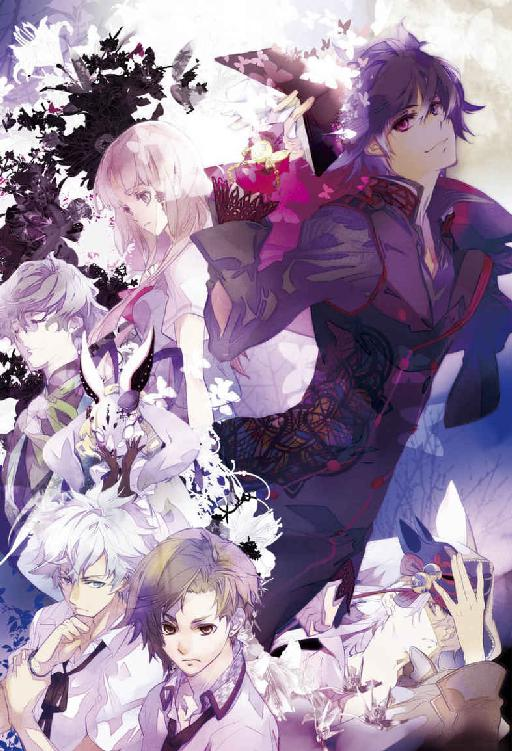
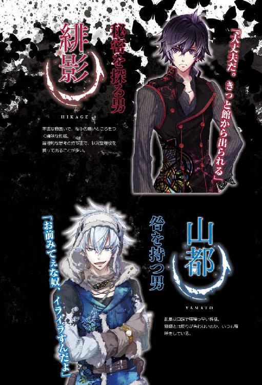
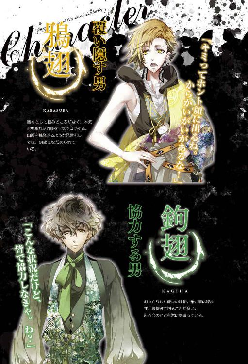
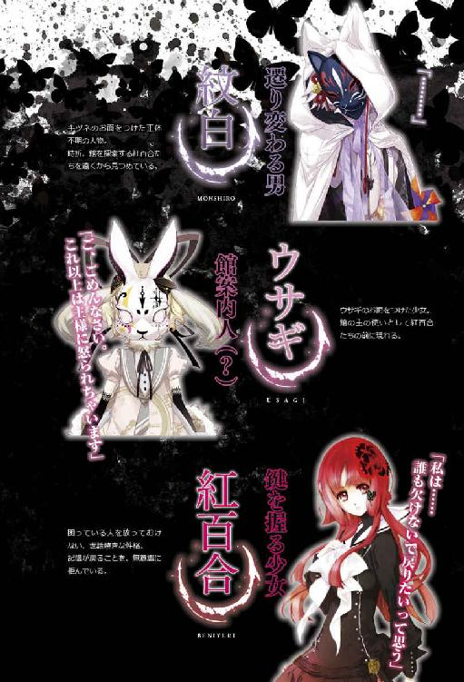
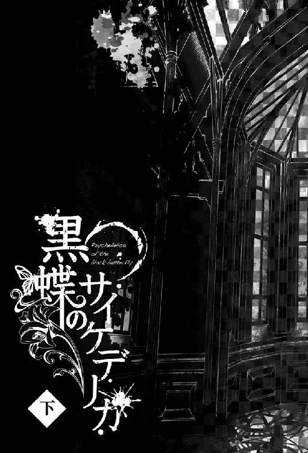
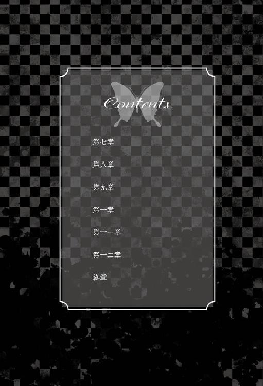

第七章 闇に嗤う緋色の影
......仲間が。
なによりも大切な仲間たちが、互いに銃を向け合っている。
紋白は鉤翅へ。鴉翅は緋影へ。鉤翅は固く口を閉ざし、そして緋影は──
「嘘......嘘だよね？ だって緋影くん、キャンプの記憶を思い出したって......」
紅百合の前には今、二人の『カズヤ』がいる。正確には『神田和也の顔をした』二人の男が。
紋白と緋影。
本物の『カズヤ』は紋白のほうであると、鴉翅は言った。そしてこれまで『カズヤ』を名乗ってきた緋影こそ、紅百合たちを翻弄し続けた張本人──この館の主なのだと。
これが鴉翅特有の、性質の悪い冗談であればよかった。だが、そうではないことくらい紅百合にも理解できる。この肌を刺す空気は偽物ではない。それでも否定を求めて呆然と呟く紅百合を、緋影と紋白が見つめてきた。一方は感情のない人形の目で。一方は申し訳なさそうな伏し目がちの目で。その色は、共に美しい暗紫色。
（サマーキャンプの写真を見た時、緋影くんも全てを思い出したって言った......あの時の記憶を持ってるってことは、彼は幼馴染のカズヤくんで間違いないはず）
が、しかし......と紅百合は視線を紋白に移す。
（でも、もし緋影くんがカズヤくんだとしたら、私の目の前にいるもう一人のカズヤくん......紋白さんの正体は誰になるの？ 鴉翅くんは何を知ってるの？ どうして......鉤翅さんは黙ってるの？）
誰が嘘つきで何が本当なのか。
突如として突き付けられた情報の複雑さに、紅百合は答えを乞うように緋影を見遣る。今までそうしてきたのと同じく。いつも公正で私情を挟まず、冷静沈着な彼であれば......きっと快刀乱麻を断ってくれるに違いない。そう思った矢先だった。
「ふ......ふふ......」
昏い含み笑いを浮かべ、緋影がふらりとその場を後ずさる。
「ひ、緋影く──」
せり上がる悪寒を覚えつつも近寄ろうとした紅百合が、足を一歩踏み出したその時。
「あは......はははは、あっははははははははは!!」
顔を上げた緋影が、大きく開けた口から高らかな哄笑を響かせた。同時に廊下の奥、果てなく続く闇の中から激しい突風が生まれ、それに乗って現れた夥しい数の黒蝶が紅百合たちに襲い掛かる。殺到する暴風は髪や衣服を力任せに煽り、紅百合は本能的に翳した腕で視界を守った。叩きつける雨のような羽音が聴覚を奪う。
身動きもできずに眇めた瞳で眼前の光景を凝視していると、蝶の群れは主君を讃え、祝福するかの如く、緋影の周りを螺旋を描いて飛び交った。
いかに危機意識に乏しいと言われる紅百合といえど、本能的に確信する。
『彼』は違う、と。
理性のタガが外れたような高笑い。可笑しくて堪らないといった様子で腹を抱え、身体をくの字に曲げたその姿は、紅百合の知る緋影とは余りにかけ離れすぎていた。
声や顔は同じでも、声音と表情がまるで違う。
（────この人は、誰？）
こんなふうに嗤う人を、紅百合は知らない。
こんな禍々しさを宿した人間に、紅百合は会ったことがない。
「はははっ......そんなに怖がらなくてもいいじゃないか紅百合。本当の僕を知りたかったんだろう？」
「緋影、くん......？」
最早その名で呼ぶべきなのかさえ躊躇われた。だが緋影は何ら気にも留めず、芝居がかった仕草で片手を掲げてみせる。
「そうだよ紅百合、何を戸惑っているのかな？ 僕は緋影。最初からずっと、緋影という名の存在だった」
「............」
何も言えず、ただただ圧倒されるだけの紅百合に興味を失くしたのか──彼はおもむろに鴉翅へと向き直った。
鴉翅は怯むことのない闘志を瞳に燃やし、未だに銃を構え続けている。その照準は彼の決意の強さを表すかのように、緋影を捉えて微動だにしない。
「なかなかやるじゃないか鴉翅。あれに懲りて縮こまっていると思ったら、まだ食って掛かってくるなんて。あの『弱虫ヒメちゃん』が一体どうしたの？ 臆病風はどこへやったのかな？」
「......まだ自分の中にあるよ」
撃鉄に親指をかけた状態で、鴉翅は正面から緋影の視線を受け止める。
「でも、奥のほうに仕舞い込んだ。オマエとやり合うには邪魔だからね」
「ふーん......」
緋影は空中で生み出した銀の銃を人差し指でくるくると回し......
「うざ。やっぱり君、見逃すんじゃなかった」
鴉翅に向けてピタリと固定、流れるような所作で発砲した。
「っ!!」
咄嗟に身を反らす鴉翅。放たれた銃弾はわずかに彼を外し、周囲を飛んでいた黒蝶に命中した。
偶然被弾した蝶は無残に四散し、直後、緋影の腕のアクセサリーへと流れるように吸い込まれていく。
「間一髪だね。まぁ先に銃を向けたのはそっちだから、文句は言えないよね」
確実に当てるつもりで撃っただろう緋影と、それを前にしても退かずに臨戦態勢を取る鴉翅。どちらにも迷いがない。一朝一夕の心構えでできることではないはずだ。こうなることをとっくに予期していたのではと思えるほど、彼らの対峙は自然だった。
そして、この異常事態に妙に落ち着き払っている鉤翅も、ずっと素性を隠し続けてきた紋白も......誰もかれもが緊迫の中でも落ち着き払っている。
（どういうこと？ なんで、みんな）
......まさか。自分だけ、何も知らずにいたのだろうか？
一緒に進んでいたと思っていたのは自分だけで、仲間たちは皆、各々答えに辿り着いていたということなのか。いつの間にか、自分だけが置いていかれて......
「......緋影くんはカズヤくんじゃないの？」
この期に及んで自分でも間の抜けた問いだと思うが、わかっていても聞かずにはいられなかった。
「その問いにはさっき答えたはずだけど？ 僕は僕。君たちが緋影と呼ぶ存在さ。そしてその『緋影』は──」
不意に、眼前の青年の輪郭がぼやけ、歪み、形を変えていく。緋影だったはずの男は瞬く間に、紅百合が最もよく見知った人物の姿に結実した。
すなわち、紅百合自身の姿に。
「こんなふうに、弱くて臆病な君にだってなれる。それから」
緋影の身体が再び揺らめく。
「狡くて意気地なしのあいつにも」
陽炎の中から現れたのは鴉翅。
「実は強かでねちっこいそいつにも」
次は鉤翅。
「......ああ。そういえばこんな奴もいたっけ」
どうでもいいものを思い出した口調で、最後に山都へと変化する。
（「そういえば」......？ 「こんな奴」？）
緋影──カズヤにとって、山都は実の兄という特別な存在だ。もし緋影が本物のカズヤだったなら、決してそんな粗雑な物言いで扱ったりはしない。
「ははっ、間抜けな顔。能天気な君のことだ、これも手品か何かだと思っていたりするのかな？ 残念だけど種も仕掛けもありはしないよ」
山都の姿がぐにゃりと歪み、二連黒子の青年が現れる。
目の前で繰り返し披露された奇術。あんな芸当をトリックなしに成立させるなど、人間には到底不可能だ。
じゃあ緋影は？ 彼は人間ではないとでも？
これではまるで......まるで人外の──
「緋影くん、なんでこんな......あなた一体、」
誰なの、という問いを、紅百合はギリギリで飲み込んだ。それを聞いてしまったら全てが終わりを告げるようで。
しかし真実を目前にしてなお足踏みする紅百合を、緋影は待ちはしなかった。
「僕が何者かって？ 簡単さ、君だってわかっているんだろう？ ただ認めたくないだけで」
紅百合の弱さを嘲笑し、緋影は告げた。
「君たちが従順に従い続けてきた館の主......それが僕だ」
悪びれる様子もなく、むしろ心から種明かしを愉しむように緋影が鴉翅の台詞を肯定していく。
「この館は思念が具現化する世界。主たる僕にとっては、どんな姿だって思うがままだ」
館の主。その存在が紅百合の中で急速に膨れ上がっていく。
ウサギを通してしか知ることのなかった謎の人物。存在そのものがあやふやで、幻のように現実味のない相手だった。出会うとしてもそれは万華鏡が完成した時で、もしかしたら永遠に直接見えることはないかもしれないとも思っていた。ずっと間接的な手法でしか接触してこなかったから、尚更。
そして紅百合は、その見えざる館の主にどこかで身勝手な幻想を抱いていた。紅百合たちに直接危害を与えることもなく、万華鏡の欠片を集めているうちは衣食住も保障し、何よりあのウサギが心から慕っている。もしかしたら必要以上に嫌悪するような相手ではないのかもしれない、と。
しかし......
「それで成りすましてたの？ カズヤくんに......？」
「その通り」
「仲間のふりをしてきたってこと？ 最初からずっと？」
「いかにも」
「初めて会った時、私を庇って怪我したよね？ 弱気になった時、励ましてくれたよね？」
「そんなこともあったね」
「それも、全部──」
「嘘だよ」
緋影はあっけらかんとして、糾弾にも似た紅百合の言葉に即応した。
「......どうして」
辛うじて、紅百合はそれだけを口にする。
どうして。どうせ騙すなら最後まで騙し続けてくれればよかったのに。どうしてこんな見せつけるようなやり方で不必要に自分たちを傷つけるのか。
こんなの、初めから裏切るのを目的にしていたみたいじゃないか──
「ああ......いいね、その表情」
緋影が恍惚として瞳を細める。
「信じていたものが崩れる瞬間。絶望、戸惑い、悲嘆、憤怨......堪らないよ。今まで馬鹿げた仲間ごっこを我慢してきた甲斐があった」
生理的な嫌悪すら催すほど醜悪な笑み。なまじ端正なカズヤの顔なだけに、その歪さは余計に際立った。
「う......嘘だよね？ 緋影くん」
頬が引き攣り、唇が戦慄く。それでも紅百合は構わず続けた。
「私......緋影くんみたいに頭よくないから、緋影くんの考え、わからないよ......。ぜんぶ嘘だよね？ 本当の緋影くんは優しいの、私、知ってる。今は何か事情があって、こんなことしてるだけなんでしょ？ ねえ、答えて。......答えてよッ!!」
最後の絶叫は、さながら癇癪を起こした子供のようだった。憑かれたように捲くし立てる紅百合を、緋影は冷たく一笑に付す。
「本当の僕が『優しい』......？ ははっ。それこそ、本当の僕など何も見えていなかった証拠だよ紅百合」
「っ......！」
全てはまやかしで、それに満足していた紅百合は本質など一つたりとも見抜けていなかったのだと。
どんな嘲笑よりも、紅百合はその事実に打ちひしがれた。
「さて......真相に辿り着いてスッキリしただろうし、君たちにはここで気持ちよく退場してもらおうかな。紅百合は子犬みたいにキャンキャン吠えて煩いし、気づかれてないつもりで僕の身辺を嗅ぎ回っていた鴉翅も、小蝿みたく目障りだったしね」
緋影の握る拳銃が、紅百合の心臓を狙い定める。
「緋影っ!!」
怒号を上げたのは鉤翅だった。それを聞いた緋影は一瞬だけ虚を衝かれたように表情をキョトンとさせ、ああ、と何かを思い出した様子で相槌を打つ。
「そうだった。君には手出ししないって約束だったっけ」
「え......？」
「でもまあいいか。僕は僕の目的さえ達成できればそれでいい、ということで」
にっこりと緋影が微笑む。見たこともない晴れやかな笑顔で。
「さようなら、紅百合」
哀惜など微塵もない別れと共に、白銀の銃が火を噴いた。紅百合はようやく命の危機を意識する。死ぬのだ、と。それも信じていた仲間の手に掛かるという最悪の終わり方で。
悲しくて悔しくて、逃げるよりも先に涙が出た。
その時だった。
じわりと滲んだ視界の端から、緑色の影が飛び込んできた。
......銃声が、やけに長く聞こえた。
「鉤翅、さん......？」
紅百合の足元に、何故か鉤翅が倒れている。紋白と睨み合っていたはずの彼がどうしてここにいるのか、どうして倒れて動かないのか、その理由がわからず、紅百合は呆然とその場に立ち尽くす。
青年の腹部から赤い液体が流れ出て、見る間に床に広がっていった。
熱に浮かされた思考が、引き潮のように失せる血の気と共に急速に動き出す。
「か......鉤翅さんっ！ 嘘、なんでっ!? どうして鉤翅さんが......っ！」
屈んで抱き起こそうとした紅百合の腕を、温かな血糊がべっとりと塗らした。
「はあ、は......紅百合さ──大、丈夫......？」
「大丈夫！ 私は大丈夫だけど......！」
鉤翅がぎゅっと紅百合の手を握る。それは彼が紅百合に縋るためではない。紅百合を励まし力づけようとしているのだ。
だが、気丈に振る舞う鉤翅の顔はたちまち青褪め、脂汗で濡れていく。
「鉤翅さん、鉤翅さんしっかりして！ ああ、どうしよう......どうしたら！」
「紅百合ちゃん落ち着いて！ とにかく止血を、傷口を押さえるんだ！」
助けを求めて見上げた鴉翅は、指示を飛ばすだけで駆けつけてはくれない。動きたくても動けないのだ。
彼は緋影の動きを制するため、絶えず彼に向けて銃を構え続けていた。
けれどその牽制すら、緋影はまるで意に介していないようだった。
「あれ？ 鉤翅、もしかして死ぬの？ 困るなあ、お前はなかなか見所があったのに」
意味深な発言だが、気にかけている場合ではない。つかつかと歩み寄ってくる緋影を見、紅百合は身体全体で覆い被さる格好で鉤翅を守った。
「鉤翅さんに近寄らないで！ これ以上仲間を傷つけたら、今度は私があなたを撃つ！」
銃を握り、照準を緋影に定める。やはり緋影は止まらない。
当たり前だ。撃つ、と宣言した紅百合の腕はガタガタと震えていた。これでは脅しにすらならない。
「無理はしなくていいよ紅百合。どんなに自分自身を奮い立たせて虚勢を張ったところで、君には誰も守ることなんてできやしないんだからね」
「そっ......そんなことは！」
「ない？ ......どこまでも身の程知らずなんだな」
冷笑を浮かべたまま、緋影が蔑みの眼差しで紅百合を見下ろす。
「君は守る器じゃないよ。いつも優しい男の後ろで縮こまっているのがお似合いだ。......そう、ちょうどそいつに守ってもらっていたみたいにね」
緋影が小さく顎をしゃくって鉤翅を示す。
「気づいていないなら教えてやろうか？ 君を守るために、君を助けるために、いつだってこの憐れな男は──」
「!! 言うなっ！」
紅百合の膝の上、やっとのことで浅い呼吸をしていた鉤翅が唐突に身を捩り、食らいつくような剣幕で叫んだ。
が、それが限界だったのだろう。
「言わなくて、いい......お願いだから......言わないで──」
辛うじて弱々しい声を絞り出した彼は、ぐったりと全身を脱力させた。腕の中からずるずると滑り落ちそうになる長身を、紅百合は必死に引き上げる。
鉤翅の哀願は、緋影よりもむしろ紅百合の心を引き裂いた。
プライドも尊厳も全て捨て去った「弱者」の訴え。鉤翅が──水谷夏樹が不条理な力に屈して頭を下げ、強者に縋る姿を、紅百合は初めて目の当たりにした。
幼少期からずっと紅百合の憧れだった存在が、成す術もなく蹂躙されていく。それは目を背けたくなる辛く苦い事実だった。
緋影の言葉によれば、鉤翅が全く抵抗せずに屈辱を甘受しているのは紅百合のためなのだという。紅百合を守るために、鉤翅は生命の瀬戸際でも『何か』を隠そうとしているのだ。
（馬鹿だ私、幻滅する資格なんてないのに......！）
鉤翅はもはや瞼を開く余力もなく紅百合の腕に抱かれている。その顔は蝋人形めいて白く冷たい。
紅百合は唇を噛み、再び銃を構えた。
狙うは緋影の眉間。今度は震えたりしない。
紅百合の宣戦布告を、緋影は氷よりも冷やかな真紅の眼で受け取った。
「ふぅん......そんなにそいつが好きなんだ？ じゃあ似た者同士、ここで仲良く死んだらどう？」
緋影の掌が閃光を発し、見慣れた拳銃が現れる。その銃口が身動きできない鉤翅に向いていることを察した紅百合は、応戦することよりも鉤翅の盾になることを選んだ。
（私だって......私だって、最期に大事な人を守ることくらい！）
鉤翅の頭部を胸元に抱え込み、全力で抱き締める。どんな痛みが襲ってきても決して離したりしないように。
自分はどうなってもいい。ただ鉤翅を死なせたくなかった。
生き残った彼が現世に戻り、自分の分まで幸せに過ごしてくれれば──
真心からの祈りと共に、紅百合は強く強く瞼を閉じた。
「そいつに手ぇ出すんじゃねぇッ!!」
聞こえるはずのない声が紅百合の鼓膜を打つ。雷鳴の如き怒号が淀んだ空気を切り裂いた。
「山都！」
驚愕とも歓喜ともつかぬ鴉翅の叫び。顔を上げ、目を見開いた紅百合の前で、廊下の闇から躍り出た山都が緋影の背中に躍り掛かった。寸刻遅れて気づいた緋影が飛び退くより早く、山都の鋭い黒爪が薄い肩口を捉える。
「ぐっ......！」
短く呻き、緋影が傷口を押さえて後退する。はっきりとはわからないが、山都の爪は緋影の外套ごとその下の肉まで抉ったらしい。闇の中に一瞬、鮮血が舞ったようにも見えた。
「山都、お前......ッ！」
苦悶を押し殺した緋影が襲撃者を睨み据える。視線だけで人を殺せそうな憤怒と怨念をその眼に煮え滾らせて。
しかし対する山都は微塵の動揺も見せず、相手に勝るとも劣らぬ眼力で真っ直ぐに緋影を貫いた。
「やっぱお前だったか緋影。いや......館の主と呼ぶべきか」
真新しい血に濡れた五指を、山都が軽く握ってみせる。その後ろでは鴉翅と紋白が銃を携え、しっかりと緋影を狙い定めていた。
「──ちっ！」
冷静に自らの不利を見極めたらしく、緋影が忌まわしげに舌打ちする。直後、廊下の奥から押し寄せた黒蝶が濁流となって紅百合たちの視界を闇色に染めた。
と同時、腕の中から何かが強引に引き剥がされる感覚がして、紅百合の背筋が凍りつく。焦燥感に駆られるまま両手を開閉するが、一瞬前まで確かにそこにあったはずの重みがない。指先は虚しく空気を掴むだけだった。
「鉤翅さ......鉤翅さんッ!!」
呼び掛けに応えはないが、奪われた彼がどこにいるのかは反射的に理解した。
「全員、その場から動くな。一歩でも動いたらこいつを撃つ」
片腕で引きずるように鉤翅を抱え、緋影が低く、それでいて確固たる声音で宣告する。身じろぎひとつする力のない鉤翅の頭に拳銃を押し当てながら。
重傷の仲間を人質に取られ、迷いなく戦いを続けられる者はいなかった。山都も鴉翅も紋白も、戦う構えを取ったまま動きを止める。その光景を満足げに一瞥した緋影は、鉤翅を盾にする格好でじりじりと背後の闇へと退いていく。
「緋影くん！ 待って、鉤翅さんをどこに連れてくの!? お願いひどいことしないで！」
ただでさえ瀕死の怪我を負った鉤翅が無体に扱われることに耐え切れず、紅百合は悲鳴じみた懇願と共に立ち上がった。
その手首を、誰かが背後から掴んで止める。
「紅百合ちゃん、追わないほうがいい」
去りゆく緋影から視線を外すことなく、鴉翅が低く短く告げた。咄嗟に非難を浴びせようとした紅百合が口を噤んだのは、鴉翅の掌を濡らす冷たい汗に気づいたからだ。
表情や声色は平静としているものの、人質にされた仲間と本性を現した館の主を前に、彼の内心は決して穏やかなどではないのだ。それでも必死に取り乱すまいと、自らの心を律している。ここで紅百合が感情のままに喚き立てれば、彼の懸命な努力を無駄にしてしまう。
「............っ」
歯を食いしばり、爪が食い込むほど両手を固く握り込んで、紅百合は緋影と鉤翅の姿が館の闇に溶けていくのを見送った。
......それしかできなかった。
二人の輪郭が小さく遠くなり、やがて完全に見えなくなった頃、紅百合は膝から崩れるようにへたりと床に座り込んだ。
──どうしてこんなことになってしまったんだろう。
もうすぐ万華鏡も完成して、皆で......緋影だって一緒に、元の世界に戻るはずだったのに。
つい何時間か前まで、そんな明るい展望に胸を膨らませていたのに。
「大丈夫。......アイツは鉤翅くんを手に掛けたりしないよ。今は」
紅百合の肩に手を置いた鴉翅が、彼にしてはとても柔らかく語りかけてくる。その優しい口調と微苦笑は、記憶の中の『アキちゃん』を思わせた。
「『今は』......？ どういうこと？ 鴉翅くん、何を知ってるの？」
「うんとね、紅百合ちゃん混乱してるだろうから簡単に言うと、鉤翅くんが緋影にとって利用価値のあるうちは、まだ大丈夫ってコト」
「利用価値......」
人質としての、という意味だろうか？ いろいろ考えていたいのに、思考が霧のように広がって纏まらない。
「......今はあんま込み入ったこと考えんな」
山都の無骨な掌が、紅百合の頭をくしゃりと雑に撫でつけた。
（......緋影くんや鴉翅くんの話が本当なら、紋白さんが本物のカズヤくんで......それで、ずっとカズヤくんだと信じてた緋影くんは、実際はこの館の主で──）
だとしたら、緋影はどうして自分たちを殺そうとしたのだろう。
彼の目的はあくまで万華鏡の完成。そこに紅百合たちの排除なんて必要ない。
いや、そもそもどうしてカズヤのフリをして幼馴染の中に紛れ込んでいたのか。館の主たる彼がわざわざそんな真似をした意味は？
（こんなふうに正体を暴かれなかったら、ずっとカズヤくんを演じるつもりだったの？ それとも......最初から、いつかは館の主だって打ち明けるつもりだった？）
緋影の意図がわからない。行動と目的がチグハグで、全く噛み合っていない気がする。
（どうして私たちを騙していたの？ 何のために──）
仲間だなんて、これっぽっちも思ってはいなかった......？
愉快だと緋影は言った。紅百合の絶望が堪らないと。そんなものを味わうために、こんなに回りくどい方法を取ったのか？ 周到な脚本を作るだけでなく、緋影自身すら舞台に上がり、危険を冒してまで。
「......ベニユリ、大丈夫？」
廊下の奥に広がる闇を呆然と見つめ続けていると、足音も密かに近づいてきた紋白が躊躇いがちに紅百合の顔を覗き込んできた。
「紋白さ──」
途中までその名で呼びかけ、紅百合は言い直す。
「カズヤ、くん......？」
たどたどしく言葉にすると、綻ぶような笑顔が咲いた。長い間苛まれていた呪縛からようやく解き放たれたのだと......目の前の晴れやかな表情が、何よりも雄弁に物語っていた。
「うん、そう......本当の名前は、神田和也」
初めて間近で目にする紋白の素顔に、紅百合は目を奪われる。
実の兄である山都自身も言っていたとおり、双子でありながら面立ちはあまり似ていない。男性的で彫りの深い山都の顔とは逆に、紋白は温和さや儚さの色濃い中性的な造りをしていた。
緋影の......偽の『カズヤ』のトレードマークだった二連黒子は、ない。
宝石のように透き通った紫紺の瞳が、紅百合を真っ直ぐに見据えていた。
「ごめん、ベニユリ......今まで何も言わなくて。ずっと、黙ってて......」
真剣な声音の紋白に、紅百合はふるふると首を横に振る。
「謝るのは私のほうだよ。ごめんね。あんなに近くにいてくれたのに気づけなくて......」
「気にしないで。俺が......自分で望んで、名乗らなかっただけだから」
でも、と屈託のない笑顔を苦々しい微苦笑に変えた紋白が、背後を振り返った。
「カラスバには、途中からバレちゃったけど......」
名指しされた鴉翅が、ひょいと肩を竦めてみせる。
「なかなか決定打がなくってもどかしかったよ。......ずっと黙ってたのは緋影が怖かったから？ それともなんか脅されてた？」
「違う......そんなんじゃない」
鴉翅と紋白のやり取りには、気心知れた者同士が持つ特有の空気があった。
会話を交える二人の幼馴染。その姿は、紅百合の記憶の中の彼らと寸分と違わず重なり合った。
ああ......間違いない。今ここにいる紋白が、本物のカズヤだ。
感傷と感慨が、心を満たして溢れ出す。紅百合は身動きすることも忘れ、食い入るように眼前の光景を見つめ続けた。
そして──紅百合と同様、仲間の窮地を救った山都もまた、その場から一歩も動けずにいた。
やっと本当の弟と対面を果たしたものの掛ける言葉が見つからないのか、開きかけた唇を一度閉じてはまた開き、手を伸ばしかけては引っ込めて、また触れようとして躊躇して......
そんなことを幾度も繰り返した後で、山都は自分自身に呆れたように溜め息をついて頭を振った。
「いや、今はこんなことしてる場合じゃねぇな......」
そう呟いた彼は、足並みの乱れた仲間たちに向かって張りのある声を上げた。
「おい、お前ら。ここは危険だ、移動しようぜ」
全員の注目が山都に集まる。それぞれが彼の提案に頷きつつも、同時にある疑問を抱いていた。
「移動には賛成だけど......って言っても、どこにさ？」
鴉翅の問いは、そのまま紅百合の質問を代弁していた。
「隠れ家の場所は緋影にバレバレだし。そもそもアイツはこの館の主なんだから、どこに行ったって危ないのは同じじゃないの？」
これまでの館の主の行動を顧みるに、彼は紅百合たちがどこで何をしていようと、あらゆる行動をつぶさに把握しているらしかった。
「......あくまで一時しのぎの避難先にしかならねぇかもしれねぇが──」
片手を軽く顎に添えた格好で、何事か思いついた様子の山都が続ける。
「この館、上に温室みたいなとこがあんだよ。俺がずっと寝泊まりしてた場所なんだが、そこなら化け物も寄り付かねぇし、一応安全には過ごせるぜ」
「え、なに、そんなトコがあんの？ 全っ然知らなかった......紅百合ちゃん知ってた？」
「あー、うん......」
山都が皆の前に姿を現した以上、もう秘密にしておく理由もないだろう。
「知ってたよ。というか、実は何度も行き来してたの」
「あ、そうなんだ」
鴉翅はさして意外でもなさそうに、あっさりと納得する。
「夜中、紋白ちゃんと一緒に隠れ家を抜け出してたよね？ アレやっぱり山都に会いに行ってたんだ。......そっかー、ナルホドねー」
「ハブられてたからって拗ねんなよ」
これ見よがしに不貞腐れた芝居をする鴉翅を、悪戯っぽい笑みを浮かべた山都が窘めた。
「隠れ家みたく何から何まで揃ってるわけじゃねぇから、不便は不便だが......化け物が出ないってだけでも、だいぶ気が楽だと思う。どうだ？」
「うん......いいと、思う」
真っ先に賛成したのは紋白だ。紅百合にも鴉翅にも異論はなく、全会一致で温室への退避が決定した。
「なーんか、急に現れたオマエに美味しいトコ全部持ってかれた感じで癪だけど......んじゃ、とにかくその温室とやらに移動しよっか」
「ああ。......行くぞ、紅百合。立てるか？ ほら、手貸せ」
「う、うん......」
力強い腕に引っ張り起こされながら、紅百合はもう一度、緋影たちが消えていった暗がりを見遣った。
生気のない鉤翅の顔が、鮮明に思い起こされる。
（ナッちゃん......）
自分を庇って撃たれた彼。その身体を抱きかかえた紅百合の両腕は、大量の血でべっとりと濡れていた。
本当ならすぐに手当てして安静にさせてあげたいのに。
（あんなに乱暴に連れて行かれて......）
あの様子を見る限り、緋影が手厚く看護してくれるとはとても考えられなかった。
（ここで撤退していいの？ 鉤翅さんを置いて、私たちだけ逃げていいの？ 緋影くんを追って、あの廊下の奥に走っていくべきじゃないの......？）
「おい、紅百合」
山都の短く明瞭な声が、紅百合の逡巡を遮断する。
「今は考えるな。......大丈夫、チャンスは必ず巡ってくる」
「そうそう、これは戦略的撤退ってヤツだよ」
紅百合の肩にポンと手を置き、鴉翅が底抜けに明るい笑顔を見せた。
「落ち着いた場所で、ちゃんと考えよ？ 鉤翅くんのことも、緋影のことも」
「ベニユリ、一人じゃない。カギハを助けたいって気持ちは......俺たちも、同じ」
言葉では表しきれない気持ちを伝えるかのように、紋白が紅百合の手をぎゅっと握り込む。少し低めの体温が心地よく沁み入ってくる。
「みんな......」
袋小路に迷い込みかけていた思考に一筋の道が拓かれた気がした。
心配なのも不安なのも自分だけではない。皆が皆、歯噛みしながら止むを得ず撤退を選択しているのだ。
「......そうだね。こんな時だからこそ、しっかり態勢を立て直さなくちゃ」
半ば自らに言い聞かせつつ、紅百合は仲間たちと共に新たな拠点へと歩き始めた。
劇的な出来事が紅百合たちを襲った後も、温室は全く変わらぬ静穏さで来訪者を受け入れた。
来る者拒まず、去る者追わず。そんなこの部屋の雰囲気が、今の紅百合には何よりありがたかった。
「へーっ、こんなトコあったんだ」
生い茂った芝生を踏みしめながら、鴉翅が興味深げに室内を見渡す。
「隠し扉をカンで嗅ぎ当てるなんて、山都クンさすがだよねぇ～」
「それぜってぇ褒めてねぇだろ。つか『クン』付けすんな、嫌味ったらしいんだよ」
「あ、嫌味だって理解する頭はあるんだ！ 大発見！」
ひとまずの安全を確保して余裕が出たらしく、鴉翅がすぐさま山都を弄り始めた。隠れ家にいた頃はすぐに殺伐とした睨み合いに突入していたはずなのに、今は山都も鴉翅の悪口に不敵な笑みで応えている。
互いの無事を確かめて安心したのか嬉しいのか、それとも暗澹とした先行きを少しでも明るくしようと努めているのか......それは紅百合にもわからなかった。
「ってかオマエ、マジで生きてたんだね～。随分ワイルドな外見になったじゃん。この爪とかホンモノ？」
「うるっせジロジロ見るな、触んなっ！ 好きでこんな身体になったんじゃねぇんだから......ったく、相っ変わらずウゼェ奴だな」
しつこく纏わり付く鴉翅の手を山都が煩わしげに払い除ける。会話だけ聞けば悪罵の応酬だが、二人の姿はじゃれあっているだけに見えた。
和やかな光景に、紅百合も思わず小さな笑みを零す。
「ヤマト、楽しそう......。よかった」
旧友と戯れる兄を見つめ、紋白がそっと囁く。その横顔は穏やかに微笑んでいた。
「そういえば......紋白さん、よく無事だったね」
紅百合の問いに、紋白が振り返って首を傾げる。
「鴉翅くんに撃たれたでしょ？」
「うん......」
「なのによく怪我しなかったなって。紋白さん、避けもしなかったし......」
幸いなことに鴉翅の放った銃弾はキツネの面だけを破壊して、紋白にはかすり傷ひとつ付かなかった。改めて考えると、とてつもない幸運──というより、もはや奇跡だ。
しかし当の紋白は、何がおかしいのかわからないといったふうに更に深く首を傾ける。
「避けなかった、のは......鴉翅は俺を殺したりしないって、わかってたから......」
「逆に、変に動かれるほうが危なかったんだよね～」
鴉翅が指先で銃の形を作り、紋白を撃つジェスチャーをしてみせた。
......つまり紋白は、鴉翅に本気の殺意がないことを信じた上、彼の狙撃の腕前も信じていたということなのか。
「す、すごいね二人とも......」
紅百合は半ば唖然として呟いた。
鴉翅に疑いなく命を預けた紋白もすごい。そしてその期待に応え、大して狙いもつけずに面だけ撃ち抜いた鴉翅も。
いつの間にそこまでの狙撃の腕を身に付けたのだろう？ なんにせよ、鴉翅が紅百合の知らないところで日頃から訓練を重ねていたことは明らかだ。
「うん。カラスバ、すごい」
感心しきりの紅百合に、紋白も率直な称賛を重ねる。すると鴉翅はひどくバツが悪そうに視線を逸らして苦笑いを浮かべた。
「......まあ、こーゆー小手先の技が得意なのもいかにもオレっぽいってゆーか？ うん」
てっきり調子に乗るかと思いきや、普段の様子とは打って変わって気恥ずかしげに謙遜する。率直な褒め言葉に弱いのは『アキちゃん』だった頃と同じだ。
「いいじゃない。お陰で紋白さんが素顔を見せることができたんだから。ね？ 山都くん」
「ああ」
山都は短く頷くと、ゆっくりとした足取りで紋白──実の弟、カズヤのもとへと歩いていく。
正体が明らかになった直後はどう接していいかわからない様子だった山都も、少し時間を挟んだことで気持ちの整理がついたのだろうか。臆することなく紋白に近づき、真っ直ぐにその顔を凝視した。
「紋白......いや、カズヤ」
白い蝶が発する薄明かりに照らされた弟の顔を、山都はじっと見つめ続ける。そっと伸ばした両手で包み込むように紋白の頬を撫で、輪郭を確かめた。
「ああ......やっぱそうだ。お前が、カズヤなんだ......」
「............うん」
山都の手に自らの手を重ね、紋白が子供のようにくしゃりと顔を綻ばせた。
「タクヤ......会いたかった。ずっと」
「俺もだ。......ああ、お前の声、今はそんな感じなんだな。ったく、俺の記憶の中のお前は、まだ声変わりもしてねぇってのに......はは、なんか改めて顔つき合わすと、こう......──」
山都が泣き笑いのような表情を浮かべる。もはや彼らを隔てるものなど何もないように思えた。
改めて、紅百合はそれぞれの顔をじっくりと眺める。
山都、鴉翅、紋白。
（タクヤくん、アキちゃん、カズヤくん──）
記憶の中の彼らと、今の彼らを重ね合わせる。
もう二度と間違えないように。
「......なあ。お前なんで黙ってたんだよ。自分が本物のカズヤだって」
山都の問いに責める響きは微塵もなかったが、それでも紋白は全身を硬直させ、表情を強張らせた。
「お前が何も言ってくれないままでも、変な面を被ったままでも、俺、ほとんど気づいてたんだ。ここで何度も会ってるうちに、サッカー教えてくうちに、お前こそがカズヤなんだって。だから偽物のいる隠れ家には帰れなかった」
山都の言葉が次第に熱を帯びていく。彼がヒートアップしていけばいくほど紋白が萎縮していくのが、紅百合には見て取れた。
「なあ、なんでだ。なんでずっと、俺にまで顔隠してた？ 理由があったのか？ 緋影となんかあったんだろ？」
「それ、は......」
すっかり小さくなって口篭る紋白が見ていられず、紅百合は二人の間に割って入った。
「山都くん、落ち着いて。ゆっくり聞かなきゃ......それじゃ紋白さん、話ができないよ」
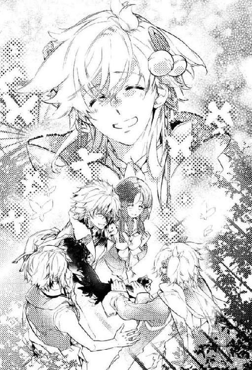
「あ......そう、だな。悪い......」
素直に失態を認め、山都は以後無言で紋白の発言を待つ。しばらくして、紋白は薄く開いた唇から訥々と話し始めた。
本当はキツネの面を剥いで、すぐにでも懐かしい幼馴染たちの中に飛び込んで行きたかった。
けれどどうしても言えなかった。
何故なら、自分が紅百合と出会って隠れ家に加わった頃には、既に偽物の『カズヤ』──緋影が皆のまとめ役として、その輪の中心にいた。
「皆、もう仲良しだった。......楽しそうだった」
遅れてやってきた自分が本物のカズヤだと名乗り出れば、その温かな関係を壊してしまう。
それが嫌だった。怖かった。
「けど、いつまでもそんな関係続くわけねぇだろ。緋影の正体を知ってたら、いつか壊れることくらい......」
「でも......！」
山都の正論に、紋白は搾り出すような声を上げた。
「でも、言えなかった......！」
いつかは破綻する仮初の絆だとわかっていても、それを自らの手で潰すことは、どうしてもできなかった。
「もし、俺が名乗って、ヒカゲの嘘がバレて、皆バラバラになったら......？」
そうしたら、せっかく得た紋白の居場所も失われてしまう。
「俺......また、ひとりになる。もう、ひとりは嫌。ひとりは寂しい......」
苦しみ悶えるように両手で耳を塞ぎ、紋白は顔を俯かせた。
「そう、だったのか......」
素性を隠し抜いていた理由を──その切実な想いを知って、山都はそれ以上の追及をやめた。
確かにこんな場所でひとりきりになるのは怖い。
だが、かといって赤の他人が自分に成りすまし、仲間と和気藹々と過ごしているのを傍観し続けることも同じくらい辛く、悲しかったはずだ。
「......名乗れなったの、苦しかったけど......でも、いい」
下を向いたまま、紋白が力なく頭を振る。長い銀髪が乱れて揺れた。
「辛いのも、悲しいのも、我慢する。耐えられる。でも、寂しいのだけは、嫌......！」
それは心が引き裂かれるような、魂の悲鳴だった。
「名前でも顔でも、ほしいなら何でもあげる。何でもあげるから......だからもう、ひとりにしないで......！」
それきり黙り込んでしまった紋白の肩を、山都が痛惜な面持ちで抱いた。
紋白の背中は、微かに震えていた。
（名前だって......顔だって、紋白さんのかけがえのない大事なもののはずなのに。本来ならそんなもの、投げ出して捧げたりしていいものじゃないのに）
ひとりにしないで、と紋白は繰り返す。
自分たちは仲間だ。そんなふうに『お願い』する必要なんて、どこにもありはしないのに──
「......そうだよな。お前はずっと、ひとりでここにいたんだもんな。あの時からずっと......」
山都の指先が、ぎこちない動きで紋白の銀髪に触れる。不器用ながらも優しい手つきで、彼は弟の頭を慈しむようにゆっくりと撫でた。
「十年もひとりにして......ごめん、な」
「ううん、いい......」
山都の腕の中で、紋白がくぐもった声を上げる。
「気にしなくて、いい......あれは元々、俺のせいだから......」
「！ 違うそうじゃない、あれは俺がお前にっ──」
山都と紋白のやり取りが急に険しさを帯びていく。彼らの口から飛び出す切迫感を含む単語の数々に、紅百合は微かな違和感を覚えて眉を顰めた。
『十年もひとりにして』『ごめん』『俺のせいだから』
話が段々と見えない方向に流れていく。
（何......？ 皆、何を話してるの......？）
山都たちが当たり前のように喋っている内容が、紅百合には何故か判然としない。
「ねえ、『あの時』って、何？ サマーキャンプのこと？」
何気なく尋ねると、山都と紋白がハッとした様子で同時に振り返ってくる。その表情に強い困惑を示して。
（やっぱり......十年前のサマーキャンプで、私の知らない何かがあったんだ）
山都や紋白、鴉翅が十年も引きずっているような、重大な何かが。
「そう驚かないでやってよ。紅百合ちゃん、まだあの時のこと思い出せていないんだ」
戸惑いに満ちた山都たちの視線から庇うように、鴉翅が紅百合の前に腕を伸ばす。
「記憶の回復具合には個人差があるみたいだし、紅百合ちゃんもそのうち思い出すよ。オレたちはそれを待ってればいい。紅百合ちゃんも焦らなくていーよ」
何かにつけて急ぎ足の彼らしからぬフォローである。山都たちと対峙する鴉翅の横顔を、紅百合はそっと覗き見た。
楽観的な台詞を呑気な口調で告げた唇は、へらりと軽薄な笑みを浮かべている。が──
山都たちを見据える瞳は恐ろしく高圧的で、その鋭い眼光は一切の反論を禁じていた。
余計なことは言うな。とにかく黙って合わせておけ......そんな意図が見て取れる。
「そう......だな」
鴉翅の要求を呑み、山都が低い声で呻いた。
「俺たちが急かしたってしょうがねぇしな......紅百合もあんま気にすんな」
「気にするなって言われても......」
自分が知らない『何か』を、他の皆が思い出しているのは知っていた。だが、目の前でこうしてその秘密を共有されると......
嫌でも疎外感が浮き彫りになる。それはとても居心地悪く、いい気持ちのするものではなかった。
「皆が思い出してるんだったら、直接教えてくれてもいいんじゃない？ 私が思い出すのを待たなくても......大事な記憶なんでしょ？」
仲間たちの顔を代わる代わる見つめる。山都は気まずそうにそっぽを向き、鴉翅は視線を俯かせ、紋白は神妙な様子で口を開いた。
「......無理に思い出すのは、よくないと思う。焦ったら、だめ......」
結局は鴉翅と同じ文言で突っ撥ねられてしまう。
鴉翅は言っていた。何も知らないのが紅百合のためだと。全てを思い出せば必ず傷つき、記憶が戻ったことを後悔すると。
どうやら三人の幼馴染たちは、その忌まわしい過去から紅百合を守ることで一致団結したらしい。皆が皆そう決断したということは、紅百合にとっても、彼らにとっても、それが最良の道なのだろう。
でも──
「あいたたたっ......！」
突然、鴉翅が上腕を押さえて苦痛を訴えた。緋影や鉤翅の件が立て続けに起こって有耶無耶になっていたが、そういえば彼も化け物に襲われ、決して軽くない怪我を負っていたのだ。
「痛ってー！ 色々あって忘れてたのに......落ち着いたからかな、急にまた痛みが......っ」
本人もすっかり失念していたらしい痛みに、鴉翅が顔を顰める。
「だ、大丈夫!? ごめんね、鴉翅くんだって手当てしなきゃいけないのに」
紅百合が慌てて近寄ると、鴉翅は血糊で貼り付いた袖を剥がして傷の具合を確かめ始めた。
「あー、とりあえず血は止まってるや......この館の自然治癒力ってすごいねー」
なにやら他人事めいた口ぶりの鴉翅に若干の不安を覚えたが、そんな振る舞いができる程度には回復しているのだと、紅百合は少しだけ胸を撫で下ろした。
「よかった......でもまだ無理しちゃ駄目だよ。向こうの水場で傷、洗ってこよう？」
水場といっても温室中央の噴水だが、山都が飲み水として使っているのを見る限り衛生面の心配はなさそうだ。
「うん、そーだね。悪化しちゃまずいもんね......ってことで」
にこやかに同意した鴉翅が、紅百合の前を素通りしてスタスタと山都のほうへ歩いていく。肩透かしを食らった紅百合は、差し伸べた手もそのままに立ち尽くした。
「山都、ちょっと付き合って」
「あ？」
とぼけた声が出たのは、指名されたことが嫌なのではなく単に意外だったからだろう。これまでの二人の関係を思えば当然の反応かもしれない。
「だーかーら！ 傷の手当してって言ってんの」
尚も動けずにいる山都の腕を、鴉翅がじれったそうに引っ張った。
「え......俺が？」
どういう風の吹き回しだと、真意を測りかねた山都が紅百合に目線で助けを求めてくる。が、その救難信号を鴉翅が目聡く察知した。
「紅百合ちゃんにオレの裸見せたいの？ オレ、一応紳士的な配慮をしたつもりなんだけど」
「あ......」
もっともな発言に、山都が押し黙る。
「傷見たらショック受けるかもしれないし。それに、女の子にダサいとこ見せたくないって男心もわかるでしょ」
「あ、ああ。......わかった、そうだな」
しどろもどろに了承した山都が、噴水に向かって歩き始める。その後を追う鴉翅が、振り向きざまにニッと笑った。
「とゆーわけで、紅百合ちゃんは寂しがり屋の紋白ちゃんの相手、ヨロシク」
「え？ あ、うん......」
鴉翅は紅百合の返事も待たずに駆け足で去っていく。裸を見せたくないという言い分もショックを与えたくないという配慮も理に適ったものなのに、どこか釈然としなかった。
穿ちすぎだとは思うけれど、自分から遠ざかるために取って付けた言い訳みたいに感じてしまう。
「傷......ちゃんと治り始めてて、よかった」
小さくなっていく山都たちを見送りながら、紋白がぼそりと呟く。
「だから......ベニユリも、心配しなくていい」
「......うん、そうだね。ありがとう、紋白さん」
紋白の言葉に力づけられつつも、紅百合は拭いきれないわだかまりが心に染み付いているのを感じていた。
「──で？ わざわざ俺を呼び寄せて、一体なんの話があんだよ」
「あーもう、そうツンケンするなってば......まあ、意図を理解してくれたのは助かったけどさあ」
紅百合のもとを離れ、鴉翅たちは揃って噴水の近くにしゃがみ込む。ここまで来れば水音が会話を掻き消してくれるはずだが、それでも万一を警戒した二人は暗黙の了解で小声での話し合いを徹底した。
「聞きたいことも言いたいこともそれなりにあるけど、まずは情報交換かな。オレはオマエがいない間に隠れ家であったことを話すから、オマエはあれからどうしてたのかを教えてよ」
「ああ、わかった。俺は──」
山都は可能な限り簡潔に、今日に至る経緯を順を追って聞かせた。半狂乱で温室に辿り着いたものの自我を喪失していた自分を、紋白と紅百合が人間に戻してくれたこと。それからここで過ごしているうちに、徐々に記憶が戻っていったこと。山都を心配した紅百合が、仲間に咎められるのも覚悟で何度も通ってくれたこと。そうしているうちに紋白とも親交を深めるようになっていったこと──
「正直、最初はどうとも思ってなかったんだ。妙な奴に懐かれたなぁってくらいで。けど......」
一呼吸置いて、山都は温室の隅に転がるサッカーボールに目を遣った。
「気を利かせた紅百合が持ってきてくれたんだが......紋白も興味があったみたいなんで、ここで会う度に暇つぶしがてら教えてたんだよ。あいつもすぐに巧くなって......そしたらさ」
顔や声に嬉しさが滲み出るのも構わず、山都は言葉を続けた。鴉翅も黙ってそれを聞き続ける。ここで茶々を入れるのはさすがに野暮ったい。
「似てんだよ。蹴り方とかパスの受け方とか、そういう癖がいちいちそっくりなんだ。十年前からちっとも変わってねぇんだよ」
「......それで紋白のことがわかったんだ？」
山都は力強く「ああ」と答えた。
「そっか......双子の兄弟ならではってゆーか、オレたちにはちょっとわかんない次元の話だね」
「紋白がカズヤなら、隠れ家にいる緋影はカズヤを名乗るニセモンだ。本当はすぐにでも隠れ家に戻るべきだったのかもしれねぇが、真実に辿り着いた俺は緋影......館の主にとって邪魔者以外の何者でもねぇ」
「だからすぐには戻らないで、ここで機を窺ってたってわけか......ま、妥当な判断じゃない？」
山都の変貌と失踪の原因は、館の主──緋影が送ったメールだった。
今ならわかる。緋影が真っ先に山都を脱落させた理由が。
緋影が『カズヤ』を演じるにあたって、最大の障害になるのが実の兄である山都だったからだ。
遅かれ早かれ、山都は全ての記憶を取り戻す。そうすれば緋影の嘘も露見し、山都は確実に緋影と対立する。それが予見できていたから、緋影は早々に山都をリタイアさせたのだ。
「そう考えると生きてるだけマシっつーか、ホントよく助かったね」
「何度も言うが、紅百合のお陰だ。あいつが来てくれなかったら、俺はとっくに館内を徘徊する化け物の仲間入りをしてた」
「そっかー。紅百合ちゃんも紋白もグッジョブだったね」
血まみれの上着を脱いだ鴉翅が、噴水を浴びるようにして傷口全体を洗い流す。冷水が沁みるのだろう、時折きつく片目を閉じて声を押し殺している。
「俺のほうはそんな感じだが、お前は？ あのあと隠れ家はどうなったんだ？」
「......まあ、大体は紅百合ちゃんから聞いてると思うけど──」
水辺から引き返してきた鴉翅が草むらにドッカリと腰を下ろした。彼は化け物に破かれた袖を器用に引き裂き、即席の包帯を作り出す。それを受け取った山都が、塞がりつつあるとはいえまだまだ生々しい鴉翅の傷口に巻き付けていく。少年サッカーをやっていた頃に怪我の対処法を習っていたのが、こんなところで役に立った。
「いなくなったオマエを捜すのと並行して、変わらず万華鏡の欠片探しをやってたよ。オレも早いうちから記憶が戻ってたから、緋影の怪しさにもなんとなく気づいててさ。その観察もしたりしながら」
「怪しさか......」
「最初はすごく些細な違和感だったけどね。オマエでも知ってる熊のポン太を知らなかったり、スマホについておかしいくらい無知だったり」
その頃は山都もまだ隠れ家に健在だったし、問題のやり取りも間近で見ていたはずだ。当時のことを思い出し、確かに、と山都は低く唸る。
「ポン太については、まああーゆーのに興味ない人は知らないかもしれないなーとも思ったけど、スマホなんかさ。いくら世間に疎くったって、フツーに生きてれば自然に知り得ることじゃん？」
「まあな......だがそれで言うと、鉤翅も似たような反応をしてたと思うが」
「そう、それ」
鴉翅がピン、と人差し指を立ててみせた。
「緋影が鉤翅くんと似た反応をしてたから、もしかしたらアイツも俺たちと同じ時代、同じ時間軸を生きてないんじゃないかって疑うようになった。だからって緋影が『カズヤ』じゃないって確信は持てなかったけど......ホンモノのカズヤだって、現実世界では十年寝たきりなんだからポン太もスマホも知らないはずだし。でもそれにしたって、俺の記憶の中の『カズヤ』と館で出会った『カズヤ』の間に違和感があってさ。だからとりあえず警戒しながら、このままじゃマズイと思ってオマエの復帰をギリギリまで期待してたんだけど......」
「だけど？」
「ひょっこり現れたウサギ──あの館の主の使い、覚えてる？ アイツがさ、万華鏡の完成はもう目の前だとか言うからさ。いよいよ猶予がなくなっちゃって。でもひとりで緋影と戦うのは嫌だったから、少しでも勝算上げたくて鉤翅くんを味方にしようと説得を試みて失敗」
「......失敗、したのか」
信じ難い──いや、信じたくないという思いで聞き返す山都に、鴉翅は「どうも力及びませんで」とでも言いたげな様子で唇を尖らせた。
「いや、お前を非難するつもりはねぇよ。確かにこの状況なら、ナツキは......鉤翅は、緋影に付いていくことを選ぶだろうな」
選ぶというより、実際にはその方法しか彼には残されていないのかもしれない。
山都が納得するのを待ってから、鴉翅が話を再開する。
「で、トーゼン紅百合ちゃんや紋白ちゃんを引っ張り出すわけにはいかないから、結局オレだけで緋影と対決することになったってワケ。それが昨日の夜中のことね」
「それで、この怪我か？」
「そーゆーコト。勇者の剣を手に入れて魔王の仮面を引っぺがしに行ったら、逆にその剣がハリボテだって見破られて、見るも無残に返り討ち。もー超カッコ悪い」
ぶつぶつと愚痴を垂れながら、鴉翅は山都が手当てした上腕部分を丹念にチェックしていく。何か言われるかと思ったが特に不満もなかったらしく、突っかかってくることもなかった。
「それで......どうする、これから」
山都の問いに、鴉翅は「うーん」と低く呻いて俯く。緋影のことも鉤翅のことも気にはなるが、それをさて置いてでも対処すべき重大な問題がこの場にあった。
「紅百合ちゃん、だよねえ。まずは......」
山都を伴った鴉翅が、足早に温室の隅へと移動していく。彼らを見送る紅百合の表情は曇っていて、釈然としない気持ちが視線から滲み出ていた。
その横顔を眺めつつ、彼女を託された立場の紋白は自分の果たすべき役割について考えていた。
「......ねえ、カズ──紋白さん」
不意に紅百合が振り向いてくる。紋白はいつものように小首を傾げて言葉の続きを促した。
「あの時、どうして鉤翅さんに銃を向けてたの？ 本当にびっくりしたんだけど......何があったの？」
「ん......ちょっと、喧嘩」
そんな生易しいものではなかったことは、あの場に居合わせた者なら誰もが直感したはずだ。それでも紋白は紅百合に対して真実を教えることを避けた。
紅百合があからさまに不満げな顔をする。
......わかってる。彼女が知りたいのは、その「喧嘩」の中身なのだ。
「どうして喧嘩になっちゃったの？ 紋白さんも鉤翅さんも、自分から相手を怒らせるようなことする人じゃないと思うんだけど」
業を煮やしたのか、紅百合が自ら詳細を聞き出すべく問いを重ねてくる。
紋白は口数少なに「なんとなく......」と答えてお茶を濁した。
こんな時、鉤翅や鴉翅あたりなら紅百合に怪しまれることなく気の利いた受け答えができるのだろう。自分にも彼らのような柔軟さがあればいいのにと、己の不器用さに嫌気がさす。
都合の悪い状況には無言を貫くというやり方はただの悪癖でしかないと、今回の件で痛感したが──かといって幼少期から染み付いた行動はそう簡単に治せるものではない。
これまでの紅百合なら、紋白が故意に核心を外した言動をしても「この人だから仕方ないか」と大目に見てくれていた。平時のぼんやりとした振る舞いが幸いしたのだろう。
しかし今の彼女は、自分だけ記憶が不完全だという事実にじわじわと追い込まれつつある。仲間からも除け者にされたように感じているかもしれない。それがいつしか不安を呼び、不安が猜疑心を呼ぶ。
（それは......あんまり、よくない）
精神が大きく影響するこの館の中では、そんな負の連鎖は何としても避けたいところだ。
ちら、と紋白は鴉翅たちの様子を窺った。彼らの姿は茂みに隠れてほどんと見えないが、こそこそと真剣に議論している声が聞こえてくる。水音のせいもあって内容は判然としないものの、時々感じる視線から、こちらを──というより、紅百合を意識しているのは間違いない。
恐らく紅百合が思い出せていない十年前の出来事について、今後どのように扱っていくかを話し合っているのだと思うが......
紅百合にこのまま疎外感を抱かせ続けるよりは、いっそ何もかも話してしまったほうがいいのだろうか？
いや、でも、そんなことをしたら彼女はまた別の、今とは比べ物にならない苦しみを味わうことになる。だから鴉翅たちは何も言わない。
どうしよう。
どうすべきなんだ。
紋白の思考回路が煙を上げ始めた丁度その時、山都がふとこちらを振り返ってきた。
山都の視線と紅百合の視線がピタリと繋がるのを紋白は見た。直後、山都がすかさず顔を逸らした。
（山都、それじゃ駄目......）
いくら何でもあからさますぎる。これでは紅百合に気にするなと言うほうが無茶だ。
そして案の定、紅百合の瞳が険しさを増し、唇がへの字に曲がる。
「......ねえ」
山都たちのほうへと一歩踏み出した紅百合が、そのまま迷いのない足取りで石畳の上を進んでいく。
「あ、紅百合まって──」
慌てた紋白が止めようとするが、彼女は聞く耳持たずといった様子で一直線に歩き続ける。その先で、山都と鴉翅が揃ってぎょっとした顔をしていた。
「二人とも、さっきからコソコソして、何なの？」
怒り心頭かと思いきや、紅百合の声音には怒気よりも、寂しさや悲しみが色濃く滲んでいる。
「私に言いたいことがあるならハッキリ言ってよ。内緒にされるのは正直、いい気分じゃないから......」
「紅百合......」
芝生に腰を下ろしたまま、山都が気まずそうに紅百合を見上げた。
「手当だけなら、こんなに時間かからないよね？ 何を話してたの？ 私は聞いちゃいけないの？」
「そんな大した話じゃないよ～。紅百合ちゃんたちと違ってオレはコイツと久しぶりに顔合わせたから、ちょっと雑談が長引いただけ」
「......鴉翅くん。お願い、誤魔化さないで」
逃げることは許さないとばかりの紅百合の眼差しに、ヘラヘラと軽薄な笑みを浮かべた鴉翅が、一転、表情を固くする。
「そこまでして私に隠さなきゃならないことなの？ 知ったら私が傷つくからって鴉翅くん言ってたけど、私、頑張るよ？ 皆が耐えてるみたいに、私もちゃんと受け止めるから」
切に訴える紅百合を見、山都と鴉翅が顔を見合わせる。
そしてそれきり──口を閉ざした。
「ベニユリ......二人を責めないで」
大粒の瞳を失意に染めた紅百合の肩に、紋白はそっと手を置いた。
「もう一度ヒカゲに会うなら......持っていないほうがいい記憶も、ある......」
「持っていないほうがいい記憶......？」
紋白はこくりと頷く。この館で長い時間を過ごし、紅百合たちよりも緋影をよく知る者として語っておくべき経験則があった。
「ヒカゲは......狭間に昔から棲んでる、ヒトじゃないモノで......この世界のルールに、すごく慣れてる。人の思念を操るのも、心の隙に付け込むのも......すごく、上手い」
万能ではないらしいけれど、伊達に館の主を名乗っているわけではない。
「記憶があると......それを利用されて、色々惑わされる。だから......全部思い出さないほうが、かえってヒカゲとは戦いやすい......」
これは決して嘘ではない。
過去のことを教えられない代わりに、記憶が不完全であることの優位性を聞かせる。それが紋白なりの誠意の示しかただった。
「俺たちが、昔のことでヒカゲに惑わされても......紅百合が紅百合のままでいてくれたら、大丈夫。安心......」
「......って紋白ちゃんも言ってるしさ。紅百合ちゃんのこと、ちゃんと頼りにしてるから」
紋白の言葉を継いで、鴉翅が微笑む。
「なにも黙ってついて来いなんて横暴なことを望んでるわけじゃねえんだ。それだけは信じてくれ」
いつもより優しいトーンで、山都が気遣わしげに言い聞かせる。完璧に納得したわけではないはずだが、これ以上食い下がるのは憚られたのだろう。紅百合はとりあえず矛を収めることにしたようだ。
「うん......大丈夫。それは、わかってるつもり」
ぎこちなく笑う姿が紋白には痛々しい。
「そっか、紋白さんの言うとおりなら、記憶が全部戻ってないのは逆にラッキーかも。私、すぐパニックになっちゃうし。難しいこと考えるの苦手だし......あはは」
紅百合はおどけたように首を傾け、後頭部を掻いてみせる。明らかに空元気だとわかるのだが、それを知ったところで紋白たちにできることは何もなかった。
「ごめんね。皆、私のことを考えてくれてるのに困らせちゃって。それじゃ、私あっちに戻ってるね」
言うが早いか、紅百合はクルリと踵を返して紋白たちのもとを離れていく。残された三人は、誰からともなく目線を交わし合って溜め息をついた。
こんなふうにしてずっと、紅百合を十年前の真実から遠ざけてきた。
だが、これ以上彼女の孤独感が強くなれば、それは決定的な弱みとして緋影の狙いの的になる。
それに......紋白たちがどのように苦心しようとも、紅百合の記憶はいずれ完璧な形で蘇る。
その時、彼女は全てを受け入れることができるのだろうか。
もしかしたら壊れてしまうのではないか。
今まで幾度となく首をもたげた最悪の想像を、紋白は激しく頭を振って意識の奥底へ追いやった。
「ベニユリ、待って......俺も」
草むらから立ち上がり、小さくなっていく背中を追いかける。彼女をひとりにしたくはなかった。
ひとりは寂しい。紅百合が求める答えを告げられないとしても、せめて傍に寄り添いたい。
孤独を恐れ子供のように震えていた自分に、彼女がそうしてくれたように......
それから先の数時間を、四人は場違いなほど明るく朗らかに過ごした。ようやく『カズヤ』として仲間に合流した紋白を中心に、当たり障りない昔話と他愛ない談笑が続く。
決戦の時は、そう遠くない未来に訪れる。
決して逃れることのできない審判の瞬間を肌身に感じながら、誰もがそれについて言及することを避けていた。
これが束の間の安息であることを、その場にいる全員が知っていた。
だからこそ──
だからこそこの短い一時だけは、安らいだ気持ちで過ごすことを選んだ。
成虫となって飛び立つ日を目前にして、温かく硬い殻の中、外界への畏怖と憧憬に身を縮めて震えるサナギのように。
「............よかった。よく寝てる」
紅百合の様子を確かめに行った紋白が、柔らかな微笑を浮かべて鴉翅たちにそう告げた。
「そっか......うん、よかった」
紋白の報告を受け、鴉翅は素直に安堵し眦を下げる。負傷したまま連れ去られた鉤翅のこともあり、今夜は気が昂ぶって眠れないのではと密かに心配していたのだ。
「......色々あったからな。疲れが一気に出たんだろ」
紅百合は今、温室の中では比較的寝心地の良さそうな芝生に身を横たえて眠っている。
「確かに石畳よりは幾らかマシかもだけど、さすがに地べたに直接ってのは可哀想だよねー......朝、体痛くなっちゃいそう。あ、山都は全然ヘーキだったらしいけど」
「うるっせ。贅沢言える立場じゃなかったんだよ。わざわざ人目を避けて出てくる紅百合や紋白に、まさか布団持ってこいとは言えねぇだろうが」
「俺も......なくても平気だった。布団。......十年、くらい......」
よほど疲弊していたのか深い眠りに落ちた紅百合を遠目に眺めつつ、鴉翅たちはそんなチグハグなやり取りを展開していた。
「いやいや、キミたちが問題なくてもオレや紅百合ちゃんは違うんです。繊細なんです。というか、それが普通でしょーが」
「まあ、布団云々の他にも必要なモンはあるしな......当面の食料なんか必須だし。何にせよ隠れ家には一度戻らなきゃなんねえな」
「とっくに締め出されてたりしてね～」
冗談めかす鴉翅だが、あながちあり得なくもない。怪しいと思いながら続けていた仲間ごっこは今日までで、これからの自分たちは完全に緋影の敵に回る。緋影にとってはもう生かしておく理由も、ましてや衣食住の世話をする義理もない。
となれば隠れ家を封鎖するのは戦略的に至極当然だ。
「ポン太回収したいんだけどなー。オレとベッドを共にしてくれた大事な存在なんだよー」
「はあ？ お前あんな不気味なぬいぐるみと一緒に寝てんのかよ」
「不気味って言うな！」
呆れたふうな山都に向かって、鴉翅は即座に反論した。
「慰めてもらった夜は数知れずだよ......緋影っちが館の主だって気づいてからは特に。誰に相談するわけにもいかなかったから、悩みを聞いてもらったりもしてたし」
「お前......なんか重症っぽいが、大丈夫か......？」
口では「大丈夫か？」と気遣いつつも、山都の視線はドン引きしている。ポン太に語りかける鴉翅の姿を詳細に思い描きでもしたのだろうか？ 知ったことではないけれど。
「オマエがここで紅百合ちゃんたちと密会デートを楽しんでる間、オレはマジで大変だったんだよ。孤軍奮闘ってあーゆーことなんだって、身をもって思い知りました」
山都に当たっても仕方がないことはわかっていたが、言葉に自然と刺が混ざってしまう。
もし山都が緋影の正体に勘付いていたとしたら、隠れ家に戻るという行為は危険でしかない。だから温室に留まって期を窺うという彼の決断は正解だ。正解なのだが──
「ごめん......カラスバ」
しゅんとした様子で肩を窄め、何故か紋白が謝ってきた。
「俺が......ずっと黙ってたせいで、ひとりで戦わせて......手助けできなくて、ごめん......」
「ああ、違う。違うって紋白ちゃん」
瞬く間にどんよりとした空気を纏っていく紋白に、鴉翅は両手を振って訂正する。
「そういうことを言いたいんじゃなくてさ。むしろ紋白ちゃんにはスッゲー助けてもらったよ。オレの力になろうとしてくれてたのも感じてたし。だから紅百合ちゃんたちがオレを探してる間、鉤翅くんを足止めしてくれてたんでしょ？」
「それは......」
一度は鴉翅を正面から見つめた紋白だったが、ここでまた俯いてしまう。
......気恥ずかしげに。
「うん、だからいーのいーの。気にしなくて。勝手に発狂して勝手にいなくなって心配ばっかかけた誰かさんと違って、紋白ちゃんの存在はめちゃくちゃ心強かったよー」
「............悪かったな」
わかりやすい当てつけを喰らった山都が不貞腐れたようにそっぽを向いた。
──本音の本音を言うならば。
紋白こそ本物のカズヤかもしれないと気づき始めた当初、鴉翅はその事実を手放しに喜ぶことはできなかった。何故なら『本物のカズヤ』の出現は、緋影が作り出した偽りの連帯を──鴉翅が好んだ曖昧な関係を否応なしに崩壊へと近づけるからだ。
その頃の鴉翅はまだ、甘美なまやかしと真実の追及を秤にかけてどっち付かずで揺れていた。記憶喪失を装い続けたまま裏で密かに手引きして、自分にとって都合のいい世界を延命しようなどという愚にもつかぬことを考えたりもした。
（でも、いま思えば──紋白ちゃんの登場は、カミサマがもう逃げんなってオレの尻を叩いたのかもしんないね）
最終的に鴉翅の背を押したのは紅百合だが、そこに至るまでに紋白から受けた影響も計り知れない。
「じゃあ、まずは隠れ家に戻るってことでいいんだな？ 緋影や鉤翅のことは、とりあえず後回しで」
「うん。それでいいよ」
鴉翅はあっさりと頷いた。
人質のように連れ去られた鉤翅だが、緋影がすぐに彼に害をなすことはないと見ていい。あれは緋影が己の危機を打破するために打った芝居にすぎない。
「だって鉤翅くん、緋影の片腕ってゆーか、お気に入りでしょ？ まだ生かしておくはずだよ」
「うん......俺も、大丈夫だと......思う」
緋影と鉤翅の関係を深い部分まで知っているであろう紋白が、鴉翅の見解に太鼓判を押す。
恐らく鉤翅は、狭間に落ちた直後から緋影と行動を共にしている。ずっと一人だった紋白と違い、鉤翅は緋影の庇護を受けてこの館に存在していたのだろう。
館の主の恩寵があったからこそ、彼は紋白のように自我の喪失に至ることもなく自分を保ち続けていられたのだ。
間違いなく、彼らは二人で共謀してこの舞台を回している。
「ベニユリは......すぐにでも、カギハを......助けに行きたいと思う......」
「そだね。それについても説明しなきゃならないかもね」
これまた骨が折れそうだと、鴉翅は知恵を絞る。
記憶が全て戻っている自分たちにとってみれば、鉤翅が緋影に付き従っていることも、その理由も明白だった。しかし紅百合にとって、鉤翅は未だに「館の主に拉致された仲間」なのだ。
「鉤翅が俺たちの側に転がってくれればいいんだが......厄介だな」
鴉翅の説得に応じなかった時点で、既にかなり望みが薄い。問題の複雑さを思って、山都は呻いた。
「そーいえば紋白ちゃんは、あの時鉤翅くんとどんなこと話してたの？ オレみたくこっちに引き込もうとしてた？」
「............」
鴉翅が尋ねると、紋白は足元に視線を落として何事か考え始めた。なかなかすぐには答えられないようだ。
狭間における紋白と鉤翅の関係は、多分、簡単に言い表せるほど単純なものではない。それは隠れ家での二人の態度を見ているだけでも十分に伝わってきた。特に、いざこざを好まぬ温和な気質の鉤翅が紋白だけは明確に避けていたという事実は、彼らの間に存在する不可視の因縁を感じさせて余りあった。
俯いて黙考したまま、紋白は動かない。
鴉翅と山都は同じように口を閉ざし、彼の唇が開かれるのを静かに見守ることにした。
自分は元々口が達者なほうではない。その上、狭間で過ごすひとりぼっちの時間は紋白から他者とのコミュニケーション能力を──言語の力を奪っていった。
仲間たちとの会話がそのままリハビリになり、最近ではだいぶマシになったとは思うけれど、それでも伝えたいことを十分に伝達するには口惜しいほど足りない。
なるべく簡潔に話を纏めるべく、紋白はここ数日の出来事を順を追って思い起こす。
......始まりは、そうだ。ウサギによって万華鏡の完成が間近だと教えられた、その次の朝だった。
鴉翅が隠れ家から姿を消した。
皆は唐突だと驚いていたが、彼がこんな行動を起こした理由も、このタイミングを選んだわけも、紋白にはよくわかっていた。
鴉翅は、陰でずっと黒幕を探っていた。
独自に真相へ肉薄しようとしていた彼は、万華鏡の完成が目の前と知って紋白と同じ危機感を抱いたのだろう。
だから行動を起こしたのだ。
たったひとりで館の主と渡り合うという、決死の行動を──
異変に気づいた仲間たちがようやく騒ぎ始めたのは、早朝になってからだった。失踪した鴉翅を捜すために慌ただしく隠れ家を発っていく紅百合たちの足音を、紋白は固く閉ざしたドアの向こうで身じろぎもせずに聞いていた。
一緒に捜してほしいという紅百合の懇願には、無言で応えた。息を潜め、気配を殺していたから、彼女はきっと居留守を使われたとは思わなかっただろう。
それでも、大事な人の頼みごとを無視することは心苦しく、紋白は胸を刺す痛みに顔を歪めた。
紅百合たっての願いとあれば、本来なら二つ返事で引き受けたい。だが......
紋白には、彼女とは別に果たすべき役目があった。
（これ以上......鴉翅だけを戦わせるわけには、いかない......）
隠れ家の扉が閉ざされる音を確かめてから、紋白は人知れず自室を飛び出した。
紅百合たちが集団行動ではなく単独で館内探索を始めたことは、紋白にとって非常に好都合だった。
隠れ家を出た紋白は、脇目も振らずにエントランスへと続く順路をひた走る。
エントランス付近の担当は鉤翅だ。彼を足止めしなければならない。
......それが今の自分にできる、鴉翅への唯一の支援だった。
「カギハ」
巨大なシャンデリアの下......エントランスの中心で微動だにせず佇む背中に呼び掛ける。
すっかり馴染んだ偽名で呼ばれた青年は、まるで紋白の到来を予期していたかのようにゆっくりと振り返ってきた。
「やあ、紋白くん。こんなところにいたんだ？ 紅百合さんが捜していたよ？」
これまでしきりに紋白を避けていた男は、そんな言い回しを使ってやんわりと対話を拒む。これまでは大人しく引き下がっていた紋白だが、今回だけは逃げるわけにはいかなかった。
「......『カズヤ』でいい。呼び名。俺も......カギハじゃなくて、『ナツキ』って呼ぶ」
鉤翅の──ナツキの顔に張り付いていた笑顔が、一瞬だけ硬直したように見えた。
「......久しぶり」
久しぶり、ナツキ。
鉤翅とは一緒にいたけれど、ナツキと会うのは一体どれくらいぶりだろう？
「......『ナツキ』か。君にそう呼ばれるのは、君が僕らのもとを離れて以来だね」
本来の名で呼び合うことで、ここから先の会話が隠れ家の住人同士のものではなく幼馴染としてのものであると、言外に悟ったのだろう。ナツキの儚げな微笑が消え、固く強張った表情が現れた。
やっと『ナツキ』と向かい合えたのだと、紋白は思った。
「どうして急に『僕』と話す気になったの？ 今までずっと黙ってたのに」
「......万華鏡の完成が、近づいたから」
「そうだね。いいことだと思うよ。それがどうかした？」
ナツキの問いに、紋白はいつも以上に時間をかけ、細心の注意を払って一言一言を選び抜いていく。
「......ヒカゲは、きっとよくないことを考えてる。アイツに言われるまま、万華鏡を完成させたら......ひどいことになる。絶対」
緋影が何を思い何を望んでいるかなど紋白には知る余地もないが、それでも確信をもって理解していた。
緋影の思考云々以前に、彼の存在そのものが災禍なのだということを。
「ナツキが......俺のこと邪魔って思ってるの、知ってる。でも、ナツキもいつまでも、ヒカゲの言うこと聞いてちゃ駄目だ。あいつは本当は、ナツキのことなんて──」
「相変わらずだね。カズヤは」
懸命に言葉を重ねるカズヤを遮って、ナツキが落ち着いた心地の良い声音で言った。
鼓膜を穏やかに揺らす音。優しさと悲しみが響き、カズヤの胸に広がっていく。
「......ねえ、カズヤ。どうして今なの？ 万華鏡の完成まであと一歩っていうこのタイミングで、どうして今更そんな話を蒸し返すの？」
「それは......」
「僕や緋影のしていることを危険だと思って糾弾するなら、もっと早くするべきだったよ。もっと早く......君こそが本物の『カズヤ』だと名乗り出ていればよかったんだ」
カズヤは返す言葉もなく、ひらすらナツキの瞳を正視し続ける。ナツキの詰責は至極もっともで、それを受け止めることはカズヤにとって責め苦に等しかった。
それでも──
真っ直ぐにカズヤを見据える翡翠の眼。ようやく捉えることのできたその瞳から視線を逸らすことだけは、絶対にしてはいけないと思った。
「緋影の前では無言を決め込んで、ひたすら沈黙を守り続けて。あの隠れ家の関係がいつか終わることは知っていたはずなのに、その時を漫然と先延ばしにしていた君が、いざ全てが壊された後になって素知らぬ顔で僕を非難するの？」
ナツキの詰問は全面的に正しい。カズヤはそれを認めるより他になかった。
「......うん。俺、確かに馬鹿だった」
目の前の幸福にばかり囚われて、確実に芽吹き始めていた悪を看過した。
「俺......皆といるの、楽しくて......あのままでもいいって、思ってた。緋影が『カズヤ』のままでもいいって」
胸元をきつく押さえながら、カズヤは自らの過ちを認めていく。それは息をするのもやっとなくらい苦しい告白だったけれど、同時に弱い自分との決別をも意味していた。
「本当は、俺......万華鏡の修復が終わる日は、当分こないと思ってた。だって......これまでも、数え切れないくらい大勢の人たちが......緋影に言われるまま、欠片集めを続けてきた。それでも、全然......完成、しなくて......最後は、皆──」
次第に語気を弱めていく紋白を、鉤翅は無言で見つめている。狭間に落ち、緋影に目を付けられた者たちの末路を、鉤翅は誰より近くで目にしてきたはずだった。
「もしかしたら......紅百合たちも、直すことはできないんじゃないかって......心のどこかで、思ってた......」
しかしその憶測は幸か不幸か覆される。
万華鏡の完成が近いと知り、皆は安堵した様子で元の世界に帰れると話していたが......
カズヤにはどうしても、緋影が──他人の絶望を糧に生きるあの男が、彼女たちの願いを叶えるなどとは思えなかった。
その時になって、カズヤはようやく「終わり」を先延ばしにしていた己の浅はかさを痛感したのだ。
「万華鏡が完成してからじゃ、遅いんだ......ナツキ、だから......」
「こうして君に説得されるのは二度目だったね」
唐突な台詞と共に、ナツキが小さく苦笑する。当時の自分たちが交わした話し合いの苦々しい顛末を思い出したのかもしれない。
「悪いけど、僕の気持ちはあの頃から変わっていないよ。君がいくら警告したところで無駄だ。僕は緋影のもとで万華鏡を完成させ、なんとしてでも現世に生き返る」
ナツキはかつてと全く同じ結論を反復する。そんな彼の気持ちがカズヤには痛いほど理解できた。
ナツキは譲らない。
譲れないのだ。
広大な館の闇をどれだけ見渡しても、彼には他の選択肢がひとつも存在しないのだから。
「......君がいなくなってからも、僕は緋影に命じられるまま、ひたすら欠片を集め続けてきた。彼が大勢の人間を巻き込むのを黙って見てきたし、必要なら手助けもした。罪のない魂を数え切れないほど騙して利用し、奈落に叩き落として......それで自分が生き返れるなら何でもやった」
自らが犯した罪の履歴を、ナツキは淡々と告白する。その様にカズヤは慄然とした。
つらつらと言葉を並べるナツキからは、後悔や良心の呵責といった感情が微塵も感じられなかったのだ。
「わかる？ 僕がどれだけ万華鏡に全てを注ぎ、捧げ、賭けてきたか。今さら引き返すなんてあり得ないんだよ。引き返す道さえもう見えない。どこにも」
......本当は。
本当はナツキも気づいているのだ。自分が縋り続けてきたモノの危うさや不確かさに、きっと。
万華鏡さえ完成すれば生き返れる？ 否。そう唱え続けることで、彼は自分に言い聞かせているのだ。
大丈夫、と。絶対にあの子と同じ世界でもう一度生きられるから、と。
そうやって、途方もない時間を乗り越えてきたのだろう。
......それは孤独の中でずるずると自我を喪失していくカズヤとは、色違いの地獄だった。
「緋影は最後まで協力すれば、あの子と一緒に現世に戻すと約束してくれた。緋影も生き返ってやりたいことがあるから、そのついでだって。復活を願う理由は違えど、願いは同じだから、って」
「そんな口約束......ナツキだって、本当は......信じてない。ヒカゲは甘い嘘を使って、ナツキのこと利用してるだけ......」
「......うん。いいよ、利用されてるだけでも。それで願いが叶うなら、何でもいい」
「良く、ないよ！ 全然、良くない......」
幼馴染の悲しい変貌に、カズヤは弱々しく首を振る。
「......ナツキ、昔はそんなんじゃなかった。いいことはいい、悪いことは悪いって、ちゃんとわかってた。俺たちが悪いことしたら、優しく叱ってくれて......そんなナツキが、俺は好きだった。アイだって、好きだった......」
なのに、こんな......
「......仕方ないよ、カズヤ。子供のままじゃいられないんだ。どうしても譲れないもののために、何かを犠牲にしなくちゃならないことだってあるんだよ」
かつて年下の幼馴染に根気強く言い聞かせてくれたのと同じ口調で、彼の口からだけは絶対に聞きたくなかった台詞が紡がれる。
泣くに泣けないとはこのことだ。
こんなことでナツキに失望したくなかった。
「......ナツキ。人が死んだ後の理、覚えてる......？」
胸を衝く悲しみを抑え、カズヤは震える唇で強引に微笑みを作って、言った。
「現世で死んでしまったのなら......白い蝶になって、あの世へ行く。それが、自然なんだ......流れに逆らっちゃ、いけない......」
それは理屈というよりも、カズヤの中の『何か』が打ち鳴らす本能的な警笛だった。
「アイとタクヤとアキは、まだ生きてる......だから、あいつらだけは......俺も、生き返らせてやりたい。でも、俺とナツキは──」
「君の言いたいことはわかるよ」
カズヤの台詞を遮って、ナツキがきっぱりと頷いた。カズヤの唱える正論など、改めて聞かされるまでもないとばかりに。
「確かに彼らと僕らの置かれた状況は、似ているようで全く違う。僕が本当はどうすべきなのかも、頭ではちゃんと理解してるんだ。けどね......」
言葉尻に近づくにつれ、ナツキの語気が苦渋の色を帯びていく。
「僕は......僕はね、カズヤ。君と違って、まだ生への執着を捨てられない。どうしても『彼女』と一緒に生き返りたいんだ。あらゆる望みを叶えるっていう万華鏡に頼みたい願いも、それしか思い浮かばない」
「......ナツキ......そんなに、アイのこと──」
「好きだよ。いや......どんな言葉でも表せないくらい大事だ」
普段はにかみ屋なナツキが臆面もなく告げた。
「君は知らないだろうけど、僕と彼女は結婚の約束をしてたんだ。幼い子供同士の他愛ない約束だったかもしれない。それでも僕は本気だったし、彼女も僕の気持ちを受け入れてくれた。僕たちは......家族になれたかもしれないんだ」
「家族......」
「そう。物心つく前に両親を失くしてから、僕はずっと、新しい家族を探してた。暖かい陽だまりみたいにありのままの僕を迎え入れてくれる場所を。彼女となら、それが叶うかもしれなかったんだ。彼女が僕の居場所になってくれるかもしれなかったんだ。特別な......存在なんだ」
ナツキは陶然とした口ぶりで言った。
いつも物腰穏やかで大人びた佇まいの旧友が見せる、秘めたる激情。想いを隔てるものはおろか自分自身さえ焼き尽くすような灼熱に、カズヤは怯んだ。
ナツキのアイへの想いは知っていた。けれどかつての二人から感じられたのはもっと淡く儚い恋心であり、こんな執念にも似た盲愛だとは思いもよらなかった。
カズヤは十年の時を経て初めて、ナツキが緋影への従属生活を耐え忍ぶことのできた真のわけを知った気がした。
「君と僕では考えが違う。だからずっと距離を置いてきた。君が邪魔だったわけじゃない。単純に怖かったんだ」
「怖かった......？ 俺が？」
「そうだよ。君が死後の理に準じて彼ら『だけ』を元の世界に返すべきだと言うのなら、その結果は僕と彼女をもう一度引き裂く。それは僕にとって何よりも恐るべき悪夢だ」
ナツキは一瞬だけ鋭利な刃のような眼光をカズヤに飛ばし──それから急に、ずぶ濡れの子犬を思わす風情で項垂れた。
「どうか......僕から彼女を取り上げないでほしい。僕はただ、彼女といたいだけなんだ」
昔馴染みの悲痛な懇願が、カズヤの心を少なからず揺るがす。
アイと共にいたい。その想いは限りなく純粋だ。しかし純粋であるが故に、十年の歳月を経た思慕は果てしない歪曲を内包しているようにカズヤは感じた。
彼の願いを叶えてやりたい。切実にそう思う。
......それがナツキやアイにとって、本当の幸福をもたらすものだったらよかったのに。
「ナツキが......その願いを叶えるために、今までどんなことをしてきたか......知ったら、アイはきっと、苦しむと思う......」
「だろうね。だから絶対、気づかれないようにする。不安なんて感じる隙もないくらい大事にして、愛して、彼女には幸せだけを約束する」
「できるの......？ そんなことが」
「できるよ」
ナツキは息するように即答した。
「僕ならできる。彼女がしてほしいことも、望む言葉も、僕なら何もかも汲み取ってあげられる。実際、この館の中でだってそうしてきたでしょう？ 僕以上に彼女を上手く支えられた男が、他にいた？」
「............でも、それってアイを騙してるみたいだ......ナツキに都合の悪いことは、ずっと隠し続けて......」
上辺だけの幸福。二人には本当に幸せになってほしいと願っているからこそ、ナツキの語る未来は、カズヤには到底認めかねるものだった。
「アイはそれで本当に幸せ......？ アイに嘘をつき続けて、ナツキは本当にそれで幸せ......？」
一切の飾り気がないからこそ、カズヤの投げかけた問いは切れ味鋭いナイフになる。ナツキはほんの少しだけ顔を顰め、それからふっと自虐的な薄笑いを浮かべた。
「君はとかく緋影を毛嫌いしているけど......結局のところ、僕も緋影と大して変わらないよ」
「な、ん......？」
「君は僕が緋影に利用されてるって言うけど、僕だって緋影を利用してる。自分の目的のためにね。君は、緋影さえいなくなれば僕を変えられると思っているみたいだけど、それは違う。もし緋影が君たちと戦って敗れたとしても──」
ナツキはおもむろに、右の掌を胸元に当てた。
「──その時は僕が次の緋影になって、万華鏡を完成させるだけだ」
「ナツキっ!!」
瞬時に銃を生み出したカズヤが、真っ直ぐにナツキの額を狙う。
ナツキはまるで動じない。透徹した瞳でカズヤを映し続けていた。
「......ねえ、カズヤ。確かに君の言うとおり、昔の僕はもう少し他の人が見えていた気がするよ。いつからだろう、こんなに自分のことしか考えられなくなったのは」
鉤翅はどこか他人事のように、不思議そうに自らの掌を見下ろす。
「自分と......──彼女のことしか」
「ナツキ......」
「いつしか、ふたりの未来しか見えなくなった。もし君の言うように緋影が僕の願いを叶えてくれないのであれば、それはそれで構わない。彼女と共に在れるのであれば、現世だろうと狭間だろうとどちらでもいいんだ。彼女とふたり、この館の中で永遠の時を生きていくだけ──幸せな絶望の中、誰にも邪魔されることなく、何にも引き離されることなく、ずっと......ずっと」
ナツキが夢物語のように紡いでいく未来図に、カズヤは背筋をぞっとさせる。
「カズヤ、僕はおかしくなってしまったのかな。......いや、きっとそうなんだろうね。自覚はあるんだ、なのに変えられない......狭間に落ちてきた人々とは違って、姿かたちは残したまま、心だけ化け物になっていく。理性は保たれた状態で、長い長い時間をかけて、自分が落ちぶれていく様をゆっくりと味わい尽くしながら」
ナツキが独り言めいて告げた苦悶。それは早くに緋影と離反して孤独に身を置いたカズヤが経験しなかったものだ。
どちらのほうがより苦しいと比べるつもりはない。どちらにしても悲惨だった。そしてカズヤは、自分が勝手に置き去りにしてしまったが故に生まれたナツキの苦悩を捨て置いたりはできなかった。
（あの時......そばにいることを選んでいたら、こうはなっていなかったのかな......）
わからない。わかったところで、どのみち後の祭りだ。時間は元に戻ってはくれない。
だからカズヤがすべきなのは、後悔でも懺悔でもない。
「いっそ誰かが止めてくれたら......僕を殺してくれたら、これ以上おかしくならなくて済むのに──」
泣きそうな顔でナツキは笑う。
それを見たカズヤもまた、全く同じ表情で応えた。
そう、後悔でも懺悔でもない。
かつての自分にできなかったことを、今。
「......ナツキ。俺、アイにリボン返せたから......思い残すこと、もうないんだ」
虚ろだったナツキの瞳に光が戻る。少しだけ驚いたように目を見開いた彼に、カズヤは微苦笑を浮かべて言った。
「だから、これ以上ナツキがおかしくなっちゃう前に、一緒に──」
ナツキ。
俺はもう、お前を置いて逃げたりしない。......こんな方法しか見つけられなくて、ごめん。
お互い、とうの昔に消え去っているべき存在。その末路としては相応しいのかもしれない。
カズヤは静かに撃鉄を起こす。ナツキは応戦しようとも逃げようともせず、ただ寂しげに笑っていた。
その笑顔に微かな安堵が垣間見え──それが、全ての答えだと思った。
「でも結局、撃てなかった......俺が引き金を引く前に、ベニユリたちに見つかっちゃったから」
ぽつり、ぽつりと鉤翅との会話の全容を明かした紋白は、その結末に表情を曇らせた。
鴉翅たちの『邪魔』が入らなかったら、本当にあの場で全てを終わらせるはずだったのだろう。
狂ってしまった幼馴染を手に掛け、自らもその後を追うという形で。
「うん......うん、わかったよ」
たどたどしい口調で全てを語ってくれた紋白の背を、鴉翅は言葉少なにさすった。狭間という世界で途方もない時間を過ごしてきた彼らの──彼らにしかわからない辛苦とその末の答えに、喉が詰まる。
「ごめん......俺、こんな時に上手く言えないんだけどさ......でも、俺は、ふたりが生きててよかったよ。ふたりの苦しみも何も聞くこともないまま、知らないところで消えちゃわなくて本当によかったよ......」
鼻の奥と目頭が痛いほど熱くなり、それ以上なにも言うことができなくなる。山都に至っては下を向いたまま声すら出せない。......無言で泣いているようにも見えた。
「うん......俺も、ごめん。あの時は......ナツキを助ける方法、それしかないと思ってた」
でも、と紋白は鴉翅と山都の手を取り、重ね合わせる。涙目の鴉翅と山都が顔を上げると、紋白がフワリとした笑顔を浮かべた。
「今は、皆がいる......俺の気持ちも、ナツキの気持ちも、ちゃんと知ってくれた仲間がいる......」
「............ああ、そうだな」
重ねた手に力を込めて、山都が決然と頷いた。
「お前ひとりじゃ見つけられなかった別の答えが、きっとあるはずだ。探そう、皆で」
山都の力強い眼差しに、嬉しげに笑みを深くした紋白だったが──ややあって再び真顔になる。
「俺は......できればナツキのことは、アイに決めてほしいと思ってる......」
紋白の発言に、鴉翅と山都は揃って顔を見合わせた。
「......紅百合に、か？」
「うん」
色めきたつ鴉翅たちを前に、紋白は平静として言葉を続ける。
「俺はもう、ナツキの運命を決められる立場にないから......それができるのは、多分、アイしかいないと思うから......」
紋白の紫紺の瞳が、眠りに就いた紅百合の背中を遠目に見遣る。
「アイはナツキの特別だし、アイの特別もナツキだから......だから、俺たちより......あのふたりが納得できる終わりがいいと思う」
「............」
「............────」
長い沈黙があった。
鴉翅も山都も、安易に賛否を決められる問題ではなかった。
「......それって、紅百合ちゃんが十年前の出来事を思い出して初めて考え得ることだよね？ どうするの？ 紅百合ちゃんに、あの時のこと全部話すってこと？」
「いや、それはやめよう。俺たちから教えるんじゃなく、あいつが自分で思い出すのを待つべきだ。あいつにとって一番辛い記憶を外部からいきなり引き出しちまったら、俺の二の舞になりかねねぇ」
「二の舞──ああそっか、確か山都は最大のトラウマを突然見せ付けられてああなったんだっけ」
鴉翅の台詞に「そうだ」と頷き、山都は更に続ける。
「紅百合が自然と過去を受け入れるようになるまでは、何としてでも俺たちが守る。そうして全部を背負って立てるようになったら、その時に鉤翅と向き合えばいい......鉤翅にとっても、きっとそのほうがいい」
「ん......そだね」
山都の提案に、鴉翅と紋白は小さく頷いた。
紅百合が全てを思い出した時、あのふたりが希望ある未来ではなく幸福な終わりを考えなくてはならないこと......それは鴉翅たちにとってもまた、胸を締め付けられずにはいられない残酷な現実だった。
「──ところで、さ。紅百合ちゃんといえば、なんだけど」
陰鬱な話題からひとまず遠ざかろうと、鴉翅は一転、口調も軽めに新たな話題を切り出した。
「しばらく前から紅百合ちゃん、夜中にひとりで隠れ家を抜け出すようになったんだよねえ。それまでは紋白ちゃんを連れてったのにさ。あれも山都に会いに来てたの？」
「いや？ ここのところあいつは来てねぇぞ。逆に紋白だけなら時々......」
「そうなの？ へー......マジで密会デートってわけじゃなかったんだ」
鴉翅があっけらかんと言い放てば、山都は腹を立てるのも面倒だとばかりに溜め息をつく。
「お前なぁ......そういう状況じゃねぇだろうが、阿呆」
「そういうオマエは固すぎるんだよ。俺だったらラッキーって思っちゃうね。......で、紋白ちゃんは？ 何か知ってる？」
「ううん、俺も、なにも......っていうか、俺......最近はベニユリと、顔も合わせなかったし」
山都と紋白の返答によって憶測の裏付けを得た鴉翅は「だよね」と呟き首を捻った。
「だとすると紅百合ちゃん、どこに何しに行ってたんだろ？」
胡坐をかいた格好のまま、鴉翅は腕を組む。
自分たちが紅百合に言えずにいることがあるように、どうやら彼女もまた、他言できない秘密を抱えているらしい。
その中身が明かされる時は来るのか、来ないのか......どちらにしても、ひとりであまり危ない橋を渡って欲しくはないと鴉翅は願う。
緋影に無謀な挑戦をした後だからこそ、余計にそう思うのだろう。
孤独な戦いを挑むには、この館の闇はあまりに深すぎるのだ。
物語の大転換を迎え、緋影が次にどう動くかは誰にも全くわからなかった。
鉤翅のこともある以上、事態はすぐに新たな局面を迎えるだろう──そう考えて全神経を尖らせて身構えていた紅百合の予測に反し、日々は何事もなく過ぎていった。
対して呑気なのが鴉翅で、彼は「放っといたって、いつか必ず緋影っちから接触があるはずだから」と退屈そうに欠伸を噛み殺した。「まあ、それが明日なのか明後日なのか、もっと先になるのかはわかんないけどね」と、紅百合がやきもきするような台詞を付け足して。
何にせよ鴉翅の傷が完治するまでは積極的に打って出るのは控えよう、という一応の取り決めから一週間。鴉翅の怪我が痕すら残さず塞がったところで、一同は巣立ちの時を迎えた雛鳥にも劣らぬ慎重さで徐々に温室の外へと足を延ばし始めた。
まずは当面の生活物資と緋影の活動の痕跡を求め、隠れ家を訪ねる。施錠されているかと思いきや、触れ慣れた扉は以前と同じように紅百合たちを迎え入れた。拍子抜けして思わず全員で顔を見合わせてしまったほどだ。
それから二人ずつ分かれてあちこちを見て回ったが、紅百合たちの他には誰の姿もなかった。談話室も各人の私室も、隠れ家を去ったあの日のまま。時が止まったかのようだった。
ただ......やはりというべきか、リビングのテーブルに鎮座していた万華鏡はどこにも見当たらなかった。
誰が持ち去ったのかは......考えなくてもわかる。
紅百合としては、山都たちに内緒でウサギと連絡を取ることも考えた。が、事態が大きく変化した今、彼女がどういう対応をするか見当がつかない。
館の主の使者という立場を堅持するのか。
紅百合の友人として力添えしてくれるのか。
悩みに悩んだ末、結局はウサギのほうから近づいてくるまで動かずにいるべきという結論に至った。
......仲間たちは相変わらず、紅百合が眠りに就くのを見計らって押し殺した声で議論している。蚊の羽音のように耳に纏わりつくひそひそ声に背を向けて、紅百合は胸中で蠢く疎外感に蓋をした。
そんな日々が続けば続くほど、ここにいない鉤翅に会いたい気持ちが膨らんでいく。
彼がいたらなんて言うだろう──と。
が、そんな窮屈な平穏も、ある日一方的に終わりを告げた。
「ご無沙汰しています。皆さん、お元気そうでなによりです」
温室にウサギが現れたのだ。
......「館の主の使い」として。
音もなく温室に入り込んだ小さな伝令は、紅百合たちの前でぺこりとお辞儀をしてみせた。
「お前......俺たちがここにいること、知ってたのか」
驚きよりも呆れを色濃く含んだ山都の問いに、ウサギは特に隠すでもなく「はい」と答える。
「この館は、いわば主様の庭。皆さんがどこにいらしても、手に取るようにわかります」
「チッ......んなこったろうと思ってたけどな」
山都が忌まわしそうに舌打ちした。敵の襲撃がなかったのは自分たちが上手く身を隠せていたからでも、自分たちが『隠れ家』と呼んでいた場所や温室が安全区域だったからでもなく、緋影が意図的に見過ごし、放置していたにすぎないということだ。
「──で？ 今まで見逃しててくれた主サマが、このタイミングで何の用？ どーせロクでもない用件なんだろーけど」
「......本題に入ります」
鴉翅の挑発を綺麗に受け流し、ウサギは自らを中心に集まった面々を端から順に見渡した。
「皆さんのご協力のお陰で、万華鏡はほぼ完成しました。これまでのご献身、主に代わって感謝いたします」
形式的な謝辞を並べるウサギ。その立ち居振る舞いは、紅百合が個人的に会っていた時の彼女とは別人のような硬質な空気を醸し出していた。
「さて......残る欠片はあとひとつ。今回は、その最後の欠片をお持ちの方を主様の元へとお連れすべく伺った次第です」
思いもよらぬ発言に、紅百合たちは無言で視線を交わす。
最後の欠片を『お持ちの方』？
万華鏡の欠片は化け物が持っているはずではなかったのか？
混乱と当惑を瞳に宿し、一同が黙りこくっていると──不意に、ウサギが紅百合の前へと一歩進み出た。
「............ウサギちゃん？」
何の表情も持たない無機質なお面が、紅百合を見上げてくる。
「貴方です、紅百合さん。最後の欠片をお持ちの貴女を、お招きしに参りました」
「えっ、私が!?」
と言われても全く心当たりがない。するとウサギは黒い長手袋に覆われた指で、すっと紅百合のヘアピンを指し示した。
「......その髪飾りのことです」
「え......？ 普通のヘアピンだと思うけど......」
得体の知れない物体が、いつの間にか所持品に紛れ込んでいたという恐怖。それを知らずに肌身離さず身につけていたことに対する不気味さ。それらから逃れたい一心で咄嗟に反論した紅百合だが、ウサギはその逃避を許さなかった。
「手に取って、よくご覧ください」
少女に促されるまま、紅百合はぎこちない手つきで髪留めを外す。掌に置けば蝶を模した細工が光を照り返し、艶やかに輝く。その魅惑的な煌きを、紅百合は改めて凝視した。
「............あっ」
ほの暗い館内では気づかなかったが、蝶の羽の中心に見慣れた七色のガラス片が埋まっているのがハッキリと見て取れた。
「これが最後の......どうして？ なんでこんなところに入ってるの？」
「さあ、私にも理由までは......」
ウサギは言葉を濁したので、紅百合は再びヘアピンへと視線を落とす。
道理で館の中をいくら探しても見つからなかったわけだ。
紅百合が手を傾けると、ヘアピンがてらてらと妖しげに光った。
（あ......もしかして、これのせいで化け物を倒した時、私だけ妙に疲れちゃってたのかな）
化け物から生じる負の精気を持ち主の代わりに受け止めるのだという、このヘアピン。
「ってか紅百合ちゃんのそれ、なんか最初の頃より黒くなってない？」
焦っているのか、鴉翅がやや口早に指摘してくる。よく見れば確かに......初めの頃より、心なしか黒ずんでいるように思える。
しかしその現象は紅百合のみに留まらない。ちらりと見やれば、鴉翅のピアス、山都のチョーカー、紋白のペンダントも同様に黒味を帯びていた。
特に一度化け物になってしまった山都と、それから......
「紋白、お前それ......！」
弟の『お守り』の異様さに気づいた山都が、彼の胸元のペンダントトップを引っ掴んだ。紋白は見せまいとして素早く両手で隠そうとしたが、山都のほうが一瞬先を行く。
長年この館で化け物を狩り続けてきた紋白のお守りは、どす黒く変色していた。光を反射することもなくなったペンダントの中では、底なし沼のような闇が絶えず渦を巻いている。
「これ......大丈夫なのか？」
紋白本人に代わり、山都が気遣わしげにウサギに尋ねた。
ウサギは何も言わない。質問に対する答えとしては、それだけで充分だった。
「これっ......何とかならねぇのか？ こいつの穢れを俺が半分引き受けるとかできねぇの？」
「ヤマト」
「万一、俺の時みたいにどうにかなっちまったら──」
「ヤマト。大丈夫。大丈夫だから......」
次第に語気も荒くウサギに詰め寄っていく兄の腕を、紋白が縋るように掴んで止めた。
「気に、しないで......？」
「気にするなって......じゃあその『大丈夫』の根拠は何だよ!?」
山都の焦燥は怒りへと変化し、その矛先はウサギから紋白へと変わっていく。そして紋白はやはり山都を安心させるに足る『大丈夫』の根拠を提示できないらしく、寂しげな微笑を浮かべて目を逸らしてしまった。
「......今まで無事だったのが不思議なくらいです。今後、化け物とは極力接触しないほうがいいでしょう。なるべく心を平穏に保ち続けて......それくらいしか対処の仕様がありません」
「化け物との接触を断つ？ これからその親玉と戦わなきゃならないってのに？」
「............それで、紅百合さん」
鴉翅の問いには答えず、ウサギは紅百合に向き直った。自分だけ続けて二度無視された鴉翅はさすがに気分を害したようで、ムッとした表情をしてみせる。
「主様のところに来てくれますか？ 最後の──欠片を持って」
ウサギは真っ直ぐに紅百合を見据える。突然の決断を迫られ、紅百合は言葉に詰まった。
「............万華鏡が完成したら、緋影くんは本当に私たちを元の世界に帰してくれるの？ そもそもこの万華鏡って──」
「それらは主様と直接お話しください。私はご命令に従うのみ、ですので」
不安を隠さず吐露する紅百合にも、ウサギは何ら感情を揺さぶられたりはしないようだった。
（ウサギちゃん......）
彼女の部屋に通い、共に過ごす時間を重ねることで、互いにだいぶ打ち解けられたと思っていた。
けれど『主の使い』であるウサギはあくまで事務的で、まるで二人の和やかなお茶会など記憶から消し去られてしまったかのようだ。
「......ねえ。主サマのお誘いだけど、それって当然、オレらも含まれてるんだよね？」
質問というよりは確認というべき鴉翅の発言に触発されたのか、紋白が紅百合の裾をぎゅっと握った。
「絶対......一緒に行く」
「こいつだけを行かせるわけにはいかねぇよ」
山都が「安心しろ」とでもいうように、紅百合の背をポンと叩く。
（皆......）
久しく感じていなかった仲間の連帯や心強さに、紅百合の胸が熱を帯びていく。
紅百合たちの注視を小さな身体で受け止めたウサギは、毅然として「ええ」と頷いた。出会ったばかりの頃の彼女は、山都や鴉翅の訝る視線にすぐに竦み上がっていたはずなのに。
......決戦間近。
館の主の使いである彼女も、何か覚悟を決めなければならなかったのだろうか。
「皆さん一緒に来ていただいて構いません。それに、何かと準備もおありでしょう。この場ですぐにお返事を、とは申しません」
予想よりもずっと柔軟な対応に、紅百合はやや虚を突かれた。もっと脅迫的な要求をされるかと思っていたが、緋影らしからぬというか。
......いや。裏を返せばこれも、館の主たる彼の余裕の現れなのかもしれない。
「道中、道標を置いておきます。心が決まり次第いらしてください」
「道標？」
「外に出ていただければわかります。......それでは」
紅百合の問いに短く答え、ウサギは深々とお辞儀をするとそそくさと取って返す。
「あ、ウサギちゃ......」
考えるよりも先に、紅百合は去りゆく小さな背中を追って駆け出していた。
今のウサギは、紅百合に屈託のない笑顔を向けてくれた彼女ではないのかもしれない。それでも確かめておきたかったのだ。
彼女が選んだ答えを。
「ウサギちゃん、待って！」
走りながら呼びかけるが、少女は振り向きもしない。あと少しで追いつくというところで温室のドアを潜り抜けたウサギが、無情にも扉を閉めていく。
（ああ......そっか。ウサギちゃんは、館の主についてくことに決めたんだ......）
紅百合は噛み締めるようにその事実を受け止めた。
落胆する資格はないと思った。彼女は最初から、主人想いの忠実な使いだったのだから。
......が。
それは、紅百合の視界からウサギの身体が完全に見えなくなってしまう直前の出来事だった。
閉じゆくドアの隙間からするりと伸びた小さな手が、温室の内側に何かを落とした。
──扉が閉まる。
「あ、待ってウサギちゃん！ 何か落とし......」
ちょうど足元に落ちていた白いハンカチを取り上げて、紅百合はハッとする。
柔らかな手触りのハンカチは、まるで何かを包んでいるかのように固く結ばれていた。
思えば、無意識に落としたにしては不自然すぎる動きだった。彼女は明らかに意図をもってこのハンカチを紅百合の足元に「投げて」いたのだ。
（もしかして......！）
逸る気持ちを抑えられず、ハンカチの結び目を解いていく。
（......やっぱり）
そこには見慣れた筆跡で書かれた数枚の便箋が、丁寧に折り畳まれた状態で包まれていた。
「紅百合ちゃん？ 時計ウサギは捕まえられた？」
薄い笑みを浮かべた鴉翅が、様子を見に近づいてくる。手にした手紙をさっと後ろ手に隠し、紅百合は落胆を装って肩を落とした。
「ううん、逃げられちゃった......何度呼んでも立ち止まってもくれなくて」
「そ。ま、そりゃそうだよね」
鴉翅はさも当然のように納得した様子。ウサギがこちら側の協力者になる可能性など、頭から考えていないのだろう。
「さ、山都たちんトコ戻ろ？ いろいろ決めなきゃならないことも出てきたし」
「うん、そうだね」
鴉翅に連れ添われて噴水前までやって来ると、既に山都と紋白の兄弟が思い思いの場所に腰を下ろして紅百合たちが戻るのを待っていた。
「ごめん皆、お待たせ」
紅百合が噴水の縁に座ったのを合図に、四人の作戦会議が始まる。
「『心の準備ができたら来てください』だってさ。どーする？」
緋影の見せた余裕が気に障ったのか、鴉翅の口調には微かに反感の色が混ざっていた。
「向こうはとっくに準備万端ってことなんだろ。俺たちに絶対勝てると信じて疑ってねぇ。そんな所に飛び込んでくんだから、こっちも相応の準備をしなきゃならねえだろうな」
山都の冷静な分析に、皆の表情が一様に硬くなる。
万華鏡は緋影の手元にある。緋影との対決が危険だとわかっていても、現世に戻るためにはどうしても彼に会わざるを得ないのだ。
仮にこの呼び出しを拒否したとしても、今度は緋影のほうから紅百合たちを襲いに来るはずだ。何故なら彼が渇望している万華鏡の最後のピースは、紅百合の手の中にあるのだから。
（そもそも、どうして私のヘアピンなんかに欠片が紛れ込んでたんだろう......）
本当に不思議で仕方ないが、わからないことに拘り続ける場合ではない。
「緋影、か......」
顎に手を当て、山都が低く呻く。彼は紋白と鴉翅を交互に見据え、率直に尋ねた。
「お前ら、どうだ？ 正面からぶつかったとして、勝算は？」
紋白と鴉翅は揃って口を噤んだ。
長年この館で生きてきたことで、緋影の実力も心得ている紋白。
緋影と直接相対したことで、彼の力を目の当たりにした鴉翅。
「............無理だね」
先に結論を出したのは鴉翅だった。彼は金色の瞳を険しく細め、肌身に感じた事実を冷静に告げる。
「俺ひとりじゃ歯が立たなかったし、ぶっちゃけここにいる全員が束になっても勝てるかどうか、ビミョーじゃない？」
「......俺も、そう思う......。この世界でヒカゲに勝つのは、すごく、難しい......」
隠れ家のメンバーの中では群を抜いた戦闘力を誇る紋白さえ、自分たちの不利をきっぱりと断じた。それは紅百合にとって少なからず衝撃的で、改めて知った緋影の底知れなさに身震いすら覚えた。
「......単に、腕っ節が強いとか......銃を使うのが上手いとか、そういうんじゃ、ない。ヒカゲの強さは......そういうのとは、別の問題」
紋白の補足に、車座になった一同が揃って頷く。
緋影はこの世界のルールを熟知していて、自らの手足のように操っている。相手の精神を揺さぶったり、記憶を操作したり。それは「ただの人間」である紅百合たちでは決して並び立つことのできない、緋影の特殊能力だ。
「......正攻法で勝てるか、って言ったら答えはノーだな。が、出し抜く方法はある」
しばし黙考していた山都が顔を上げ、確信じみた口調で断言した。
「出し抜く......？ どうやって？」
紅百合の問いに、山都はニヤリと悪童めいた笑みを浮かべる。
「奇襲を仕掛けるんだよ」
「あー、山都と意見被った。まぁ、そーゆーこと考えちゃうよねー」
図らずも同意見だったことが気に食わない様子ではあったが、鴉翅はしょうがないとばかりに溜め息をついた。
「つまり、アレでしょ？ 緋影を倒せなくたって、万華鏡さえ奪っちゃえばこっちのモノ、っていう」
「あ、そっか......」
鴉翅の説明でようやく得心のいった紅百合が、ポンと掌を叩く。
万華鏡の完成に不可欠な最後の欠片は紅百合の手中にある。万華鏡本体さえ緋影の手から奪ってしまえば、緋影の優位は一瞬で逆転するというわけだ。
「万華鏡を盾に脅すもよし、緋影より先にオレたちが願いを叶えちゃうもよし。......今のところ考え得る策としては、そんなところかなー」
「でも......ヒカゲは、万華鏡をすごく大事にしてる......絶対、手の届くところに置いてると思う......」
紋白がもっともな懸念を口にする。万華鏡を奪うといっても、では実際にその隙をどうやって作ればいいのか。
「そこは頭数の多さを利用するしかねぇだろ。複数相手なら、あいつも流石に......──紅百合」
台詞を途中で切った山都が、ふと、思いつめた眼差しで真っ直ぐに紅百合を見据えてきた。
「緋影が会いたがってるのは、最後の欠片を持ってるお前だ。緋影の意識をお前に集中させ、なるべく会話で時間を稼ぐ......できるか？」
降って湧いたような難題に、紅百合は全身を硬直させた。
失敗を許されない重要な役目だ。あの理知的な緋影を前に論戦を繰り広げると想像しただけで、じんわりと手に汗が滲んでくる。
しかし......それでも。何の役にも立てずに皆のお荷物になるよりは、ずっとマシだ。
記憶を取り戻していないことで誰の力にもなれず、守られているだけの自分は嫌だった。
「......わかった。頑張ってみる」
生唾を呑みながら、紅百合は小さく頷いた。すると、それを横から注視していた鴉翅がすかさず釘を刺してくる。
「紅百合ちゃん。まさかとは思うけど、緋影を説得しようとか思ってないよね？」
「それ、は......」
鋭い視線を向けられて、思わず口ごもった。
「説得は......できるかどうかわからないけど......でも、緋影くんが何を考えているのかは知りたいと思う」
「あはは！」
紅百合が答えるや否や、鴉翅が喉を仰け反らせて笑声を上げた。その声は愉快さや楽しさではなく、明らかに不快感を含んでいる。
「アイツが何を考えてるか？ そんなの知ってどうする気？」
「そんなのって......鴉翅くんは聞きたいと思わないの？ 緋影くんの本当の気持ち。これが最後のチャンスかもしれないんだよ？」
「思わないね、これっぽっちも」
愚問だとばかりに跳ね付けられた。いくら敵対関係になったとはいえ、緋影に対する鴉翅のあまりの関心のなさに、紅百合は冷え冷えとした感覚になる。
「......緋影くんにも、何か事情があるのかもしれない。それを知りもしないうちから銃を向け合うのは、私は......」
ぽつりぽつりと紡がれる紅百合の反論に、仲間たちは無言で耳を傾けている。
「それに、その事情次第では戦わずに済むかもしれないよ......？」
紅百合は静かに固唾を呑む。一瞬の沈黙があった。
「あっは！ キミってホント、甘すぎるにも程があるよ！」
紅百合の微かな希望を打ち砕いたのは、鴉翅の派手な笑い声だった。
「事情がわからなきゃ戦いたくない？ アイツさ、キミに銃を撃ったんだよ？ わかる？ 殺そうとしたってこと」
胸元を指さされ、緋影に発砲された時のことを思い出す。あの瞬間、彼の眼には何の躊躇もありはしなかった。
「キミが無事でいられるのは、鉤翅くんが庇ったからだよ。そうでなきゃどうなってたか......わかるよね？ そーゆーヤツなんだよ、緋影ってのは」
鉤翅の話を出せば紅百合は間違いなく罪悪感に唇を噛む──そうわかっているはずなのに、いや、わかっているからこそ、鴉翅は敢えて紅百合の最も弱い場所を狙って言葉を浴びせかけてくる。
こんなふうに彼から容赦のない糾弾を受けたことが、以前にもどこかであったような──
「キミはさ、緋影のことを『元々仲間だったけど敵になっちゃった相手』だと思ってるから、そんな悠長なことが言えるんだよ。元々仲間だった？ 違う。『元々敵だった』んだよ。最初からオレたちを利用して使い終えたら始末するつもりのヤツが、仲間のフリして紛れ込んでただけなんだって」
「......──」
鴉翅からは緋影の離反に対するこれっぽっちの未練も感じられない。彼にとって鉤翅は『鉤翅くん』のままでも緋影は『緋影っち』ではなくなってしまったんだな、と、鴉翅の言葉を聞く傍らで紅百合はぼんやりと思った。
「敵の気持ちも事情も、理解する必要はないよ。もし下手な同情心でも生まれたら、すかさずそこに付け込むのがアイツのやり方だよ。キミがいい子ちゃんなのはよく知ってるし、それが可愛さでもあるんだけどさ。でも今は、今だけは......いい加減、現実から目を逸らすのをやめなよ」
割り込む余地もないほど一気に捲し立てた後で、鴉翅はふうっと息を漏らした。そしてそれきり紅百合から顔を背けてしまう。
「......ベニユリ。俺も、カラスバの言う通りだと思う」
紅百合を気遣わしげに見つめながらも、紋白もまた、緋影との対決を促してくる。
「お前の気持ちもわからなくはないさ。だから無理に戦えとは言わねえ。もし緋影を撃ちたくないってんなら、お前は奴の気を逸らしてくれるだけでいい。あとは俺らでなんとかするから」
「............」
でも、と言いかけたところで、紅百合は唇を薄く開いたまま静止した。そんな紅百合に向かって、山都が強気に笑いかけてくる。
「大丈夫だって。この前だって一撃喰らわせてやったんだ。任せとけ」
心配すんな、と山都が自らの胸を叩いてみせた。紅百合はどこか遠くの出来事のような心地でその様子を眺める。
山都に悪気はない。彼の提案は、流血を拒む紅百合への優しい配慮に他ならない。けれど──
『あとは俺らでなんとかするから』
山都が何気なく口にしたであろうその一言が、紅百合の心に小さな刺となって引っ掛かった。
やんわりとした口調で告げられた、事実上の戦力外通告。
そうこうしているうちに、仲間たちはまた紅百合を置いて具体的な作戦内容を練り始めている。
（あぁ......駄目だなぁ、私。ぜんぜん中途半端だ）
戦闘要員から除外されたのは、戦いたくないと渋り続けた自分のせいだ。
何が何でも緋影を説き伏せるとも言い切れず、仲間たちと共に銃を握って緋影を撃つ勇気もない。
──記憶を取り戻していないことで誰の力にもなれず、守られているだけの自分が嫌だったはずなのに。
あれも嫌、これも嫌ばかりで結局、覚悟を決めた皆と少しも同じ次元に立てていない。
「......百合。紅百合」
名前を呼ばれていることに気づき、紅百合はハッと顔を上げて仲間たちのほうを見遣った。
「大丈夫か？ なんかこう......だいぶ参ってるみたいだが」
「う、うん。平気......ごめんね、心配かけて」
心配そうに青い瞳を細める山都に無理やり笑いかける。
「それで、緋影に会いに行くタイミングなんだけどな。呼び出されてるのはお前だし、いつ行くかはお前が決めるのがいいと思うんだが、どうだ？」
ここにきて再び重要な決定を迫られた紅百合は、すぐに返答することはできずに仲間たちを順繰りに見回す。
皆、一様に口を閉ざして紅百合の決定を待っている。
紅百合はそっと俯き、目を瞑った。個人的な意向ではなく、仲間全体にとってよりよい選択はどちらか。
「............もう少し、ここで様子を見よう」
たっぷりと時間をかけて導き出した答えに、幼馴染たちの強張った表情が氷解した。
「緋影くんはいつでもいいみたいだし、ウサギちゃんが言ってたように私たちにも準備があるし。それに、緋影くんが心の隙に付け込んでくるのなら、きちんと気持ちを整理しないまま会いに行くのは危険な気がする」
「......だな。俺もそう思う」
「オレも。紅百合ちゃんに賛成ー」
山都と鴉翅が笑顔で支持を表明していく。そんな中、ただひとり音もなく紅百合の傍に歩み寄ってきた紋白が、いつものように小首を傾げてみせた。
「......ベニユリ、いいの？ それで......」
無理してない？ と紫の瞳が言外に問うてくる。
......わかっている。彼が言わんとしているのは、鉤翅のことだ。
（鉤翅さん──）
本当はすぐにでも助けに行きたい。お互いの無事を確かめて笑顔で抱き締め合いたい。
けれど紅百合は、そんな想いの全てにきつく蓋をした。
「......うん、いいの。これで。鴉翅くんが言ってたでしょ？ 緋影くんには、鉤翅さんに危害を加えるつもりはないって。詳しい理由は教えてもらえなかったけど、紋白さんもそう思ってるんだよね？」
「うん」
紅百合の不安を少しでも払拭するかのように、紋白が珍しく強く首を縦に振った。
「ふふっ、だったら私もそれを信じるよ。それに──緋影くんのところに行く前に、私自身、自分の気持ちに決着をつけておきたいし」
今の紅百合では、どう考えを巡らせたところで堂々巡りにしかならない。
緋影という人物は、本当に撃つべき相手なのか。そういう末路が相応しい存在なのか。自分たちの道は分かたれたまま、違う結末を迎えるべきなのか。その判断がどうしても下せない。
だから──
ポケットに忍ばせた便箋に、そっと触れる。
ウサギから託された手紙。数枚にわたる紙面に、彼女は一体なにを記したのだろう。
もしも緋影と直接相対する前に、ウサギの視点から彼について何か知ることができたら......
もはや最後の希望は、彼女が残したこの便りにかかっていた。
そこに書かれているのは果たして一筋の光か、それとも更なる深淵か──
ウサギからの伝令があった。恐らくあれが、館の主──緋影からの最後のメッセージになるだろう。
もうすぐ何もかもが終わる。
......勝っても、負けても。
深夜。温室の芝生に身を横たえていた山都はむっくりと身を起こし、すぐ近くで寝息を立てている実の弟の姿を見遣った。
仰向けに眠る紋白の上を、白い蝶が優雅に羽ばたいていく。蝶が放つ薄明かりに照らされて、弟の顔がぼんやりと浮かび上がった。ただでさえ血色の悪い肌は淡い燐光を浴びることでいっそう褪せて見えたが、寝顔はとても安らかだ。
そのことに安堵すると共に、山都の胸に灯のような温もりが広がっていく。
（......よかった。もう辛くはねぇんだな）
現実世界にいた頃、山都は昏睡状態の弟を見舞って毎日病院に通い詰めていた。ベッドに寝かされた弟は植物状態になったその日から十年間、ずっと苦しげに顔を歪めたままだった。
肉体的な異常はどこにもない。余程おぞましい夢でも見ているのだろう──弟への後ろめたさも手伝って、山都にはそうとしか解釈できなかった。
それがどんな悪夢なのか、推し量るより他になかったが......
（今ならわかる......お前は、こんな世界を十年も......ひとりで生き抜いてきたんだな）
まだ幼い子供だったあの日から、今日まで。
......寝たきりの弟の看護のため友人たちとは疎遠になり、幼少からの夢も諦めた。弟の苦しみも知らず、十年前から変わらず目覚める気配のない彼を人生の重荷に感じ、自分ばかりが犠牲を強いられているように思ったこともあった。
けれど......
（十年前から変わってねぇのは、俺のほうだったな──）
いつも独り善がりで、相手を気遣うフリをしながら自分のことばかりを考えている。
それに比べて、鴉翅や紋白はどうだ。
かつて弱虫だと嘲笑されていた鴉翅は、この館でいち早く記憶を取り戻した直後から、孤立無援の状態で一途に紅百合を守り続けてきた。
紋白は狭間の闇に蝕まれながらも決して負けず、紅百合にリボンを返したい一心で終わりの見えない孤独に耐えてきた。
彼らに比べ、自分はなんと意気地のないことか。
現世を生きていた頃も息苦しい現実と過去に疲れ果て、偶然再会しただけのアイをこれ幸いとばかりに自らの逃避仲間として巻き込んで。
（俺がもっと強くなってれば......どうにもならないことに悩んで立ち止まるんじゃなく、ひとりでもしっかり地面を踏み締めて歩いてく力を身につけていたら......）
心の中の暗澹とした湖底に誘って引きずり込むのではなく、沈みかけていたアイを引っ張り上げるだけの気概を持ち合わせていれば。
（って、今更ンなこと考えたって仕方ねぇ）
山都は乱暴に頭を振って、お馴染みの思考の悪循環を断ち切った。
ああだったら、こうだったらの話は不毛だ。後悔は、それ単体では何の意味も成さない。そこから反省し、学び、次へ進む糧にして初めて意義が生まれる。
そして、それが『生きる』ということだ。
（気づくのがえらく遅くなっちまったけど......それでも、手遅れになるよりは断然マシだ）
現在、紅百合の精神は非常に不安定な状態にある。
彼女だけが記憶が不完全だという事実。加えて、狭間に来てから唯一絶対の拠り所にしていた『仲間』の裏切り。紛うことなく味方であるはずの山都たちでさえ、紅百合を守るためとはいえ過去の出来事に口を閉ざし、不本意ながら彼女に孤独と不安を味わわせている。
（今あいつを支えてやらずにどうすんだ）
強く拳を握り込む。
紅百合を守る。そのためには、もう逃げていては駄目だ。
山都は改めて弟の寝顔を見つめた。
弱い自分から脱却するための、最初の一歩。
ずっと言えなかったことを打ち明けるべき時は、今だ。
「......紋白。なあ、紋白──」
十年ぶりに見た穏やかな寝顔をもっと眺めていたい気もしたし、何より気持ち良さそうに眠る彼を起こすのは気が引けたが、それでも山都は声を潜めて弟の名を呼んだ。
仲間の睡眠を邪魔しないようギリギリまで絞った声音は、もし紋白が起きていたとしても聞こえるかどうか微妙なくらい小さなものになってしまった。
が──
「ヤマト？ 何？ 何かあった？」
蚊の鳴くような声も鋭敏に察知して、紋白は瞬時に目を開けて上半身を起こした。館での過酷な生活に鍛えられた五感は、既に獣の域にまで達しているようだ。
それは驚嘆に値する能力ではあるものの、山都にとっては例えようのない悲劇でしかなかった。
「いや、そういうんじゃねえから安心しろ。......起こして悪い」
「嫌な、夢でも見た......？」
紋白の何気ない問いに、胸がチクリと痛んだ。
山都は不器用な微笑を作ると弟の傍まで歩み寄り、白銀の頭をくしゃくしゃと撫でた。
「大丈夫だ。お前は？ なんか夢、見てたか？」
「......うん。見てた......あんまり思い出せないけど、嬉しい夢......だったと思う」
「そっか。よかったな」
「......あの、ヤマト......？」
他愛ない話を続ける兄の意図を図りかね、紋白が困惑の眼差しを向けてくる。
山都は弟の頭を撫でる手を止め、真っ直ぐに相手の瞳を見据えて、言った。
「お前に話せなかったことが......いや、隠していたことが──あるんだ」
「......前に聞いた、ヤマトがずっと......言えなかったこと？」
そうだと頷き、山都はゆっくりと話し始める。
「覚えてるか？ サマーキャンプでの出来事......」
本当は思い出すことすら恐ろしい。けれどそれは紋白も同じ──否、彼のほうが遥かに苦痛を伴う作業に違いない。
長年封印し続けてきた蓋を自ら開いた山都は、ゆっくりと過去を振り返っていく。
ある夏の悲劇のことを......
今から十年前の話だ。
タクヤたちの住む地域では、子供会の主催で開かれる夏の恒例行事があった。
開催地はいつも同じで、バスを一時間ほど走らせた場所にある大きな湖。その近くの施設を借りて、一泊二日のサマーキャンプを行うのだ。
当日は天気にも恵まれ、タクヤたちは予定どおり早朝からバスに乗り込んだ。住宅街を離れるにつれ、窓から見える景色が建物群から森や小川へと変わっていく。真夏の日差しを浴びてキラキラと輝く風景に、眠気も呆気なく吹き飛んだ。非日常的な世界への期待と興奮に否応なしに胸は高鳴り、タクヤは弟のカズヤ、同乗した幼馴染たちと一緒に、湖に着いたら何をしようか──釣りをしようか、それとも森の探検か、と賑やかに語り合っていた。
目的地である湖畔に到着すると、去年と同じプリントを手に、引率の男性がキャンプのスケジュールについて読み上げ始めた。同時に幾つかの注意事項も告げられたけれど、ほとんどの子供はろくに聞いていなかったように思う。タクヤもその中のひとりだった。
子供だけで湖に近づかないようにとか、あまり遠くに行かないようにとか、そんな内容だった気がする。
その後はお決まりの記念撮影を経て、待ちに待った自由時間になる。タクヤは特に仲のいい仲間──カズヤ、ナツキ、アキ、アイの四人と共に、森の中を散策することにした。
慣れない山道を進む途中、カズヤが膝を擦り剥くというちょっとしたアクシデントに見舞われた。うっすらと血の滲む患部を見たアイが大事にしていたリボンを包帯の代わりに巻きつけてやると、彼女に密かな想いを寄せていたカズヤが「必ず返すから」と真剣な顔で言っていたのを今でも覚えている。
それからしばらく歩いた後、大切なリボンが緩んで解けそうだとカズヤを呼び止め、タクヤが自ら結び直したことも──よく、覚えている。
やがて昼になろうかという頃になると、さすがに森の探検にも飽きてきた。キャンプ場からも離れてしまったし、そろそろ戻ろう......そう話していたタクヤたちの前を、一羽の蝶が横切った。
それは誰も見たことのない、淡い光を纏ってたゆたう世にも美しい蝶だった。
新種かもしれない、大発見かも、とにわかに沸き立つタクヤたちをよそに、蝶は青白い燐光を散らしながらひらひらと森の奥へ飛んでいく。
このままでは見失ってしまうと慌てたタクヤたちは、急いで蝶を追いかけた。
......不思議な感覚だった。
蝶は自由気ままに飛んでいるように見えたが、走り疲れたタクヤたちが立ち止まると同じく進むのをやめ、野草の上で羽を休ませたり、空中でくるくると円を描いたりして時間を潰すのだ。そうして小休止を終えた五人が再び歩き出すと、またふわりふわりと小道の向こうに飛んでいく。
まるでどこかに誘われているような気分だった。
いつしか時が経つのも忘れ、幻想的に揺れる陽光の下をぼんやりと歩き続ける。すると、唐突に視界が開けた。
森の緑から一転、目の前に広がる青、青、青。その圧倒的な目映さ、鮮明さに、タクヤたちは束の間、声の出し方も忘れた。
「うわぁ......湖だ！」
いち早く失語の呪縛から解き放たれたアイが驚喜のあまり叫ぶ。そこで初めて、タクヤは自分たちが立っているのがどこなのかを理解した。
大人たちから近づいてはいけないと注意されていた、あの湖のほとりだった。
微かな恐怖と後ろめたさを感じながら、しかしタクヤは魅入られるように眼前の光景から目を離すことができなかった。
抜けるような青空。そこから降り注ぐ陽の光を反射してキラキラと煌く広大な水面。凪いだ湖の中ほどには、古びた館が浮かんでいる。
実際には浮いているわけではなく離れ小島に建っていたのだが、当時のタクヤたちの目には本当に洋館が浮遊しているように映ったのだ。
五人は揃って唖然とした。周囲を見渡してみてもどこか現実離れしていて、まるで遠い異国にでも迷い込んだような心地だった。
「ねえ、あの建物のところまで、ちょっと行ってみない？」
最初にそう言い出したのは、すっかり洋館に熱を上げたアイだ。もともと気弱なアキは不安そうだったけれど、タクヤやカズヤはようやく冒険らしくなってきたと張り切っていた。
唯一、年長のナツキだけが浮かない顔を見せていた。
「あの湖って、引率のおじさんが行っちゃだめって言ってたところだよね？ ......やめたほうがいいと思う。なにかあったら大変だし......」
彼の判断は至極正当でタクヤたちこそ耳を傾けるべきであったのに、すっかり盛り上がっていた四人はナツキの忠言を好奇心に水を差す白けたものとしか受け取らなかった。
結局、ナツキは他の仲間たちに押し切られる形で館へ向かうことになる。
館へ続く細い道を発見した一同は、湖に落ちないよう気を配りながら、ゆっくりと歩を進めていった。
朽ちかけた正門の隙間を潜って中に入ると、そこは荒れ放題に荒れた廃墟だった。
鉄製の階段はすっかり錆びつき、床のタイルも砕け、あるいは剥がれかかっている。ステンドグラスの割れ目からは草木が侵入し、屋内の壁づたいに伸びていた。天井も落ち、長らく雨ざらしだったのだろう。
さっそく怖気づいたアキが「お化け屋敷みたいで気持ち悪い」と縮こまった。が、そんな彼も館のあちこちにあの白い蝶を見つけると、その群れが織り成す神秘的な光景に目を奪われていた。
館の中には、広間の真ん中に横たわるシャンデリアや損壊した天使の彫像、倒れて曲がった燭台など、子供の興味を引く物珍しい品々があちこちに散乱していた。そのうち宝探しをしよう！ という話になり、慎重派だったナツキもその頃にはすっかり夢中になっていた。
その際に五人が発見したのが、館のあちこちに散らばっていた七色に輝くガラス片だ。欠片はちょうど五つあり、タクヤたちはそれを探検の戦利品として持ち帰ることにした。
謎めいた洋館への興味は尽きず、広々とした館内を物色しているうちに、いつしか雨が降り始めた。
朝の時点で確認した天気予報では、降水確率は０パーセント。「ハズレじゃねーか」と苛立つタクヤを「山の天気は変わりやすいから」と宥めたナツキが、本降りにならないうちに引き返したほうがいいと仲間を促し、皆彼の言葉に頷いてバタバタと館を後にした。
洋館の外に出ると、辺りはすっかり暗くなっていた。探索に熱中しているうちに思ったよりも時間が過ぎていたことをその時になって初めて理解したタクヤたちは、愕然と立ち尽くしてしまった。
更に悪いことに──
「げっ......！ 何だよこれ！」
水浸しになったあぜ道を見て、タクヤは絶望の声を上げた。
館に来る時に通ってきたこの道を、当然、復路としても使うつもりだった。が、細く狭い小道は水かさを増した湖の中に消えかかっている。
こんなにも降水量が多かったなどとは夢にも思っておらず、五人は顔色を青褪めさせた。
とにかく怖気づいている場合ではない。迷っている間にも雨はどんどん激しさを増している。ここで引き返さなくては本当に戻れなくなってしまう。
足を竦ませるアキをナツキが優しく励まし、一同はゆっくりと小道を歩き始めた。ナツキは皆を見守るため、一番後ろについていた。
靴を泥と水でびしゃびしゃに濡らしながら、先頭のアキとタクヤがどうにか岸まで辿り着いた。ひとまず安堵したのも束の間、背後から「あっ......！」というカズヤの焦燥した声が聞こえ、タクヤは背後を振り返る。
カズヤはしきりに自分の膝を気にしていた。擦り剥いた傷が痛むのだろうかとタクヤは心配したが、その考えが全く的外れだったことを、カズヤの発した呟きが教えてくれた。
「リボンが......ない......」
どうやら館を歩き回っているうちに落としてしまったらしい。大事な借り物を失くしたカズヤは顔面蒼白だったが、タクヤもまた全身から血の気が引いていくのを感じた。
すかさず「取りに行く」と踵を返したカズヤの腕を、咄嗟に引き留めたのはアイだった。カズヤに預けたリボンは『亡き母の形見』という、アイにとっては唯一無二の宝物だったはずだが、彼女はここで館に戻ることへの危険性を本能的に察知していたようだった。
しかしアイの懇願とナツキの忠告を振り切って、カズヤは無謀にもあぜ道を逆走し始めた。ひとりで行かせては危ないと、アイとナツキもそれに続く。
君たちはここで待っていて──そう言い置いて走り去るナツキは、タクヤの返事を待ってはくれなかった。
土砂降りの雨に打たれつつ、震えるアキの肩を支える。タクヤはただ呆然としながら、小さくなっていく三人の背を見つめ続けた。
一秒が永遠のように感じられ、何もかも悪い夢なのだと思えた。
アキの肩を抱えていたはずが、いつしか互いの身体を抱き締めるようになって、どのくらいの時間が経っただろうか。
雨で白く煙る視界に、三つの人影が微かに映った。カズヤたちだ。無事にリボンを発見できたのか諦めて出てきたのかはわからないが、とにかく彼らはこちらに向かってあぜ道を渡ろうとしている。
が、それが困難であることはタクヤの目にも明らかだった。カズヤたちが館に引き返した時よりも湖の水位は更に上昇し、とても子供の力で渡りきれるとは思えなかった。
絶対に止めなくてはならない。強行軍は必ず取り返しのつかない災いを招く。タクヤにはそんな予感めいた確信があった。
「おーい！ おーい!! 聞こえるかー!?」
タクヤは対岸のカズヤたちに向けてあらん限りの声で叫んだ。
「オレたち、大人を呼んでくるから！ 三人はそこで、待ってて!!」
それを見たアキも、タクヤが未だかつて聞いたことのないような大声で向こう岸に訴えかける。が、カズヤたちはその警句を聞き入れるどころか、身体の半分を水に沈め、見るからに覚束ない動きでゆっくりとこちらに向かって泳ぎ始めた。
タクヤとアキの祈りを込めた渾身の絶叫は、その必死さを嘲笑うような雨音の騒々しさに呑まれ、カズヤたちまで届かなかったのだ。
「どうしようタクヤ！ あんなの無理だよ、絶対渡りきれるわけないよ......！」
腕に縋りついたアキが涙目で見上げてくるが、泣くななどとは言えなかった。
今からでは大人たちのいるキャンプに戻ったとしても間に合わない。
「......俺、あいつら迎えに行ってくる」
アキの手をそっと解いて、タクヤは眼前の湖に踏み込んだ。少し体重をかけただけで、片足がズブズブと茶色の水の中へ沈んでいく。湖底には粘り気のある泥が溜まっていて、まるで誰かが下から引っ張っているかのようだった。
「タクヤ！ 駄目！ 駄目だよ行かないで!!」
雨と涙と鼻水で顔をグシャグシャにしたアキが、タクヤを羽交い絞めにする。力はタクヤのほうがずっと上のはずなのに、どんなに足掻いてもアキの腕はびくともしなかった。
「っ、アキ!! 頼むから放せよ!!」
「やだ！ 絶対に駄目!!」
互いに一歩も譲らず揉み合う二人の前で、運命の歯車は最悪の方向へと加速度的に回り始めた。
泥水を掻き分けながら進んでいたカズヤが、突然、タクヤの視界から消えた。あぜ道を踏み外した──そう理解するまで数秒を要した。
「カズヤっ!!」
悲鳴じみた声で弟の名を呼びながら、タクヤは腕を伸ばす。届くはずのない腕を。何もしてやれないタクヤに代わり、アイが水中に顔を突っ込んでカズヤの手を掴み上げた。彼女は懸命にカズヤを引き揚げようとしているが、水に浸かりきったカズヤの身体は相当に重くなっているはずだ。必死の努力も虚しく、ついにはアイまでも湖に沈み込んでしまう。そして、彼らを助けようとしたナツキは──
時折、無意識に喉が震えるのを必死に抑えながら、山都は静かに語り続ける。
努めて淡々とした口調を保とうとする兄の姿、そして心境。それらの全てが、紋白にはとても痛々しく見えた。
泣いてはいけない。泣く資格はない。少なくとも、紋白の前でだけは。
......そう厳しく自戒しているように感じた。
だから紋白は何も言わず、彼の一言一句にじっと耳を傾けることにした。それが山都の決意に対する敬意であり、誠意だと思った。
「俺は、子供の頃から意地っ張りで......大切な奴らの前でも強がって、捻くれてばっかで......それで好きな相手を怒らせて、いっつも喧嘩になってさ」
山都の口元に皮肉げな笑みが浮かぶ。紋白の知る少年のタクヤは、こんなふうに自虐的に笑ったりはしなかった。
その表情を見るだけでも、彼にとってのこの十年がどんなものだったのか......どんな気持ちで生きてきたのか、推し量るのに十分だった。
「本当は俺も、嫌な奴にはなりたくなかったのに......お前らのこと傷つけたり、困らせたりするんじゃなく、一緒に笑ってたかったのに......どうしてもできなくて。だからずっと、素直で正直な性格のお前のことを羨ましく思ってた」
「............」
それは知らなかった。紋白のほうこそ、仲間を引っ張る強さを持った山都の活発さを眩しく感じていたのだから。
「サマーキャンプでさ、お前、膝を怪我したろ？ アイがリボンを巻いて手当てしたの、覚えてるか？」
紋白は無言で頷く。あの時借りたリボンをアイに返さなければならないという義務感で、自分はこの狭間を生き延びられたのだ。
「途中、そのリボンが解けそうになってて......俺が結び直したのも、覚えてるか？」
「うん。覚えてる」
紋白の返事を受け、山都が微かに瞳を眇めた。山都が次に口を開くまで、少しだけ時間を要した。
「......俺、あの時──リボンを直してやるフリをして、わざと緩く巻いたんだ。アイがお前の心配してたのが気に入らなくて、嫉妬して......緩んだリボンをどこかで落としちまえばいい、それでアイと喧嘩になればいいと思って......」
え、と漏らしそうになった声を、紋白はすんでのところで押し殺した。
あの時の山都の行為は純粋な善意だったと疑いもしていなかった。寝耳に水の真実に、紋白は瞬きすら忘れて山都を見つめた。
「......なあ、カズヤ。わかっただろ。湖でのあの事故は、俺の幼稚な悪意のせいで起こったんだ。そのせいでお前は十年も意識が戻らないまま、病院で寝たきりになって......その上、ナツキは──」
「............え？」
今度こそ紋白は呆けた声を上げた。思わず目を見開いて真っ直ぐに山都を凝視すれば、山都もその視線に含まれた紋白の混乱と疑問を感じ取ったらしく、同じように表情をキョトンとしてみせた。
「なんだ？ カズヤ。どうしてそんな顔──」
「え、だって......病院？ 寝たきり？ 何の話......？」
「は？ 何の話ってお前──」
「俺、あの事故で死んだんじゃないの......？ なんで？ 山都の言い方、まだ俺が生きてるみたい......」
紋白はぐらつく思考を支えるように、震える両手で頭を抱えた。
「え......お前──知らなかった、のか？」
狼狽した様子の山都の問いに、コクリと頷く。
ずっと、自分は魂だけの存在なのだと思っていた。一緒に溺れたナツキ共々、肉体はとうに朽ち、現世に帰る場所などないのだと。
「生きてるよ......お前は、まだ現世で息をしてる！ 十年間ずっと、こっち側に引っ張られないよう踏ん張って、頑張ってたんだよ......！」
愕然とする紋白の双肩を、山都ががっしりと掴んで揺らした。
「生き、てる......」
瞬きも忘れて、紋白はぼんやりと山都の言葉を繰り返す。
本当に？ 自分の身体は朽ちたのではなく、今も現実世界で呼吸をしている？
......だとしたら──
自分にも、館で消滅する以外の道が残されていることになるのだろうか？
ずっと「タクヤたちを必ず現世に返す」と心に決めてきたけれど......
去りゆく仲間を見送るのではなく、共に現世へ歩み出す『資格』を、自分は持っているというのか。
降って湧いた吉報は、手放しの喜びよりも驚きと戸惑いを紋白にもたらした。
この世界で山都たちと出会ってから、紋白はお守りのアクセサリーが壊れることも厭わずに率先して穢れを引き受け続けてきたが、それは偏に自分が現世との縁を完全に喪失した死者だと思い込んでいたからだ。
死者たる自分が生者たる山都たちにしてやれること......それが、誰よりも多くの化け物を倒し、自らが盾となることで仲間たちに穢れが及ぶのを防ぐことだった。
「そうか......お前、今まで全く知らなかったのか......」
信じられないといった面持ちで山都が呟く。それから不意に何かに納得したように「ああ」と紋白に困り顔を向けた。
「それであんな無茶な戦い方をしてたんだな？ アイから何度も聞いたぞ。ひとりで化け物を引き受けて、誰にも手出しさせねえんだって」
「だって、俺......自分が生きてるなんて、全然、思わなかったから......」
「俺らさえ助けられりゃ、それでよかったってか？ このお人好し」
「そんなことない......俺と同じ立場だったら、タクヤだって......きっと同じことを──」
山都がかつて何をしでかしたのか......それを聞いたばかりだというのに、紋白の口をついて出たのは兄を信じる言葉だった。
そんな紋白の態度に山都は不思議そうな顔をしたが、ややあって、ふっと柔らかく瞳を細めた。
「......ほんと、お前はちっとも変わってねぇな。こんな狂った世界に長いこといたのに、少しも毒されることなく......」
「そんな、ことは──」
ないはずだと言いかけた紋白の脳裏に、濃緑の影が翻る。
......そうだ。
自分が命を取り留めたというのなら、あの日、自分と同じ運命を辿ったはずの彼は？
「タクヤ、ナツキは？ 俺は、助かったんでしょ？ じゃあ、ナツキも生きてる？」
山都の上着に取り縋って、紋白は真っ直ぐに兄の双眸を見据えた。
ひょっとしたら。もしかしたら。
砂粒のような小さな希望を見出し、紋白は全身が脈打つのを感じながら返事を待つ。弟の注視を受けた山都の瞳が微かに揺らぎ、そして──
交わし合った視線が、ふ、と逸らされた。
「......そう。俺だけ、だったんだ。助かったの......」
「............すまない」
俯いた山都がただ一言、呻くように絞り出したその言葉に、紋白は黙って首を横に振った。
「ううん......でも、これでハッキリした。いろいろ、わかった。ちゃんと」
ようやく全ての合点がいった。
山都や鴉翅と話す時に微妙な違和感があったのは、このせいだったのだ。
「......話してくれて、ありがとう......タクヤ」
山都の上着から手を離し、紋白は小さく笑った。
「昔のこと......思い出しながら喋るの、辛かったと思う......。でも、向き合ってくれて......ありがと」
幼い日のタクヤがリボンを緩めたのは、ほんの出来心だったのだろう。
それがあんな惨劇に繋がるなんて、本当に、露ほどにも考えずに。
だからこそ、彼のその後の人生が絶え間ない責め苦だったことも容易に想像できる。
「かといって......すぐに何もかも、許したりするのは......正直、難しいけど......」
「ああ。......ああ、わかってる。それでいい」
決然と頷く山都は、永遠に許されないことをすっかり覚悟し、甘んじて受け入れてすらいるようだった。
それは違うと紋白は思う。
そもそも許す許さないを決めるのは山都ではなく、紋白のほうだというのに。
（でも......そっか。俺、生きてるんだ......）
だったら、もろもろ方針転換しなければいけない。
紋白は首を捻った。自分にも生き返れる可能性が出た以上、今までの滅茶苦茶な戦い方は改めるべきだろう。それに──
（ナツキとの接し方も......考え直さなきゃ）
彼とはずっと、同じ境遇の者同士だと思っていたし、その前提で話をしてきた。
しかし今頃になって、自分たちの間には決定的な差異が存在することがわかってしまった。
生者と死者という、決して埋めようのない深い隔たり。
「......カズヤ？ どうした？」
長いこと黙り込んでいたせいか、山都が心配そうに顔を覗き込んでくる。紋白は何でもない、と頭を振った。
「俺も、頑張らないとって思っただけ......タクヤたちと、一緒の世界に戻るために......」
「ああ、そうだな。......それで、カズヤ。俺、まだお前に言うべきことが──」
むしろここから先が本題なのだと居住まいを正す山都の前で、紋白はおもむろに人差し指を立てた。それを自分の唇に当てて、そっと微笑む。
「......残りは、元の世界で」
駄目？ と小首を傾げれば、山都は呆気にとられた様子で目を瞬かせ、ややあって困ったような笑顔を見せた。
弟の我儘を聞き入れる、優しい兄の顔だった。
「......ねえ、タクヤ」
「なんだよ」
「もうひとつ、お願い......いい？」
いい？ と伺いを立てつつも、山都は決して断らないという確信が紋白にはあった。
「お願い？ なんだ、言ってみろ」
「うん。......今夜だけ、隣で一緒に寝てほしい」
山都が一瞬、虚を突かれた顔をする。この歳になってとか、今さら気恥ずかしいとか、そんなことを考えているのかもしれない。
が、すぐに元の微苦笑に戻って「わかった」と快諾の意志を伝えてくれた。
紋白は嬉しくなって、両手で毛布をたくし上げるとバタリと芝生に倒れ込んだ。山都はやはり苦笑いして立ち上がり、ブランケットを取りに自らの寝床へと歩いていく。
その夜、二人は並んで眠りについた。
無垢な幼子だった頃のように。
（............タクヤ、手、大きくなった......）
頭を撫でつける無骨な感触を思い出し、紋白はすやすやと寝息をたてる兄の横顔を見遣った。
館の中で出会ってから、幾度となく彼の節くれだった手に慰められ、宥められてきた。紋白がまだ『カズヤ』ではなく『紋白』だった頃から、その手から伝わる温もりや優しさは変わらない。
アイがもたらすものとはまた違った安心感を与えられる度、これが兄というものなのかとその存在の心強さに息をつき、キツネ面の下で穏やかに目を瞑って心地よさに身を委ねていた。
（俺......またあっちの世界に戻れるかもしれないんだ......）
大切な兄や幼馴染、懐かしい両親の暮らす世界に。
山都から打ち明けられた十年来の真実は、波ひとつなかった水面に突如として投げ込まれた巨石の如く、紋白の胸に大きな波紋を呼び起こした。
......死んだと思っていた自分が、実は生きていた。
そして、自分を助けるために巻き添えになって溺れたナツキだけが、ひとり......──
（......ナツキ）
ここにいない緑の眼の青年に思いを馳せる。
（お前は、知ってたの？ 俺が......俺だけが、生き残ってたこと）
もし知っていたのだとしたら、どうしてずっと黙っていたのだろう。
............いや。
理由なんてわかりきっている。
（俺......ナツキに、恨まれてるんだ......）
だって彼は、自分を助けようとしたせいで溺れてしまったのだから。
本当は、こんな世界になんて来なくてもよかったのだから。
挙句、命を落としたのは彼だけで、自分は実は生きていただなんて。
（......ナツキのために、俺、何ができるんだろう）
あの日。ナツキに銃を突き付けた夜、カズヤには答えが見えていた。
歪んでしまったナツキを撃ち、その後で自分も後を追う。
二度と置いて行かない──館に落ちたのが一緒なら、最期もまた、一緒に。それがナツキにできる、たったひとつのことだと思った。
理を外れた魂を、あるべき場所に送りつけようとしたのだ。
けれど......タクヤの話を聞いてしまった今。『神田和也』の肉体が現世に残っていると知ってしまった今。
（俺のやろうとしたことは、もう、全部、押し付けにしかならない）
これまで紋白は頑なに「現世を離れた魂は、その後の世界の法則どおりに浄化されるべき」だと唱えてきた。それに逆らおうとするナツキには、たとえ彼が大切な幼馴染だろうと──いや、大切だからこそ殊更に現世への未練を断ち切るよう勧めたし、言うまでもなく紋白自身にもこのルールは適応されて然るべきだと思っていた。
だがそれは、自分とナツキが同じ立場にあることを大前提にした主張である。
今の自分が何を叫んでもナツキには届くまい。いや、むしろ最初から届くわけがなかったのだ。ナツキはきっと、紋白の「いい子の模範的解答」になど聞く耳持っていなかった。
彼にとっては、さぞかし空虚で滑稽な説教だっただろう。
所詮紋白は「現世の側」の存在なのだ。
偽善、という言葉の意味が重く紋白に圧し掛かる。
（俺......どうすればいいんだろう）
今日までの紋白は、白と黒が明確だった。強さではなく無知ゆえに、答えの出し方が平易だったのだ。
命あるものは現世へ戻り、そうでないものは常世へ向かう。そしてその理屈で言うと、今の紋白は前者に当てはまることになる。
（............）
紋白は瞑目した。ややあって、頭を横に振る。
できない。
自分が生きているとわかって、嬉しくないわけではない。けれど手放しで喜ぶこともできない。正直、心に渦巻くあらゆる感情の中で、戸惑いが一番大きいように感じる。
（だって、ナツキ......──ナツキが、またひとりになる）
彼を見放すなんて無理だ。同時に湖に落ちたふたりのうち、自分だけ助かったことがわかって、それじゃあやっぱり俺は生き返りたい、なんて。ナツキの気持ちはよくわかるけど、魂の掟には従うべきだ、なんて、そんなこと......そんなひどい裏切りはない。
かといって自分がナツキと共に居続けることを選べば、タクヤが苦しむだろう。アイもアキも、悲しむ。みんな優しいから。
では何が「正しい」のか。紋白は考える。
タクヤとアキは、緋影と決着をつけることに躊躇いがない。つまりタクヤたちは、ナツキとも対立すること、ひいては彼の悲願を潰す覚悟をしているということだ。そこまで思い至らない彼らではない。
戦いの鍵を握るのは、最後の欠片を持つアイである。緋影は必ず彼女を墜としにくる。恐らく、そのために生かしているだろうナツキを使って。
アイはきっと、本人の意思とは関係なく、緋影に奪われた全ての記憶を「返却」される。
......他人によって壊される彼らを、カズヤは見たくない。
肩を寄せ合って幸せな顔で泥沼に沈んでいくのなら、まだ納得しただろう。だが、カズヤの大好きで大切な二人が余所者の手で弄ばれるのは断じて許せない。
（......アイを、緋影に会わせるわけには、いかない......）
なんとかして緋影の計略の中からアイたちを除外することはできないだろうか。
全員で緋影に立ち向かうことは、さっき皆で決めたばかりだ。けれど対決の瞬間を迎えてしまったら、二人を引き離すことはできない。ナツキを完全に緋影から離反させるのは無理でも、引き付けておくくらいなら、あるいは。
それに、単純にもう一度彼と話がしたい気持ちもある。偽善は振り撒けなくなったが、紋白が自分の立ち位置を理解した今だからこそ交わせる言葉もある......と、思う。
真に成すべきことを見い出して、紋白はぐっと唇を噛み締めた。傍らで眠る兄の手に、そっと触れる。
どんなに頭をこねくり回そうが状況が変化しようが、自分の目的は結局、最初から何も変わりはしない。ナツキがそうであるように。
それが何故か少しだけ嬉しくもあり、悲しくもあり......紋白は微かに笑った。
紋白が人知れず密かな決意を固めてから、さらに半刻ほど夜は更け──
（............あれ？）
仲間たちが熟睡していることを注意深く確かめていた紅百合は、思いがけず目にした微笑ましい光景に頬をほころばせた。
視線の先では、山都と紋白が仲良く隣り合って眠っている。
二人に何があったのかは知らないが、少なくとも悪いことではないのは確かだ。危機的状況にそぐわぬ緩みきった表情がそれを物語っていた。
そこからやや離れた場所では、背を丸めた鴉翅が肘を枕代わりにして寝入っている。
彼らを起こさぬよう足音を忍ばせて、紅百合は温室の中央──噴水の近くへと歩いていった。
室内で唯一の水場には、いつも一定数の蝶が潤いを求めて集まっている。照明器具のない温室でも、ここでなら蝶の放つ光を頼りになんとか読み書きすることができた。
噴水の縁に腰掛けて、手にしていた便箋をそっと開く。
ウサギが残していった手紙。今まで短いメモを交わし合ったことはあっても、こんなに長い文章を預かることはなかった。
それが何を意味するのか......
相応の覚悟を決めて、紅百合は書面の冒頭に視線を下ろした。
『ご無沙汰しています、紅百合さん』
『本当なら直接お話ししたかったのですが、やむを得ずこのような形で失礼します』
『主様との戦いになる前に、どうしてもお伝えしたいことがあったのです』
『長くなってしまうけれど、しばしお付き合いいただけると幸いです』
『そしてもし、この便りを読んで、ほんの少しでも主様の身の上を憐れんでくださったら──』
『その時にはきっと、あの秘密の隠し部屋でお会いしましょう』
『......それでは聞いてください。私と主様のこと』
『私と──お兄様のこと』
第八章 いまはむかしの物語
それは、もう遠い昔の出来事。
悲しい兄妹の物語。
『これは、私がまだ現世を生きていた頃のことです』
『私の父は一代で財をなした貿易商で、母は没落した家のために嫁いできた華族の娘でした』
『仕事で留守がちの父は、ごくたまにしか私たちのところに戻っては来ず──』
『私は母と一緒に、二人で住むには広すぎる館で暮らしていました』
『市街地から離れた湖のほとりに建った屋敷は、当時としては珍しい南蛮風の造りをしていて......』
『その佇まいは、それはそれは美しいものでした』
『住み込みの使用人が数人いる他には、出入りする人もほとんどなく──』
『聞こえてくるのは、鳥の囀りと木々のざわめきだけ』
『そんな穏やかな館ですが、年に数回......とても騒がしくなることがありました』
『そもそもこの洋館は、父が異国のお客様をもてなすために建てたもの』
『父は取り引き相手を館に集め、贅を尽くした異国風の夜会を催すのを好んでいました』
『この舞踏会のために、父は世界中から煌びやかな仮面を買い集めていて......』
『館に招かれた客人はそれを身につけ、いつ終わるとも知れない宴に興じていました』
『飛び交う異国の言葉。高笑い。むせ返るような香水の匂い。眩暈すらする鮮やかな盛装。蓄音器から響く耳慣れない楽曲』
『静けさの中で育った私には、その宴は浮世離れした饗宴にしか見えず......』
『父自慢の仮面を被って踊り続ける得体の知れない客人たちは、ただただ不気味な存在でしかありませんでした』
『そして──彼らを嬉々として館に連れてくる父も』
『父と母は、心から愛し合って結ばれた仲ではありませんでした』
『傾いた実家を立て直すため、父と望まぬ結婚をした母。華族の肩書を求めて母と結ばれた父』
『厳格な育ちの母は、奔放な散財家だった父を決して好ましく思っていなかったようです』
『その頃の私は、両親の婚姻に絡む複雑な事情を理解してはいませんでしたが......』
『そんな私から見ても、父と母の不仲は明らかでした』
『顔を合わせれば不機嫌な口調で小競り合いをする両親と、それを我関せずと避ける使用人たち』
『......私は、孤独でした』
『生まれつき身体が弱く部屋に閉じこもりがちだったため、友達と呼べる相手もおらず──』
『たったひとり、絵本を読むことだけを楽しみにしていました』
『そんな日々がこの先もずっと続いていくのだと......子供心に思っていました』
『けれど、ある日』
『久しぶりに館に戻った父が、ひとりの少年を私の前に連れてきました』
『まるで絵本で見るような、美しい顔をした男の子です』
『でも、その目はとても虚ろで──』
『私は一瞬、怯んでしまいました』
『しかし、すぐにわかったのです』
『ああ、この人は、私と同じなのだ......と』
『父が言うには、この少年は私の兄になるとのことでした』
『その時を境に、私の変わり映えのしない日常は一変したのです』
『突然現れた「兄」という存在に、初めこそ戸惑いはあったものの──』
『私はすぐに彼のことが大好きになり、後をついて回るほど懐くようになりました』
『学業も優秀で周囲から一目置かれ、何より私にとても優しくしてくれる兄の存在は......』
『それまで自慢すべきものなど何ひとつ持ち合わせていなかった私の、唯一にして最大の誇りでした』
『兄が来てから、両親の諍いはいっそう険悪なものになっていきましたが──』
『耐えかねて泣き出す私を、兄はいつも抱き締め、慰めてくれました』
『また、兄はよく絵本を読んでくれました』
『幼い妹の我儘に、兄はいつだって穏やかな笑顔で付き合ってくれました』
『いつしかこの兄こそが、私の世界を彩る全てになっていったのです』
『この時、私は紛れもなく幸せでした』
『──幸せだったのです』
『けれど......もともと虚弱で、医師からも長くは生きられないと告げられていた私の身体は』
『その不吉な宣告から逃れることも叶わず、次第に弱っていきました』
『そして私の体調が悪化の一途を辿り始めた頃、見知らぬ男たちが屋敷に踏み込んできました』
『彼らは家じゅうを乱暴に物色し、家財道具や装飾品を根こそぎ持ち出していきました』
『何が起こったのかと母や兄に尋ねても、悲しげに目を伏せるだけ』
『......それからしばらく経った頃』
『父の事業が行き詰ったことを、使用人の会話から朧気に聞きました』
『......以後、父が館に戻ってくることはありませんでした』
『所在のわからなくなった父の代わりに、今度は大好きな兄が家を空けるようになりました』
『......私の病気に効くという舶来物の薬はとても高価で』
『兄はその購入資金を工面するために残り少ない家財を売り、また、遠方の親族にお金の無心をしに出掛けていたのです』
『しかし、幼い私は兄がどこで何をしているのか──誰のためにどんな苦労をしているのか、全く慮ることをしませんでした』
『自分のために、兄がどれだけ心を傷めているかなんて想像もできないまま......ただ一緒にいてほしいと、愚かに願い続けていました』
『兄の帰りを待つ間にも、私は日一日と痩せ衰えていき......』
『ついに危篤に陥った私を見て、兄はあからさまに青褪めました』
『けれどすぐに必死な顔で笑うと、骨と皮ばかりになった私の手を握り締めて言うのです』
「大丈夫」
「薬さえ飲めばすぐに元気になるから」
「その薬も叔父が手配してくれたんだ」
「資金もちゃんと用意できている」
「きっと数日中には手元に届くはず」
「もう少しだよ」
「もう少しで叔父さんが助けてくれる」
「だから何も心配いらない」
「大丈夫。大丈夫だから──」
『......大丈夫、大丈夫と呪文のように繰り返す兄は、私を励ます傍らで、自分自身にも強く言い聞かせているかのようでした』
『実際、それは「呪い」だったのでしょう』
『兄の悲壮な形相から、私は自らの物語の結末を知りつつも、兄の言葉に何度も頷きました』
『別れなどあり得ない』
『そんなふうに、あくまで振る舞い続けたのです』
『ですが、運命とはままならぬもの』
『ある朝、兄が私の手を離し、飲み水を換えに部屋を出たほんの数分の間に......』
『私は、呆気なく息を引き取りました』
『......薬は、届きませんでした』
人間の感情を色彩で喩えるとしよう。黄は愉楽。青は悲哀。赤は情熱。桃は恋。黒は絶望......
あらゆる色に溢れたこの部屋は、ヒトというモノの美醜も善悪も何もかもを呑み込み、溶かし、凝縮したかの如く、混沌とした様相を呈していた。
まるで万華鏡の筒の中に閉じ込められたかのようだ。広々とした室内は一面ガラス張りだが、そこに外の景色など映りはしない。目が眩むほどの強烈な極彩色が色を変え形を変え、走馬灯のように部屋中を巡り続けている。唯一、天上の中心から一直線に差し込む白い光だけが、決して移ろうことなく石畳の床を照らしていた。
その光は旅人を導く北極星のようであり、万華鏡の覗き穴のようでもあった。
広大な部屋の中央には重厚感のある椅子が一脚、玉座の如く設えられている。そこに深く腰を下ろし、悠然と足を組み、彼は──この館の主たる男は、無言のまま顔を顰めていた。
その表情は苛立たしげで、思い煩わしげで、この上なく陰鬱で......何より酷く苦しげだった。
柘榴色の右眼が、気だるげに下を向く。その視線の先で、抱きかかえるようにして両手に乗せた万華鏡が、うっすらと金色に明滅していた。
完成間近の万華鏡。残りのひと欠片の在り処もわかっている。積年の願いが叶う日は目の前だ。
......だというのに。彼の心は喜びに弾むどころか、未だかつて味わったことのないほどの懊悩に苛まれていた。
全てはあの女のせいだ。
あいつが持ち出した一冊の絵本が、記憶の深層に眠っていた忌まわしい記憶を呼び起こした。
（こんなことなら、もっと早く始末しておくべきだった......）
強く噛んだ奥歯がギリ、と軋んだ音を立てる。蘇った記憶は考えまいとするればする程、二度目の忘却など許さないとばかりにより強くその存在を主張してきた。
抗う術もなく、彼──緋影は、己の内面世界に引きずり込まれていく。
あたかも底のない沼にずるずると沈んでいくかのように......
土砂降りの雨が容赦なく背中を叩きつける。雨粒が礫となって地面を打つたび、跳ね上がった泥が顔を濡らした。ぬかるんだ大地に肘をつき膝をつき、低く低く土下座の姿勢を保ったまま、緋影はただひたすら頭を下げ続ける。
「お願いします！ 妹の薬を......薬を手配してください!!」
言葉を発せば砂利混じりの飛沫が口の中に飛び込んでくるが、そんなことは気にもならない些末事だった。
「あの子には、もう時間がないんです！ お願いです、資金はなんとしても作りますから......だから、だからどうか!!」
誇りも体面も全てかなぐり捨てて嘆願する緋影を、血の繋がらぬ叔父はどんな眼で見下ろしているのだろう。吐き気を催す想像を、この時は心の奥底に無理やり押し込んで蓋をした。
「どれだけ這いつくばり、頭を下げたとて同じだ。下賤な血筋の者が図々しい、恥を知れ！」
煌々と灯った明りを背に、叔父は玄関から一歩たりとも外に出ることをせぬまま、唾を飛ばす剣幕で緋影を罵倒した。
「多少頭の出来がいいからと重宝されているようだが、どこの端女の子とも知れぬお前が我が一族の系図に名を連ねるなど──」
「僕は!!」
叔父の誹謗を遮って、緋影は顔を上げて叫んだ。
「僕はどう扱われても構いません......！ ただ、妹は！ あの子は貴方の本当の姪ではありませんか......！」
訴える声が震えていくのは耐え難き恥辱のせいか、それとも我が身の無力を悔やんでか。
「薬さえ......薬さえあれば妹は助かるんです！ 不治の病ではないんです！ お願いです、どうか薬を......！」
蹴り付けられることすら覚悟して、緋影は濡れた両手で叔父の足を掴んだ。何があっても薬の約束を取り付けるまでは絶対に引き下がらない──そんな決意を両目に灯し、自分よりずっと年上の大男に取り縋る。
「............ふん！」
片足を掴まれたまま、叔父は緋影に背を向けた。肩越しに振り返った顔は、虫けらを見た時のそれだった。
「懲りずにたかるお前といい、放蕩の揚句失踪したお前の父といい、金目当てで嫁いできたあの女といい、全く鬱陶しい!! どうせ長くはないお前の妹も、いっそさっさと」
「叔父上ッ!!」
雷鳴にも負けぬ緋影の一喝に、叔父の表情が一瞬だけ怯んだように見えた。
雷が轟き、稲光が緋影を照らす。緋影はそれ以上は何も言わず、じっと叔父の返事を待った。
「............薬だけだ」
視線でのせめぎ合いが終わり、叔父が鬱陶しげに呟いた。その言葉に緋影は目を瞠る。
「欲しいなら恵んでやる。ただし、もうこの家には近づくな。二度と目の前に現れるな！」
ピシャン！ と甲高い音を立てて玄関が閉まる。
「......っ!! ありがとうございます！ ありがとうございます......!!」
固く閉め切られ、電灯さえ消された夜の闇の中、緋影は何度も何度も屋内の恩人に向かって頭を下げた。
よかった、本当によかった。
これで妹が助かる。何もかも上手くいく。
恥も外聞も擲った自分の努力は、無駄なんかではなかったのだ。
ようやく見え始めた明るい未来に、ぼろぼろと涙がこぼれた。
だが──
それだけの仕打ちを受けても、緋影はまだまだ知らなかったのだ。
人間の身勝手さを。薄情さを。
彼らはその場しのぎのためならば、心ない嘘ですら簡単に吐いてのけるのだということを。
「聞いてくれ──。叔父様が薬の手配を約束して下さったよ。これでもう大丈夫だ」
「あと数日のうちに、薬を乗せた船が港にやって来るはずだ。大丈夫だよ──」
「......きっと、嵐か何かで船が遅れているんだね。大丈夫、きっと明日には......」
「ああ。元気になったら幾らでも本を読んであげる。もうすぐだよ。すぐだ」
「......うん。僕も、君みたいな可愛い妹がいて幸せだ。だから絶対、助けるからね。大丈夫だから」
「ごめん、いつの間にか寝てたみたいだ......ああ、水がすっかり温くなってしまってるね。換えを用意するよ。すぐ戻るから、少しだけ待っていて」
「お待たせ──。寝覚ましに一口くらい飲んだほうがいい......？ ──、ねえ──？」
「............」
「........................どうして、動かない？」
そこから先は記憶が混濁していて、よく思い出せない。
ただ確かなのは、自分の命より大事な存在だった──の死と。
叔父の口約束を信じた自分の、底なしの間抜けさ加減。
形振り構わぬ無様な懇願を見かね、仕方なしに助け船を出してくれたのだと思っていた。
あるいは......もしかしたらこちらの熱意に根負けしたのやも、とさえ。
だが、違った。違ったのだ、本当は。あの夜、緋影が取り付けたはずの約束は、面倒な子供を一刻も早く追い払うための──ただそのためだけに都合よく用いられた、適当な嘘だったのだ。
そんなものを愚直に信じ続けたせいで、自分の浅はかさのせいで、薬は届かず、あの子を死なせてしまった。この碌でもない人生の、たったひとつの彩りだったあの子を。
財産も、家財道具も、使用人も、そこに住まう人間さえ、何もかも失ってもぬけの殻となった館の中で、緋影は考えた。ふらりふらりと廃人のように廊下を行ったり来たりしながら。
果たして今までの苦労は何だったのだろうか？
舐め続けてきた辛酸や苦渋には、どんな意味があったんだろうか？
全ては無駄で、意味のないことだったのだろうか？
何度も額を土に擦り付けて、金を集めて。
耐え難きをどれだけ忍んでも、結局、あの子を救うことはできなかった。
最初から自分たちを助ける気などなかった連中の放言に縋って、まんまと騙されて。
きっと叔父は玄関を閉めたあの瞬間に、緋影たち兄妹のことなど綺麗さっぱり忘れたに違いない。
「僕が間抜けだったのは、わかった。それはいい。認める」
ぼそぼそとうわ言のように呟きながら、緋影は廊下を歩き続ける。
「けれど、どうしても解せないことがある。そうだ──そうだろう？ だっておかしいじゃないか」
日が昇り、中天に達し、夕焼けが頬を照らし、夜の闇が訪れ、また暁を迎え......歩き続けているうちに、どれだけの日数が経過したのか。
動かし続けた足を、緋影は唐突にピタリと止めた。
「やっぱりおかしい。どうして何の罪もないあの子が無残に死んで、あの子を見殺しにした薄汚い豚どもがのうのうと息をしているんだ？ そんなの間違いだろう」
それは、支えを失くした緋影に下った天啓だった。
書斎の引き出しの鍵を開け、護身用に隠しておいた銃を取り出す。間違って取り落とさないように、奪われないように、きつく巻いた布で手に固定した。
闇夜に乗じて叔父の豪邸に侵入し、元凶である叔父の頭を一撃。
なんてことはない。ただの害虫駆除だった。
そうして目下最大の怨敵を葬り去った緋影だが、身を焦がす憤怒の炎は一向に鎮まる気配がない。
たかだか薄汚い豚一匹の血で洗い流せるほど、彼の怒りは温くはなかったのだ。
妹のために繕ってきた「善人」の仮面が焼き尽くされ、醜い本性が表出してしまった今、緋影の脳裏にあるのは自分を裏切った周囲、理不尽な社会、そして過酷な運命を課した世界へのドス黒い怨念だった。
こんな悲しく虚しいだけの終わりなど認められるわけがない。
自分たちを陥れた連中は、戯れに騙した兄妹のことなど忘れ、面白おかしく人生を謳歌している。
そんなことが許されるとでも？
あり得ない。
たとえ世界が、神が許しても、自分だけは許してなるものか。
他人に理解してほしいとは思わなかったし、理解できるとも思わなかった。
妹を見殺しにした親戚たちの行いが自分には理解できなかったように、自分を駆り立てる衝動の理由もまた、彼らに理解できるはずがないのだ。
誰も救いの手など差し延べてはくれなかった。血筋がどうだのと蔑み、存在が目障りだからと陥れ、助けるどころか絶望の只中へと叩き落した。
自分勝手な両親。酷薄な親戚。無関心だった世間。
復讐だ。
これは自分を嘲笑った人間への、世界への、神への復讐だ。
喉を仰け反らせ、緋影は嗤う。
どこか遠くで「行ってはだめ」「戻ってきて」と、か細い祈りの声が聞こえてきた。
蚊の鳴くような耳障りな幻聴だった。
不信と復讐という名の灯は彼の中で次第に広がり、無垢だったはずの魂を侵していく。気がつけば、彼はただ全てを憎むことでしか立っていられなくなっていた。怒りや恨みを忘れるどころか、むしろそれらを風化させることに罪悪感と恐怖を覚えた。
自分を陥れた人間が憎い。
自分より幸福な人間が妬ましい。
恵まれた生を送る人間の笑顔が忌まわしい。
悲哀を知らない人間の同情が汚らわしい。
想像力の欠如した綺麗事を吐く人間など残らず消えさればいい。
「いや、それだけじゃ駄目だ。足りない。全然足りない!!」
この世のありとあらゆる善を幸いを希望を冒涜し否定し穢し尽くし、自分が味わったものと同等の、否それ以上の屈辱と憎悪と絶望に染めなければ気が済まない。
それだけが、この世界に残された自分のたった一つの願いだ。
（......残された？）
誰に？ 緋影は小さく首を傾げる。
何を馬鹿な。自分は最初から一人だったではないか。
自分より大切なものなど片時たりとも持ったことがないし、そんな自分に寄り添う存在などあるはずがない。こんこんと湧き上がる無尽蔵の憎悪を養分にして咲き誇る災いの花。それが緋影といずれ名を得る一人の青年だった。
彼の願いはただ一つ。
自分の身の内から「災禍」という名の猛毒を撒き散らし、あらゆる人間が苦しみ喘ぐ姿を誰も届かぬ高みから永遠に嘲笑うこと。
それより他には何もない。
それより他には、もう何も......
かつて純粋だったはずの精神は、純粋だったからこそ簡単に狂気への一線を越える。
癒すことのできない憎悪を抱えて、緋影は闇の中を彷徨い始めた。
あらゆるものへの復讐という悲願を成就させるため、我武者羅に研究に打ち込んだ。何のためにだか貯め込まれていた資金を使い、古今東西の呪具を手当たり次第に集め、同時に超自然的な書物を買い漁っては貪るように読み耽った。
荒れ放題に荒れていく住み家にも構わず部屋にこもり、身なりも気にせず食事すら放棄して一途に研究に明け暮れる。いつしか狂人と呼ばれて不気味がられ、疎まれる存在になったが、外野の声など緋影にとっては路傍の石ほどの価値もなかった。
憎悪という名の執着に身も心も蝕まれながら、緋影は憑かれたように目的へとひた走る。
己の命すらも憎みながら、駆け足で生き急いでいた。
思考錯誤の中で出会う、数え切れないほどの『偽物』。
書物や伝聞で知り得たあらゆる方法を試し、挫折し......それでも、諦めるという選択は頭を掠めもしなかった。
そうしてどれだけの月日が過ぎただろうか。
ある日、緋影は異国から来たという行商人の老人から不思議な万華鏡にまつわる話を聞いた。
不思議な形の痣を手の甲に持つ老人曰く、その万華鏡は一般的な万華鏡のように覗き穴を通して愉しむものではなく、水面に幾何学模様を写し出す投射式の万華鏡なのだという。
だが、この万華鏡の真価はそこにはない。
この珍しい万華鏡は、ある条件を揃えて使うことで「持ち主のあらゆる願いを成就する」という奇跡を可能にするとのことだった。
嘘か真かも判然としないその話に、緋影は一も二もなく飛びついた。
途方もない労力と年月をかけ、実在すら定かでない万華鏡を求めて異国を飛び回る。その様は、まさしく狂人と呼ぶに相応しい体だったに違いない。
やがて、運命の女神がようやく緋影の訴えに耳を傾けた。
ある貿易商の船で、緋影はついに『それ』を見つけた。
奇縁とも言うべきか、養父とも縁があったというその貿易商から、緋影は残された全財産と引き換えに万華鏡を手に入れた。
そして──
風の凪いだ静かな夜だった。
屋敷に戻った緋影は老人に言われた手順で万華鏡を組み立て、館の外の湖へと向かっていった。
完成した万華鏡を湖畔に置き、灯りを与える。
するとどうだ。
光を与えられた万華鏡はまるで魂を得て脈打ち始めたかの如く淡く明滅し、世にも美しい極彩色の紋様を湖面に描き出した。
その直後、幻想的な光景に陶然とする緋影の前で、湖全体が燃え盛るように眩い閃光を放つ。
......万華鏡は『本物』だった。
期待に打ち震える身体を引きずり、積年の悲願を叶えるべく緋影が水面を覗き込む。
いよいよ願いを口にしようと、唇を開いたその時──
銃声。
............記憶は、そこでブツリと途切れていた。
もう少しだったのに。あと一歩だったのに。
いったい誰が。何が。邪魔をしたのか。
（絶対に）
（許さない──）
常人であれば数分で吐き気を催しかねない極光の中、緋影は万華鏡を握る手にグッと力を込めた。
固く閉ざしていた瞼をゆっくりと開いていく。
露わになった真紅の瞳に、全てを焼き尽くして尚おさまることを知らない地獄の怨念を宿して。
「......これが、私たちの身に起きた出来事です」
紅百合がグシャグシャになるまで握り締めた便箋に目線を落とし、ウサギは微かに苦笑した。
手紙に綴られた壮絶な出来事と、ウサギと緋影が迎えた最期。そして、館の主──緋影がウサギの実兄であるという事実に、紅百合は言葉もないようだった。
「お茶──淹れてきますね」
便箋を手にしたまま無言で俯く紅百合に、ウサギはやんわりと声をかける。
温室を去る間際、紅百合に託した手紙。ウサギはそこに、今まで誰にも打ち明けたことのなかった自らの生前の出来事をありのままに書き記した。
それを紅百合がどんなふうに受け取るかは彼女次第だったけれど、ウサギは微かな願いを込めて、こんな一文を足していた。
『もし、この便りを読んで、ほんの少しでも主様の身の上を憐れんでくださったら──』
『その時にはきっと、あの秘密の隠し部屋でお会いしましょう』
紅百合にとって、自分たちはもはや明確な敵となってしまった。そんな相手の事情など、本来彼女が慮るようなことではないのだ。
なのに、紅百合は来てくれた。恐らく彼女の仲間が知れば断固として反対しただろうに、彼らから謗られることも覚悟して来てくれた。
ウサギの便箋を握り締め、息せき切らせて駆けつけてくれた。
そうしていざウサギの前に立ったはいいが、いざ顔を合わせたらかけるべき台詞が見つからなくなってしまったのだろう。
けれど、ウサギにはそれで十分だった。
手紙を読み、いても立ってもいられず走ってきてくれた──それだけで十分すぎた。
だから......
「どうか、そんな顔をしないでください。紅百合さんを悲しませたいわけじゃなかったんです」
温かな紅茶を差し出しざま、紅百合の背にそっと手を添える。
「私、嬉しいんです。貴女がこうして来てくれたこと」
「............私も、嬉しかったよ」
心なしか涙声の紅百合が発した言葉に、ウサギは少しだけ驚いて瞳を瞬かせた。
紅百合が小さく微笑む。
「ウサギちゃんが手紙をくれたこと、とっても嬉しかった」
「......よかった」
紅百合の発言と微笑に、ウサギもつられて表情を緩める。彼女の前でお面を取るようになって久しい。今となってはどんな些細な表情の変化も全て筒抜けだ。まだ少し面映ゆいが、これでいいのだとウサギは思う。
「よかった。紅百合さん、困ってらっしゃるかと思っていました」
「どうして？」
「泣きそうな顔、してらしたから」
「してた？」
「はい」
ウサギが即答すると、紅百合は自分の顔つきを確かめるように両手で触れ、それから顔全体を慌ただしくほぐし始めた。その様がなんだかおかしくて、ウサギは不覚にもクスクスと声を出して笑ってしまう。
......が、すぐに弛緩した頬を引き締めると、紅百合の相向かいの椅子に腰を下ろした。
「死後、常世の世界の住人となった私は、そこから全てを見ていました」
手紙の続きが始まったのだと知った紅百合が、居住まいを正してウサギを正視する。
「ところが......お兄様の強い願望がそうさせたのでしょうか。万華鏡が使われた瞬間、私の魂は生死の理に逆行し、狭間へと引き戻されてしまったのです」
ウサギはゆっくりと語っていく。現世での生涯を閉じた兄妹の、その後の物語を。
「私たちは長い離別の時を経て、この館の中で再会しました」
狭間へと落ちた魂は、死後の流れに則って記憶を失う。それは兄とて例外ではなかったはずなのだが......
「私の顔を見た瞬間、お兄様は喉を掻いて激しく苦しみだしました。......失くしたはずの現世での記憶が、甦りかけていたのです」
このまま思い出させてしまって良いものか。
咄嗟に判断しかねたウサギはその場を離れ、身を隠しつつ兄の様子を窺った。
だが、それが悪かった。最悪の選択だった。
「私が姿を隠したことで、お兄様は完全に記憶を取り戻すことも、甦った記憶を再び忘却することもできず......虚実入り混じった中途半端な記憶を『真実』として持ち続けることになってしまったのです」
「虚実入り混じった記憶......？」
紅百合の問いに、ウサギは「はい」と頷いた。
「あったはずのことがなかったことになっていたり、歪曲されていたり......たとえば、お兄様はご自身の最期がどうだったのかを正確に覚えていらっしゃいません。私のことは──存在そのものが忘れ去られてしまいました」
「そんな......」
紅百合が悲痛に顔を歪めるが、ウサギは話を先に進める。
「あの日......湖で自ら頭を撃ち抜き、人としての生を終えたお兄様は、この狭間で現世での記憶も顔も失い、ただ来るべき旅立ちの時を待っていました」
私と、再会するまでは。
その一言を、ウサギは深い悔恨と自責と共に絞り出した。
「記憶や現世への執着の残った魂は、天に召されることはありません。私と出会うことによって中途半端に記憶が戻ってしまったお兄様は、どこへ行くこともできなくなって......」
他の魂が順当にあの世へと旅立っていく中、戻ることもできず、逝くこともできず。
未来永劫、この館に囚われ続けることになってしまった。
「私がそんな狭間の条理を知ったのは......既に取り返しのつかない過ちを犯した後のことでした」
気づいた時にはもう、何もかもが手遅れだった。
「......だからウサギちゃんは、緋影くんの傍にいるの？ 妹じゃなく、館の主の使いとして......」
「はい」
この館は、生前自分たちが暮らしていたのと酷似した造りをしている。父が集めていた仮面を二階で見つけたウサギは、それを使って顔を隠し、素性は一切伝えぬまま、手下という立場で緋影の隣に寄り添い続けることを決めた。
「たとえ私だと気づいてもらえなくても、お兄様を決してひとりにしない。......それが私にできる、たったひとつの償いなのです」
「......素顔を見せたら、緋影くん、ウサギちゃんのことを思い出してくれないかな......？」
ウサギの告白を真摯な面持ちで聞いていた紅百合が、仄かな期待を滲ませながら尋ねてきた。
ウサギは小さく頭を振って、わからないと答える。
「お兄様が私と再会したことで取り戻したのは、生前手を尽くして助けようとした妹のことではなく......自分を騙し裏切った周囲に対する憎悪と、万華鏡に対する異常な執念だけでした」
「............」
「その想いは薄れていくどころか日増しに強くなり──今では狭間にやって来た人々に微かな希望を与え、それを打ち砕いて絶望に染めることだけを愉しみにする妖魔になってしまったのです」
「それで......カズヤくんのフリをして私たちの中に紛れ込んでたの？」
「そうです」
ウサギはきっぱりと首肯した。実の兄の所業から、自分も目を逸らしてはならない。
「お兄様は、本来『あの世と現世を繋ぐ』ための道具である万華鏡のことも『所有者の願いを何でも叶える』道具だと錯覚し、それを完成させようと躍起になっています。憎しみと怒りに憑かれたお兄様が、完成した万華鏡に何を願おうとしているのか......それは、お兄様自身しか与り知らぬことです」
館の主となった緋影に、かつての優しい兄の面影はなかった。
緋色の瞳に映るありとあらゆるものを憎悪し、詰責し、見下し......それでいて嬉々として標本を凝視する研究者のような、そんな眼をしていた。
己を苛む憤怒と苛立ちを撒き散らし、そんな気持ちにさせた全てを呪いながら彼は生きている。
「また、お兄様が現世で手に入れた呪具は、万華鏡だけではありません。中には人知を超えた恐ろしい力を持つ書物もありました」
多分、この館の書斎にまだ残っているはずだ。
あの本は読んだ者を狂わせる。危険だとわかっていながら、ウサギとて直接触れることは躊躇われた。紅百合たちが探索中に引き込まれなかったのは幸運だった。
「そういった危険な研究の成果として、お兄様は幾つかの特異な能力を身につけています」
「能力？ ......姿を自由自在に変える力、だっけ」
「はい。ですが、それ以外にも」
ウサギはそこで唇を閉じ──一拍の間を挟み、再び口を開いた。
「千里眼、と呼ばれるものです」
「千里眼......？」
「目の前にいる相手の記憶を断片的に読み取る能力です。お兄様はそうやって垣間見た記憶を元に、他人に成りすましてきました。今回、皆さんの記憶を利用してカズヤさんを演じていたように」
「記憶を読み取る......」
そこまで聞いて、紅百合は何か思い当たったように顔を俯かせ、呟いた。
恐らくウサギの話の矛盾点に気づいたのだろう。
「......緋影くんは、ウサギちゃんの記憶は読み取れないの？ お面をしてると駄目なのかな」
それができれば妹だと思い出してもらえるのに──紅百合はそう言いたげに瞳を伏せる。
「お面は関係ないと思います。ただ、私は......私という存在は、多分この狭間の世界においてとても特殊で......一度あの世へと渡った身であるからか、お兄様の千里眼が通用しないのです」
忘却の力が働くこの館で、自分がなぜ完全な記憶を保ったまま存在を維持されているのか。その仕組みもウサギにはわからない。
まるであらゆる法則から弾き出された異物であるかのような扱い。理に縛られることもないが、守られることもない。不変のまま館を漂う、いわば幽霊だ。
「皆さんに与えられた武器が『銃』なのは、恐らくお兄様が現世で最後に手にしていたものだからでしょう。お兄様は現在、この世界において最も強い支配力を持っています。だから、ここを訪れる方々の武器もお兄様に倣って拳銃になるのでしょう」
「そっか......銃なんて一度も使ったことがなかったから、なんでだろうって不思議だったよ。あ、でも私たちの心が反映されてるところも結構あるよね。スマホとか......あと、ポン太とか」
以前、紅百合から聞いた奇怪なヌイグルミの話を思い出し、ウサギは思わず小さく笑った。
「そうです。この世界を形作るのは、お兄様を基盤として、狭間に落ちてきた人々の未練や過去。だからこの歪な館には、年代も場所もバラバラな品々が統一感もなく存在しているんです」
ウサギの説明にひどく得心がいったとばかりに、紅百合がコクコクと繰り返し頷いた。
「......少し話がずれてしまいましたね。ごめんなさい」
ほんの束の間、いつものお茶会のような和やかな空気が広がったのを、ウサギは自ら払拭した。
ここから先は......懺悔の時間だ。
「欠片集めに協力するため......私はお兄様に命じられるまま、館に落ちてきた人々を利用し続けてきました」
兄と共に奈落へと突き落した無辜な魂の数は計り知れない。
「それがいけないことだとはわかっていました。時には罪悪感に耐えきれず、お兄様を止めようと思ったこともありました」
そこまで言って、ウサギはおもむろに椅子から立ち上がった。何をするのかと注目する紅百合の前で両腕をスッと前方に伸ばし、両手で拳銃の形を作る。
目を閉じ、集中。次の瞬間には、手元から生じた眩い光が狭い室内を鋭く照射した。
掌中から伝わるズシリとした重量感。鉄の冷たさ。
瞼を開けたウサギがまず確認したのは、手の中に具現化された銃ではなく──この一連の動作を目撃していた紅百合の反応だった。
「私......銃を出せるんです。皆さんと同じように」
驚愕の表情でウサギを見つめる紅百合に、苦々しく笑ってみせる。
久方ぶりに手にした銃の感覚。下ろしたことのある撃鉄と、引いたことのない引き金。凶器であるにもかかわらず芸術品めいた美しさを備えた白銀の銃を見据えたまま、ウサギは再び話し始める。
「この銃でお兄様を止めようと......そうすべきだと、何度も思いました。狭間に来た魂をお兄様が冒涜し、その手伝いをしているうちに、私こそが決着をつけるべきだと、何度も......」
緋影の犯した罪を償うべきなのは、彼だけではない。止められなかったウサギにも、兄と同等の責任があるはずなのだ。
それを、果たさなければならない。
──けれど。
「いざ撃とうとすると......お兄様の頭に狙いを定めて、引き金を引こうとすると......」
ウサギの手の中の銃が半透明になって宙に溶け、幻のように消失する。
ウサギは項垂れ、突き出していた両腕を力なく脱力させた。
「駄目なんです......その時になると、どうしても銃の形が保てなくなってしまうんです」
「ウサギちゃん......」
紅百合が立ち上がり、微かに震えるウサギの肩を抱いた。ウサギはそのまま、ゆっくりと床に崩折れてしまう。
「......駄目なんです、私。お兄様が人ならざるモノになってしまっていても......どんなにひどいことをしていても。私のことを覚えていなくても......」
呟く声は、次第に抑揚の制御が利かなくなっていく。
「それでも、いつか人の心を取り戻してくれるんじゃないか......お兄様のことを真っ直ぐに見つめてくれる人が傍にいたら、いつかまた、優しいお兄様が戻ってくるんじゃないかって......」
絨毯をきつく握り締め、わななく唇を強く噛み締め、ウサギは続けた。
「欠片集めも、人を傷つけることもやめて......人を、愛する気持ちに満たされて！ 静かに逝くことができるんじゃないかって......！」
幼子のようにひっく、ひっくとしゃくり上げながら、ウサギは最後の懺悔をする。
みっともないくらい震える声で、愚かな自分の本当の想いを。
「そんな望みが......どうしても、捨てられませんでした──」
とめどなく溢れる涙が、ぽろぽろと床に落ちていく。弱々しく消え入りそうな声は、もう言葉になっているかどうかも定かではなかった。
何もかもを白状した罪人のように、積もりに積もった感情を洗いざらい吐き出したウサギ。
その背中を、紅百合は何も言わずにただただ撫で続けていた。
「大好きなお兄さんと戦うなんて、しなくていいよ。そんなことさせたくないよ」
落ち着いた物静かな声音で、紅百合が語りかけてくる。
「話をしてみようよ、ウサギちゃん。館の主とその使いじゃなく、兄と妹として」
「......でも」
ウサギは、涙や張り付いた髪でぐしゃぐしゃになった顔を上げた。
「お兄様は、もう私のことなど全く覚えていないんです......」
「そうかな......本当にそうかな。私はそうは思わないよ」
やけに力強く言いきる紅百合が不思議で、ウサギは呆然と彼女を見上げる。
何か、そう信じるに足る証拠でもあるのだろうか......？
「緋影くんの中には、ウサギちゃんの知ってる『優しいお兄様』が残ってる。いつだったか、この館で召されかけていた女の子──ちょうどウサギちゃんくらいの女の子を見つけた時、緋影くん、迷っていたその子を優しくあの世へ導いてあげてたの」
「え......」
「意外だよね。緋影くん、いつもなら得体の知れない相手に近づくな、とか、時間の無駄だ、とか言って相手にしないはずなのに。でも今ならわかる。あれはきっと、あの女の子を大好きだった本当の妹と重ねてたんだよ。たとえ無意識だったとしても」
「............」
ウサギは信じ難い気持ちで紅百合の話を聞いていた。その疑念を懸命に払拭していくかのように、紅百合の言葉は続く。
「ウサギちゃん、昔お兄さんに読んでもらった絵本の中に二匹の蝶が出てくる話はなかった？」
「え......あ、ありました......けど、どうして紅百合さんがそれを──」
「その本の内容と題名、覚えてる？」
「内容ですか？ ええと......」
紅百合に促されるまま、ウサギは遠い記憶を遡っていく。眠りに就く前、ベッドの中で微睡みながら何度も兄に読んでほしいとせがんだ本。それは......
「......黒い蝶と白い蝶の、悲しい恋の物語です。子供向けではないお話でしたが、私は何故かとても気に入っていて......」
色鮮やかな挿絵が綺麗だったのも、幼心によく覚えている。
「題名は、確か......そう、『黒蝶のサイケデリカ』だったと......」
ウサギが朧気な記憶を頼りに答えると、紅百合が満足そうに笑みを深めた。
「その本ね、隠れ家にもあったの。それを見て、緋影くん様子がおかしくなった。昔のことを思い出したんだって。ウサギちゃんのことを本当に全部忘れちゃってたら、あの絵本を見ても何も思い出したりしないはずだよ」
「そ、んな......そんなことが......」
あり得るのか、とウサギは絶句した。
永遠とも思える館での時間の中、どんなに祈り願っても、緋影がウサギのことを思い出すことはなかった。そんな節すらなかったのだ。たったの一度も、だ。
なのに......
風前の灯火が、にわかにその輝きを増す。諦めかけていた希望が、紅百合の言葉によって再び息を吹き返していく。
「緋影くん、言ってた。絵本の最後で、黒い蝶はやっと辿り着いた楽園を引き返して何もない砂漠で息絶えるけど、その目には愛する白い蝶の幻影が見えていた。だから幸せだったはずだって。満足していただろうって。自分には、片割れとの再会を前にして怖気づいた黒い蝶の気持ちがよくわかる......って」
「黒い蝶の気持ち......？」
ウサギは思わず聞き返した。サイケデリカで黒い蝶を待ち続けていた白い蝶と同じように、ウサギもまた現世から遠く離れた常世で兄と会える日を待ち侘びていた。
緋影だってそうだ。黒い蝶がそうしたように、妹に再び会いたい一心で人の道を踏み外してまで禁断の研究に身を投じた。そうして万華鏡に辿り着き、再会の時は目の前に迫っていたのに......
楽園の入口で引き返した黒蝶と同じく、彼もまた自ら手にした銃で命を断ったのだ。
その時の兄の気持ちが、ウサギには長らくの謎となっていた。
「緋影くんが言うにはね、黒い蝶は、綺麗なまま召された白い蝶に、醜く汚れた自分を見られるのが怖かったんだって。自慢の翅もすっかりボロボロになった姿を見て、嫌われたらどうしよう......自分だって気づいてすらもらえなかったらどうしよう──そんな恐怖心が、黒い蝶をサイケデリカから引き返させたんだ、って」
「......怖かった......」
「うん。でも、ウサギちゃんの言う通り本当に悲しい物語だよね......私、てっきり二匹の蝶は話の最後で再会できると思ってたのに」
「......──えっ？」
紅百合が至極残念そうに漏らした台詞に、ウサギは不覚にも間の抜けた声を上げた。
「あの......再会できると思ってたって、どういうことですか？」
「？ だってあの絵本は、黒い蝶が砂漠で力尽きるところで終わってるでしょ？ 緋影くんは私が期待するような結末じゃないって言ってたけど、確かにその通りだったなって」
「砂漠で力尽きて終わり......？」
口の中で唱えるように呟いて、ウサギは小さく首を傾げる。
「紅百合さん、あの、それ......私がお兄様に読んで頂いた『黒蝶のサイケデリカ』の結末と違います」
「え？」
今度は紅百合が素っ頓狂な声を出す番だった。
「紅百合さんが最後だと思っているのは、物語の終わりじゃなく......そのひとつ前のページです。隠れ家にあったというその本に、続きはありませんでしたか？」
ウサギに問われ、紅百合は考え込むように口元に手を当てて瞼を伏せる。ややあって何か思い出したのか、彼女は「あっ」と驚いたようにウサギを見つめてきた。
「そういえばあの本、最後のページが切り取られたみたいな跡があった......！」
「やっぱりそうでしたか。その失われた最後のページで、力尽きた黒い蝶を、白い蝶がサイケデリカから迎えにやって来るんです。黒い蝶が見たのは幻でもなんでもなくて、本物の白い蝶だったんです」
ウサギが聞かせる絵本の続きに、紅百合が瞳を輝かせる。
「二匹の蝶は再会を喜び合い、青空を踊りながら楽園へと召されていく......それが、私の大好きな『黒蝶のサイケデリカ』の本当の結末です」
「そう、だったんだ......うん、そうだよね。だって、黒い蝶はあんなに一生懸命に命を削って旅をしてきたんだもの。報われないなんてあんまりだよ」
紅百合は心底嬉しそうに声音を弾ませる。彼女の誤解を解けてよかったと微笑みながら、ウサギも「はい」と頷いてみせた。
「......でも、どうして最後のページだけ切り取られてしまったんでしょう？ どなたか隠れ家を使った方が、どこかに持って行ってしまったんでしょうか......」
「それは──あ！」
またしても心当たりがあったらしい紅百合が、掌をパチンと合わせて言った。
「二階の書斎で、絵本とそっくりな絵を見たよ！ 白い蝶と黒い蝶が、仲良く天に舞い上がっていく絵だった！」
「二階の書斎......あそこはお兄様の研究室だったところ。どうしてそんな場所に──」
「そんなの決まってるよ」
独り言めいたウサギの疑問に、紅百合が即座に断言する。
「あれが緋影くんの目標だったからだよ。サイケデリカを探して、大切な片割れと再会すること......緋影くんは挫けそうになる度に、あの絵を見て自分を奮い立たせてたんだよ」
「......そう、なんですか？」
「だってあの絵、机のすぐ横に飾ってあった。緋影くんからすぐ見える位置に」
「............」
ついにウサギは言葉を失くした。
兄の中から欠片も残らず消え去ったと思っていた自分の存在。それが、実は未だに生きていた。
......奇跡を目の当たりにした気分だった。
「ねえ、ウサギちゃん。今は忘れちゃってるだけで......緋影くんの本当の願いは、あの頃からずっと、変わってないんだと思う」
紅百合の温かな掌が、そっとウサギの両手を包んだ。
「会いに行こう？ 一緒に」
「そ......それは」
一切の迷いなく澄み切った紅百合の瞳。しかし彼女の心強い申し出にすぐさま応じることは、ウサギにはできかねた。
「危険です......紅百合さんまで、巻き込んでしまう......」
「巻き込んでよ。大丈夫、巻き込んでいいんだよ」
「紅百合さん......」
どうしてここまで躊躇がないのか、ウサギには不思議で仕方がなかった。
彼女の強さは一体、どこから湧き上がっているのだろう──
「私もね、緋影くんに会って確かめたいことがあるの。今まで私たちと過ごしてきた緋影くんが、嘘だけじゃなかったんだって確かめたい」
ウサギのためだけではなく自分自身のためでもあるのだと、そう告げて紅百合は明るく笑った。
「だから、一緒に会いに行こう？ ううん、一緒に来てくれる......？」
ウサギを真っ直ぐに見据える紅百合の目。そこに宿る真摯な光に、ウサギはまたしても瞳を潤ませそうになった。
「──少し、お時間を頂けますか？」
紅百合の気持ちはよくわかった。緋影の中にウサギの知る兄が眠っていることも理解できた。
しかしすぐに会いに行くとなると、相応の覚悟や支度が必要になる。今はまだ『館の主』である緋影が、眼前に現れた自分たちにどんな対応をするかわからないからだ。
紅百合を連れていく以上、軽率な真似は絶対にできない。
「私のほうも、色々と準備をすべきだと思うので......」
「うん、わかった。私たちももうしばらくは温室にいるつもりだから、それで少しも構わないよ」
「ありがとうございます」
快諾してくれた紅百合に、ウサギは深々と頭を下げる。
「では、時が来たら何らかの手段でお知らせしますね」
「うん」
「けれどもし、その前に紅百合さんたちに不測の事態が訪れるようなことがあれば──」
ぐっと口元を引き結んで、ウサギはハッキリと告げた。
「その時は、私のことは待たずにお兄様と対峙してください」
「え......でも」
「紅百合さんの一番大事な目的だけは、見失わないようにお願いします。それだけは、どうか」
一旦は当惑の表情を見せた紅百合だったが、ウサギが頑なな口調で念を押すと、やむなく納得したようだった。
これでいい。紅百合たちには仲間と共に現世へ戻るという最大の命題がある。それを阻害することだけは絶対にできない。たとえ紅百合が構わないと言っても、ウサギが許さない。
「......紅百合さん」
まだ迷いを孕んだ瞳をしている紅百合に向かい、ウサギはふんわりと微笑んだ。
「ここに来るまで、たくさんたくさん悩みました。......貴女も、私も。今もその悩みは消えてはいません」
でも、とウサギは言葉を続ける。それは紅百合に対する提言だけでなく、自分自身に言い聞かせる呪文でもあった。
「最後、ですから。お互い、何があっても悔いのない決断をしましょう」
そう、きっと最後だ。紅百合たちにとって魂の明暗を分ける瀬戸際であるのは言うまでもないが、館に縫い止められた自分たち兄妹にとっても、万華鏡の完成が物語の終焉になる。
万華鏡が万能の道具ではないと知った時、緋影は今度こそ壊れるだろう。バラバラになった欠片を集め終えたと同時、彼の心が破砕されてしまう。
「............うん。うん、そうだね」
敢えて明るい笑顔を作ったウサギに応え、紅百合もまた、気丈な笑みを浮かべてみせる。
きっともう、この部屋で彼女と過ごすことはないだろう。それを思うと少なからず名残惜しい気持ちになる。それだけ、紅百合との時間が楽しく温かなものだったということだ。
「では、道中お気をつけて。......来てくださって、本当にありがとうございました」
すくっと立ち上がったウサギは、その場で深く深く一礼する。
「ううん。こっちこそ、ありがとう。話──ちゃんと聞けて、よかった」
紅百合も同様に頭を下げた。そうして同時に顔を上げ、ほんの束の間お互いに視線を交わす。
それが別れの合図だった。
ウサギの見送りを受けて部屋を去った紅百合が、足早に階段を駆け上がって帰っていく。
......彼女の、仲間たちの元へ。
（ありがとう、紅百合さん）
もう一度心の中で礼を言ったウサギは、次の瞬間にはそれまでの朗らかな雰囲気から一転、固く唇を引き結んで慌しく外出の支度に取り掛かった。
兄の意識の奥底で眠ったまま、ずっと閉じ込められてきた過去の全て。厳重に閉ざされてきた扉は紅百合によって開きかけ、解放の瞬間はすぐ目の前まで迫っている。
紅百合が話していた、二階の書斎で見つけたという絵本の挿絵。きっとそれが、兄の記憶の扉を完全に開け放つ最後の鍵になる。
（......もしかしたら、やり直せるかもしれない）
遥か昔に犯してしまった過ちによって囚われた永遠の呪縛から、あるべき理へと還ることができるかもしれない。
それは夜空に煌く星のように小さく、しかしながら燦然と輝く未来への可能性だった。
その光を手にすべく、ウサギは一目散に隠れ家を飛び出した。

第九章 穢れても変わらないもの
ウサギの部屋を訪れた夜から、何もないまま数日が経過した。
紅百合の知らないところでウサギがどんな行動をしているのかはわからないが、まだ必要な準備が整わないのだろう。連絡がないということは、多分そういうことだ。
（ウサギちゃんの支度が整うまで、このまま何も起こらないといいんだけど......）
紅百合は心からそう祈りつつ、いつものように芝生に敷いたシーツの上で身体を休める。そのまま、温室内を飛び回る白い蝶をぼんやりと目で追っていると、その先にひとりの青年が佇んでいた。
（......紋白さんだ）
紅百合の視線に気づいたのか、彼は無言でこちらを振り返る。白い蝶を追いかけて遊ぶのが好きな紋白は、今宵もそうして暇潰しを──否、気分転換をしていたのかもしれない。
「......こっち、来る？」
どうせ気分転換するなら、人と話していたほうがいいだろう。自分の場合はそうなのだが、きっと寂しがり屋の紋白も同じはずだ。
紅百合の推測は当たっていたらしく、紋白は呼ばれるのを待っていたとばかりにいそいそと近づいてきた。
彼はそのまま紅百合の横に腰を下ろし、膝を抱えて小さくなる。
「............静かだね」
囁くような紅百合の言葉に、紋白が黙って頷いた。
「ウサギちゃんは......ううん、緋影くんは待ってるって言ってたけど......ほんとにこんなに穏やかな時間が過ぎてくなんて、やっぱりちょっと意外だな」
「............」
紋白はやはり無言。......無言でどこか遠くに視線を定め、落ち着かない様子で小さく爪先を上下させている。
おかしい。明らかに何か言いたげなのに、一向に口を開いてこない。
いつもはたどたどしい口調ながら、手持ちの語彙を精一杯使って色々喋ってくれるのに。
（ああ......でも紋白さん、ここで出会ったばかりの頃よりずっと話し方がしっかりしてきてる）
それだけ長い間、言葉を交わす相手もいない状態だったのだろう。身体を動かさずにいると鈍るように、話す機会が失われたことで言語能力が衰えていくのは自然なことのように思えた。
多分、紅百合たちとの会話で減衰していた会話能力が目覚ましく回復していくことは、紋白本人も感じていたはずだ。それでリハビリの如く積極的に話をしたがっていたのだと、紅百合は思っていた。
だからこそ──今日の押し黙ったままの紋白と、その胸元で揺れる真っ黒なペンダントを見ていると、言い知れぬ不安が首をもたげてくるのだ。
「紋白さん、大丈夫？ どこか調子でも悪いの？」
「......大丈夫」
「でも──」
紅百合はそこで口を噤んだ。
紅百合たちの『お守り』であるアクセサリーが完全に闇に染まると、山都のように化け物になってしまう。
紋白のペンダントは本来の色彩など跡形もないほど侵食され、もともと黒曜石だと言われても信じてしまいそうなほどだ。しかし紅百合の気持ちを知ってか知らずか、紋白はただ「大丈夫」を繰り返す。
「大丈夫って言っても、心配なものは心配だよ。紋白さん、自分から戦いたがるところがあるし......今まで無事だったのが不思議なくらいだよ」
「それは......」
ようやく話す気になったらしい紋白が、紅百合のほうを向いた。
「多分、リボンがあったから......」
「リボン？ って、これのこと？」
紅百合はポケットに手を入れて、大事にしまっておいた預かり物を取り出した。
紋白と会ってまだ間もない頃、仲間の証にと彼が渡してくれた菫色のリボン。
掌の上に広げてみると、薄紫色の布は淡く輝いて見える。
「このリボンが......俺を守ってくれてた」
紅百合の手の上のリボンを、紋白が愛おしそうに撫でていく。
「お面の奴らに襲われた時も、寂しくて死にそうな時も......どんなつらくて、危険な目に遭っても......このリボンをお前に返さなきゃって気持ちが、俺を救ってくれた」
「......え？」
決して聞き流せない何かを聞いた気がして、紅百合は紋白の瞳を見つめる。
「返さなきゃ、って......私に？ どうして？」
キョトンとする紅百合を見下ろし、紋白はふっと両目を細めた。ただ優しいだけでなく、郷愁にも似た切なさや懐かしさが入り混じった微笑だった。
「ベニユリ......覚えて、ない？ このリボンは、もともとお前が大切にしてたもの......」
「もともと私のもの......？」
言われて、紅百合は掌中のリボンをしげしげと凝視する。
......綺麗なリボンだと思うが、それだけだ。それ以外になんの感想も感慨も浮かんではこない。
「現世で......俺が、怪我をして。その時、お前が貸してくれた......。お前の、宝物だったのに」
「そう、だったんだ」
初めて耳にするエピソードだ。すかさず記憶に検索をかける紅百合だが、それらしい出来事はヒットしなかった。
「......ごめん、思い出せないや」
リボンをいつ紋白に貸したかという記憶も、そのリボンが本当に自分の所持品だったのかすら、今の紅百合には定かではない。
「うん。それでもいい......ちゃんと返せただけで、満足だから」
「そうなの？」
紅百合は手元のリボンと紋白の顔を交互に見比べる。紋白は、彼にしては珍しい力強さでキッパリと頷いた。
「絶対に返すんだって、ずっとずっと大事にしてた。......約束、守れてよかった......」
「そっか。紋白さんは私とリボンのことを忘れないように、この館の中で頑張ってくれてたんだね......」
狭間は断じて生易しい世界などではない。
襲い来る化け物。館の主。記憶の忘却と、それを助長する孤独。そんな途方もない戦いを支えていたのが、幼い頃に交わした自分との約束だったなんて。......そんなことをずっと気にしていたなんて。
（駄目だ......なんか、涙でそう......）
紋白の底なしの誠実さ、そしてついに初志を貫徹した意志の強さに、紅百合の目頭が熱くなっていく。
「で、でもっ......！ このリボンにそんな力があるなら、やっぱり紋白さんが持ってたほうがいいよ！ 絶対！」
リボンを差し出す紅百合に、けれど紋白は頑なに首を横に振って受け取りを拒否した。
「やっと返せたんだから、お前に持っててほしい......俺は、大丈夫だから」
紅百合を安心させるように、紋白がやんわりと微笑む。その瞳には、雨上がりの空を思わせる晴れやかさが宿っていた。
「お前たちが来て......俺は、ここで忘れてたもの全部、思い出した。お前たちは......俺にまた『温かい』をくれた」
......嬉しかった。
そう言ってはにかんだ紋白は、少し恥ずかしかったのだろうか──膝の間にわずかに顔を埋めてみせた。
「俺に『温かい』をくれたお前たちを......絶対、元の世界に戻してやりたい。そのために......俺にできることなら、なんでも......しておきたいから」
「......それは......私たちが無事に帰れさえすれば、紋白さんはどうなっても構わないってこと？」
紋白の発言は、単に「現世へ戻るために頑張る」という単純な決意表明に留まらない何かを孕んでいるように思えた。
なんとしても大事な人たち全員との帰還を望む紅百合にとって、それは到底聞き捨てならない。
紅百合の問いに、紋白はやや困惑した表情を浮かべる。
「不安に、させたならゴメン......言い方、悪かった。俺が言いたかったのは──」
今度こそ語弊のないようにと、紋白は一言一言を噛み締めるように丁寧に紡いでいく。
「何があっても......希望を持ち続けなきゃってこと。これから先、紅百合にとって......どんなことが起こっても。──諦めちゃ、駄目だ」
「......うん」
「俺も......絶対、諦めないから」
紋白の真摯な眼差しが、一直線に紅百合を射抜く。その視線を真っ向から受け止めて、紅百合は強く頷いた。
「わかった、頑張る。元の世界に帰るまで、辛いことも苦しいこともまだまだあるかもしれないけれど......その時は、紋白さんの言葉を思い出すよ。きっと乗り越えてみせる」
「うん。......うん、よかった」
多分、思いの丈を余すことなく伝えられたわけではないのだろう。それでも紅百合が最初に感じていた、何かを話したげな気配はすっかりなくなっていた。
「紋白さんも、もうひとりで頑張らなくてもいいんだからね？ ここにいる皆で頑張ろう？」
「......わかった」
嬉しそうに頷く紋白を見て、紅百合もようやく安堵する。誰かのために他の誰かが犠牲になるのは、もう二度と嫌だった。
（『もう二度と』......？）
ふと去来した違和感に顔を顰める。ほんの微かな引っかかりを感じたのは、気のせいではないと思う。
何か忘れているような......そんなぼんやりとした不安があった。
しかし喉に刺さった小骨ほどの違和感は、結局取り除かれることのないまま──
「ベニユリ......もうちょっとだけ傍にいても、いい？」
「ん？ うん、いいよ」
再開した紋白との会話に流され、いつの間にかどこかへと消えていった。
紋白が話題に上げるのは、館のこととは全く関係のない、他愛ない日々の出来事だ。わざとそうしているのかもしれない。敢えて尋ねるような真似はしないけれど。
彼の視点で語られる山都や鴉翅との日常を、しばらくは面白おかしく聞いていた紅百合だったが、やがて紋白特有のゆったりとした語り口調に誘われるように、緩やかに眠りの世界へと落ちていった。
「......ベニユリ？」
肩口に柔らかな重みを感じて、紋白はそちらを振り向いた。
（あ......寝ちゃった）
見ればいつしか瞑目していた紅百合が、紋白に寄り掛かる格好で小さく寝息を立てている。
少し前からうとうとしていた気配があったから、そろそろ潮時かと思ってはいたのだけれど。
（そんなに眠かったなら......そう言ってくれて、よかったのに）
いかにも彼女らしい、と紋白は苦笑する。限界まで付き合ってくれた彼女に感謝しつつ、その身体をそっとシーツの上に横たえた。
そういえばお面を被っていた頃は、一緒のベッドで寄り添い合って寝たこともあったか。
（今じゃ......さすがにちょっと、できない......かな。皆に悪い......かも）
あの時は自分の記憶も感情も不安定だったし、紅百合もそれを汲んで許可してくれたに違いない。
それでもよく許してくれたと思うし、自分もまた随分と大胆な真似をしたものだ。
──と。紋白が見守る中、安らかな顔で眠っていた紅百合が、急に苦しげに眉根を寄せた。
（何か......嫌な夢でも、見てる......？）
彼女にはいつも心穏やかでいてほしい紋白は、それだけでいても立ってもいられない気分になる。
（ベニユリ......安心して。ここには、怖いことは何もないから......）
紅百合の横で身を屈めた紋白は、彼女の額にそっと唇を当てた。
おまじないだ。嫌な夢を見ないおまじない。
（それから......俺の勇気を出すための、おまじない）
紋白は音を立てないよう慎重に紅百合の傍を離れると、もう一度彼女のほうを振り返った。その顔つきが再び柔らかなものになったのを見て、静かに歩き出す。
はっきりと態度に出ているわけでもないし、紅百合の様子は一見していつもと変わらないように思える。彼女を含めた周囲の動向に鋭いセンサーを張っている鴉翅すら何も言わないのだから、確かに上手に隠せてはいるのだろう。
ただ、紋白の目にはなんとなく彼女の雰囲気が違って見えた。
言葉で表現するなら......芯を持った、というような。
恐らく紋白だけが嗅ぎ取っているその変化は、紅百合としても無意識で微かなものだ。
問題なのは紅百合の変化の原因だ。
「このまま何もなければいい」と彼女は言った。確かに何日か前の紅百合は、緋影との対決を控えていながら漫然と過ぎていく日々を歓迎しているきらいがあった。だが、いつからだろう。今の彼女からは「このまま何もなければ」という言葉とは裏腹に、自らの意思で時機を見計らっている印象を受けるのだ。
紋白はその理由を、紅百合がついに戦いへのカウントダウンを始めたためだと結論づけた。
彼女が決戦を宣言する前に、紋白は先んじて動かなければならない。そうでなければナツキと一対一で話す機会を逃してしまうからだ。
紋白は自身の思惑を誰にも打ち明けていない。相談すればきっと理解してくれると思うし、紋白の希望を叶える努力もしてくれるだろう。しかし仲間の全員が周知のとおり、緋影とナツキは一蓮托生。緋影は利用価値のあるナツキを手元から離さず、ナツキもまた緋影と万華鏡を守るために傍にあろうとするはずだ。
緋影とナツキと万華鏡。その三つのキーワードが重なる場面では、なりふり構う余裕はない。「ナツキと話がしたい」という紋白の気持ちは二の次三の次だ。だから、紋白にはこのタイミングしかなかった。
朝起きて、紋白の不在に気づいた仲間たちは「どうして今」「何のために」と不可解に思い、イレギュラーな行動に腹を立てるだろう。それを考えると申し訳なく、ズキンと胸が痛んだ。
それでも紋白は歩みを止めることはなく、温室の扉を開け、外の暗闇へと足を踏み出す。
廊下では、不吉の象徴である黒い蝶が一定間隔で遥か彼方へと列をなしていた。恐らくこれが、ウサギの言っていた道標だろう。
視界は暗く、長廊下の奥には何もかもを吸い込むような闇が広がっている。それでも紋白の足取りに迷いはない。
この館の住人になって、もう十年。それは現実世界で過ごした時間を上回るほどの長い歳月だ。降りしきる雨の音にも、化け物の遠吠えにも、視界を閉ざす暗闇にも、すっかり順応してしまって久しい。
もちろん、その境地に至るまでには数知れない苦しみがあった。
（狭間に落ちてからのことなんて、これまでは思い出したくもなかったけど......）
味わい続けた苦悩と悲嘆。ずっと目を逸らし続けてきた過去なのに──不思議だ。
こうして歩いていると、辛いばかりだったそれらの日々が、何故だか自然に思い起こされる。
（最後だから......なのかな）
きっとそうなのだろう。紋白の感性は、自分が思っているよりも遥かに繊細にできているらしい。
広大な館内を進むに従って、紋白の思考は徐々に己の内面へと沈んでいく。
深く、また深く。そうして辿り着いた水底......『紋白』の始まりの日。
十年前、湖で溺れて意識を失くした自分──カズヤが次に目を覚ましたのは、この洋館の閑散としたエントランスだった。
その時カズヤは既に、狭間を訪れる他の魂と同様、死後の理に則って現世での記憶を喪失していた。
ただひとつの例外が、無意識のうちに強く握り締めていたリボン。これが何を意味するものなのかは忘れていたが、とても大事な品なのだということだけはハッキリと理解できた。
記憶がなくても、感覚がしきりに訴えてやまなかったのだ。
（それから......出口のない館の中を、化け物から隠れて走り回って──）
そうこうしているうちに、自分と同じく湖に沈んでしまったらしいナツキに会えた。とはいえ当時のカズヤは、相手がよく見知った幼馴染なのだという事実さえ朧げになってしまっていたのだけれど。
一方のナツキはというと、彼はとっくにこの館の主──緋影の庇護を受けた身だった。そして悪いことに、ナツキは狭間に落ちた際に全て洗い流されたはずの記憶を、緋影の人智を超えた能力によって全て取り戻していたのだ。記憶が戻ったことで現世への強い執着を持ってしまった魂は、自縛霊の如くこの館に繋ぎ止められることになる。
そんな狭間のルールなど知り及びもしない自分たちは、記憶がないという心細さから緋影の誘いに耳を傾け、いとも簡単にその術中に嵌まってしまった。
緋影の飴と鞭の使い分けは絶妙だった。「服従か、孤独か」──右も左もわからぬ館で狼狽するばかりの子供に、その二択は酷だ。
カズヤはただ単純に、ようやく出会えた「人間」と離れたくないという一心で、緋影の持ち出した取り引きに応じた。
現世の記憶と狭間での居場所を提供する代わりに、ナツキと共に緋影に協力するという取り引きに。
......その「協力」がどんなことを示しているのか。彼が自分たちに何をさせようとしているのか。
カズヤたちがそれを理解したのは、決して戻れない歯車が回り始めた後のことだった。
（万華鏡を完成させるため......俺たちは、本当なら安らかに召されるはずだった魂を......幾つも、幾つも犠牲にした──）
カズヤはその度に深く心を傷つけ、自責の念に駆られ続けた。
だが当の緋影はというと、自らの野望のために踏み台にした人々に対し、何ら敬意や良心の呵責を感じてはいなかったのだ。それどころか不必要に彼らの心を弄び、悪趣味な脚本を考案しては、思いどおりに絶望へと転落していく様を歪んだ喜悦の眼で見つめていた。
そんな緋影の姿に、カズヤは次第に吐き気を催すほどの嫌悪感を抱くようになった。
ある日ついに耐えかねて、こんなことを続けるのはよくない、と口応えしたカズヤに、緋影は一瞬の躊躇もなく銃口を向け、こう言った。
『自分だけが特別だと思うな。お前たちは駒としては面白い。だから手元に置いてやっているだけだ』
......俺は、ただの道具ってこと？
そう問い返すカズヤに、緋影は途轍もなく下らないものを見つけたような顔をした。
『他に、お前を傍に置く意味があるか？』──
（......そうだ。それでその日の夜......こっそりナツキを呼び出したんだ）
もう緋影の言いなりになるのはやめよう、と、ふたり連れ立っての緋影からの離反を促した。
わかってくれるものと思っていたのに、ナツキは頑なに首を横に振った。
彼は何の保証もない緋影との約束を信じていたのだ。緋影の手による目を覆うほどの残虐行為や卑劣な策謀を目の当たりにしてきたカズヤには、緋影が信用に足る存在だなんてこれっぽっちも思えなかった。
あんな奴が万華鏡に託す願いなんて、ロクでもないものに決まっている──そうとしか考えられなかった。
万華鏡の修復を終えたら元の世界に生き返らせてやる、などという口約束も、果たされることはないだろう。
緋影本人が言っていたように......自分もナツキも、所詮は幾らでも替えの利く駒でしかないのだ。
（でも......どんなに言葉を尽くしても、ナツキは俺と一緒に来てはくれなかった）
ナツキもまた、緋影が信用ならない人物だということは百も承知していた。
だが、他に選択の余地がなかったのだ。絶対に生き返る。その可能性がほんの一握りでもあるのだとしたら、ひたすら縋りつくしかない──それがナツキの答えだった。
目的のために他人を犠牲にすることを決めたナツキと、誰かを陥れてまで生に執着したくはなかったカズヤ。
二人の道は決定的に分かたれた。緋影やナツキとの決別が絶対の孤独を意味すると知りながら、カズヤは隠れ家を後にした。
（それから......また、ひとりぼっちの毎日が始まって）
覚悟していたとはいえ、その日々はひどく寂しかった。
唯一「自分以外」を感じられるリボンを頬に寄せ、懐かしい少女に想いを馳せる。
記憶を取り戻したことで、カズヤはこのリボンが誰のものか、どうして自分の手の中にあったのかを理解していた。......必ず返すと誓ったことも。
彼女が現世での生を終え、この狭間を訪れるのがいつになるのかはわからない。明日かもしれないし、もっとずっと先のことかも。できれば後者を願いたい。それまでは何としてもこの館に留まらなくては。
リボンを返す、という自分自身に課した使命だけが、折れそうになるカズヤの心を支えていた。
──けれど悲しいかな、人間の意志の力で太刀打ちできるほど、狭間の掟は寛容ではない。
緋影やナツキ、それ以外に館へやって来た全ての人々との関わりを断つことで、カズヤの記憶は波打ち際の岩のように、ゆっくりと削り取られていった。
仲良しだった幼馴染のことも、両親のことも、忘却の彼方に攫われていく。
羨望の的だった兄のことも。......自分のことさえ。
それでも紋白は必死に抗った。あの子に会うまでは、約束を果たしてリボンを返すまでは、消えるわけにはいかない。
大丈夫。震えていても自分は戦える。これまでずっとそうしてきたし、多分これからもずっと。
大丈夫、なにも怖くない。怖くない......
いつの間にかのっぺらぼうになってしまった顔をキツネの面で隠し、放浪の末に辿り着いた温室に身を置くことにした。ここで、あいつを待とう。あいつを......
............──誰を？
何か大事なことを言った気がした。
何か大切な約束を交わした気が。
でも、駄目だ。
どうしても。
どうしても最後に見た顔が、思い出せない。
存在をかけても守りたかった約束は、なんだったっけ......？
──遥か昔のような、それでいてつい昨日の出来事だったような。
自らが忘我に至った過程を振り返り、紋白は胸の内の澱を吐き出すように小さく溜め息をついた。
気がつけば随分と遠くまで歩いてきたらしい。目線を前方に転じれば、そこにはひときわ重厚で豪奢な造りの大扉が佇み、行く手を塞いでいた。閉ざされた空間にいるだろう幼馴染と、館の主の存在を思う。
（緋影は、手強い......）
長く傍で見ていたから、彼が一筋縄でいかないことは知っている。厄介な能力のことも、恐らく多少は。
どんなに自分を鼓舞して気を強く持っても、一瞬でも迷いが入ったら全て崩されるだろう。
ドアの前でひとつ深呼吸して、紋白は重い扉を押し開いた。
ゆっくりと広がっていくドアの隙間から、七色の光が押し寄せてくる。暗闇に慣れた紋白の眼を灼き尽くさんばかりの眩い閃光。鮮やかだが濃厚すぎるその光は、色彩の美しさよりもまず毒蛾の禍々しさを強烈に印象づけた。
「やあ紋白......いや、カズヤと呼んだほうがいいのかな」
派手派手しい光が乱舞する広大な部屋の真ん中に、見慣れた男の姿がある。
深々と玉座に腰掛けたその人物は、卑屈そうに口の端を吊り上げ、揶揄の笑みを向けてきた。
「今日はひとりでお遣いかな？ 大好きなお仲間はどうしたんだい？」
「......ヒカゲ」
宿敵の名を唇に乗せる。紋白はわずかに視線を動かし、ここにいるべき「もうひとり」を探した。
微かな瞳の動きすら見逃さず、瞬時に意図すら汲み取った緋影が笑う。
「水谷夏樹ならここにはいないよ」
「......どうして」
「『どうして』？ 決まってるだろう、その方が僕が楽しいからさ」
紋白は顔を顰め、掌中で生み出した銃を緋影に向けた。真っ直ぐに心臓を狙い定められているのを気にも留めず、緋影は悠然と腕を広げて続ける。
「水谷夏樹と神田和也の間に溝を残したまま終わらせる方が、楽しい。まして夏樹にはこの後の大役を控えさせているからね。生と死に隔てられた悲劇の恋人たち......キャビュレットとモンタギューの比じゃあないね！」
想像すると堪らないとばかりに、緋影が双眸と唇を弓なりに歪めた。
やはりコイツは、アイたちの再会を最悪の舞台に仕立て上げようとしている。
「というわけで、お前が単身こちらに向かっているのが『視えた』から、水谷夏樹には席を外してもらったよ。お前も無粋な真似をして、せっかく練ってきた筋書きを台無しにしないでくれる？」
「無粋な真似をしているのは、ヒカゲ......お前だ」
紋白は決然として緋影の言葉を否定する。
「ふたりの再会も、別れも......ふたりだけのもの。お前のための芝居じゃ、ない」
ふぅん、と面白げもなく生返事をした緋影は、物珍しそうに紋白を眺める。右手で頬杖をつき、左手の指でトントンと肘掛けを叩きながら、なにか品定めしているようだった。
「......そうだ。せっかくの来客をもてなさないとあっては、館の主人の作法に欠けるな」
何を思い立ったのか、緋影は頬杖にもたれるのをやめ、玉座に深く座りなおした。
「一人で王の間までやってきた勇気......あるいは無謀さに免じて、カズヤ。お前にいいことを教えてあげよう」
支配者の脚本が上書きされた、と紋白は瞬時に思った。
乾いた笑声を上げ、緋影が肩を竦める。
「ねぇカズヤ。お前が密かに憧れ続けていた兄が、本当はお前のことをどう思っていたか教えてやろうか」
紋白は答えず、銃の撃鉄に指を掛けた。ガチャリと耳慣れた金属音が聞こえれば、後は引き金を引くだけだ。
「神田拓也は、お前のことを心の中ではずっと疎んでいたんだ。お前は昔から口下手で、友達も少なく──でもそれ故に、あの女に目を掛けてもらっていた。そう、心優しく正義感あふれる少女、湊戸アイにね」
......緋影の眼力のせいだろうか。
こうして睨み合って彼の口上に耳を傾けていると、当時の出来事が鮮明に脳裏に甦ってくる。
級友たちの輪から離れ、ひとり木立の下で地面に絵を書いている自分。
いつだって、それに真っ先に気づいて声をかけてくれたのはあの少女......湊戸アイだった。
「知っているか？ お前の兄は彼女に好意を寄せていたんだ。なのに湊戸アイは、どんな時でもお前の味方だった。多くを語らぬお前の代弁者であり、擁護者だった。お前が鬱陶しがられるのは当然だよね？」
「......ああ」
「お前が嫌われていたのは昔に限ったことじゃない。お前が寝たきりになってからも、神田拓也はお前の存在を憎んでいた。お前の看病のために彼の人生は費やされ、自由も夢も、何もかも捨てざるを得なかった」
知っている。それは山都──タクヤの口からも直接聞いた話だ。
緋影は得意げに笑んで芝居がかった動作で大仰に片腕を上げてみせた。
「お前は誰にとってもお荷物だったんだよ。両親なんて、ほとんど見舞いにすら来なかったそうじゃないか」
「............」
「お前は自分がまだ現世で生きていることを知ってしまったね？ けれどカズヤ、十年は長い。今さら必死の思いで現世に戻ったところでお前の居場所なんて実はどこにもないんじゃないの？ お前が帰りたがったとしても、そこにお前を必要としてくれる人はいるの？」
長い付き合いだったからか、緋影はあたかも紋白の心理を知り尽くしたかのように揺さぶりをかけてきた。とりわけ紋白を苛み続けてきた「孤独への恐怖」を執拗に煽る形で。
ニッと白い歯を覗かせた緋影が、蟲惑的に囁く。
「さぁ、よく考えてごらん......このままひっそり消えてしまったほうが、お前も皆も幸せなんじゃないの？」
紋白は何も言わない。
何も言わず、無言のまま引き金を引いた。
放たれた銃弾が緋影の外套を掠めて飛んでいく。緋影はひどく不快げに顔を歪めたが、構いはしない。
「タクヤが俺のことを妬んでたから、何？ 疎んでたから、何？」
淡々と告げざま次の弾を装填する。銃口は緋影に定めたまま、微動だにすることはない。
「そんなの、俺がタクヤに失望する理由にはならない。現世に絶望する理由にもならない」
だって、もしも立場が逆だったら、自分だってタクヤと同じことを思ったかもしれないから。
「確かに十年は長い。でもタクヤは来てくれた。その長い十年を、毎日欠かさずずっと俺を見舞いに来てくれた」
「......それは厚意じゃなく、彼の罪悪感がそうさせていただけだとは思わないの？」
「それでも構わない」
平素の口調とは異なるやや強い調子で、紋白は緋影の問いを退けた。
「罪悪感からだって、いい。それはタクヤが俺から逃げずに......苦しいのに、頑張って向き合おうとし続けてくれたっていう証だから」
兄との対話によって据わった心は、緋影を前にしてもさざ波すら立つことなく穏やかに凪いでいる。
自分でも驚くほどだった。
緋影の何を恐れていたのか、もう思い出せないのだ。
（......本当に、何を恐れていたんだろう）
ここにいるのはもう、得体の知れない「館の主」などではない。
紋白や鉤翅と同じように狭間に囚われた男がひとり、途方に暮れて呻いているだけだ。
「俺は寂しくなんてない。寂しいのは、ヒカゲのほう」
「なに？」
「ベニユリたちと一緒にいてひとりじゃないのに、誰も本当のヒカゲを知らない。そのほうが......ずっと寂しい」
「............」
緋影が小さく舌打ちした。彼の一挙手一投足に怯え、見捨てられぬよう常に顔色を窺っていた頃もあったが、今となってはそんな気兼ねはない。
精神面への攻撃が通じないと知ったのか、緋影は忌々しげに紋白を睨みつけてきた。
飼い犬に噛まれた──そんな顔だ。
「......飽きた。惰性で生かしておいたけど、お前......もういいよ」
ほとんど予備動作もなしに生み出された銃が火を噴いて、紋白は反射的にその場を飛び退いた。そのまま腕を前に出し、着地するよりも早く反撃の弾丸を放つ。緋影は腰掛けていた王座から片手を支点にヒラリと舞い降り、事もなくそれをかわしてみせた。
極彩色の光が踊り狂う室内で、紅と白の影が息つく間もなく銃弾を交わし合う。一瞬でも思考に迷えば、ひとつでも挙動の選択を誤れば、その瞬間に勝敗が決してしまう──そんな神経を極限まで張り詰めた戦い。にもかかわらず......いやだからこそ、その攻防はどこか計算し尽くされた舞踏のようでもあった。
どちらか先に下手を打った方が負ける。かといって慎重になりすぎては防戦一方になり、徐々に遅れを取ることになる。
額を伝う汗にも構わず、紋白は狭間で培った技術の全てを一秒一秒に注ぎ込んだ。
長い長い時間を経てここまで来た。屈するわけにはいかない。
「ちょこまかと......本当に目障りな奴だな。だったらこんなのはどうだ？」
意味ありげな緋影の発言を紋白が訝った直後、何もなかったはずの緋影の左手にもう一丁の拳銃が現れた。右手のそれと対を成す凶器の出現に、紋白は思わず目を瞠る。
「不器用なお前には想像もつかなかったか？ 僕がこの館の主だということを忘れるなよ」
緋影の構えた二丁拳銃が交互に弾丸の雨を降らせる。紋白は四方八方へと地を蹴ってすんでのところで致命傷を避け続けるが、絶え間なく押し寄せる銃弾は徐々に逃げ場を塞いでいった。
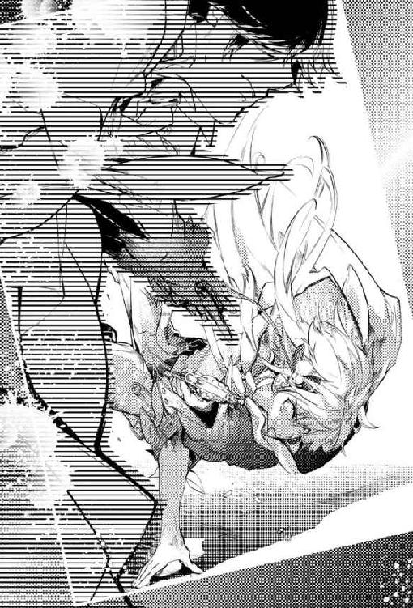
そして──
「......ッ!!」
止むことなく殺到する凶弾の一発が、ついに紋白の左腕を捉えた。衝撃で体勢を大きく崩しながらも辛うじて受け身を取った紋白は、頭部を庇いながら石畳の上をゴロゴロと転がっていく。
被弾した箇所を中心に焼き鏝を押し当てられたかのような灼熱の痛みが走り、上腕部を覆う布が見る間に血で染まっていった。
患部を押さえたまま動きを止めた紋白へと、緋影がゆったりとした歩みで近づいてくる。激痛で集中が途切れたと同時、紋白の銃は霧散してしまっている。
紋白は脂汗の滲んだ顔を上げ、緋影を睨みつけた。この距離では紋白が再度銃を生み出すより、緋影が引き金を引くほうが圧倒的に早い。
「詰みだ、カズヤ」
「......──」
「なに、心配しなくていい。お前の身勝手な行動の結果は丁度いい見せしめになる。......お手本と言ってやったほうが優しいかな？ ともかく、これで残った連中も軽率な真似は控えるだろう」
紋白が死ぬことで紅百合たちが従順になり、緋影の言いなりになると？
そんなことを緋影は本気で思っているのだろうか？
「......ふふ」
紋白は思わず笑ってしまった。緋影が怪訝そうに眉を潜める。
「何がおかしい」
「............知らなかった。ヒカゲって案外、甘いんだ」
もしもここで自分が消されたと知ったら。
紅百合たちは大人しくなるどころか、燃え滾る激情のままにこの場へと押し掛けてくるに違いないのに。
万華鏡を破壊したがっていた節のある鴉翅なんて、本当にそうしてしまいかねない。
苦痛に表情を歪めつつも不敵に笑う紋白を、緋影はどうやら気が触れたものと思ったらしい。真面目に相手にするのも馬鹿馬鹿しいと判断したらしく、呆れ顔で銃口を向けてきた。
「寝言は寝て言え。せめてその寝場所くらいは与えてやる」
緋影が引き金に指を添える。
紋白は諦めるつもりなど全くなく、今この瞬間を如何にして乗り切るかをひたすら考えていた。
撃たれた腕は動かないが、足はまだ使える。一息でどこまで跳躍できるか。初撃はかわしても二撃目は？ どう避ける──？
紋白が現実的な打開策を編み出す前に、緋影の指が動いた。その微かな変化に合わせ、紋白はグッと両足に力を込める。
「!? カズヤっ!!」
その時、この場にいないはずの男の声が室内に響き渡った。紋白は驚きそちらを見遣る。だが声の主を視認するより早く、緋影の得物が火を噴いた。
銃声。
直後、紋白はフワリと身体が宙に浮くのを感じた。
（......しまった、撃たれた）
目を閉じた紋白は、他人事のようにぼんやりと考える。
そういえば『彼』は緋影の味方を選んだんだった。
そんなことも忘れてうっかり隙を作るなんて、自分も緋影のことを「甘い」なんて言えたものじゃないな──
「......ヤ！ カズヤ!!」
聞き慣れた声がする。すぐ近くだ。
「いつまで死んだ気になってるの!? 目を開けて!!」
その声音が焦燥に満ちているのも、鋭く叱咤してくるのも、ひどく珍しい気がする。
とにかく、紋白は急かされるまま閉ざしていた瞼を開けた。
......すると。
「えっ......？」
信じ難い状況に、紋白は我が目を疑った。
「動かないで。邪魔されると走りにくい」
「............」
翠の瞳で前を見据えたまま、鉤翅が言葉少なに指示してくる。鉤翅は紋白を腕に抱えたまま、ひたすら全力疾走を続けていた。紋白が来た道を逆行するように、館の主の間からぐんぐん遠ざかっていく。
その間、紋白はただ呆然と鉤翅の横顔を見つめていた。
動くな、という彼の注文に従ったわけではない。あまりに意外な出来事が、紋白の思考も行動も奪っていた。
ややあって、辛うじて形を成したのはたった一言。
「......どう、して......」
うわごととも質問とも取れぬ紋白の呟きを、鉤翅は聞こえなかったかのように受け流した。
やがて館のエントランスまで引き返したところで、鉤翅はここまで来れば安全だとばかりに紋白から腕を放す。
「どうして？ それはこっちの台詞だよ、カズヤ」
視線は廊下の奥から逸らさずに、鉤翅は冷たく固い声音で告げてくる。
「ひとりで挑むなんて一体どういうつもりだったの。僕なんかと違って、君はまだ生き返れるくせに」
「！ ナツキっ......」
はっとして、紋白は弾かれたように顔を上げる。
「自分から命を捨てに行くような真似、しないでよ」
そこで初めて、少し気まずそうに苦笑した鉤翅と目が合った。
「......危ないところだったね、カズヤ」
それは久しく紋白に向けられたことのなかった、穏やかな優しいナツキの目。
「どうして......なんで、ナツキ......？」
紋白は、ただそれだけを繰り返した。
何故、助けてくれたのか。
何故、今になってそんな懐かしい眼差しを向けてくるのか。
数々の疑問や戸惑いに翻弄され、たどたどしく疑問を声にする紋白に、鉤翅がふっと表情をゆるめた。
「なんでだろうね。君がやられると思ったら、その瞬間、身体が勝手に飛び出してた」
「ナツキ......」
「全く......相変わらず無茶するんだから。腕に一発受けた程度で済んでよかったね」
紋白とは対照的に淀みない口調で言いながら、鉤翅は自らのスカーフを解いて早々と紋白の止血に取り掛かっている。文句ともお説教ともつかぬ台詞を並べつつ、仕方がないなあと苦笑するその様は......甲斐甲斐しく年少者の世話を焼く姿は、紋白の記憶の中の「水谷夏樹」その人だった。
慣れた手つきで作業する鉤翅の顔を、じっと見つめていた紋白だったが──ついに、野暮は承知で意を決して口を開いた。
「俺を助けて、よかったの......？」
「............」
「ヒカゲに逆らったら、『約束』守ってもらえなくなる......」
緋影に付き従っていれば、万華鏡の完成後、現世へと生き返らせてもらえるという『約束』。
紋白はもう信じてなどいないが、鉤翅は頑なにその可能性に賭けていたはず。
「なんで......？ どうしても、生き返りたいんじゃなかったの......？」
紋白の問いに答えが返されるまで、数秒の静寂があった。
「......目的のためなら、何だって犠牲にするって決めて──今までずっと、そうしてきたはずだったんだけどなぁ」
自嘲気味に笑う鉤翅はどこか弱々しく、泣き出しそうに見えた。
「やっぱり見捨てられなかったんだ。......一番付き合いの長い幼馴染である、君のことは。こんな甘さは捨てたと思っていたのにね」
「......でも俺......ナツキに銃を向けたのに」
これ以上ナツキが狂っていくのを見ていられなくて、心のどこかで終わりを望んでいた彼に終焉という安らぎを与えようとした。
「俺、本気だった......本気で、ナツキのこと」
「うん。本気で僕を緋影から引き離そうとして、必死だった。僕が僕でなくなる前に......これ以上、誰も緋影の犠牲にならないように......その輪を、断ち切りたかったんでしょ？」
垂れ目がちの双眸が、心の内までも見透かすように紋白の瞳を見つめてくる。
......ああ、やっぱり敵わないなと紋白は思った。
「ナツキはいつもそうだ。......いつも、全部お見通し」
遠い昔の光景を思い返す。紋白のことも、皆のことも、ナツキはよく理解していた。だから小競り合いの仲裁ができたのだし、いつだって周りをよく見ては年長らしく気を配っていたのだ。
そう、あの日だって。
「『あの日』だって、ナツキは館に行くのを止めた。なのに俺たちが、言うことを聞かずに......」
それで結局、ナツキが危惧したとおりに雨で湖が溢れて。無理に引き返そうとしたアイと紋白が溺れて......
「......ナツキは今まで一度だって、俺のこと責めたりしなかった。......それでも、心の中ではずっと恨んでたんだって、知ってる......」
「......どうしてそう思うの？」
鉤翅が問い返してきたが、その意図が紋白にはよくわからなかった。ただ、自分が恨まれることになった原因を被害者である鉤翅に改めて語ることは、罪の自白を求められているような、過失を責められているような──そんな非常な苦しさがあった。
「だって......本当は、ナツキはこんな所に来るはずじゃなかったから」
紋白が辛うじて絞り出した声を、鉤翅は表情ひとつ変えずにじっと聞いている。
「溺れた俺を助けようとしなければ、ナツキは巻き添えになんかならなかった。生き返りたい、なんて願わなくても......ヒカゲになんか付き従わなくても、あのまま現世で、生き続けられたはずなんだ......！」
声音が次第に震え、潤んでいく。紋白は握り締めた拳を戦慄かせながら俯いた。
弁解は一切しない。
許しが得られるとも思わなかった。
「ナツキの味わってきた苦しみは、本当は全部、俺が背負うべきものだった......なのに俺はこの世界でも、自分の我儘を貫いて......残ったナツキに、何もかも押し付けてたんだ」
「............そうだね」
紋白の告白を聞いた鉤翅は、たっぷり時間をかけた後、そっと唇を開いた。
「あの頃の僕には、あの場所が世界の全てで......他に必要なものなんて何もなかった。彼女と共に生きてゆける世界を僕は何より愛していたし、世界はそこだけで完結してた」
遠い黄金時代を思い出したのか、鉤翅の瞳が柔らかく細められる。その優しくも切なげな眼差しのまま、紋白を見据えて彼は告げた。
「君と僕の状況が逆だったらよかった。僕が生者で君が死者──僕だったら、生き返ってからも『彼女』を巧く支えてあげられる。君よりも......いや、君たちの中の誰よりも」
はっきりと言い切られた鉤翅の言葉が、紋白の胸に鋭く突き立つ。それでも紋白はその痛みを甘受した。 罪人の供述が終わったら、次は裁きの時だ。自分には鉤翅のどんな糾弾でも最後まで受け入れる義務がある。
「できることならその場所を譲ってほしい。お願いだから、僕と立場を入れ替えてほしい。......これが僕の本音だよ」
「......っ」
「でもね」
紋白が返事に窮するより早く、間髪容れずに鉤翅が続けた。
「勘違いしないでほしいんだ、カズヤ。僕たちの立場が逆だったらとか、入れ替われたらとか......そんなのは所詮、無理な話なんだ。現実的には不可能だし......何より、君が気にすることじゃないんだよ」
「......どうして？」
唖然とした紋白が呟くと、鉤翅はやや困り顔をして笑ってみせた。
「自分で言うのも気恥ずかしいんだけど......どうも君は、あの頃の僕のことを買い被りすぎだよ」
そう評価してもらえるのは嬉しいけどね、と、彼は独白めいて言う。
「僕も年相応の子供だったんだよ、カズヤ。つまり、幼い見栄もあったし、意地もあった」
「......どういう......？」
判然としない紋白が尚も問いを重ねれば、今度は鉤翅がとびきり苦々しい表情をする羽目になった。
「だから、ね。最年長者として、君たちを先導しなきゃって意地もあった。溺れた君を助けることで、彼女に格好いい自分を見せられるっていう見栄もあった。......そういうこと」
気まずそうに打ち明けられた気持ちは、紋白の想像だにしない内容だった。
紋白の中では、ナツキはいつも柔和で、利他的で、聡明な......これ以上ない完璧なリーダーだったから。
「わかった？ 僕が君を助けようと動いたのには、そういう幼稚な思惑もあったんだよ。そして当時の僕には何故か、自分ならできるっていう自信があった。君が僕を過信していたように、僕にも自分に対する驕りがあったんだ」
「......全然、知らなかった」
「知られないようにしたかったんだよ。そんなことで命を落としたなんて、あんまりにも情けなさすぎて。君だってそうでしょう？」
「............うん」
決まりが悪そうに微苦笑する鉤翅につられ、紋白も曖昧に微苦笑した。
「あの事故については、単純な悪者探しなんてできないんだよ、カズヤ。それが狭間で長いこと考えてきた、今の僕の答え。誰それが悪いって決めつけられれば楽だったかもしれない。でも結局......他の誰かを責めるには、僕らは互いに幼すぎた」
鉤翅は物静かな口調で、恐らく初めて口にするであろう本心を吐露していく。それは負い目と誤解によって久しく隔てられていた二人の距離を、あるべき姿へと穏やかに戻していった。
「僕たちは皆、弱くて......弱いから、姑息な計算で行動して、失敗して──懲りずに何度も繰り返して、ついにこんな所まで来てしまった」
紋白は頷く。
......こんなに自然体の鉤翅を見たのは、一体どれくらいぶりだろう。
しばし迷った末、紋白は、心にしこりのように残っていた最後の疑問をぶつけることにした。
「ナツキは......俺がまだ死んでないの、知ってたんだよね？ どうして......教えてくれなかったの？」
「............君に、僕みたいになってほしくなかったから」
鉤翅の返答に、紋白は微かに首を横に傾げる。それを受け、鉤翅が「つまりね」と再び口を開いた。
「もし、自分がまだ生きていることを早い段階で知っていたら、カズヤはどうした？ 緋影の行いを見るに堪えず、やっぱり彼のもとを飛び出した？ それとも......」
生への可能性にしがみ付き、鉤翅のように緋影の操り人形と化したか。
「あ......」
思いも寄らぬ可能性を示唆され、紋白は何も言えずに鉤翅を見つめた。
そうだったのか。
黙っていたのは、恨んでいたからなんかじゃなく──
「......僕はね、カズヤ。あの時、君が僕たちと決別したのは正解だったと思ってる。君は、あれでよかった。その先に待つのがどれだけ辛く孤独な道だったとしても......少なくとも僕は、緋影の言いなりになる君なんて見たくはなかったし、そんな君を想像することもできなかったから」
「ナツキ......」
「って、それもまた僕の我儘なんだけどね。君には君のままでいてほしかったっていう我儘」
鉤翅は優しくはにかんで肩を竦めた。ようやく理解した彼の真意に、紋白の目頭が急速に熱くなる。
『ナツキ』は、ここにいた。ずっと、いたのだ。
「......泣いちゃ駄目だよ。カズヤ」
鉤翅はそれだけ言うと、涙ぐむのを必死で堪える紋白に背を向けた。
「......ナツキ？」
「もう行かなくちゃ。......はは、緋影になんて言い訳しよう」
主人の気を取り成すというより、癇癪を起した子供の宥めかたを思案するような口ぶりで、鉤翅は紋白を置いて歩いていく。
「ナツキ、待って！ ナツ──」
咄嗟に制止の言葉を発したものの、その後が続かず、紋白は唇を噛んだ。
「互いの気持ちは通じたとしても、進む道までは交わらない。僕は自分の願いのため、最後まで緋影に手を貸し続ける」
背を向けたまま淡々と告げた鉤翅が、棒立ちの紋白を振り返る。
その片手に銃を握って。
「邪魔するなら、こうするしかない......わかるよね？」
白銀の銃口は、紋白の額を真っ直ぐに捉えて揺るがない。
「ナツキ......」
戦わなければならないのか？ 彼を討たねばならないのか？
紋白は銃を生み出すこともできずに立ち尽くす。
（だって......だって、違うじゃないか）
今、紋白の目の前にいるのは、狂気に蝕まれた友人などではない。
あたかも熱病に冒された人間が、ある瞬間、朦朧とした意識から不意に正気を取り戻すかのように。記憶を失くした人間が、ほんの束の間、奇跡のように全てを取り戻すかのように。
（『これ』は『ナツキ』なんだ......！）
じり、と紋白は後ずさる。
撃てない。
......撃てない！
「どうしたの？ この前は本気だったんでしょ？ 僕を──終わらせてくれるんじゃなかったの？」
紋白が一歩後退すれば、鉤翅はすかさずその空間を詰めてくる。銃口も視線も、片時たりとも紋白から外すことなく。
「......戦意を喪失したっていうなら、それでも構わないよ。君が道を開けてくれるなら、僕の願いはまたひとつ成就に近づく」
鉤翅の足取りが速くなる。銃を持った相手を前に、紋白は丸腰のまま、ただただ無言で両腕を広げて鉤翅の行く手を塞ぐことしかできなかった。
「無駄だよ、カズヤ。僕は必ず生き返る。現世に戻って、彼女と普通に生きていくんだ。朝、待ち合わせて学校行って、一緒にお弁当食べて部活して、並んで喋りながら家に帰って。次の休みには出掛ける約束もして、ガイドブックなんか見ながら二人で楽しみだねって笑うんだ」
両手を広げて立ち尽くす紋白の横を、鉤翅が素通りしていく。
......行ってしまう。
「ナツキ......！」
最後の最後、紋白は身を翻して鉤翅の腕に取り縋った。それは抵抗と呼ぶには余りにささやかな悪足掻き。
「......ありがとう、カズヤ」
必死で見上げる紋白の目を、鉤翅が悲しげに伏せた瞳で見下ろした。
「──......ごめんね」
囁くような懺悔。その直後、鉤翅の撃ち下ろした銃底が紋白のうなじを捉えた。鈍痛と同時に視界が大きくぶれ、紋白の身体が意志に反してガクンとくずおれる。
意識が途切れようとするまさにその直前、差し出された鉤翅の腕が紋白を支え、床に叩きつけられるのを防いだ。
「ナ、ツキ......」
紋白の身体をそっと地面に寝かせると、鉤翅は硬質な靴音を響かせてその場を去っていった。
霞みゆく視界の中、徐々に小さくなるモスグリーンの外套。紋白は薄らいでいく意識を必死で繋ぎ止めながら、冷たく固い石畳に爪を立て、指を這わせる。
やがて目の前が完全に闇に閉ざされ、鉤翅の足音すら聞こえなくなった後も......
紋白はただひたすら、届かぬ手を伸ばし続けた。
第十章 羽化の時
青々と茂る木立と、その下に設けられた木製のベンチ。拓かれた空間の中央には、色鮮やかなペンキで塗られた大きなジャングルジムが建っている。その周囲を囲むようにして、滑り台やシーソー、ブランコといったお馴染みの遊具が並ぶ。
（......ここは──）
気がつくと、紅百合はひどく見慣れた景色の中に立っていた。
夕暮れ色に染まる公園。そこは幼少時、近所の仲間たちと一緒に足繁く通っていた場所だ。
どうしてこんな所にいるのか。わけもわからず、紅百合は当惑しながら辺りを見回す。
（もしかして、帰ってきた......？）
いや、最後の戦いがこれからというところで、それはないはず──
とは思うものの、肌に感じる気温や髪を撫でる風。草木と土埃の匂い。蝉の鳴く声。踏み締めた砂利の擦れる音と、その感触。どれを取っても偽物とは思えない。
紅百合はただただ混乱し、成す術もなく立ち尽くす。
本当に現世に戻って来たのだろうか？ だとしたら皆は？ ......緋影は？
混乱した頭で考えを巡らしているうちに、帰って来られたのかもしれないという喜びよりも、館に戻らねばという気持ちが勝ってくる。
（駄目だ......私、ここにいちゃいけない）
狭間に落ちてからというもの、どんなにか現実世界に焦がれ、奪われた日常を想って涙を流したか知れない。
それでも......
（私──あの館で、まだやり残したことがある）
それを終わらせるまでは帰れない。帰ってはいけないのだと、唇を一文字に引き結ぶ。
意を決した紅百合が、狭間に戻る方法を探して公園の外に出ようとした、まさにその時。
「じゃあ、レディファーストってことで......缶蹴りから、やろうか？」
記憶の奥底に眠っていた懐かしい声が、一瞬にして紅百合の思考の何もかもを奪った。
瞬きも忘れ、限界まで見開いた眼で公園の真ん中を見つめる。
ついさっきまで誰もいなかったはずのその場所に、数人の子供が立っていた。
くたびれた空き缶の周りに集まった彼らは口々に元気な声を上げ、公園を明るく賑わせている。
......誰であるかなど自問するまでもない。
（ナッちゃん......皆──）
それは幼き日の水谷夏樹であり、姫野明であり、神田拓也であり神田和也であり、そして......
「じゃあ、じゃんけんしよっか。いつもどおり負けた人が鬼でいい？」
紅百合は、幼馴染たちの輪に混ざって笑顔を浮かべるひとりの少女を見据えた。
まだ短い髪をふたつ縛りにした、茶色の瞳の女の子。見るからに活発そうなその子は、紛れもなくかつての自分──湊戸アイだ。
（ああ......そうか）
遅まきながら紅百合は理解する。現世に戻って来たのでも何でもない。これは夢や幻の類。
どんなに鮮明でも、リアリティに満ちていても、決して届くことのない遠い世界の出来事なのだ。
観客である自分は、ここで繰り広げられる物語をただスクリーン越しに眺めているに過ぎない。
カラクリが解けてしまえば、翻弄されていた頭も途端に落ち着きを取り戻す。紅百合は子供たちを正視したまま乾燥した砂利の上を歩き、木蔭のベンチに腰を下ろした。
腕捲りをした少年少女が「最初はグー」の掛け声と共に、今まさに拳を突き出そうとしている。
「......あ、ちょっと待って！」
と、ふと何かを思い立ったらしいアイが唐突に皆を制止した。威勢を挫かれた仲間たちは、何事かと怪訝な眼差しをアイに向ける。皆の注視を浴びながら、少女は公園の片隅......砂場のほうを指さした。
「あの子たちも呼んじゃだめかな？」
子供たちに倣い、紅百合もアイが指し示す方向を見遣る。そこには、やはり先程まではなかったはずの小さな人影がふたつ、並んでいた。
（あれは......？）
それは紅百合も見たことのない二人組だった。サマーキャンプの記憶のように「忘れている」のとは違う。それは明らかに「初めて見る」光景なのだと直感で理解した。
砂場では、兄妹と思しき子供が黙々と砂の城を築き上げていた。まるでそれが彼らに課せられた義務だとでもいうかの如く、ふたりは作業の手を休めることなくせっせと築城を進めている。
「はじめて見る子だね......」
アキが不安げに小声で囁く。ナツキも頷き「引っ越してきたばかりなのかな」と首を傾げる。
「俺はイヤだな。どこの誰かもわかんねーやつなんて」
タクヤがプイと顔を背ければ、弟のカズヤがそれを窘める。
「誰だって、最初はしらない者どうしでしょ。俺たちだってそうだった」
カズヤの台詞にタクヤは決まりが悪そうに小石を蹴飛ばし、ナツキはその発言を歓迎するかのように柔和な笑みで「そうだね」と頷いた。
「アイちゃん、誘ってこられる？」
「うん！」
ナツキの問いに溌剌とした声で答え、アイが小走りに砂場へと駆けていく。あどけない幼少時の自分を目で追いながら、紅百合は無言で瞳を細めた。
砂場では、兄妹が相変わらず淡々と城を築いている。彼らの纏う空気は陰鬱としていて、年齢相応の無邪気さはおろか楽しさや喜びさえ、微塵も感じられなかった。
「ねえ。......よかったら、私たちといっしょに遊ばない？」
アイが呼びかけると、兄妹は同時に反応し、顔を上げる。俯いて影が差していたふたりの顔が、目映い夕焼けに照らし出される。
妹のほうは、アイよりもさらに三つ四つ年下に見えた。ウエーブがかった色素の薄い髪やドレスのような純白の衣装が、まるで異国のお人形を思わせる。色の白い肌は綺麗ではあるが、少し病気がちな印象も受けた。
いかにも深窓の令嬢といったふうで、快活なハルカとはまた違った可愛らしさを持った少女だが、その端正な顔はうっすらと憂いを帯びていた。
「お兄様──」
少女がやや畏まった声音で、兄に向って伺いを立てる。砂の城を挟んで彼女の向かい側にしゃがんでいた少年は......
（あれ......？ どうして？）
紅百合は思わずベンチから身を乗り出し、少年の顔に目を凝らした。正面から夕陽を浴びているというのに、彼の顔は何故か逆光に遮られたかの如く目視することができないのだ。
艶やかな黒髪と、左目の下にある二連黒子。それ以外は輪郭さえぼやけてしまっている。
「......君は、どう？ 彼女たちと一緒に遊んでみたい？」
恐らく、心なしかそわそわし始めた妹に気遣ったのだろう。兄の問いに、妹の表情に明るい笑顔が花開いた。それを見た少年の口元が、優しげな弧を描いた。
彼はアイを見上げ、唇を開く。
「ありがとう。それじゃあお言葉に甘えて、僕らも混ぜてもらおうかな」
「うん！ よかった。本当はね、迷惑だったらどうしようってドキドキしてたの」
そう言って屈託なく笑うアイに、少年はいかにも不思議そうに尋ねる。
「迷惑かもしれないって思っても......それでも、僕らに声をかけたの？」
「うん。だって......なんだか、さびしそうだったから」
「余計なお世話だ、って言われたらどうしたの？ ......拒絶されることが怖くはないの？」
ただ遊びに誘っただけでこんなにも質問責めに合うなんて思いも寄らずにいたアイは、少年を見つめて目を白黒させた。
「ええと......断られたらってことだよね？ うん......残念だな、とは思うけど、怖くはないよ」
「どうして？」
さらに追及され、アイは「うーん」と首を捻る。
「だって、これは私のわがままだもの。貴方たちは、このまま二人で砂場遊びをしてたかったかもしれないのに、私が声をかけて邪魔しちゃったのなら断られても当然というか......
思いのままに喋っているうちに自分でもこんがらがってしまったのか、きつく目を閉じたアイはこめかみに指を当てて「んー」と呻いた。
「次は一緒に遊べたらいいなって、思うだけかな......」
アイの様子を見た少年は、何か思うところでもあったのだろうか。ふっと雰囲気を和らげた。
「そうか......君は強いんだね」
「？ ......？」
「なんでもない。でも、褒めたんだよ」
頭上に疑問符を浮かべるアイに、少年は柔らかな声音で告げた。
「おーい、アイ！ さっさと来ねーとゲーム始めっぞ！」
アイたちを急かすタクヤの声が響いてきて、アイは慌てて「いま行くー！」と叫んで踵を返した。
「おいで！」
アイが差し延べた手を、少女が躊躇いながら握り返す。アイはにっこりと微笑むと、彼女の腕を引いて仲間たちの元へと戻っていった。
少し遅れて、少女の兄である少年が、妹を見守るようにゆっくりと後をついてくる。
そうしてようやく鬼を決める段になったところで、二連黒子の少年がおもむろに挙手をした。
「混ぜてもらったお礼に、最初は僕が鬼になるよ。いいかな」
アイたちは互いに顔を見合わせる。特に反対する理由もなく、皆は少年の申し出を受けることにした。
「お、お兄様......」
「大丈夫。すぐに皆を捕まえてみせるよ」
不安げに腕へと縋る妹の頭を撫でながら、少年は優しく語りかける。
「いい？ 君はあのお姉さんと一緒に逃げるんだよ？」
「......はい」
少女とアイがしっかりと手を繋ぐのを待ってから、タクヤが空き缶を天高く蹴り上げた。
小気味良い音を立てて、ひしゃげたアルミ缶がクルクルと宙を舞っていく。楽しげなはしゃぎ声と共に、子供たちが一斉に公園の中央から遠ざかっていった。
「わわっ、ど、どこに隠れよう？」
自分よりひと回り小さな少女の手を握ったまま、アイはキョロキョロと敷地内に視線を巡らせる。その姿を心配そうに見上げる少女。
「アイちゃん、こっちだよ！」
立ち往生するふたりの元に駆け寄ったのは、ナツキだった。彼は空いているほうのアイの手をぐっと引くと、そのまま力強く先導していく。
「ナッちゃん......！」
アイの表情に喜色が広がる。彼に任せておけば万事安心だと信じて疑わない顔だ。
（ああ......私、いつもあんなふうにナッちゃんを見てたんだ......）
紅百合が見守る前で、ナツキに手を引かれたアイが走り始める。大きな瞳を輝かせ、微かに頬を紅潮させた幼い自分。
......ひと目でわかる。
恋をしているんだ、と。
やがて三人は、奇しくも紅百合のすぐ脇の木蔭に身を潜めた。薄々わかってはいたが、彼らには紅百合の存在が認識できないらしい。紅百合などまるで眼中にない様子で、彼らはヒソヒソと鬼を倒すための作戦を練っている。
「さて、どこに行ったのかな」
唇を強気に吊り上げた少年が、空き缶から離れて最初の獲物を探し始める。しばらく公園内を徘徊していた彼は、ややあって何かを察したかのようにアイたちがいる木蔭へと向かってきた。
「ナッちゃん、どうしよう......こっちに来るよ！」
「大丈夫だよ、アイちゃん。いい？ 落ち着いて」
闇雲に宥めているのとは違う。大丈夫だと告げるナツキの声は、不思議とどこか確信めいていた。
そしてその予感を裏付けるかの如く──
「......？ そっちか」
アイたちのすぐ目前まで迫っていた少年が、唐突に方向転換する。丁度アイたちのいる場所とは反対側に位置する植え込みから、茂みを掻き分ける大きな音が聞こえたためだ。
やがて少年はニッと口元の笑みを深くすると、広場の真ん中に引き返す。「見つけた。ええと君は......カズヤくん、だっけ」
植え込みに向かって名を呼びながら、少年が缶を踏みつけた。
「うん。......見つかっちゃった」
植え込みからのろのろと姿を現したカズヤが、少しとぼけたような困り顔をして頭を掻いた。対する少年は腰に手を当て、呆れた様子で嘆息する。
「そりゃあね。あれだけ大きな音がすれば、誰だって見つけられる」
「そうだよね。俺......ぼけっとしてて」
遊びとはいえ勝負の最中にぼうっとしたというカズヤの弁に、少年は更に信じられないとばかりに肩を竦めた。
鬼に捕まったカズヤが無言で少年のいる円の方へと向かって行く。その時、カズヤがほんの一瞬だけアイたちに向かって目配せした。その目線に気づいたアイが、はっとナツキを振り返る。
「ねえナッちゃん、もしかしてカズヤくん......私たちのために、わざと──？」
「かもしれないね」
明らかに訳知り顔をしているにもかかわらず、ナツキは曖昧に答えて言った。
「だとしたら、カズヤのくれたチャンスを無駄にしちゃいけない。さあ、次の場所へ移動しよう」
ナツキに手を引かれ、アイたちはそれまで身を隠していた木蔭から、空き缶の近く──滑り台の後ろへと忍び足で進んでいく。
途中、最後尾を歩いていた少女が足をつっかけ、あわや転倒か......と思われた瞬間、第二の助け船が出された。
「おーい！ こっちだよ、こーっち！」
今まで巧みに身を隠していたアキが、何を思ったか突然木の陰から半身を覗かせ、鬼に向かって大きく片手を振ってみせた。
単に鬼をからかっただけなのか、すぐに身体を引っ込めたが──無論、間に合うはずもなく。
「......アキラくん、見つけた」
未だ缶の傍を離れてすらいない少年に怪訝な口調で名を呼ばれ、アキがあっさりと木陰から躍り出た。
「あーあ。捕まっちゃった」
と口では言っているものの、実際はさして残念でもなさそうだ。唇には薄く笑みさえ浮かんでいる。
「まったく......君といいカズヤくんといい、手応えがなさすぎる。缶蹴り、つまらないのか？」
「ううん。楽しいよ。ただちょっと調子に乗っちゃっただけ」
へへへ、と情けなく笑ったアキが、正面に据えた目線はそのまま、アイたちに向けてこっそりと手を振ってくる。
心得た、とばかりにナツキが頷いた。
「よし、アイちゃん。ここから先は別行動だ」
「えっ......？」
最後まで傍で導いてもらえると思い込んでいたのだろう。アイが当惑の表情を見せる。が、ナツキは構わず言葉を続けた。
「僕が彼を引き付けるから。その隙に、君が缶を蹴るんだ」
「そっ......！」
今度こそ絶句したアイが、ナツキの腕をぎゅっと握る。
「そんなことしたら、ナッちゃんも捕まっちゃうよ......!?」
それは嫌だとアイが首を振る。しかしナツキは穏やかな顔つきのまま、アイの手に自らの掌を重ねて、言った。
「いいんだよ。......最後に君が缶を蹴って、僕たちを助け出してくれたらいいんだ」
アイを見つめるナツキの瞳は、どこまでも美しく澄んでいた。
こうすることを最初から決めていたのだろう。
「残りは......四人か。この辺りはまだ探してなかったな」
鬼役の少年の声が聞こえ、足音が少しずつ近づいてきた。アイの決意はまだ固まらない。
そして──ここでもまた、仲間の窮地に一人の男の子が立ち上がった。
「チャーンス！ 缶から離れすぎだぜ、新入り！」
ベンチの裏から勢いよく飛び出したタクヤが、空き缶目指して脇目もふらずに全力で駆けていく。
「──っ、タクヤくん見つけた！」
ほぼ同時に地を蹴った少年が、間一髪、缶を奪われる寸前でタクヤの名を呼び上げた。アルミ缶に向かって得意のスライディングで突っ込んでいったタクヤと、舞い上がった砂埃の中、自分の身体を盾にして缶を守り切った少年の視線が一瞬、交錯する。これまで余裕綽々だった少年の声が初めて焦りの色を帯び、タクヤはそれだけで満足したのか「してやったり」とニヤリと笑った。
「おーいナツキー！ アイー！ 後は任せたかんなー！」
口元に手を当てたタクヤが、公園のあちこちに向けてわざとらしいほどの大声で叫んだ。ナツキはおかしそうに破顔したが、アイにそんなゆとりはない。
タクヤまで捕まってしまった。残るは自分たちだけだ。
握り締めた自らの拳を、アイはじっと凝視した。
「私が、缶を──で、できるかな......」
「うん。できるよ、絶対に」
ここでもやはり、ナツキは強い確信を秘めた物言いをする。
その迷いのない声が、眼差しが、アイに自信を与え、勇気を喚起し、肉体を鼓舞していく。
「僕が合図したら、その瞬間に走って」
「ナッちゃん......」
「大丈夫。この距離なら、彼もすぐには君を捕まえられないはずだから」
頼んだよ。と、ナツキがアイの手をきゅっと握った。
......あれは、魔法だ。
紅百合は知っている。ナツキにああして微笑まれると、どんな状況でも本当に「大丈夫」だと思えてしまうことを。
「よし。それじゃあ......行くよ！」
スタートを切ったナツキが、大きく迂回しながら空き缶を目指して駆けていく。すぐさまそれに気づいた鬼の少年がナツキの進路を阻む形で回り込み、行く手を塞ぐ。
「ナツキくん、見つけた。残念だったね」
勝ち誇った口調の少年には構わず、ナツキは叫んだ。
「アイちゃん、今だっ！」
「う、うんっ！」
連れの少女はその場で待機させ、アイは缶に向かって必死に走った。鬼役の少年が大急ぎで引き返してくるが、ナツキが距離を稼いでくれたお陰で缶からはかなり引き離されている。
......目的地まではたった数メートル。その距離が、やけに長く感じられた。
「えーーーーいっ！」
思いきり足を振り上げて、あとは目の前の缶を蹴り上げるだけ。勝利を確信したアイが笑顔を浮かべる。
が、どんでん返しというのはいつでも最後に待ち受けているもの。
「まってぇ、蹴っちゃだめぇ！」
後ろから突進してきた何かが、勢いよくアイの腰にぶつかってきた。片足を上げた姿勢のアイは簡単にバランスを崩し、伸ばした足は缶に当たることなく見事なまでに空振りする。
「わ、わわわ」
アイは両手をばたつかせて体勢を立て直そうとするが、腰にしがみついた『誰か』のせいで上手くいかず、地面に強かに尻もちをついた。
「っ、たたた......」
「アイちゃん、大丈夫!?」
ナツキを筆頭にして、一連の騒動を目の当たりにした友人たちがわらわらと集まってくる。その中には少女の兄もいた。
「君、どこか怪我は？」
少年はアイの前に膝を折るなり、気遣わしげに尋ねてくる。アイが「平気」と答えると、彼の視線はアイの腰にしがみついている実の妹へと向けられた。
「だめじゃないか、こんなことをしたら。危ないだろう？ 一体どうして──」
「だって、お兄様を」
アイが蹴り損ねた空き缶を庇うように胸元に抱え、少女は瞳を潤ませる。
「お兄様を、助けなきゃって......」
「僕を？ ......僕が負けそうだったから、加勢したのか？」
兄の問いに、少女は唇を噛んでコクリと頷いた。ナツキたちは互いに顔を見合わせて、事情を理解したアイはそっと少女の頭を撫でる。
すっかり俯いてしまった妹の横に、兄である少年が静かに寄り添い、言った。
「そうか......その気持ちは嬉しいけど、僕を助けたいからといって他の誰かを傷つけてはいけないよ」
少年は妹の頬に手を当てて、視線を合わせるように促す。
「いいかい？ もし僕が負けたとしても、それは僕の力不足だ。誰のせいでもない、僕が至らなかっただけのこと。君が気にすることはないんだよ」
「でも......でも私は、お兄様が悲しかったり、悔しかったりするのは、嫌......」
「大丈夫だよ」
慣れた動作で、少年が軽々と妹を立ち上がらせる。砂で汚れてしまったスカートを丁寧に払いながら、彼は続けた。
「真剣に挑んだ勝負に負けたのが自分のせいなら、僕は悲しむことも悔しがることもない。僕はできる限り人を恨んだり妬んだりせず、あの館で心穏やかに生きていきたいんだ。......わかるかい？」
「......はい、お兄様」
兄の説得に応じ、少女が納得した様子で控え目な微笑を見せる。妹の手を繋ぎ、少年は改めてアイたち全員を見渡した。
「せっかく誘ってもらったのに、騒ぎを起こしてしまってすまない。僕らはこれで失礼するよ」
折り目正しく一礼する兄に倣い、少女もペコリと頭を下げた。
「あ、あの......ご迷惑をおかけしてすみませんでした。アイさん、ごめなさい」
「ううん、全然！ いいんだよ。ふたりとも、とっても仲の良い兄妹で羨ましいや」
アイは清々しい笑顔で応える。「羨ましい」と言ったのは世辞でもなんでもない、本音だ。
紅百合にはわかる。この頃のアイは、妹のハルカと衝突してばかりいたはずだから。
物心つき始めたハルカは、記憶のどこにもいない亡き母への想いを募らせ、その悲しみの矛先を姉であるアイに向けていた。
アイは生前の母を覚えている。一身に愛情を受けていた優しい時間も、心地いい穏やかな声音も、安心するいい匂いも。
けれどハルカにはひとつもない。ハルカと母親を繋ぐのは、アイが持っているような感傷を伴う思い出ではない。戸籍に記された無機質な文字列だけなのだ。
ハルカが焦がれ、けれどどうしても手に入らない母の温もり。それを姉であるアイは、心の宝箱に大事に大事にしまっている。時折鍵を開いては、キラキラと輝く在りし日の記憶をうっとりと眺めることもできるのだ。
......お姉ちゃんはズルい、というハルカの言い分は、正しい。どうしようもなく正当な主張だ。
だからといって、アイにしてやれることはほとんどない。
何故ならハルカが求めているのは母親の愛情であり抱擁であり、それはどうしたってアイでは代わり得ないものなのだから。
「......湊戸アイさん、だったかな」
「ん？ う、うん！」
少年の妙に大人びた声にビクリと肩を跳ねさせたアイが、反射的に直立不動の姿勢を取る。どうやら物思いに耽っていたところに不意打ちを受けたらしい。
「もし......いつかまた、君と会うことがあったら。その時は、これに懲りずにまた妹の相手をしてやってほしい」
言いながら、少年が妹の背を押して紅百合の前に歩み出させる。
「この子は生まれつき病気がちで、同じ年頃の友人も少ない。君が迷惑でなかったら、話し相手になってやってもらいたいんだ」
「そうだったんだ......うん、いいよ！ 私でよければいつだって！ あ、妹のハルカが一緒でもいいかな？ ちょっとうるさいかもしれないけど、とっても元気で楽しい子なの」
紅百合が口早に告げると、少年は口元に手を当ててクスッと笑ってみせた。
「うん、もちろん。......それじゃ、またいつか」
背中を向けた少年が、妹の手を引いて公園の出口へと歩き始める。
「あ、ねえ、待って！ 今度はいつ会えるの!?」
いつかって、いつ？ と、アイは去りゆく背中に向かって問い掛けた。が、兄妹はあたかもアイの声そのものが聞こえていないかの如く、金色がかった夕日に向かって真っ直ぐに歩いていく。
大きく張り上げたアイの声は、距離的には充分、彼らの耳に届いていたはず──
（......何か、違和感が......）
傍観者である紅百合は、夢の世界特有の形容し難い感覚に眉を顰めた。
まるで公園の出入り口が何かの『門』になっていて、一歩でも外に踏み出してしまえば、そこから先は全くの別世界になってしまうといった感じの......そんな漠然とした、捉えどころのない感覚。
結局、彼ら兄妹はアイの呼び掛けに応じることなく、夕陽の中へと溶けるように消えていった。
「......さあ。それじゃ僕たちも帰ろうか」
兄妹を見送ったところで、ナツキがニコリと微笑みかけてくる。
気がつけば辺りにタクヤたちの姿はなく、公園にいるのはアイとナツキのふたりだけになっていた。
「あれ......？ アキちゃんは？ カズヤくんと、タクヤくんは......？」
唐突に消えてしまった仲間たちを探して、敷地内を見回すアイ。その肩に、ナツキの手が優しく添えられた。
「皆、帰るべき場所に帰ったよ。......アイちゃんも、あまり遅くなったら家族が心配する」
「う、うん......そうだけど、皆いつの間に」
別れの挨拶もなかったことを訝しがるアイと、その横顔を眩しそうに見つめるナツキ。
やがて彼は意を決したようにアイの肩から手を離すと、そのまま数歩後ずさった。
「......ナッちゃん？」
「僕も、あちらに帰らなきゃ」
ナツキは小さく顎をしゃくって公園の入り口を示す。それはつい今しがた、名も知らぬ兄妹が幻のように消え去っていった方向だ。
「あっちって、どうして？ ナッちゃんのおうちは向こうだよ？」
言いながら、アイはナツキが示したのとは反対側の出入り口を指さした。途中まで帰路が一緒のふたりは、いつもそこから公園を出て、分かれ道までの十数分を並んで歩いて帰るのだ。
ナツキはアイの問い掛けには答えず、ただ寂しげに微笑みながらゆっくりと後退していく。
「......ナッちゃん？」
彼の様子に何かただならぬものを察したのか、アイの表情に不安の影が差す。それでもナツキが足を止めることはない。
「ごめんね、アイちゃん。僕はもう、そっちへは帰れないんだ」
「え......？ なんで？ それってどういう──」
「......ごめん」
俯きがちに呟くと、ナツキはアイの視線を振り切るように駆け出した。
アイが叫ぶ。ナッちゃん。一向に立ち止まることも振り向くこともしない幼馴染の名を、少女は何度も繰り返し呼び続ける。
けれどそれだけだ。ナツキを追いかけるどころか、走り出す素振りすら見せない。
動かないのか、あるいは動けないのだろうか......少女の腕に丁寧に結わい付けられたリボンだけが、風に乗ってひらひらと、菫色の蝶の如く舞っていた。
（あのリボン......本当に私の持ち物だったんだ）
遅まきながらそんなことを思う。紋白から聞いてはいたが、幼少期の自分が身につけているのを目にしたことで、やっと実感が湧いてきた。
夢の中だからか、思考がふわふわと浮遊してまとまらない。このまま走り去るナツキを見送ったところで目が覚めるのだろうか......と、ストーリーの結末をぼんやり思い描きつつ、紅百合は眼前の光景を漠然と眺めていた。
──その時だ。公園の外に向かってひた走っていたナツキが、今まさに敷地から飛び出そうというその寸前。翡翠の瞳が一瞬......しかし確かに『紅百合』のことを見遣ったのだ。
全く予期していなかった少年の行動に、紅百合の呼吸が止まる。ただの偶然かとも思ったが、ナツキの目に宿った物言わぬ意志がその可能性を否定した。
（ナッちゃん......？）
これまで一貫して舞台の観客として存在していたはずの自分が、その瞬間、あたかも吸い込まれるようにして一気に壇上へと引き上げられる。
名もなき傍観者から物語の登場人物へ。その変化はあまりに唐突だったが、紅百合は戸惑いながらも慌ててベンチから立ち上がった。そのまま迷うことなくナツキを追いかけ、公園を後にする。
ナツキを呼ぶアイの声が背後から聞こえた。ナッちゃん。ナッちゃん。その声は紅百合がひとつ地面を蹴るたびに、遠く、小さくなっていく。
（......あれは、今までの私だ）
紅百合は思った。あの小さな『湊戸アイ』は、ただ幼少期の自分を模っただけのものではない。
（きっとあの子は、あの場所から動かない）
去りゆく仲間を追って安全地帯を飛び出す勇気もなく、闇雲に相手の名を呼び続けることで向こうから引き返してくれることを期待している、浅はかな少女。なぜ、どうしてと疑問や戸惑いを口にしながら、自らそれを解決すべく何かを為そうとはしない。
そんなふうに途方に暮れたまま、永遠にあの場所に取り残されるのだ。
（私は......そんなのは嫌）
ナツキを追い、紅百合は緩やかな上り坂を駆けていく。そうやって走り続けているうちに、小さかったナツキの後ろ姿が次第に大きくなり始めた。
距離が縮まってきたという意味ではない。成長しているのだ。
紅百合の視線の先で、ナツキの背中が広く大きくなっていく。小学生だったナツキがいつの間にか中学の制服を身に纏い、更に背が伸びたかと思うと、次の瞬間には紅百合が通う高校のブレザー姿へと変化する。
それは紅百合が何度も夢に思い描いた、現世で決して見ることの叶わぬ彼の姿。
......ナツキが辿ることのできなかった十年だった。
（ああ──そうか。そうだったんだね、ナッちゃん）
紅百合は心の中で呟く。今やナツキは少年から青年へと変身を遂げ、紅百合の眼前には館で見慣れたあの後ろ姿があった。
「ナッちゃ......鉤翅さん！」
名を叫びざま、紅百合はついに彼の手を掴んでその歩みを制止した。
鉤翅が振り返る。観念したように。あるいは安堵するように。
「......アイちゃん」
鬼ごっこでようやく見つけてもらえた子供にも似た表情で、彼は紅百合を見つめてきた。
「......掴まえたよ、鉤翅さん。やっと掴まえた」
微笑む紅百合に、鉤翅は儚げな微苦笑で応える。少し困った様子の、それでいてどこかむず痒そうな顔。これは彼の照れ隠しなのだと、紅百合は知っている。
「遅くなってごめんね。......待っててくれて、ありがとう」
多くの言葉は出てこなくて、紅百合はたったそれだけを鉤翅に伝えた。大事に大事に渡した想いは、真っ直ぐに届いてくれただろうか。鉤翅が無言のまま、握った手にきゅっと力を込めてくる。昔と変わらぬ懐かしい所作に胸が熱くなった。
「鉤翅さん。私──」
再び口を開きかけた紅百合は、ふと頬に冷たい何かが落ちてきたのを感じて顔を上げた。
見渡す限りの夕焼け空から、ポツポツと雨が降り始めている。天気雨だろうか？ 夢の中とはいえ不思議な情景だった。
「アイちゃん」
上空に気を取られていると、鉤翅の物静かな声に名を呼ばれた。彼を背後から照らし出す夕陽はますます鮮烈になり、正面から浴びている紅百合は目を開けるのも難しいほどだ。
金色の光は全てを覆い尽くさんばかりに広がっていく。家屋も、木々も、道路も、たったふたつの人影も。
視界の自由を奪われ、紅百合は成す術もなく光に呑み込まれていく。自分の存在を根こそぎ消し去られてしまうかのような錯覚に陥るが、何故か恐怖は感じなかった。それどころか、まるで亡き母の腕にゆったりと抱かれているかのような無条件の安心感がある。
「──さあ、戻ろう。君にはまだ、やるべきことがあるはずだ」
もはや鉤翅の姿は光に呑まれ、心地よい声だけが紅百合の耳へと届いてくる。
紅百合はしっかりと頷いた。
「うん。ありがとう鉤翅さん......ううん、ナッちゃん」
私はもう大丈夫。
あの世界で貴方に出会った意味も、自分が果たすべきことも。
何もかも全部、わかったから──
そう告げると、鉤翅が微かに笑う気配がした。
温かな光と雨のシャワーを全身に浴びて、紅百合の意識がゆっくりと、無邪気で幸福な夢の世界から剥離していく。
「............」
紅百合が目を開けると、そこは仄暗い温室の一角だった。
部屋全体が眠りに就いているかの如く、室内はひっそりとしている。
......まるで時が止まっているかのようだ。
唯一、途切れることなく流れ続ける水音だけが、この空間にも確かな時間の経過が存在することを証明していた。
紅百合は半ば夢見心地のまま、片手だけを使ってそっと自らの頬に触れた。
指先に、冷たい水の感触。真新しい涙の痕跡だ。
（そっか......これが）
夢の中で紅百合を濡らした雨の正体だろう。
天気雨でも夕立でもない。あれは涙雨だったのだ。
そう気づいた途端、紅百合の瞳から新たな雨粒がとめどなく溢れ出した。
「......ナッちゃん」
零れる涙を拭うことも忘れて、紅百合は夢の世界の出来事に想いを馳せる。意識が明瞭になっていくにつれ、夢の内容は加速度的に霧散し、たちまち曖昧になってしまう。
それでもようやく手にした真実だけは、紅百合の深層にまでしっかりと残されていた。
「やっと、思い出したよ......。何もかも、全部」
この館で過ごす鉤翅との日々は、懐かしくも妙に名残惜しかった。その理由ももうハッキリした。
そして、鉤翅の言動の端々に抱いた違和感の理由も......
随分と回り道をしてしまったが、紅百合は今やっと、自分がこの館に導かれたわけを知った。
万華鏡の欠片を探し求める緋影と同じく、紅百合もまた、欠けたピースを取り戻しに来たのだ。
十年前に落としたきり、そのままだった忘れ物を。
「......あれ？ 紅百合ちゃん、もしかして起きてる？」
カサリと木の葉が擦れる音がして、近くの茂みから鴉翅がひょっこりと顔を覗かせた。
紅百合は咄嗟に手の甲で目元を拭い、身を起こす。この暗さでは涙の痕に気づかれることはないだろう。いかに鋭い鴉翅といえど、きっと寝ぼけ眼を擦ったのだと思ってくれたに違いない。
「鴉翅くんこそ......眠ってたんじゃなかったの？」
室内があまりに静かだったもので、てっきり皆寝静まっているものとばかり──そう呟く紅百合に、鴉翅は倦怠感を吐き出すように溜め息をついた。
「寝てたよ、さっきまで。でもなんかおかしな夢を見て......で、なんとなく胸騒ぎがして起きてみたら、案の定これだ」
「？ これって、どれ？」
というか、一体どんな夢を見たのだろう？ 気になった紅百合が尋ねるより早く、鴉翅が二度目の吐息を漏らした。
「いないんだよ、紋白ちゃんが。この部屋のどこにも」
「えっ......？」
「まさかここから連れ去られたなんてことはないだろうから、十中八九、自分の意志で出て行ったんだろうけど──」
冷静に推論を展開しつつ、鴉翅が苛立たしげに後頭部を掻く。
「まったく、なんでこう次々と問題が起きるんだろーね」
「............」
誰に問い掛けるわけでもない独白めいた鴉翅の台詞に、紅百合は微かに俯いた。押し黙ったまま、ふっと温室の入口に視線を向ける。
最終決戦を目前にしたこのタイミングで、どうして誰にも告げずにひとりきりで出て行ったのか。一見不可解に思える紋白の行動だが、紅百合にはなんとなく、彼の真意が理解できる気がした。
「......たぶん、今だからだと思う」
「え？」
紅百合がぽつりと漏らすと、鴉翅が意図を図りかねた様子で見つめてきた。温室のドアを正視したまま、紅百合は言葉を続ける。
「最後が近い今だからこそ......行かなきゃいけなかったんじゃないかな。やり残したことを片付けたり......悔いが残らないようにするために」
「......なるほどね。ケジメってヤツか」
「うん」
紋白は、自分たちよりもずっと長い時をこの館で過ごしてきた。それだけに、この地を去るにあたって思うところも多々あるはず。
引っ越しと似たようなものだ。短期間しかこの場所に住んでいない紅百合たちと紋白では、新天地に向けて運び出したり、捨てたりしなくてはならない荷物の量が違うのだろう。
「かといって、放っておいていいって話にはならないよね」
紅百合の推論を聞いた鴉翅は、より深刻そうな様子で眉根を寄せた。
「紋白ちゃんのやり残したことってゆーと、ぶっちゃけ緋影か鉤翅くん絡みしか思いつかない。それをひとりでどうこうしようとしてるなら、やっぱりちょっとマズいでしょ」
「うん......そうだね」
「おい」
紅百合たちの会話を、ぶっきらぼうな声が遮った。見ると温室のドアが開いており、半身を覗かせた山都がこちらに向かって手招きしている。
「ウサギの言ってた道標とやらがあったぞ。ちょっと来てみろ」
彼に促されるまま、紅百合と鴉翅は並んで駆け出した。山都を先頭にして狭い階段を下りていく。そうして下りきったところで、館の廊下へと繋がる隠し扉を開けた。
紅百合たちは周囲を窺いながら、それぞれ慎重に足を踏み出す。
「なるほど......道標って、コイツらね」
目の前を浮遊する黒蝶を、鴉翅が指先で軽く弾いてみせた。黒い蝶はその一匹だけではない。隠し扉の前から、果てすら見えぬ長廊下の闇の中まで......彼らは街路灯の如く整然と列を成している。
「この蝶を辿っていけば、緋影くんのところへ......」
紅百合が呟く。鴉翅と山都は口を噤んだまま、蝶の導く廊下の奥を見据えていた。
すぐに行こう、と口走る者は誰もいない。紋白を探し出すのが先決だし、彼がこの道標を辿って緋影のもとに向かったのかどうかも定かではないのだ。
「......なんか、いつもと雰囲気違くない？」
鴉翅が気味悪げに辺りを見回す。
「確かに。静かすぎるっていうか......」
まるで館全体が息を潜めているかのようだ。いつもどこかから木霊してくる化け物の雄叫びも、どういうわけかピタリと止んでいる。
見境なく襲い掛かってくる彼らでさえ、この時ばかりは巣の中でじっと身を潜め、嵐が過ぎるのを待っているとでも言わんばかりに──館内はすっかり静まり返り、自分の鼓動や呼気すら聞こえてきそうなほどだった。
「......ここで時間食ってる余裕はねえ。今日は化け物も遠慮してるみてぇだし、とっととアイツを見つけて来よう」
山都にとっては実の弟の危急である。仲間の前では押し隠そうとしているようだが、彼の言動の所々に焦燥感が滲んでいた。
「だったら、三人で固まって行動するより手分けして探したほうがいいかも」
紅百合は鴉翅を捜索した時のことを思い出す。あの時は黒い蝶や化け物も活動中だったため、単独行動は大いに危険を伴ったが......今は少し状況が違う。
「何故だか化け物は静かにしてるみたいだし。緋影くんも、待つって言った以上は手出ししてこないだろうし......バラバラに捜索しても、今ならそんなに危なくはないんじゃないかな」
紅百合の提案に、鴉翅と山都が顔を見合わせる。答えはすぐに出たらしく、彼らは同時に紅百合のほうを振り返って頷いた。
「すまねぇ。ふたりとも、頼む」
「別にオマエに頼まれる筋合いないしー？」
頭の後ろで手を組んだ鴉翅が、わざとらしい調子でニヤリと口の端を吊り上げる。
「オレはオマエのためじゃなくて、紋白ちゃんが心配だから探しに行くの。そんだけ！」
言うが早いか、鴉翅は大きく手を振りながら走り去っていく。悪態めいた彼の態度に、「なんだありゃ」とボヤいた山都だが、しばらくすると気を取り直したように紅百合を見下ろしてきた。
「サンキュ、紅百合。......騒がせて悪いな」
「そんなこと言わなくていいんだよ。私たちにとって、紋白さんは大事な仲間。仲間のためにできる限りのことをしたいと思うのは当たり前でしょ？」
「......そうか。そうだな──」
山都は柔らかく瞳を細めると、節ばった大きな手を紅百合の頭に乗せてきた。
「それじゃあ、俺は念のため隠れ家のほうを見に行ってみる。お前にはエントランス付近を頼めるか？」
「うん、いいよ。任せて」
力強く答えると、山都も全幅の信頼を窺わせる笑みで応じてくる。それを合図に、紅百合は彼に背を向けて絨毯の上を駆け出した。
（......紋白さんがやろうとしていることが何なのか、私にはわからない。......でも）
一緒に館から出る。必ず生きて現実世界に戻る。その気持ちは同じはずだ。
紋白は死に急いでいるわけでも、消えたがっているわけでもない。大丈夫。
エントランスへと向かう道中、幾匹もの黒蝶が紅百合に寄ってきた。緋影のもとへと誘うべく近づいてきたのだろう。それを払い除けながら、紅百合は薄暗い廊下を突き進む。
そうして休むことなく走り続けていた紅百合だったが、エントランスの手前で微かな異変を察しふと足を止めた。少し先にある曲がり角。その奥のほうから、白い光がぼうっと浮かび上がっている。
（なんだろう......？）
あの淡い明かりそのものには見覚えがある。あれは白い蝶が発する光だ。
けれど黒蝶のテリトリーであるこの場所に、どうして白い蝶が......
（......もしかして紋白さん？）
白い蝶たちをすっかり手懐け、戯れていた彼の姿を思い出す。
「紋白さん！」
止まっていた足を再び動かし、そちらへ駆け寄る。
──が。そこで彼女を待ち受けていたのは、全く思いも寄らぬ人物だった。
紅百合が最も安否を気遣い、無事な姿を見ることを希っていた青年......
「......な......んで」
自分の目が信じられず、紅百合はよたよたとした足取りで眼前の青年に歩み寄る。片手の甲に白い蝶を乗せたまま、彼は凪いだ海のような微笑みを浮かべ、穏やかな翡翠の瞳で紅百合を見つめていた。
「だって......緋影くんに、連れてかれて。......大怪我、してて」
たどたどしい歩みながら、紅百合はようやく青年のもとへと辿り着く。幻なのではないかと恐る恐る彼の袖を掴み、食い入るように顔を見上げ、やがて戸惑いがちにその名を唇に乗せた。
「鉤翅さん、なの......？」
「............うん」
わずかな沈黙ののち、鉤翅が短く肯定する。紅百合は大きく目を見開き、広い胸に縋るようにしがみついた。
「鉤翅さん──ナッちゃん、ナッちゃん!!」
目の前にいる彼が本当にそこにいるのだと確かめたくて、恥ずかしげもなく鉤翅の胸板に頬を寄せる。
穏やかな鼓動が、優しい温もりが、衣服越しに紅百合へと伝わってきた。
幻影などではない。今度こそ現実なのだ。
（ナッちゃん......ナッちゃんだ......）
服がしわくちゃになるほど必死に取り縋る紅百合を、鉤翅は何も言わずに受け止めてくれた。背中に回された大きな掌が、紅百合の身体をそっと包み込む。
「ナッちゃん、私──」
言いながら顔を上げると、まるで紅百合の台詞を遮るように、鉤翅の手が頬に触れてきた。
静謐な双眸が紅百合を見下ろしている。
「ごめん。心配かけたね......」
鉤翅は微かに身を屈め、紅百合の肩口に顔を埋めてきた。
「......君に、会いたかった......」
「──うん......私も会いたかった。ずっと、会いたかったよ......」
踵を上げ、鉤翅の首に腕を回す。薄茶色の柔らかな髪が紅百合の頬をくすぐった。
「無事......だったんだね？」
「............うん」
「緋影くんのところから逃げてこられたの？」
「............うん」
「怪我は？ もう平気？ 動いても大丈夫？」
「............うん」
抱き合ったまま問いを重ねる。何故だか口数少なに同じ返事を繰り返すばかりの鉤翅に、紅百合は一抹の不安を抱いた。
「どうしたの......？ 鉤翅さん、なんだか様子が──」
「ごめん、紅百合さん。ずっとこうしていたいけど、あまり時間がないんだ」
「時間......？」
「そう」
抱擁を解いた鉤翅が、再び紅百合と向き合った。やっと再会を果たしたというのに、彼の表情は少しも明るくはなく、始終儚げな微笑を湛え続けていた。
「緋影の目を盗んで抜け出してきたんだ。すぐに戻らないといけない」
「戻る......？ どうして？ このまま私たちのところへ来られないの？」
懇願の色を帯びた紅百合の言葉に、鉤翅は小さく首を横に振った。
「緋影が悠長に構えていられるのは、僕という人質があるからだ。それがいなくなったとわかったら、最後の欠片を奪うためにどんな手段に出るかわからない」
「............」
鉤翅の意見はもっともだ。それでも紅百合の心情としては、やはり彼を緋影の手中に戻したくはない。
「そっか、わかった」なんて易々と承知するのは難しかった。
「本当に......会えてよかった。万華鏡が完成する前に、どうしてもやらなきゃいけないことがあったから」
鉤翅の瞳にほんの少しの安堵が浮かぶ。
やらなければいけないこと。わざわざ危険を冒してまで、緋影のもとを逃れてきた理由。
鉤翅は紅百合の両腕を掴むと、真っ直ぐに視線を合わせてきた。
「紅百合さん、お願いがあるんだ。君の持っている菫色のリボン......それを僕に渡してほしい」
「リボン......？」
確かに持っている。けれどどうして、そのことを彼が知っているのだろう？
あのリボンは紋白がずっとお守りにしていて、紅百合の手に戻ってきたのは最近のことだ。それを鉤翅が見聞きする機会はなかったと思うが──
紅百合の当惑を察したのか、鉤翅の指先に微かに力が込められた。
「そのリボンがあるとね、僕らは一緒に生きては帰れないんだ」
「えっ──」
「思い入れや執着のあるものは、魂をこの世界に引き留めてしまうんだって」
そんな話は初耳だ。いったい誰から聞いたのだろう？ 緋影？ あるいはウサギ？ それにもうナツキは......
だが鉤翅の眼差しは至って真剣で、この話を心から信じきっているように見えた。
「僕は君と一緒に元の世界に戻りたい。だからリボンは、君の手元にあっちゃいけないんだ」
「そう、なの......？ でもこのリボンは、ずっと紋白さんを守ってく──」
「現世に戻りたいよね？ 皆で、一緒に。だったらお願い、僕に渡して」
鉤翅の顔から、声から、次第に余裕がなくなっていく。こんなにも何かに急き立てられた彼を、紅百合は初めて見た気がした。
「............わかった」
紅百合はポケットに畳んでしまっておいたリボンを取り出し、それを鉤翅の前に差し出した。
「いいよ、鉤翅さん。持って行って」
そう言ってにこりと笑ってみせる。すぐに受け取るかと思いきや、鉤翅はその場に立ち尽くしたまま紅百合と眼前のリボンを交互に見比べていた。
「......いいの？ もう返せないかもしれないよ？」
「うん、いいの」
紅百合は即答した。そして、今になって迷い始めた鉤翅の背を押すように告げる。
「それがあると、全員で帰れないんだよね？ ......ナッちゃんが、生き返れないんだよね？」
もう何もかも思い出したのだと。言葉にはせず、静かに伝える。
鉤翅の表情が凍りつき、澄んだ翠の双眸が大きく揺らいだ。紅百合は両手を伸ばし、鉤翅の頬を両手で包み込むようにして、動揺に耐えようとする彼を支えた。
「ごめんね......思い出すの、遅れちゃって......」
「アイ、ちゃん......」
鉤翅の震える指先が、紅百合の手に重ねられる。
「私......この世界で、皆と仲良く過ごしたかった......あなたがいて、皆がいて......昔みたいに、いつまでも楽しく暮らせたらって、思ってた......」
気がつくと、ナツキがいつものように手を引いてくれて。その後ろをアキがついてきて、タクヤとカズヤが小競り合いを始める。五人でいれば、なんだって楽しい。いつだって楽しい。
それは十年前に失われ、二度と手に入るはずのなかった時間だった。
奇跡のように戻ってきたその時を、紅百合は守りたいと思った。狭間という場所であったとしても、宝物のような一分一秒が、この先毎日、毎月、毎年と、ずっとずっと続いていくように。
......そんなものは所詮、都合のいい幻でしかなかったのに。
前に進め、という鴉翅の忠告に無意識で逆らってまで、頑なに幻想の世界を保とうとして。
「記憶が戻ったら、全部壊れちゃうと思ってた......それが怖くて、思い出すことを拒んで......」
それでは何の解決にもならず、いつか訪れる楽園の崩壊をわずかに延命しているだけだと知っていたのに。
「私が、弱かったの。過去から逃げてたの。ナッちゃんがもう死んじゃってたこと、なんとなくわかってた。それが私の我儘のせいだっていうことも、本当は、本当は......」
鉤翅を正面から見据え、紅百合は十年もの間、ひたすらに封じ続けてきた言葉を紡ぎ出した。
「ごめんね、ナッちゃん。私がちゃんとナッちゃんの言うことを聞いていれば、ナッちゃんは今でも陽の当たる世界で私たちと一緒に生きていられた。それなのに私、自分のしたことから目を逸らしてばかりで──」
「違うよアイちゃん。いいんだ。あれは事故だったんだ」
鉤翅の発言を、紅百合は頑なに首を振ることで否定した。
「ナッちゃん......今まで、ごめんね......。あなたから──あなたの死から逃げて、ごめんね......っ」
唇を噛み締める。視界がぼんやりと歪み、一筋の涙が頬を伝い落ちた。
「アイちゃん......」
紅百合を見つめていた鉤翅の目が、音もなく細められる。
「............僕も、同じだよ」
「同じ......？」
鉤翅は泣きそうな顔で頷いた。
「僕も......楽しい時間を終わらせたくなかった。君の記憶が戻らないのをいいことに、嘘をつき続けてきた......自分がとっくに死んだ人間だってこと、隠し続けてきた......」
「うん......」
「もしこのまま君の記憶が戻らなかったら、ずっと騙し通すつもりでいたんだ......僕はね、アイちゃん。心の底では、君の記憶が戻らなければいいのにって、願ってたんだよ......」
僕も、弱かったんだ──軋む声で呻くように言って、鉤翅はぎこちない微笑を浮かべてみせた。
涙で濡れたぐしゃぐしゃの容貌は決して格好のいいものではなかったけれど、紅百合にはとても愛おしく、かけがえのないものに思えた。
だってこの涙は、彼が十年もの間、ずっと心の奥底にしまい込み、押し殺してきたものなのだ。
「......ナッちゃん」
紅百合は鉤翅の手を取ると、彼の掌に薄紫のリボンを乗せた。鉤翅の指を一本一本丁寧に折り、リボンを握り込ませる。
「私、ナッちゃんを......鉤翅さんを、信じる。だからリボン、使って？」
「............」
鉤翅が呆然とした様子で紅百合を見つめる。彼はやがて意を決したように握り拳を開くと、掌中のリボンを紅百合の胸元に差し出してきた。
「鉤翅さん......？」
彼の唐突な行動の意味が、紅百合にはわからなかった。
さっきまで差し迫った様子で紅百合を説得して、このリボンを持っていこうとしていたのに──
「君が全てを思い出した以上......もう、嘘を重ねる意味はどこにもないからね」
「嘘......？ リボン、必要なんじゃなかったの？」
いまひとつ判然としない紅百合の前で、鉤翅が汚れた顔を乱暴に袖で拭った。彼らしからぬ粗暴な動作だが、次に紅百合の目に映ったのは、強靭な意志を秘めた精悍な面立ちだった。
何かが吹っ切れた、清々しささえ感じさせる表情だ。
「緋影がね、そう言ったんだ。君からリボンを奪って来いって。僕は緋影の隙をついて逃げて来たんじゃなく、彼の命令で君に会いに来たんだ」
声音にも張りが戻る。真実を暴露することで紅百合に軽蔑される可能性すら、鉤翅は恐れていないようだった。
「緋影のことだ。最後の戦いになる前に、君たちが欠片を渡すことを拒んだ場合の策も、抜かりなく整えようとするはず。......多分それが──」
「このリボン......？」
「だと思う」
鉤翅がキッパリと頷いた。紅百合は再び手の中に戻ってきたリボンをまじまじと見つめる。
「......紋白さんがね、言ってた。このリボンはお守りなんだって。これが穢れを引き受けてくれたから、ペンダントが真っ黒になっても化け物にならずに済んでいたって」
「そう......確かにそんな力があるのだとしたら......そのことを緋影が知っているのだとしたら──前もって排除しておこうと考えるのは、至極妥当だね。紅百合さん、しっかり持ってて。失くさないように」
うん、と頷き、折り畳んだリボンをポケットにしまってから、紅百合は再び鉤翅に向き直る。
「鉤翅さんは、緋影くんの......ううん、館の主の味方だったの？」
緋影の命令でここに来た、と鉤翅は言った。だからこんな質問に意味はないのだけれど、それでも確認しておきたかった。どうしても鉤翅本人の口から答えを聞きたかった。
短い沈黙を置いて、彼は唇を開いた。
「......うん」
「いつから......？」
「最初から。十年前、この館に落ちてきた直後から......僕はずっと、緋影の協力者として彼の指示に従ってきた」
覚悟はしていた。けれどやはり、鉤翅が語った真実は紅百合の脳天を重く強かに打ちつけた。
眩暈がするほどの衝撃。極端に動きの鈍った頭で、紅百合は必死に事の全容を解き明かさんと努めた。
「......じゃあ、私たちとここで出会ったのも、偶然じゃなく......？」
「そう。全て緋影の計画だった。緋影とふたりで記憶を失くしたフリをして、君たちと同じ境遇を演じていたんだ。......騙して、たんだ」
途中から気づいていた人もいたみたいだけど、と、鉤翅が自嘲気味に笑う。多分、鴉翅のことを言っているのだろう。いま思うと、彼はかなり早い段階から紅百合に対して啓発的な発言を繰り返していた。
負傷した鉤翅が緋影に連れ去られた際にも「大丈夫だ」と断言していたのを覚えている。その自信の根拠が紅百合には判然としなかったが、鉤翅と緋影の関係性を、鴉翅がとっくに承知していたのだとすれば納得もいく。
「僕はね、紅百合さん。何が何でも現世に生き返りたい。そのために万華鏡の修繕に尽くしてきた。君や大切な友人たちを騙すことも......君から大事なリボンを取り上げることも、厭わないくらいに」
「......うん」
「でも──そのために僕がしてきたことは、果たして君たちの誠意や努力を裏切るに足る意味のあることだったのか......」
ふと視線を落とし、鉤翅が呟く。ほどなくして顔を上げた彼は、何かの決意を窺わせる双眸で紅百合を見据えてきた。
「紅百合さん。今の君なら、きっとどんな現実からも目を逸らさずにいてくれると──胸の内を、偽ることなく教えてくれると信じて、ひとつだけ聞きたいことがある。君には酷な質問かもしれないけど......どうか、正直に答えてほしい」
鉤翅の意味深な前置きと真摯な視線が言い知れぬ不安を掻き立てる。それでも......否、だからこそ逃げてはいけないと思った。
紅百合が固い面持ちで頷くと、彼は「ありがとう」と小さく微笑んでから、言った。
「......聞かせて。完成した万華鏡の力で、僕は本当に生き返れると思う？ カズヤと違って、もうとっくに肉体も朽ち果ててしまっているこの僕が」
「............」
その問いは確かに、紅百合にとってこの上なく辛く厳しいものだった。
しかしそれ以上に、質問者である鉤翅にとってこそ、何より過酷な内容だったに違いない。
「鉤翅さん......」
彼の疑問に対する答えを、紅百合は既に持っている。それをありのまま伝えた瞬間、鉤翅が大切に守り続けてきた世界は決定的な終わりを迎え、二度ともとに戻ることはない。
返事を有耶無耶にすることはできた。嘘を言うことだって不可能ではなかったはずだ。そして鉤翅は、紅百合のつくどんな嘘にも騙されてくれただろう。けれど紅百合は、その道を選ぶことを拒んだ。
嘘で塗り固めた幻想は甘美だが、所詮は幻。否応なしに迫り来る現実の前では、いつか瓦解する運命にしかない。何より今の鉤翅自身が、そんなもの望んでいないとわかってしまったから。
「......鉤翅、さ──」
泣くな。......泣くな。紅百合は己を叱咤し、溢れそうになる涙を懸命に抑えた。
泣き顔を見れば、鉤翅は答えを聞くまでもなく何もかもを察してしまう。そんなのは狡い。
彼は紅百合を信頼し、全てを委ねる覚悟をしたのだ。紅百合が下した結論ならば、どんなものでも受け入れようと。
そんな鉤翅に、ちゃんと寄り添いたかった。鉤翅の希望を打ち砕くのが自分なら、せめて少しでもいいからその痛みを共に背負いたかった。そのためには、自分の声で、言葉で、告げなければ意味がなかった。
「──鉤翅さん......」
「うん」
「あなたは──......生き返れない、の」
魂が悲鳴を上げる。身体が千切れそうだ。このまま呼吸を止めてしまいたいと、心が叫んでいた。
「鉤翅さんの肉体がもうないからとか......そういう問題じゃない。万華鏡は、あくまで現世とあの世を繋ぐだけの道具で......緋影くんが言ってたような、持ち主の願いを何でも叶える力なんて......最初から、備えてはいなかったの」
「......それは、誰から聞いたの？」
「ウサギちゃんから......」
「............そっか」
悲痛な面持ちの紅百合とは対照的に、鉤翅は不思議なくらい穏やかな顔で呟いた。それから静かに瞑目した彼は、噛み締めるようにもう一度だけ「うん......そっか」と言って、そっと頷く。
「鉤翅さん......？」
落ち着き払った姿を呆然と見つめていると、鉤翅はふっと微笑んでみせた。
「あの子が言ったことなら、きっと本当なんだろうね。もちろん、彼女のことを全面的に信用してるわけじゃないけど......これまでに何度か、あの子が銃を手にして緋影を撃とうとしていたところを見たことがある」
「そう......」
「うん。緋影に関することだけは、彼女はいつも実直だったように思う」
「......ウサギちゃん、言ってた。この世界で途方もない時間を過ごす間、緋影くんの記憶もだんだん歪んでいって......万華鏡のことも、いつの間にか本来の使い道を忘れちゃって......完成させればあらゆる願いを叶えてくれる魔法の道具だって、信じきってるんだって」
紅百合の説明を黙って聞いた鉤翅は、腑に落ちたように「そうか」と呟いた。
「息をするように吐き続けた嘘に、彼自身も呑まれてしまったんだろう。......だからといって、何の免罪符にはならないけどね」
ひょっとしたら、それは鉤翅の自分に対する宣言なのかもしれなかった。
理由はどうであれ許しはしない。そう明言する鉤翅の心理は察するに余りあるが、ウサギから彼ら兄妹の過去を聞いてしまった紅百合としては、やはり胸に刺さるものがあった。
沈黙する紅百合の前で、鉤翅が大きくひとつ溜め息をつく。体内に沈殿した澱をゆっくりと吐き出すような、ゆったりとした深呼吸だった。
「そう......僕は、やっぱりここまでなんだね」
「鉤翅さん──」
「......本当は、そうなんじゃないかって思ってたんだ。これまでは是が非でも認めたくなかっただけで......心の奥底では、救いなんてどこにもないんじゃないかって。僕は僕が踏み台にしてきた人々と同じで、緋影に利用されるだけ利用されて、用が済んだら棄てられるんじゃないかって......本当は、わかってたんだ」
「............っ」
「辛いことを言わせてごめん。でも......ありがとう」
紅百合の頬を、鉤翅の温かな手が優しく撫でた。
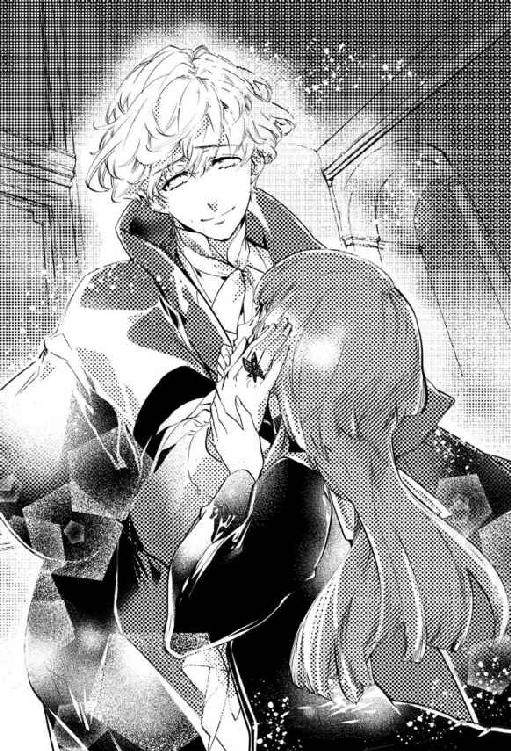
そう、温かい。確かな体温がここにあるのに、この温もりが幻だなんて......彼が現実世界のどこにも存在しないだなんて、そっちのほうが嘘みたいだ。......嘘で、あってほしかった。
「カズヤに謝らないといけないね。その機会が残されていれば、だけど」
鉤翅は悪戯っぽく小首を傾げてみせる。
「実はさっき会った時も、僕のせいで喧嘩になってしまって......一発殴っちゃったんだ」
「え......？」
「僕を説得して緋影から引き離そうとしてくれたんだ。それなのに僕は、意固地になって......あ、もちろん致命傷じゃないから、そこは安心して。......って、それで安心しろっていうのも無理か......」
自分自身の台詞に違和感を覚えた鉤翅が、気まずそうに頬を掻く。紅百合はぽかんと口を開いたまま、彼の発言を脳内で反芻した。
紋白に会った？ ついさっき？
「アイちゃん？」
「......鉤翅さん、紋白さんに会ったの？ どこで？ 紋白さん、私たちに何も言わないまま突然いなくなっちゃって──私たち、手分けして探してたの。今、どうしてるの？」
「ああ、やっぱり君たちには内緒で出てきたのか。まったく彼も無茶するよね」
鉤翅は何やら得心した様子で苦笑いした。
「カズヤなら大丈夫。温室に向かう途中の廊下にいるよ。というといっても、まだ気を失ってると思うけどね。そうでもしないと、また一人で緋影のところまで突っ走っちゃいそうだったから」
「緋影くんのところに......？」
「うん。彼、緋影の傍にいる僕に会いに来てくれたんだよ。まさかこのタイミングで、しかも一人で緋影のところにまでやって来るなんて、僕は正直驚いたけど......緋影は知っていたみたいだね」
やっぱり館の主というのは伊達じゃないね、と鉤翅は笑う。
「緋影は周到だよ。計画を完全にするために、彼は舞台を味わいながらも君たちそれぞれに対して警戒していた。だからカズヤを演じる上で一番邪魔になるタクヤを真っ先に狙った。アキちゃんの機転と冷静さ、君が無意識に周囲に与える影響力も、なかなか脅威だったみたいだよ」
「そうだったんだ......」
自分が及ぼす影響力、などと言われると少々気恥ずかしい上にいまひとつピンとこないが、鉤翅の語る内容に、紅百合は「なるほど」と頷いた。
『緋影』をやめ、館の支配者としての素顔を露わにした『主様』は圧倒的で、紅百合たちの意思も行動も意に介さず、予想外の動きすら利用して弄ぶ余裕があるように感じていた。そんな絶対の『主様』が、そこまで紅百合たちの挙動を気にかけていたなんて。
一度言葉を切った鉤翅が「そして」と続ける。
「何より『本物のカズヤ』の登場には特に気を配ってた。『偽物』の緋影にとっては『本物』がそこにいること自体が厄介だったけど、純粋な戦いの強さという意味でも、カズヤは図抜けているからね。ただ、館の主と一対一じゃ流石に分が悪い」
紋白の無謀とも言える戦闘に肝を冷やすと同時、紅百合は鉤翅の語った顛末に安堵の吐息を漏らした。
「ありがとう鉤翅さん。紋白さんを助けてくれて」
「いや、お礼なんて言われる筋合いはないんだ。それに、彼は今まで何度も僕を正しいほうへ導こうとしてくれた。僕はその気持ちと努力をずっと無碍にしてきたわけだから......せいぜい、これでおあいこってところじゃないかな」
「おあいこ......」
鉤翅の言葉を繰り返した紅百合は、ややあって何度も「うん」と首を上下した。
「うん、そうだね。おあいこ。それがいいよ」
本来は物静かで争いを好まない紋白のことだ。おあいこという結果は、いかにも彼が好みそうに思えた。
「さあ、そろそろ行こう。途中まで送るよ」
笑顔で促す鉤翅の「途中まで」という台詞が、紅百合の手放しの喜びに釘を刺す。
「......さすがにね。今さら彼らに会わせる顔がないよ」
はは、と彼はすまなげに笑う。
「それに、アイちゃんたちはカズヤを探しに来ただけで、まだ緋影と会うつもりはないんでしょう？ だったら一度態勢を立て直すべきだと思うな。それまで僕は......」
落ち着き払った口調で語る鉤翅。その前を、まるで彼の提案を遮るように一羽の黒蝶が横切った。
「......僕は緋影のところに戻って、従うふりを続けながら足止めするよ」
「でも......」
ひらりと現れた黒い蝶は、巻きつく鎖の如く鉤翅の周囲を螺旋状に漂っている。紅百合が廊下の奥に視線を向けると、どこからともなく集まった黒蝶が再び列を成していた。
「......そんなの危なすぎるよ。鉤翅さん一人だけを行かせられない。だって鉤翅さんが紋白さんを助けたこと、緋影くんは知ってるんじゃないの？」
鉤翅が微かな渋面を作る。紅百合は黒蝶の道標を見つめながら、言った。
「紋白さんが見つからなかったら、皆あの目印を辿って探し始めると思う。途中で合流できるかもしれないし、目印の先で待ってるかもしれない。鉤翅さんのことだって、皆、絶対喜んでくれるよ。紋白さんだって、ずっとそれを望んでたんだから。だから鉤翅さんに会いに、一人で出て行ったんでしょう？」
「......君は、怖くないの？」
紅百合の言葉に是とも非とも答えず、逆に鉤翅が尋ねてきた。
「あの目印の先には緋影がいる。君にそのつもりがなくても、近づきすぎれば緋影のほうから君を引きずり込むかもしれない。自分から彼のもとに近づくことが、君は怖くないの？ ......緋影が、怖くないの？」
「怖くはないよ」
強がりではない。その声はごく自然に紅百合の口から滑り出た。
確かに緋影には、未だ紅百合の及びもつかないところがある。けれどもウサギの話を聞いてから、彼のことを「得体のしれない存在」だとは感じなくなっていた。遥か遠くの目に見えない支配者に抱く、純然たる恐怖とは違う。同じ人間に対する感情が今の紅百合にはあった。
「......やっぱり、君はすごいや」
鉤翅がやんわりと微笑む。
「ううん、そんなことないよ」
できることなら、あの二人を「主と僕」ではなく「兄妹」として会わせてあげたい。やむを得ない事態になったら紅百合たちの目的を優先してほしい、とウサギには念を押されたが、紅百合としてはやはりギリギリまでウサギの準備が整うのを待っていてやりたい。
無事に皆と合流し、鉤翅も連れて温室まで引き返してからウサギを待つ。それが紅百合の考える最善だ。
「......それじゃあ、行こっか。鉤翅さん」
「うん、わかった。一緒に行こう」
差し出された手を躊躇うことなく握り返し、紅百合は暗澹たる館の中を再び走り始める。
叶うなら、この手をずっと繋いでいたかった。五年後も、十年後も、うららかな陽の当たる世界で......ずっと。
生まれる前から共に存在していた双子の弟は、時に山都でさえ思いも寄らない行動をして周囲を驚かせた。
それは喜ばしいサプライズだったこともあったし、逆に誰もがヒヤリとする無茶であることもあった。
（まあ大抵が後者だったけどな）
ふらっと姿を消した弟を、あちこち駆けずり回って捜索したのも、今が初めてというわけではない。
（しょうがねえ奴......）
仕方がない。これも兄の務めのうちだ。
その「務め」が果たせる幸せを知ったのは、この世界に来てからだった。
「あ、山都！ そっちどう!? 紋白ちゃんいた!?」
二階から駆け降りてきた鴉翅が、出会い頭に尋ねてくる。
「見りゃわかんだろ、手掛かりひとつ見つかってねえよ！ そっちは!?」
「こっちだって見ればわかるでしょ！ オマエと同じだよ！」
緊急事態だというのにまるで平時と変わらぬ掛け合いができるのは、多分、相手が鴉翅だからだ。鴉翅とは彼がまだ「弱虫ヒメちゃん」だった頃から馬の合わなさを感じていたが、どんな時でも極力明るく振る舞おうとする姿勢はそんなに悪いものではないと、今は思う。
その度にダシに使われ、揶揄われることには慣れないにしても。
「二階はハズレ、隠れ家にもいない。......となると残りは......」
「紅百合が向かったエントランスか、あるいは──」
山都と鴉翅は、ほぼ同時に視線を下げる。そこにはウサギが目印と称していた黒い蝶が、闇色の燐粉を振り撒きながらフワリフワリと浮かんでいた。
「......まさか、ひとりで行っちゃったとか？」
「有り得るな。普通だれもやらねぇだろうが、あいつのことだ」
何か考えあってのことだというのはわかるが、肝心の「考え」が何なのか、山都にはサッパリだ。
「じゃ、試しにこの『道標』を辿ってみる？ オレらが急げば途中で捕まえられるかも」
「そうだな」
鴉翅の提案に、山都はすぐさま賛成した。あとはただひたすら、紋白がまだゴールしていないのを祈るばかりだ。
短い目配せの後、二人は並んで走り出した。
「......あのさー」
しばらくすると、視線を前方に定めたまま不意に鴉翅が呼び掛けてきた。同じく目線は前に向けたまま、山都は「なんだよ？」と短く応じる。
「オマエはさ、ここから出たら何がしたい？」
唐突で脈絡のない問いだった。その内容に、山都は少しだけ驚く。
今まで鴉翅は、こうした未来への展望について言及することを避けたがっている節があった。
どういう心境の変化か知らないが、やはりこの世界との別れが近いからこそだろうか。
「俺は......最初に言ってたとおりだよ。紋──カズヤに会いに行きてえ。あいつの魂がここにいたなら、現世に戻った後、本体がどうなんのか気になるからな」
「あー、そうだね。意識、回復しそうなカンジ。幽体離脱してた魂が引き戻されるみたいにさ」
「そうあることを願ってるよ」
カズヤの肉体は魂のないまま、十年も頑張り続けてきた。肉体から離れた魂もまた、闇に閉ざされたこの世界で存在が擦り切れるまで耐え抜いた。そのふたつの奮闘を、絶対に無駄にしたくはない。
「......で？ そういうお前は向こうに帰ったら何すんだ？」
「オレは、ここに来る前にしようとしてたことの続きかな。結局やりそびれちゃったからね」
山都がふと横目で見遣れば、いつになく神妙な顔の鴉翅がいた。
「......ナッちゃんを、ちゃんと弔いに行きたいよ。あの湖へ」
「............そうか」
応える声も自然と厳かになる。そんな山都のほうを鉤翅が振り向いてきた。
「あの場所に行くこと、オマエはずっと渋ってたけど......やっぱ今も嫌？」
山都はしばし口を噤んだ。
取り返しの付かない罪の原点であるあの湖は、山都にとって忌まわしい存在以外の何ものでもなかった。たとえ亡き友人のために花を手向けに行くのだとしても、それさえも山都の自責の念を激しく掻き立てる。
だから......訪れることを避けていた。
ややあって、山都は再び口を開く。
「......いいや」
自分たちがおぞましい過去から目を背け続けることは、湖底に残されてしまった彼をひとりぼっちにし続けるということだ。
......ひとりは寂しい。そうだ。誰だってそうだ。たとえ死者であるとしても。
「俺も行く。......いや、行きたい」
「......そっか」
二人分の足音が唱和する。
鴉翅は、微かに笑ったように見えた。
それから先は、ひたすら無言で目印の黒蝶を辿って走った。
記憶を失くしている間は、この広大な洋館のことはただの陰気な館としか思わなかった。しかし、記憶が完全に甦った今ならわかる。自分たちが目を覚ましたこの場所は、十年前のあの夏──キャンプの探検で訪れた廃墟の洋館だ。当時は見るも無残に朽ちていたが、辛うじて原型を留めていた柱の飾りや石像、エントランスの砕けたステンドグラスなど、ところどころにこの館と符合するものがある。
あの廃墟も元々は、こんなふうに凝った意匠が自慢の豪邸だったに違いない。
（──あの時）
山都は十年前に行った探検の記憶を手繰り寄せる。
ひとしきり館内を見て回った後、子供だった自分たちは冒険の証になるような特別な品物が欲しくなった。
つまり、戦利品だ。そこで目をつけたのが、館のあちこちに散らばっていた小さなガラス片だった。
光を弾いて七色に輝く美しい欠片。ただの綺麗なガラスだとしか思っていなかったあれは、緋影の求める万華鏡の欠片だったのだろう。狭間の世界に存在する物体を、どうして現世で発見できたのかはわからない。ただなんとなく、そんなものを幼い日の思い出の品として十年間も手元に保管しておいたことが、無性に気味悪かった。
緋影の側近である少女は、山都たちがこの世界にやって来たのはあくまで自然の理であって、緋影の思惑は関係ないと言っていたが......
（もしかして、俺たちが知らず知らずのうちに万華鏡の欠片を持ってたから......この館に──緋影に、呼び寄せられたんだろうか）
邪推するなというほうが無理だ。仮に狭間と現世があの欠片で繋がっていたとしたら、自分たちがこの館を訪れない限り、万華鏡が完成することはないのだから。
（まあ、今更......だけどな）
そんなことを考えながら走り続けて、どれくらい経っただろうか。紋白は一向に見つからない。
もしかしたら既に緋影のところに到着してしまったのやも──そんな悪い予感が、徐々に首をもたげてくる。
「......案外、紅百合ちゃんがあっさり発見してたりしてね」
同様の不安を抱いたのか、鴉翅がぽつりと呟いた。
「だったらいいけどな──......おい、ちょっとあれ見ろ」
急ブレーキをかけるように山都が立ち止まり、鴉翅もそれに倣う。
彼らの視界の先......暗闇が充満する廊下の隅に、ぼんやりと浮かび上がる白い影があった。
注意深く目を凝らしていると、白い光は蛍のように明滅を繰り返しつつ緩慢な動きで絨毯の上を漂っている。
その独特の輝きと動作に、山都たちは見覚えがあった。
「白い蝶......？ もしかして！」
はっとした様子で鴉翅が叫ぶと同時、山都の足は床を蹴っていた。
「紋白！ おい、しっかりしろ!!」
数匹の白い蝶に囲まれて、探し求めていた人物が横たわっている。気を失っているらしく呼び掛けには応えないが、紛れもなく紋白その人だ。
白い蝶が放つ光が、紋白の上腕部を染める鮮血を浮き彫りにする。遅れてやってきた鴉翅が、それを見て低く呻いた。
「そんじょそこらの化け物にやられる紋白ちゃんじゃないし......もしかして、もう緋影とやりあった後？」
「......だとしたら、どうして見逃してもらえた？ ここまで追い込むなら緋影はトドメ刺すだろ」
弟を発見できたことに喜んだのも束の間、山都の脳裏に不可解な疑問が生まれる。この状況を見る限り、紋白は緋影に敗れたとしか考えられない。ならばこうして命があるほうが不自然だろう。
弟の安否を確かめた直後の兄としては身も蓋もない発言に、鴉翅が「そりゃあ......」と口ごもった。
「上手いこと逃げて来たんじゃない？ ここまで撤退して力尽きたってカンジでさ」
「いや。こいつは逃げねえよ。そういう器用さはねぇんだ。一度ケンカを吹っ掛けた以上、どんなに形勢が不利になっても最後まで戦い続けるだろう」
「......じゃあ、なんで？」
「............」
そんな押し問答をしていると、ふたりの声が煩かったのだろうか。紋白が深々と眉間にシワを寄せ、微かに身じろぎした。
「！ 紋白！ おい、しっかりしろ！」
「う......」
山都の呼び掛けに応じるように、紋白がうっすらと瞼を開ける。負傷の程度がわからないため、下手に揺さぶり起こすこともできずに手をこまねく山都たちを、深い紫の瞳がぼんやりと見上げてきた。
「ヤマ、ト......？」
「ああ、そうだ。ったく、勝手にいなくなりやがって。心配したぞ」
「......ごめん......」
まだ意識が朦朧としているらしく、紋白は条件反射的に返事をしているようだ。
「紋白ちゃん。あのさ、もしかしてだけど緋影に挑みに行った？」
鴉翅の問いに、紋白はしばらく黙りこくっていたが......やがて、消え入りそうな声音で「ごめん」と呟いた。
山都と鴉翅は互いに顔を見合わせる。
「なんでまたひとりでそんなことを......」
「考えがあってのことだとは思うけど、それにしたってちょっと無茶だよ」
立て続けに咎められ、紋白はまた口を閉ざしてしまう。ということは、山都たちが聞いたら猛反対するような何かを画策していたということだ。
そもそも全会一致で認められる内容であれば、真夜中にこっそり抜け出す必要もないわけだが。
（しゃあねぇな......）
これ以上責めても何も教えてはくれないだろうし、それ以前に責めるつもりもない。山都はふうっと溜め息をつくと、気持ちと話題を切り替えた。
「緋影とやりあってよく無事だったな。いや、無事じゃねえけど怪我しただけで命があったなら御の字だ」
「............」
むくりと起き上がった紋白は、何か考え込む様子で視線を下ろす。
「紋白ちゃん？ どうしたの」
「............ナツキが」
「え？」
「ナツキが、助けてくれた......」
自分でも信じられないといった口調で紋白が告げた事実に、山都たちは揃って表情を険しくした。
「──あいつに会ったのか？」
「うん。......ヒカゲに殺されそうになった俺を助けて、ここまで連れてきてくれた......そんなことしたら、ヒカゲの怒りを買うって......わかってたはずなのに」
「......それってつまり、鉤翅くんが緋影を裏切ったってこと？」
期待と疑念を均等に含んだ鴉翅の問いに、紋白は無言で首を横に振る。
「ナツキは、ヒカゲについて行くって......俺、説得しようとしたんだけど、駄目で......」
紋白は項垂れて、それきり口を閉ざしてしまった。
「......お前は、自分にできることをしようと努力したんだろ？ 俺たちや、鉤翅のために」
小さく丸まった弟の肩をがっしりと掴み、山都が強い調子で言い聞かせる。
「だったら縮こまってんな。胸、張ってろ。俺たちはお前が生きてて、鉤翅も無事だとわかりゃそれでいい」
「だね。鉤翅くんのことは残念だけど、彼にも譲れないものがあるってのは理解できるし」
彼を説き伏せられるとしたら、ここにいる三人の中で最も可能性が高いのは、言うまでもなく紋白だ。立場は違えど、この隔絶された世界を生き抜いてきた縁がある。たとえそれが絆と呼ぶより、因縁と称すべき類の繋がりになっていたとしても。
その紋白をして説得不可能だったというのなら、恐らくあとは『彼女』しかいない。
「......紅百合と合流しないとな。早く安心させてやりてえ」
「そだね。エントランスに向かったんでしょ？ 今どこにいるんだろ」
山都は紋白の肩を支えつつ立ち上がる。落ち合う場所と時間を決めていなかったのは失敗だった。
彼女がまだエントランス付近にいると仮定して迎えに行くべきか、それとも自分たちと同じように黒い蝶を追ってくると推測してここで待つべきか......
（......ん？）
なかなか決められずに考えあぐねていると、山都の視界の隅で規則正しく隊列を組んでいた黒蝶たちが、にわかに奇妙な動きを見せ始めた。彼らは一匹、また一匹と持ち場を離れ、通路の奥に広がる闇の中へと飛んで行くのだ。まるで、もう役目は終了とでも言わんばかりに。
「え、ちょ、ちょっと待ってなんで？ 目印なんでしょ？ なんで勝手にいなくなるの」
鴉翅が慌てふためくが、蝶たちの唐突な行動の意味など山都にだってわかるわけがない。
「............もしかして」
黒蝶を目で追いながら、とんでもなくまずい可能性に気がついたとばかりに紋白が顔を青褪めさせる。
「緋影が、最後の欠片を手に入れた──？」
万華鏡の最後のひと欠片。確かにそれさえ手中に収めてしまえば、わざわざ山都たちの到着を待つ理由はない。そして、山都たちにとっては重要な取引材料でもある肝心の欠片を所持しているのは──
「紅百合......!!」
ほとんど同時に叫んだ三人は、闇の中へと引き返していく黒蝶を追って一も二もなく走り出した。
山都たちが黒蝶の異変を目にしてから、時間を遡ることしばし。
「鉤翅さん。......道、わかるの？」
不思議そうに尋ねてきた紅百合に、鉤翅は「うん」と答えて頷いた。
緋影が用意した「目印」を、鉤翅はほとんど見ずに進んでいる。
「僕は現世で生きていた時間よりも、この館で過ごした時間のほうが長いからね。緋影のところへだって何度も通ったし、目を瞑ってだってアイちゃんを案内できるよ」
「そう、なんだ......」
鉤翅は「おや？」と思った。紅百合にしては薄い反応だ。
もしかしたら鉤翅の境遇を思い、素直に感心していいものかどうか迷っているのかもしれない。
「......すごいって言ってくれないの？ 一応、覚えるまでにかなり努力したんだけど」
そっと背中を押してやれば、紅百合ははっと顔を上げた。
「うん、すごいよ......！ 私だったら絶対、覚えようとしたって覚えられないもの」
「ふふ、ありがとう。嬉しいなあ、アイちゃんに認めてもらえるのは」
初めて彼女に出会った時のことを思い出す。もう遠い昔の出来事だが、その日の記憶は昨日のことのように鮮明だ。
初対面だったというのに、不思議なくらいすぐに意気投合した。両親と別れて以来、親戚じゅうをたらい回しにされているうちに処世術として「いい子」という仮面を身につけていたナツキだったが、彼女の前でだけはその仮面を脱ぎ、のびのびと自然体で息をしていられることに気がついた。
どんな時でも他人の欠点より美点を見出し、尊重する。決して自らの感情を殺すことなく、喜怒哀楽のままにキラキラと輝く笑顔や涙を見せる彼女は、眩しいくらいに一瞬一瞬を全力で「生きて」いた。
ナツキは、あっという間に彼女のことを好きになった。
あたかも光のない世界を彷徨っていた一匹の蛾が、温かな家の明かりに抗いようもなく引き寄せられるかの如く。
自分のような心の貧しい人間が、心豊かな彼女の傍にいていいものか。
彼女を穢してしまったらどうしよう。誇れるものなど何ひとつとして持ち合わせていない自分は、いつか軽蔑されるかもしれない。
彼女と親密になればなる程、そんな気持ちが幼いナツキの心に影を差した。笑顔の裏で恐れている気持ちを、あの透明な瞳にいつかは見透かされてしまうのではないかと。
けれど不確かな恐怖はいつしか、それを乗り越えんとする決意へと変わった。
彼女に相応しい男でありたいと強く願った。彼女の笑顔を絶やさないよう、傍で支えられるだけの自分になろうと、人知れず己を磨きもした。
ああ、恋ってこういうものなのか。こんな素晴らしい感覚がこの世界にはあったのか。
目に映るもの全てが、文字どおり彩りを変えた。この人生も捨てたものではないと......そんなふうにさえ思えた。
ライバルが多いことはすぐにわかったけれど、全く譲り渡す気にはならなかった。親の愛情、肉親の理解、いろんなものを諦めては「仕方がない」と笑ってきた自分が、ここまで執着するのは初めてだった。
（でも......そのたったひとつの願いも、幕切れは呆気ないものだった）
湖の事故で自らの限界を見誤ったナツキは、友人とふたり、まるで己を過信した報いとばかりに狭間に落ちることとなり──
そこで自分を拾ってくれた『館の主』のもとで、彼の野望の片棒を担ぐことを承諾した。
緋影という人物の残虐性と狡猾さを、カズヤは早期から毛嫌いしていたようだった。しばらくは不承不承ながら付き従っていたものの、それも短い間のことだった。
いよいよ耐え難くなったカズヤは、一緒に緋影のもとを離れようとナツキを誘ってくれた。
しかし、幼馴染が勇気を振り絞って試みた説得を、ナツキは拒否した。
カズヤはいつも言っていた。ここが死者の通過する世界である以上は、その理に則るべきだと。抗おうとするのは良くないことで、この館に留まり続けてはいけないのだと。
たとえ理屈の上では正しくても、カズヤの言葉は、現世での生を渇望するナツキにとって到底受け入れ難いものだった。
『彼女』に出会う前の自分だったら、現世に何の未練もなく召されることもできただろう。だが、あの温もりを知ってしまってからはもう無理だ。
......そして、カズヤはそっと旅立った。
それは絶縁と呼ぶには余りに穏やかで、けれどそれ故に決定的な価値観の違いを明らかにした。
冷酷な王が支配するこの世界では、綺麗ごとを貫いて生きていくことはできない。カズヤはそう遠くない将来に記憶を失くし、自我を失くし、顔を失くして化け物になる。
ナツキにはそれがわかっていた。カズヤだってわかっていたはずだ。それでも自分は離れていく彼を見送ることを選び、カズヤもまた、ナツキのほうを振り返ることすらしなかった。
......できることなら、カズヤにも自分と同じように、生きたいと願ってほしかった。どんなにその手が汚れても、魂を穢しても、一緒に生きようと足掻いてほしかった。
（──いや、違う。そうじゃない。僕は......）
共に汚れる仲間でいてほしかっただけだ。本物の高潔な精神を見せ付けて、メッキの剥がれた惨めな自分だけを汚泥の中に置いていかないでほしかった。多分、カズヤはそんなナツキの心を見抜いていて、だからこそ銃を向けるでもなく、失意だけを胸に静かに去っていったのだろう。
罪に堕しても死に抗う自分と、内なる誇りのために死を受け入れた彼。
そうして別々の道を歩み始めてから、数え切れないほどの歳月が経った。
何も変わらない景色の中、代わり映えのしない毎日を過ごし、不確定な未来に想いを馳せては誰にも言えずに思い悩む。
そんな時、ふと現世にいるあの子を想った。
彼女は、僕のことを思い出したりすることがあるんだろうか......と。
彼女の生きる世界では、あの事故からどのくらいの時が流れているのだろう。
もしかしたら自分のことなどとっくに忘れてしまって、彼女の中に欠片も残っていないかもしれない。
再会を希っているのは自分だけで、彼女は『水谷夏樹』のいない世界を明るく楽しく謳歌しているかもしれない。
それは彼女の人生を思えば祝福すべきことだが、ナツキ──鉤翅にとっては絶望的な展開でしかなかった。
いつしかひとりで生きていくことに疲れた鉤翅は、いっそ誰かに終わりにしてもらえたら楽だろうかと、真剣に死の誘惑にかられるようになっていった。
──そんなある日のこと。
緋影から呼びつけられた鉤翅は事務的に召致に応じ、彼の待つサンルームを訪れた。
新しく館に落ちてくる魂を見つけると、緋影はこうして鉤翅を呼び寄せるのだ。
愉快なゲームの開始には、ある程度の数の『駒』が要る。それらが集まって次の遊戯が始まる瞬間を、緋影は嬉々として待ち侘びていた。彼もまた狭間の悠久の時を持て余し、退屈しているのだ。
そうして今日もまた、館の主を愉しませるための生贄──あるいは玩具がやって来る。緋影の甘言によって一縷の希望を植えつけられる彼らの最期を、鉤翅は熟知していた。
そして、自分もその悪趣味な舞台の中に紛れ込み、役者のひとりとして緋影を満足させなければならないということも。
しかしその日、鉤翅はサンルームで自分を待ち受ける緋影の様子がいつもと少し違うことに気がついた。
口の端を歪に吊り上げ目を細め、滅多にないほど愉快げな顔をしている。己の素晴らしい妙案を早く鉤翅に披露したくて仕方がないといった様相だ。
けれどその表情をひと目見ただけで、彼を歓喜させている「何か」が碌なものでないことは明白だった。
勿体ぶった沈黙ののち、緋影は言った。
『喜ぶといい。お前のお友達が落ちてきたよ。それも三人一緒に、ね』
にわかには信じ難い報せに、鉤翅はただ唖然として立ち尽くした。緋影が上機嫌に笑みを深くする。望んだとおりの反応が見られて喜んでいるのだろう。癪ではあるがどうでもいい。
それより、どうして？ 現世では彼らが天寿を全うするほどの月日が経過していたということなのか？
いや、それでは三人が一度にここへ落ちてくる説明がつかない。
では一体なぜ......
無言で思考を巡らせる鉤翅に、緋影は玉座の上からこう続けた。
彼らはお前にとって特別な存在だ。だから、いつものように上手くやれば......彼らと共に万華鏡を完成させることができたなら、今まで付き従ってきた見返りに全員まとめて生き返らせてやる、と。
そう言われてしまっては、大人しく指示を受け入れるより他にない。かつての仲間たちを何食わぬ顔で欺くことには──特に『彼女』を騙すことには些か心が痛まないでもなかったが、魂となった彼女を再び現世へ帰すために、なんとしても耐えなければならない不可避の痛みだと己を捻じ伏せた。
そして鉤翅は緋影に命じられるまま、記憶喪失を装って懐かしい幼馴染たちに近づいたのだ。
「......ねえ、鉤翅さん。聞いてもいい？」
「うん？」
廊下を走りながら、紅百合が遠慮がちに尋ねてくる。鉤翅は彼女を見下ろして穏やかに微笑んだ。
「鉤翅さん、緋影くんの指示で動いてたんだよね？ どんな命令を受けてたの......？」
「......そうだね──」
全てが露になった今となっては、彼女には何もかもを知る権利がある。
「僕が受けた指示は、主にみっつ。ひとつは、隠れ家で仲間として過ごす間は皆の結束を高めるように行動すること。アイちゃんからの信頼を、特に得るよう計算しろって言われてた」
「私の......？」
「うん。君が最後の欠片の持ち主であることを、緋影は最初から見抜いていたからね」
鉤翅はちらりと紅百合の髪留めを見遣った。自分がいない間も、仲間たちが──とりわけ紋白が懸命に守ってくれたのだろう。蝶の形をした飾りは、彼らに比べてさほど黒く染まっていないように見えた。
「この指示に関しては、緋影はかなりこだわってたね。単に仲良しこよしを演じるだけでは絆は深まらない。時には皆の衝突を誘うように動き、僕はそれが行き過ぎないよう緩衝材として働くようにっていう細かな指示もあったよ」
「......そっか......」
言われてみれば、確かに思い当たる節があるのだろう。紅百合が深刻そうな表情で俯いた。
「もうひとつは、緋影が館の主であることは一切秘密にするように。これはいつもと変わらないから特に気を遣うこともなかったかな。最後のひとつは、君たちに決して情けをかけないようにしろ、間違っても私情で動くな、っていうことだった。......これが一番難しかった」
とっくに干上がり、乾燥した大地の如くひび割れていたはずの自分の心。なのに紅百合たちと過ごす夢の時間は、その無数の亀裂からじわじわと水を浮かび上がらせ、辺りをくまなく潤していった。
「......指示の裏にどんな意図があるのか、問い質しても緋影が受け付けることはなかった。僕はただ馬鹿みたいに、本当に全員が生き返れるのかと繰り返し確認するだけだった」
馬鹿みたい、ではなく実際に馬鹿だったのだ。それも底抜けの。
繋いだ手に、紅百合が微かに力を込めてくる。言葉はないが、どうにかして慰め、励まそうとする気持ちは十分すぎるほど伝わってきた。
「大丈夫、心配しないで。僕は平気だから......それよりほら、もう着くよ」
鉤翅は視線を再び前方に据える。そこには館内の他のドアとは明らかに風格の異なる、重厚かつ荘厳な扉が壁のように立ち塞がっていた。
いつしか周囲には黒い蝶が群がっている。紅百合の髪飾りに触れようとした一匹を、鉤翅は手の甲で軽く払い除けた。
「ここに......緋影くんが」
金色のドアノブを凝視しつつ、紅百合が呟く。
仲間を探して、いよいよ館の主の目前まで来てしまった。鴉翅や山都、紋白とは、まだ会えていない。ならばここで待つか、先に温室まで引き返すか......
思考を巡らせたその刹那、ドアの取っ手が唐突にガチャリと回された。無論、鉤翅も紅百合も、ドアノブには触れてすらいない。何が起きたのかと確かめる間もなく、勢いよく大扉が開け放たれた。耳障りな羽音を響かせて、室内へと一斉に殺到する黒い羽が、一瞬、鉤翅の視界を黒一色に覆い尽くした。
──やがて。露わになったサンルームは、相変わらず異様な佇まいを呈していた。
全面ガラス張りの窓から射し込む強烈な七色の光。大理石の床に反射したそれは目を灼くほどの極彩色となって、ゆらゆらと形を変えながら部屋全体を禍々しく彩っている。
「アイちゃん。呑まれちゃ駄目だ」
ふらつく紅百合の手をきゅっと握る。正常な精神の持ち主をたちまち酔わせる光の渦に、彼女もやはりあてられたらしい。
耐性のない者の思考を麻痺させ、身体の自由を奪う。あの光はそういった視覚的な猛毒を含んでいるのだ。
恐ろしい、目を背けて引き返すべきだと本能で理解しても、釘付けになって魅入られる──館の主との謁見の間は、そんな支配的な力を秘めた場所だった。
「やあ。待っていたよ紅百合」
広間の中央に佇んだ緋影が、入り口で立ち竦む紅百合を悠然と迎える。その顔には賓客をもてなす主人に相応しい歓迎の笑みが浮かんでいた。
その笑みはもちろん紅百合ではなく、彼女が所持する最後の欠片に向けられたものだ。
そして当然、主の指示に背いた部下には冷ややかな侮蔑の視線が送られる。
「鉤翅が一緒なのはどういうことかな？ お前にはお前の役割があったはずだけど？」
「......悪いね」
全く悪びれた気配すら見せず、鉤翅は負けじと不敵に笑った。
「誰かの言いなりになるのは、もうやめたんだ。この身は永遠に狭間に縛られたとしても......心だけは、自由でありたい。そうでなくちゃいけないんだって、アイちゃんが教えてくれたよ」
「......ふん。従順なだけが取り得のお前が、今さら虫篭から出たところで何ができる」
緋影は歯牙にもかけぬといったように鼻を鳴らす。彼にとって手下の反逆など日常茶飯事であり、鉤翅の裏切りも所詮は想定の範囲内の出来事でしかない。むしろ鉤翅の盲従は長持ちしたほうだろう。よくもここまで何も言わずに付き従ってきたものだと......本物の馬鹿だと呆れてさえいるかもしれなかった。
「少しは見所があると思ったけど......どいつもこいつも、お前たちはつくづくどうしようもない愚図の集まりだね」
緋影の悪罵など鉤翅にはとうに耳慣れたものだが、紅百合にはまだ酷だろう。現に彼女は放たれる言葉のひとつひとつを真に受け、顔面を蒼白にしている。
「さあ紅百合。ここに来たということは、欠片を譲る気になったってことだよね？ 早くこちらに渡してくれないか？」
緋影が腕を広げて紅百合を招く。その背後、彼が手を伸ばせば届く距離に、円卓に乗せられた万華鏡があった。最後の欠片の存在を感じ取っているのか、万華鏡は今までにないほど強く目映い輝きを放っている。
艶然と微笑む緋影に対し、紅百合は果敢に首を横に振った。
「私......欠片を渡すためにここに来たんじゃない」
「では何故？ まさかそいつと二人で僕を倒しに来たとでもいうのかな？」
「──私は」
正面から緋影を見据え、紅百合が決然と口を開く。
「本当は、貴方に会わせたい人がいたの。でも間に合わないみたいだから......私が代わりに、貴方の本当の目的を、確かめる。緋影くんが万華鏡に託したかった願いは、何だったのか......」
「はははっ！ 呑気だね紅百合。この期に及んで、まだ他人の事情を気にする余裕なんて」
悪意に満ちた笑声を上げた緋影は、しかし直後に面白いことでも思いついたかのように鷹揚に笑って腕を組んだ。
「けれど、そうだな......君には万華鏡を完成に導いてくれた『恩』がある。特別に教えてあげようか」
「............」
「僕の望みは────破壊だ」
形のいい唇が醜く歪んでいく。この上もなく愉しげに、緋影は続けた。
「この世界の破壊。僕は万華鏡の力で、この狭間を粉々に打ち壊す......それこそ、散り散りになった万華鏡の欠片のようにね」
「......どうして」
紅百合が短く問う。カラカラに乾いた喉の奥から声を絞り出しているのが伝わってきた。
「この館で過ごしてきた永い月日は、僕にとって地獄に等しかった。記憶は失くしているはずなのに、覚えてもいない憎しみ、怒り、恨みが押し寄せ、それが逃げ場もないまま絶え間なく続く......山都を毎晩襲った雨音なんて比じゃあない。僕という魂が存在しているだけで、理由のわからない怨念がしきりに僕を急き立てた。殺せ！ 壊せ！ 復讐を！ ──けれど、想像できるか紅百合？ 記憶のない僕には、誰に、何に向かってこの感情をぶつければいいのか、それすらわからないんだ」
淀みなく朗々と語りながら、緋影はおもむろに白銀の銃を具現化した。鉤翅がすかさず身構えて紅百合を庇うが、緋影に撃つつもりはないようだった。
「いくら待っても終わりは訪れない。それならばと、自ら幕を引くことも考えた。このまま業火に炙られつつ生きていくよりは、いっそ奈落にでも堕ちてしまったほうがまだ楽なんじゃないか、と......」
手にした銃を、緋影がコツリと頭に当てる。
「......でもね。こうやって引き金を引こうとした時、ふと思ったんだ。『なぜ僕だけがこんな思いをしなければならない？』『他の魂は安らかに召されているのに、なぜ僕だけが？』──」
緋影は脱力したように肩を落とす。同時に生み出したばかりの銃も幻と消えた。
「僕はようやく、自分に降りかかる理不尽に気がついた。そうしたらどうだ、何も知らずに常世へ向かう無知で無垢な魂が急に憎たらしくて仕方なくなった。......僕はついに、この怒りの矛先を見つけた。そう、僕を急き立てる激情の全ては、ここに落ちてきた魂を穢し、蹂躙するためのものだったのさ」
右手の甲に装着した漆黒の宝玉を撫でつつ、緋影は忘我の表情で言葉を紡いでいく。
「黒白の世界に光が差し、彩りが生まれた。味わったことのない初めての感覚に全身が震えた。皆が僕と同じ苦しみに苛まれる様を想像すると、それだけで無性に愉しかった。試しに実現させてみると、彼らの苦悶の表情、闇に染まる直前の断末魔に、身体じゅうを喜悦が駆け抜けた。これこそ僕の成すべきことだったのだと、すぐに確信したよ」
「緋影......ッ！」
悪魔じみた発想を嬉々として語る姿に、鉤翅は堪らず低く呻いた。その声は緋影には届かない。
「もっともっともっと、全てを歪ませたい。そうするには──ああ、狭間と呼ばれるこの世界を壊せば、生と死を繋ぐ橋は壊れ、奈落、現世、常世の全てに絶望が溢れ出すんじゃないか？ そうだ、狭間を粉々に破壊してみよう。時空を越え、あらゆる人間に無限の苦痛を与え続け、その悲鳴の中で生きていこう」
ちら、と緋影が万華鏡に視線を落とす。
「............万華鏡に願いたいことなど、それしかなかった」
小さく呟く声。瞼を伏せた表情は、先刻とは別人のように覇気がなかった。
「そう......それしか。もうそれしか......考えられなかったんだ。なのに──」
「......緋影、くん？」
紅百合の声音に戸惑いが混じる。彼女と同質の困惑を、鉤翅もまた感じていた。
緋影の様子がおかしい。唐突に声を落とした緋影は、困惑したように床に目を泳がせている。
甦りかけた記憶が、彼の中で脈動しているのかもしれない。
「......緋影くん。貴方が万華鏡に願いたかったのは、狭間の破壊なんかじゃないよ。そんなこと望んではいなかったはず」
今しかない、と思ったのだろう。紅百合がゆっくりと、だが強かに畳み掛ける。精一杯、緋影の奥底で目覚めようとしている『本当の彼』に呼びかけるように。
「貴方に思い出してほしくて、私、ここにいる。緋影くんが全部思い出してくれたら、私たち、きっと戦わずに済むはずだから」
必死に訴えかける紅百合の横顔を見、鉤翅は一切の口出しを自らに禁じた。
「緋影くん、妹がいたんだよ。病気がちで大人しい、だけどとっても可愛い妹が」
「な......にを」
「いつも大事に想ってて、その子のために本を読んであげたりして......緋影くん、すごく優しいお兄さんだった」
「......やめろ。これ以上思い出させるな」
見えない何かから逃げるかのように、緋影が半歩後ずさる。
「本当に大切な妹で......だから彼女が亡くなったのを、緋影くんは受け入れられなかった。もう一度会いたくて......現世とあの世を繋ぐ万華鏡を探し続けて、ここに辿り着いたの」
「......煩い──黙れ、黙れッ!!」
片手で耳を塞いだ緋影は、もう一方の手で再び凶器を作り出す。今度は真っ直ぐに紅百合へと銃口を向けて。しかし彼女は怯まない。怯むわけにはいかないのだろう。
「万華鏡には、願いを叶える力なんてないんだよ。ただ、あの世とこの世を繋ぐことしかできない。世界は壊れないし、なにも変わらないんだよ」
「......ッ！ 嘘を言うな！ どうしてお前がそんなことを知って──」
「緋影くん、本当はまだ妹を探してるんじゃないの......？」
歯を食いしばり、緋影は両手で頭を抱えると乱暴に首を左右に振った。
「違う......！ 僕には、妹などいない！ ずっとひとりだった......最初から最後まで、ずっと！」
「緋影くんがどうすれば現世で幸せになれたかなんて、私にはわからない。この世界で緋影くんが受け続けた苦痛もわからない。でも......」
前髪の向こうから射殺す勢いで睨みつけてくる赤い眼を、紅百合はじっと正視した。
「悲鳴の中に救いはないよ。私は緋影くんに温もりを取り戻して、幸せになってほしい。だから......お願い。逃げないで、妹のことを......あの子のことを、思い出して！」
「やめろ黙れ煩い消えろぉおお!!」
感情に任せ、緋影が引き金を引く。鉤翅が咄嗟に紅百合の腕を引き寄せたが、放たれた銃弾は彼女の頬を掠めて一筋の傷跡を残した。怒りが瞬時に沸点を振り切り、鉤翅が応戦しようとしたその時。
後方から、こちらに向かって走ってくる複数の足音が聞こえた。
「紅百合ちゃん！ 鉤翅くん!!」
鋭く名を呼ばれて紅百合は後ろを向いたが、鉤翅は振り返らなかった。急速に大きくなっていく靴音が誰のものなのかはわかっている。わかっているからこそ振り向けなかった。
「顔向けできない」とはまさにこのことだ。
「っ、何だこの部屋......!?」
鉤翅たちの横に並び立った山都が、サンルームに広がる景色に息を呑む。
この世のものとは思えない光景だが、生憎ここは現世ではない。
「アイ......ナツキも、無事でよかった......」
吐息と共にそう呟いた紋白は、心底安堵したようだった。紅百合はともかく、自分のことなど気にかけずともいいのにと鉤翅は思う。もういい加減見放してくれて構わないのに、どうしてそうしないのか。紋白の底なしの優しさは、鉤翅には身に余るものだった。
「よかった、ちょっと遅れちゃったけど駆け込みセーフみたいだね。ここまで来てラスボス戦に不参加なんて情けなさ過ぎるもん」
こんな時でさえ、鴉翅はおどけた物言いで余裕ぶってみせる。彼は鉤翅の肩をポンと叩きさえした。
（......ああ）
鉤翅は思う。これが『仲間』か。紅百合が何よりも大切にし、絶対に諦めようとしなかったものか。
（──あったかいな......）
それはぬるま湯などではない、陽だまりの温かさ。
冷たく暗い水底のようなこの世界には、決して射すことなどないはずの光だった。
「ああ......はは、そうか」
幻影のように揺らめきながら、緋影が体勢を立て直す。
「なるほどね......そうやって意味ありげな話をしながら、仲間が到着する時間を稼いでたってわけか」
「！ 違う、私は──！」
「僕から万華鏡を奪うために虚言を吐いていたんだろう？ は......はははっ！ とんでもない食わせ者だな！ ひ弱な女を装っておいて、その実、手強い化け物だったわけか。僕ともあろう者が騙されるところだったよ」
「緋影くん!!」
「でもその手には乗らない。万華鏡は渡さない──！」
鬼神の形相で凄絶な怒気を迸らせた緋影が、一同に対峙した。
「そうだ。せっかく全員揃ったんだから、ここでひとつ答え合わせといこうじゃないか。君たちが取り戻した記憶が、本当に正しいものかどうか」
深紅の外套を翻し、緋影が靴音を鳴らして一歩踏み出す。紋白と山都が同時に具現化させた銃を構え、鴉翅が紅百合を庇う形で前に出る。
鉤翅は、じっと緋影の目を見つめていた。瞬きもせず、じっと。
「さて、昔話の始まりだ。......とっておきのね」
緋影の紫の双眸。そのうちの右目だけがにわかに妖しい輝きを放つ。
──千里眼。全てを見通す瞳。その奥に真実がある。
紅百合たちが無意識に封印を望んだ記憶。鉤翅が知らない、彼らの十年の足跡が。
第十一章 泡沫の恋の結末
──あの湖って、引率のおじさんが行っちゃ駄目って言ってたところだよね？ ......やめたほうがいいと思う。何かあったら大変だし......
「ちょっとだけなら大丈夫だよ。すぐ戻ってくればいいんだから」
──そうかな......本当に危ないから、事前に注意されたんだと思うけど......
「でも、すごく綺麗でお城みたいだと思わない？ ......行ってみたいなあ」
──............。
「ちょっとだけ。ちょっとだけ中を見たら、すぐに引き返すから。だから......ね？ 一緒に行こう？ ナッちゃん」
──そう、だね......。うん、君がそう言うなら。
どうしてあの時、悪魔が囁いたのだろう。
ナツキの言うとおりにしていたら......大人たちの警告をちゃんと守り、廃墟の洋館になど行かなければ──何をどれだけ後悔しても遅い。永遠に続くと思っていた平凡な日常は信じ難いほど呆気なく失われ、二度と戻らなくなってしまった。
「カズヤくん、しっかりして！ 私の手に掴まって！」
ゴボゴボと空気を吐きながら泥水の中でもがくカズヤに、アイは目一杯腕を伸ばす。なんとかその手を取ろうとするカズヤの手が、何度も何度も水を掻いた。
幾度目かの挑戦でようやくカズヤの手首を握ることはできたものの、水とたっぷりと含んだ彼の体重を、アイひとりで支えるのは到底むりだった。
「あっ......きゃぁあああっ!!」
カズヤを助けるどころか、逆に自分も茶色く濁った湖へと引きずり込まれてしまう。
服を着たまま泳ぐ練習などしたことがない。水面から顔を出そうとすればするほど湖底へ沈んでいく身体に、アイはただただ恐怖した。『死』の一文字が脳裏に浮かぶ。
死ぬ？ こんなところで？ 嘘だ。だって、自分はまだ小学生だ。死なんてものは、もっと何年も、いや何十年も先に起こるべきことのはずだ。
嫌だ。嫌だ嫌だ嫌だ。死にたくない!!
頭の中が真っ白になり、アイは動物のように四肢をばたつかせて暴れた。
足が重い。水の抵抗で少しも自由に動かない。まるで湖の奥から生えた無数の腕が、幾重にも絡み付いているみたいに。
「や、だぁ......っ！ っぁあっ......！ 助けて、助けてぇえええ......！」
泥水が口の中に入って咽ることも構わず、アイは声の限りに絶叫する。
お願い助けて誰でもいいから死にたくない。お父さんお母さん神様お願い誰でもいいから!!
（............ああ、でも）
ここで、死んだら。ずっと恋しかったお母さんに会いに行けるんだろうか。大好きなお母さんに──
「喋っちゃ駄目だアイちゃん！ いま行く!!」
混濁したアイの思考を、聞き慣れた声がピシャリと叩いた。次いで湖面が激しく弾ける音がして、誰かが近づいてくる気配がした。
「アイちゃん......!!」
程なくしてフワリと身体が軽くなる。背後から腰に回された腕が、しっかりとアイを抱き留めていた。
「ナッちゃん......げほっ、ナッちゃん......！」
「大丈夫だよ。大丈夫」
自らも危機的状況にあるというのに、ナツキの口調はあくまで穏やかだった。公園で鬼ごっこをしている時の「大丈夫」と全く同じ「大丈夫」だ。
両腕にアイを抱えた彼は立ち泳ぎの格好で水を掻き分け、水没を逃れているあぜ道へと急ぐ。そしてぬかるんだ地面にしがみ付くと、力いっぱいアイの背中を押し上げた。アイの身体は小道の上を無造作に転がり、ナツキから離れた位置で停止する。
すぐに起き上がる余力もなく、アイは地面に全身を投げ出したまま荒い呼吸を繰り返した。
「ナッちゃん......」
顔だけが彼に向いた状態で、蚊の鳴くような声を出す。ナツキはにっこりと微笑み、優しく言った。
「良かった......助けられて」
「ナッちゃん──ありがと......」
疲弊と安堵からまともに喋ることもできないアイに、ナツキは何度も「うん、うん」と頷く。
「アイちゃん、ちょっとそこで待っててね。カズヤがまだ向こうにいるから」
すぐに戻るから心配しないで。そう言い置いて、彼は再び膨大な量の水の中へと引き返していく。その背中はどんどんアイの前から遠ざかり、小さくなっていった。
「ナッちゃん......待って、ナッちゃん......」
熱病にでも冒されたかのように、アイは何度も彼の名を呼んだ。
意識が朦朧とする。瞼がひどく重い。降りしきる雨で白く煙った視界。そこにナツキの姿はない。
いない。見えない......どこにも。
「おいこっちだ!! 早く引き上げろ!!」
「息をしてない......!! 誰か救急車!!」
大人たちのがなり立てる声が、どこか遠くに聞こえた。
視界を覆う霞に、黒い帳が下りていく。
薄れゆく意識の中、全ては夢幻のようだった。
ずぶ濡れのまま微笑んだ顔と。
大丈夫という優しい声と。
それから......
......それから。
『子供だけで、遊んでいたんですって──』
『急に、嵐になって......湖に落ちて......』
『ナツキくんが、助けようとしたんですってね......』
『カズヤくんは、まだ意識が戻らないって──』
『そう......可哀想に......』
気づいた時には、アイは買ってもらった覚えのない黒い服を着て、座布団の上に正座していた。
部屋の隅では会ったことのない女の人たちが、小声で何かを囁き合っている。
やけに耳に付くその声を聞きながら、アイはぼんやりと正面を眺めていた。
そこには、黒塗りの額縁に納まったナツキの写真が飾ってある。
カメラに向かい、彼は屈託なく笑っていた。
......あれは確か、去年のサマーキャンプの時の写真だ。川で一緒に魚釣りしたのを覚えている。
（楽しかったな......ナッちゃん、釣りがすごく上手で）
お魚いっぱい釣って、皆で焼いて食べたんだよね──
そんなことを取りとめもなく考える。どうして自分がここにいるのか、この場所で一体なにが行われているのか。夢と現実の狭間をたゆたっているかの如く、何もかもがふわふわしていて現実感がない。
唯一、辺りに漂う咽返るような線香の匂いが、アイの記憶に鮮烈な印象を刻み付けた。
タクヤとアキの姿はない。彼らもここにいたはずなのだけれど、いつの間にか紅百合の隣から消えてしまった。
夏休みが終わる前に二人とも引っ越したのだと、しばらくして父から聞かされた。
......みんな、いなくなってしまった。
アイの夏休みは、彼らと倒れるまで遊ぶことで決まっていた。毎年そうだった。
（アキちゃんも、タクヤくんも......私になんにも言わずに、どこか別の街へ行っちゃった......）
でも、カズヤとナツキはどこへ行ったのだろう。父に聞いても、ふたりについては何故か曖昧な答えしか寄越してくれない。
（ナッちゃんたちも、引っ越しちゃったのかな......）
アイの知らない、どこか遠い場所へ。
（そうだったら......またいつか、会えるのかな......）
生きているなら、どこかでひょっこり出くわしたりするかもしれない。決してありえない想像を幾度も繰り返し、アイは現実と理想の狭間に強固な殻を作っていった。
涙は出ない。泣けば、彼が死んでしまったことを自ら証明してしまう。
それを認めるのが嫌で、怖くて......アイは自らに泣くことを禁じた。
（......会えたら、いいのにな──）
ゆっくりと季節は巡る。晩夏を迎えてヒグラシが鳴き、物寂しいその声は次第に秋の訪れを告げる鈴虫の羽音へと移り変わっていく。やがて無音の冬が来て、ホトトギスが歌う頃には公園の桜が開き始める。
四季がひと回りすると共に、アイもひとつ歳を重ねる。それを何度か繰り返すうちに、幼馴染たちが姿を消した理由を段々と理解していった。
あの日、何が起きたのか。皆はどうなったのか。
不思議なことに、それらは全く実感を伴わない「情報」としてアイの中に記録された。自分の身に起こったとても重要な出来事だったにもかかわらず、まるで垂れ流しにしたニュースか、斜め読みした新聞記事にも似た奇妙な感覚がした。
だからこそ信じられなかった。ナツキに二度と会えないことが。
髪までずぶ濡れになった彼が最後に見せた笑顔を思い出すたび、固く瞼を閉じて直視を避けた。
泣かないけれど笑いもしない。そんな姿は大いに周囲の気を揉ませたに違いない。周りの大人たちは折に触れ、お題目のようにこんな言葉を唱え続けた。
『事故だった』
『きみのせいじゃない』
全く同じ慰めを、何度耳にしたことだろう。
自分を気遣ってくれているのはわかる。でも、事故だったから何だというのか。
アイの責任ではないのだから、早く忘れろということなのか。
ただ悲しいだけの思い出なら、人間には忘却という手段がある。けれどあの笑顔は、陽だまりのような温かな彼の笑顔は、苦痛と全く等分の恋慕をも伴っているのだ。
本当なら宝箱にでもしまっておいて、時折取り出しては静かに眺めていたいような幸せな記憶。なのにそれが絶望に直結するものだった場合、人はどうすればいいのだろう。
答えを導き出せないまま、月日だけがいたずらに過ぎていった。
小学生だったアイは中学に上がり、そして高校へ。
事件から十年が経ち、高校二年を迎えた春──いなくなった幼馴染との再会は、思わぬ形で実現した。
『アキちゃん』こと姫野明が、アイの通う高校に入学してきたのだ。
そうして物語は動き出す。
あの事故から止まったままのアイの時間。停止して久しい時計が、否応なく時を刻み始めた──
満開の桜と、抜けるような晴天。
これ以上ない晴れやかなよき日に行われた高校の入学式。
紅白幕で飾り付けられた体育館の中で、アキは偶然にも、かつての憧れの少女......湊戸アイの姿を見つけた。自分より一学年上の彼女は、二年生の列に混じって後輩の入学を祝っていた。
実に十年ぶりに見る顔だった。
嬉しくて嬉しくて胸の高鳴りを抑えきれず、ホームルームが終わった直後に彼女のクラスを探して走っていた。アイが出てくるのを待つ間、つけたばかりのピアスを弄って気を紛らわし、踊りだしそうな気持ちを必死で隠した。今でも鮮明に思い出される、あの眩しい笑顔。それをまた見られるなんて夢みたいだった。
『アキちゃん!? 久しぶり、なんだか雰囲気変わったね......！』なんて駆け寄ってもらえたら、どんなに嬉しいだろう。
......しかし。軽率な希望はすぐに、安易な失望へと姿を変えた。
十年の歳月を経た湊戸アイは、アキが焦がれ続けた記憶の中の彼女とは、まるで別人のように変化してしまっていた。一瞬、お互いの性格が入れ替わりでもしたのかと思ったほどだ。
不必要なほど明るく振る舞うようになった自分と、どこか引っ込み思案で周囲に遠慮している様子の彼女。
かつてアキの懐に真っ直ぐ飛び込んできた少女は、今は逆に自分の境界線を侵されぬよう人知れず距離を置いているようだった。そこに以前の眩しさはなかった。
──とはいえ、性格の変化に驚いたのはアキだけではなかったらしく。
『泣き虫アキちゃん』の汚名を返上すべく、時に場の空気を無視してまで軽薄に行動するアキを、アイは半ば唖然としながら、大いに当惑した様子で見つめてきた。
何はともあれ、こうして再び会えたからには簡単に引き離されたくはない。まずは今の自分に慣れてもらうことから始めようと、アキは足しげくアイのもとを訪れた。
それはもう、自分でも「ちょっとしつこいかな？」と思うほどに。
それだけではない。弱腰の彼女が拒絶しないのをいいことに、登下校時に待ち伏せたり。嘘か本当か判然としない誘い文句でデートの約束を取り付けたり。
本当は望んでもいないくせに、「優しい」アイはことごとくアキの要望に付き合ってくれた。
あれはいつだったか──ふたりで街に繰り出した際、奇妙な露店に立ち寄ったことなどは特によく覚えている。結構な繁華街だったのだが、脇道に入れば人通りもまばらになる。路地裏にぽつんと広げられたその店は、何か周囲とは違う異質な存在感を漂わせていた。
どうやら装飾品を扱っているらしい。青紫の布を敷いた台の上には、煌びやかなアクセサリーが幾つも並べられている。どこか異国情緒を感じる見慣れないデザインだ。
店主と思しき老人も、これまたミステリアスなヴェールを纏っている。彼は椅子に腰掛けた状態で、無防備にもうつらうつらと船を漕いでいた。長い衣服から少しだけ見える、シワだらけの顔。妙な痣のある手。
（............）
ここに存在るべきではないもの。アキの本能はそんなふうに警鐘を鳴らした。
美しい宝飾品も、この老人も。
が、アイには惹かれるものがあったらしく、彼女は引き寄せられるが如く露店に近づいていく。制止しようかとも思ったが、ここのところアイの困ったような笑顔しか見ていなかったアキは、少しでも彼女の気に入ったものがあれば......と、アイの後を追って店のほうへと歩き出した。
目の前に並んだアクセサリーの数々を、アイは物珍しげにしげしげと眺める。中でもとりわけ熱心に見つめていたのは、蝶を模した飾り付きのヘアピンだった。
欲しいのかと問えば、見ているだけだと首を振る。しかし、そもそも物欲の乏しい彼女がこうして見入ること自体が珍しい。こっそり買って、帰り道にでもプレゼントしよう。アキはすぐにそう決めた。
ちょっとくらい、本心から喜んでくれればいいのだけれど。
さりげなく値段を確認しようとしたアキは、値札の裏に小さく文字が書かれていることに気がついた。
『ＰｓｙｃｈｅＤｅｌｏｓ』
店の名前かな。どういう意味だろう。それ以前になんて読むの......？ そんな会話を繰り広げていると、不意にしゃがれた声がした。
「『あの世』という意味だよ、お嬢さん」
いつの間にか目を覚ましていた店主が、じっとこちらを見上げていた。
落ち窪んだ双眸。濁った瞳。褐色の肌。過酷な環境を生き抜いてきた峻厳な砂漠の民を思わせる風貌だ。
「『Ｐｓｙｃｈｅ』は異国語で『魂』──そして『蝶』という二重の意味を持つ言葉。『Ｄｅｌｏｓ』のほうは『具現』だ」
言語学だかオカルトだかハッキリしない説明が始まる。明らかに異邦人の見てくれをしているが、老人の日本語は流暢だった。
アキは内心身構える。この手の話は得てして長くなるからだ。
「古より、蝶は魂の乗り物とされてきた。肉体を捨てた魂が蝶となって向かう先──」
枯れ木のような指先をスッと伸ばし、老人が銅色に染まりかけた天を示す。
「無数の蝶の集う場所が、『あの世』......即ち『ＰｓｙｃｈｅＤｅｌｏｓ』、或いは『サイケデロス』だ。......もっとも今は『サイケデリカ』という英語寄りの呼び名のほうが、知られているかもしれないがね」
「あの世......サイケデリカ......」
胡散臭い話題にアキは眉を顰めたが、アイには何か響くものがあったらしい。耳慣れない単語を、彼女はぼんやりと反芻した。
「......この髪飾りが気になったかね、お嬢さん」
老人の人差し指が、夕焼け空から卓上のヘアピンへと移動する。
「うちで扱っているのは全て、モーニングジュエリー......故人を追悼するためのアクセサリーだ。これに魅せられる者は、決まって誰かを胸に住まわせておる」
一瞬、老人の鋭い眼光がアイを射抜いた。
「お嬢さん、大事な誰かを失ったことが？」
「！ ええっと......」
「湊戸」
律儀に答えようとするアイの腕を咄嗟に掴み、アキはきつく老人を睨め据える。
冗談じゃない。商品を売りつけるための適当な戯言なんかに、彼女の心に踏み込まれてたまるか。
「......まあ、深くは聞かないがね」
老人はアキをチラリと一瞥すると、とぼけた様子で自ら話を切り上げた。
「湊戸。......そろそろ行こう」
「でも......」
「もうすぐ日が暮れるよ。今日、早く帰るんじゃなかったの？」
未練がましく目の前の髪留めを凝視していたアイは、その言葉でハッと我に返ったように顔を上げた。
「そうだった！ 私、今日夕食当番なんだ......！」
言うが早いか、彼女は老人に会釈をして慌しく店先を離れていく。小さく吐息を漏らして肩の力を抜いたアキは、アイの背中を追うべく爪先をそちらに向けた。
「......少年」
不意に、老人が呼び止めてくる。
「『プシュケーの気遣い』という言葉を知っているかね？」
無視して立ち去ることはできた。知ったかぶったふうな老人の発言は依然として実りのない知恵をひけらかす年寄りのそれで、傾聴する価値はないように思えた。
だが、アキは振り返ってしまう。それが何故なのかは自分でもわからない。
「より良い生、という意味だ。......大昔の先人が説いたものだがね」
「......何が言いたいの？ オレ忙しいんだけど。アンタと違って」
本当に忙しいのなら、返事などしなくてよかった。どんな形であれ──たとえそれが悪態だったとしても──わざわざ相手にしてしまった時点で、アキは自ら老人に耳を差し出していた。
「覚えておくといい、少年よ。人は全く弱い。これは真実その通りだが、君はそのために絶望してはならない。生きるとは行動することだ。ただ呼吸することでも、陰鬱な思考に沈むことでもない」
「............」
「サイケデリカへの扉はいつだって開かれている。君がそこに呼ばれるのはずっと先かも知れないし、明日かもしれない。君が『よりよい生』を生きようとするなら、立ち止まっている暇はない」
「......その説教、オレなんかよりあの子にしてやったほうがよかったんじゃないの？」
少なくとも自分は立ち止まってなんかいない。むしろ生き急いできた感さえある。
十年前の事故から一歩も動けずにいるのは、自分ではなくアイのほうだ。
「確かに君は、あのお嬢さんから目を逸らすことなくしっかりと正面から向き合っているように見える。それはとても誠実なことではあるが......物事には、真正面から見ただけでは知ることのできない側面というものが、少なからず存在するのだよ」
言いながら、老人はズラリと並んだ商品の中から無造作に金の指輪を取り上げた。それを掌中で転がしながら、低く擦れた声で続ける。
「時には角度を変え、時には裏返し......そうして初めて、隠された相手の本質が見つかることもある」
老人は指輪を摘み、それを自らの目に近づけた。まるでルーペを覗くように、彼は指輪の空洞からじっとアキの瞳を正視してくる。
「君のその黄金色の瞳は、きっと闇の中にも光を見出す。そこに向かうかどうかは君次第だとしても」
「............──」
「運命の女神は移り気だ。ほんの些細なひと言で、ほんの少し指先で突いただけで、世界が激変することだってある。恐れるな、少年。思い通りにならない相手に、世界に苛立つばかりが、君の『よりよい生』だろうか？」
金の指輪を丁寧に布で拭き、老人はそれを大事そうにもとあった位置に戻した。
「誰かを動かしたいのであれば、まず自らが動くことだ」
「......じゃー聞くけど」
腰に手を当て、半ばヤケになりながら、アキは見知らぬ行商人に迫る。
「差し当たってオレは何をすべきだと、アンタは思うワケ？」
「そうだね......ではこの髪留めをひとつ、如何かな？」
「結局営業かよ!!」
地団駄を踏みそうになるのを辛うじて抑え、アキは叫んだ。老人が指し示すのは勿論、アイが興味深そうに眺めていたあのヘアピンだ。
「はー......なんかもう、馬鹿馬鹿しくなっちゃった。それ、いくら？」
鞄から財布を取り出し、投げ遣りに問う。老人は無言でアキのほうに値札を近づけてきた。
「............いい商売してんね、じーさん」
財布から引き抜いた数枚の札で、テーブルを軽く弾いてみせる。売値とピッタリの紙幣を受け取った老人は、悪戯っぽくアキに笑いかけてきた。
「その蝶が、迷える誰かの助けになると信じているよ」
「あーはいはい。ソーデスネー」
裸のままの商品を受け取り、アキは駆け足でアイの後を追いかける。もうこの店に来ることはないだろう。
ただ、なんだかんだで購入する羽目になったこのアクセサリーの処分については、アキは大いに頭を悩ませた。直接問い質したことはないが、アイの変化の原因が十年前の事故にあるのは疑いようがない。
モーニングジュエリー。死者を追悼するためのアクセサリー。
（こんなもの買ってどうすんだオレ......まさか湊戸に渡そうとでも？）
アイの後ろを少し遅れて歩きながら、アキはポケットに忍ばせた髪留めをどうすべきか考える。辺りは既にオレンジ色の夕日に染まり、繁華街を行き交う人の姿も、アキたちのような学生から仕事帰りのサラリーマンへと変わっていた。
（『より良い生』、ね......部外者だからって、好き勝手言ってくれちゃってさ）
そんなものが簡単に実現できるなら、誰だってそうしている。もちろん自分だって。
たかが飾り物ひとつが何の役に立つというのか。
「......ねえ、アキちゃん」
くるりと身を翻したアイが、少し当惑した表情でアキを見上げてくる。すっかり考え事に集中していたアキは、内心で動揺しながらも、どうにか笑顔を取り繕った。
「なーに？ 湊戸」
そういえば、『弱虫ヒメちゃん』を彼女の記憶から遠ざけたいがために「アイちゃん」というかつての呼称を避けて「湊戸」なんて呼び始めたけれど、やっぱりなんだかしっくりこない。
わざとらしいというか嫌味ったらしいというか、爪先立ちが逆に見え見えというか、今更ながら失敗したなあと苦々しく思う。
いいや、いつかこっそり「アイちゃん」に戻そう。どこか不自然じゃないタイミングで。
そのうちなかったことになるだろう。時が経てば。
（......時が経てば？ 本当に？）
時間が解決してくれるなんて、どうしてまだ信じられる？
十年経っても過去に囚われたままの人間がここに、目の前にいるのに。
「アキちゃんの家、こっちじゃないよね？ どこか用事があるの？」
「あー、えっとね」
暗に鬱陶しいと言われているのだろうか。今の彼女は昔と違って遠回しな物言いをするようになったから、いつも顔色や仕草から本心を察するしかない。アキは腕時計を確かめるフリをして答える。
「日が長くなってきたからうっかりしてたけど、もう七時前だし。家まで送るよ」
「え......」
「......なんで驚くの」
「え、だって──」
アイはあからさまに視線を彷徨わせた後、にっこりと笑った。
「えっと、まだ明るいからひとりで大丈夫だよ！ うちを経由したら、アキちゃんこそ家に帰るの遅くなっちゃうし！」
アイの朗らかな笑顔は、アキを絆すどころか瞬時に心を逆撫でた。
誤魔化すにしても、もっとやり方があるだろう。こちらを心配する姿勢を見せつつ拒絶するなんて、それはさすがに......
......さすがに、狡い。
（あーあ）
アキは落胆と失望の溜め息をつく。アイと......それから、自分自身に対して。
湊戸アイが以前の彼女ではないとわかった時点で、嫌いになれていたらよかったのに。
「............そっか、わかった。しょーがないね」
アイに負けない虚偽の笑みで、アキはいかにも渋々と引き下がった。
「じゃあ今日はここで。でもその前に、ちょっと手ぇ出して」
「手？ ......これでいいの？」
アキを引き離したことで安心したのか、アイは無防備に右手を差し出してくる。
その掌に、ポケットから取り出したヘアピンを素早く載せた。
「......これ......さっきの──」
「あげる。気になってたんでしょ？」
アイは無言のまま、眼前のアキと掌中の髪留めを見比べる。
このアクセサリーを彼女に渡すことに、抵抗や迷いがないわけではない。
ない、けれど......
『運命の女神は移り気だ。ほんの些細なひと言で、ほんの少し指先で突いただけで、世界が激変することだってある』
馬鹿馬鹿しいとばかり思っていた老人の台詞が、何故だかアキの脳裏に木霊した。
アイの心を占めているのは、今も昔も変わらず『水谷夏樹』だ。
自分は、そこから引き剥がしたいと思っている。
このモーニングジュエリーがアイとナツキをより深く繋げるものになるのか、それともアキが望むように、ナツキを弔い決別するキッカケとなるのか......それはわからない。
移り気だという運命の女神が微笑みかけてくれるのを、ただ祈るしかなかった。
「で、でもアキちゃん！ 私、こんな高そうなもの受け取れな──」
「あー、あー！ 聞こえなーい！ 突然、耳が聞こえなくなっちゃった！」
両耳を塞いだアキは、ヘアピンを返却しようとするアイの手をひょいとかわして白々しく叫んだ。そのまま軽やかに地面を蹴り、数メートルほど後退する。
「じゃーオレはここで！ また明日迎えに行くから、遅刻しないよーにねー！」
大きく手を振り、ぽかんとした様子でこちらを見つめるアイの前から走り去る。
......明日が来るのが、ほんの少しだけ怖かった。
なんの変化もない毎日。
朝起きて、学校に行き、授業を受け、下校したらその足で弟の眠る病院に向かう。
十年続いたルーティンワークのような生活。終わりの見えない日々。
神田拓也はその日もいつもと同じ時間、同じ手順で支度を済ますと、同じ駅から同じ電車に乗り、同じ街で降り同じ道筋を辿って高校へと向かっていた。
──変化は、唐突に訪れた。ごった返した朝の人混みの中に、ふと懐かしい横顔を見た気がして......横断歩道の真ん中で、タクヤはピタリと歩みを止めた。
雑踏の一角を凝視する。三白眼の自分が眉根を寄せると、ただでさえ無愛想といわれる印象が格段に悪くなるらしく、道行く人々が直前でサッと避けていくのがわかった。
......そんなことはどうでもいい。
タクヤの瞳が褐色の髪の少女を捉える。その横に立つ金髪の青年の後ろ姿も。
（あいつら、もしかして──）
しかしタクヤが確信に至るよりも早く、彼らは何かを思い出したかのように走り出し、瞬く間に雑踏に紛れてしまう。
（声......掛けてみりゃよかったかな）
......いや。あの一瞬で、自分にその決心がつけられたとは思えない。
それに声を掛けるといっても、なんと言えばいいのか。
十年前、逃げるようにあの街から姿を消した自分が、見捨ててしまった彼らに今更「よう」だの「元気だったか？」だの、いくら何でも無神経すぎる。
......それとも──
（あいつらは......覚えてんのかな、あの日のこと）
自分だけだろうか。こんなにも十年前に囚われて、そこから一歩も動けずにいるのは。
彼らはあの事故のことなどすっかり過去のことにして、いま目の前にある時間を謳歌しているのではないだろうか。
信号が点滅する。横断歩道を渡る人々の足取りが速くなる。
その波に流されるように、タクヤもまた、学校のある方向へと歩みを再開した。
もしも自分にとって本当に必要なことであるなら、好むと好まざるとにかかわらず、もう一度出会うこともあるだろう。
......それがきっと、裁きの時だ。
十年前のあの日、あの時、あの瞬間を境に、タクヤの人生は激変した。
自分は強い人間だと思っていた。ずっと。
いつも級友たちの中心にいて皆を率いる自分と違い、離れた場所でぽつんと佇んでいるカズヤ。目立った主張もせず、ひたすらのんびりとした気風のナツキ。泣き虫で女々しく身体も弱いアキと、それを守るアイ。そのアイだって女だ。いくら強がってはいても、どうせ腕力では自分に敵わない。
......そんなふうに見くびっていた。
けれどあの時。
危険を顧みず友人を助けに行ったナツキ。アイとの約束を頑なに果たそうとしたカズヤ。「行っちゃダメだ」と震えながらタクヤを引き止めたアキの、びくともしなかった腕。
自分より弱いと思っていた者たちが見せた、本物の強さ。命の危機という土壇場で光り輝いたそれはひどく眩しく、タクヤの幼稚な思い上がりを容赦なく浮き彫りにした。
打ちひしがれたタクヤに、もはや以前の勝ち気で快活な悪童の面影はなかった。
そんな時だ。両親が突然の引っ越しを決めたのは。
いかにも世間体を重視する彼ららしい行為だと、最初は密かに蔑んだ。自分に何の相談もなかったことが腹立たしくもあった。けれど程なく、その判断の適切さを理解した。
残してきた仲間を思うと胸が痛んだが、素知らぬ顔をしてあの街で生き続けていくには、自分は余りにも弱すぎた。
昏睡状態のカズヤを受け入れられる病院が限られていたことも手伝って、引っ越しの準備はトントン拍子に進んでいった。
湖での事故の記憶。そして、街から惨めに逃げ出した事実。そのふたつの出来事はタクヤのプライドを粉々に打ち砕いた。バラバラに飛び散った破片は除去不可能なほど心身の深くまで突き刺さり、自責という後遺症としてタクヤを執拗に苛み続けた。
『懐かしい生まれ故郷』など、もうどこにも存在しなかった。あの街も、そこで過ごした日々も、タクヤには苦痛しかもたらさない。
それは元凶でありながら五体満足で生き残った臆病者への、罰なのかもしれなかった。
授業が終わると、タクヤは真っ直ぐに弟のいる病院へと向かう。
部活動はしていない。そんな余裕はなかった。
寝たきりの弟の世話を両親が見なくなって、既に久しい。彼らも彼らなりに多忙なのだと自らに言い聞かせ、その薄情さに目を瞑るには、十年という月日は長すぎた。
タクヤはこの日もいつもと同じ時間、同じ手順で帰り支度を済ますと、同じ道筋を辿って病院へと向かう。
十年続いたルーティンワークのような生活。終わりの見えない日々。
なんの変化もない毎日。──今日までは。
「アイ......？」
病院への道すがら繁華街を歩いていたタクヤは、往来の中に長い褐色の髪の少女を見つけて思わずその名を口にした。
登校時にも見た、幼馴染を彷彿とさせるあの少女だ。
「え......？」
少女が振り返ってくる。呆然としたタクヤの声は周囲の雑音に掻き消されていてもおかしくはなかったのに、何故だか彼女の耳には明瞭に聞こえていたらしかった。
タクヤは驚きに目を見開いて、少女の顔を凝視する。
『少女』は『彼女』だった。
「やっぱり、アイだよな......？ 朝、見掛けて......そうじゃねぇかと思ってたが──」
その言葉に少女──湊戸アイも大粒の瞳を丸くして、小走りにこちらに近づいてくる。
「もしかして......タクヤくん？ 昔、近所に住んでた──私に意地悪ばっかりしてきた、タクヤくんだよね!?」
驚愕の表情が喜色の笑みへと変わっていく。その様に、タクヤは少しだけ安堵した。
まあ、彼女における「神田拓也」の認識が「意地悪ばっかりしてきた、近所に住んでいた子」だったことには苦笑いだが、確かにその通りだったのだから仕方がない。
「......んなことまで思い出すなっての」
いかにもバツが悪いとばかりに頭を掻いてから、タクヤは改めて眼前の幼馴染を正視した。
「でも、久しぶりだな......」
「うん。十年ぶりだよね」
そう言ってアイは嬉しそうに微笑む。見上げる彼女と、見下ろす自分。頭ひとつ分まで広がった身長差が、会わないまま過ぎ去った月日を思わせた。
「タクヤくんはどこの学校に行ってるの？」
「凪高。こっから何駅か先の」
高校の方角を指差しつつ答えると、アイは「うわあ」と感嘆の吐息を漏らす。
「すごい、超進学校だね！ ......でもタクヤくん、そんなに頭良かったっけ？」
さっきから微妙に刺のある発言が続くが、わざとではないと信じたい。
「そう言うお前は......白鈴か？ その制服」
「うん、すぐそこ。......でもタクヤくん、意外と近くに住んでたんだね。びっくりだよ。もっと遠くに引っ越しちゃったと思ってた」
......そう。あの街を去る際、両親はそれまで付き合いのあった誰にも、新たな住所を教えなかった。
幼馴染との思わぬ再会。嫌われているかもと恐れていたが、意外にも彼女はあっけらかんとしていて、まるであの事故のことなどすっかり忘れているかのようだ。
......タクヤの存在も、古き良き時代の一ページとして処理されているらしかった。
これならば過去に触れることもなく、ただ単純に旧友としての会話を楽しめるだろうか......そんなことを考えた時、あたかも「許さない」と言わんばかりのタイミングで、スマホのアラーム音が鳴った。
あと十分で病院行きの電車が出る、というアラームだ。
「悪ぃ。俺、ちょっと急いでるからもう行かねえと」
「あ......そうなんだ」
せっかく会えたのに残念、と、アイは見るからにしゅんと肩を落とし──それから、あっと叫んでタクヤのほうに詰め寄ってきた。
「そうだ！ 連絡先教えてくれる？」
「......おう」
一瞬だけ返事に詰まった。今日だけの偶然、ここだけの出会いにしておいたほうがいいのではないか......そんな気がしたのだ。
「よかった、ありがとう！」
しかし胸をよぎるタクヤの不安も、屈託ないアイの笑顔が吹き飛ばした。
それぞれのスマホにアドレスを登録し、ふたりは互いに視線を交わす。
「こっちから声掛けたのに、急かして悪かった。......また、そのうち連絡するわ」
「うん！ それじゃあね」
手を振るアイに、タクヤも口元に笑みを浮かべつつ人混みの中へと分け入っていく。
そのうち連絡する、の「そのうち」をいつにしようか。そんなことを考えながら。
危うく乗り遅れそうになったものの、発車寸前でどうにか時間に間に合った。大好きだったサッカーを辞めてしばらく経つが、中学まで鍛えていた足はそれほど衰えてはいないらしい。
......はっきり言うと、別に電車の一本や二本、乗り過ごしたところで特に問題はないのだ。
十年間戻らないままの弟の意識が、今日戻るとも思いづらい。
顔を見て、手を握って、話し掛けて......話題が尽きたら面会時間の終わりまで、机を借りて勉強する。それ以外にすべきこともできることも、何もない。
最寄り駅で下車し、徒歩数分で病院に着く。看護師とも長い付き合いで、すっかり互いの顔と名前も覚えてしまった。
「......カズヤ。来たぞ」
ドアを開け、ベッドの上の青年に呼び掛ける。
返事はない。タクヤは備え付けの椅子を手繰り寄せ、ベッドに横付けする格好で腰を下ろした。
ベッドに横たわり、眠ったままの弟。ほとんど骨と皮だけの痩せた体躯に青白い顔。以前から似ていない双子だったが、今の有様はかつての比ではない。
「今日な。アイに会ったんだ。幼馴染の......覚えてるよな？」
純白の袖から覗くカズヤの腕。そこには綺麗な薄紫色のリボンが、解けないよう幾重にも巻き付けられている。
十年前のあの日、怪我をしたカズヤのためにアイが貸してくれたリボンだ。彼女は昔、このリボンをとても大事にしていて、いつも肌身離さず身につけていた。
母親の形見だと聞いているが、事故後いろいろと立て込んでいたこともあり、結局返せず終いのままだ。
「......お前があいつを忘れるわけがねぇか」
このリボンをアイに返すために、カズヤはあの日、降りしきる雨のなか廃墟の館へと引き返した。
そして──
（ああ......そういや連絡先交換したから、もういつでも返せるのか）
ふと思い立ち、タクヤはスマホを手にして立ち上がる。
「悪い。ちょっと出てくる」
弟にひと言断ってから、病室を後にした。向かう先は待合室。病棟内は携帯が使えないが、あそこならメールも通話も可能だ。
（通話......いや、別に急ぎじゃねえしメールにしとくか）
そんなことを無言で考えながら、タクヤはスマホの画面と向き合う。
......あの日。湖で溺れたカズヤたちを助けるため、タクヤはアキと一緒に大人たちのいるキャンプ場まで引き返した。その途中、タクヤたち五人の不在に気づき、捜索に乗り出していた保護者の一団と運よく鉢合わせた。
土砂降りの雨に打たれた自分たちを見た瞬間、彼らは一斉に表情を引き攣らせた。
想像したくなかった事態を──その深刻さを即座に察したのだろう。それくらい、タクヤとアキは酷い顔をしていたのだ。きっと。
その後、湖に集まった大人たちによって、湖畔に倒れたままのアイが保護され、水中に沈んだカズヤ、ナツキの探索が始まった。警察や救急にも連絡が行ったらしく、サイレンの音がけたたましく辺りに響いていた。
夜陰を照らす赤い光がひたすら不吉で不気味に思えたのを、今でもよく覚えている。
やがて大人たちが湖中からカズヤを助け出した時、彼は既に意識不明、心肺も停止した状態だった。
......カズヤの拳には、薄紫のリボンがグルグルと巻きつけられていた。多分、これだけは絶対に手放すまいと、カズヤ自身が咄嗟にやったのだろう。あの冷たく濁った水の中、呼吸もできない状況で、これだけは......と。
病院へ緊急搬送する途中、救急隊員が水浸しのリボンを解こうとした。処置の妨げになるからだろう。が、カズヤの拳は固く握られたまま、頑として開かななかった。
兄として救急車に同乗していたタクヤは、そこにカズヤの意思を見た。カズヤは今、このリボンを取り上げられるのを必死で拒んでいる。
この薄い布一枚を守ろうとする気持ちが、カズヤの命を繋いでいる──
そう感じたタクヤは、指を一本一本開こうとする隊員たちに頼み込み、どうにかリボンをそのまま残してもらったのだ。
以来、今日に至るまでずっと......リボンは片時たりとも離れることなく、カズヤと共にある。
（でも、そろそろ返さねえと。本当の持ち主に）
恐らくカズヤもそれを望んでいるはずだ。
メール作成画面を開き、件名をどう打ち込むべきか少しだけ悩んだ後、タクヤは指先で液晶に触れる。
瞬間、スマホが突然振動し、誰かからの着信を伝えてきた。
画面に表示された名前を見、タクヤの眉が微かに上がる。
（アイ......？）
液晶の上で、さっき別れたばかりの少女の名が浮かんでは消え、明滅を繰り返していた。
一体なんの用だろう。また連絡する、と言ったのは自分のほうだし、彼女の側からコンタクトがあるとは思っていなかった。まあメールくらいは届くかも、くらいで、着信があるとは正直まったく。
街で別れてから一時間弱。アイが今でも変わらずあの家に住んでいるなら、とっくに帰宅している頃ではあるが──
「......もしもし」
ややあって、タクヤは着信に応答した。予想以上に強張った声が出てしまい自分でも驚く。やはり電話越しとなると、直接顔を突き合わせて話すのとはまた違った緊張感がある。
この感覚は──ああ、そうだ。幼少期、まだ携帯など所持していない頃にアイの自宅に掛けた気分に、よく似ている。
変に思われなかっただろうか、と不安になるところまで同じだ。
『も、もしもし』
発信主であるアイの声も、なんだか当惑して聞こえる。
『タクヤくん？ ......湊戸アイです』
「おう。さっきぶり、だな。......どうかしたのか？」
『ええっと......』
アイが口ごもる。しばらくして、彼女はしどろもどろに尋ねてきた。
『あ、あのね。カズヤくん、どうしてるかなって思って。その......聞きそびれちゃったから』
いかにも聞くのが躊躇わしげな口調。
真実を告げるべきか否か......告げるにしても、どう言ったらいいのか。即答できず、タクヤは黙り込む。
『......タクヤくん？ なにかあったの？』
「ああ......いや」
悩んだ末、タクヤはアイ自身に選択権を委ねることにした。
「あいつは今......俺といるけど」
すると一転、遠慮がちな声が喜びに弾んだ。
『そうなんだ!? 少しだけ代わってもらえたりしないかな？』
「............」
どうやらアイは、カズヤがあの事故から植物状態だということを知らないらしい。
（あれ？ それってなんかおかしくねえか？）
タクヤたちが引っ越す前、彼女は何度か意識不明のカズヤを見舞って病院に来ていたはずだ。アイの父親が自分たち家族に向かって何度も頭を下げていたのも覚えている。
（まだ小さかったから、カズヤの容態についてよくわかっていなかったのだろうか？ それとも、もう回復したと思っているとか？ だとしたら、残念な報告をすることになるが......）
「......お前、カズヤに会いたいか？」
『え？ もちろん、会えるなら会いたいよ？』
きょとんとした答えが返ってくる。
「......もしお前がこっちに来られるなら、会わせてやれるけど」
『本当？ どこにいるの？』
「............」
カズヤとの再会に心躍らせる無邪気な声に、少しだけ胸が痛んだ。
数秒だけ押し黙り、それから現在地を告げる。この辺りに住む人間なら誰でも知っている総合病院の名だ。
『え......病院って、カズヤくん怪我でもしたの？ 病気？』
......やっぱり何かがおかしい。
来てみればわかる、とだけ言うと、彼女は「すぐ行くから」という返事を残して通話を切った。
会話を終え、タクヤは手元のスマホをじっと見下ろす。
......街で会ったアイは、かつての彼女と全く変わらぬ輝きを保っていた──ように見えた。
だが、先程の話の中に抱いた違和感。
（まるで......あの事故のこと、何もかも綺麗さっぱり忘れちまってるみたいだ）
十年ぶりに見た、アイの明るい笑顔を思い出す。
さっきまでキラキラと輝いていたその顔が、今は貼り付いた仮面のように寒々しく感じられた。
あれからの人生を、彼女はどんなふうに生きてきたのだろうか──
「お邪魔しまーす......」
控え目なノックの後、遠慮がちに病室のドアを開けたアイがおずおずと顔を覗かせた。
「おう。わざわざ来させて悪かったな」
通話を終えてから一時間足らず。本当に急いで駆けつけたのがわかる。
「カズヤ。......わかるか？ 幼馴染のアイが来たぞ」
リクライニングベッドに横たわる弟へと、そっと語りかける。
「なあ、覚えてんだろ？ お前、こいつに懐いてたもんな」
「っ......」
アイが悲痛な面持ちで言葉を詰まらせた。できればタクヤとて、彼女を元気な姿の弟に会わせてやりたかった。
「あれから目覚めてないっていうのは......？」
「ああ、本当だ。見ての通り......いわゆる植物状態って奴」
一度通話を切ってから、タクヤは肝心なことを言い忘れたのに気づいて慌てて電話を折り返した。病院の名前は伝えたが、カズヤがいる病棟と部屋番号を教えそびれていたのだ。
その際、カズヤの容態についても軽く触れておいた。やっぱりそのほうがいいと思った。何も知らないまま病室に来て初めて寝たきりの幼馴染を目の当たりにしたら──仲間思いのアイのことだ。受けるショックは計り知れない。
タクヤの懸念は半分当たって、半分外れていた。
カズヤの現状については、やはりアイは知らされていなかった。正確には、嘘を教えられていた。
彼女が中学に上がる頃、父親が少しだけ神田一家のその後について口を開いたらしい。
いわく、カズヤは無事に意識を取り戻し、以前と変わらず元気に暮らしていると。
大切な娘の心を守るための......そして、二度と湊戸家と神田家が会わないことを前提とした、優しい嘘だ。
電話越しに真実を聞いたアイが、消え入るような声で「そんな」と呟いた瞬間、彼女の父親が繕ってきた善意の檻を意図せず突き崩してしまったことを、タクヤは理解した。
それでも、アイはわずかな間を置いた後、見舞いに行く、と告げたのだ。
......これが「半分当たり」の部分。そして──
「あの事故の後、身体はなんともねぇのに意識だけ戻んなくて。こうしてずっと眠ってる」
ベッドの端に腰を下ろし、タクヤは弟の長く伸びた髪を撫でた。
「......まるで魂だけあの湖に置いてきちまったみてぇだよな」
そう言って苦笑すると、アイは真顔で口を閉ざした。
彼女は、十年前の事故のことを覚えていた。
「前に、医者に言われたんだ。こんな状態でなんの反応もなくても、刺激を与え続けてやれば目覚めるかもしれねぇって。だからこうして病室に通って、身体動かしたり、話しかけたりしてやってるってわけ」
「そう......だったんだ......」
アイは室内に踏み込むこともせず、ドア付近に佇んだまま。タクヤは二度目の苦笑いをして、彼女に来客用の椅子を勧めた。
「んなとこ立ってんのもなんだし、とりあえず座れよ」
「うん......ありがとう」
促されるままベッドサイドの丸椅子に腰掛けたアイは、ゆっくりとカズヤの顔を覗き込んだ。下手に騒いで眠りを妨げてはいけないと思っているのか、微かな物音ひとつにすら気を払っているようだ。
「遠慮すんなよ。普通の病人が普通に眠ってるのとは違うんだ。音を立てたって構わねえし、なんなら耳元で叫んでみたっていいぜ？ びっくりして起きるかもしれねぇ」
タクヤが冗談混じりに言うと、アイも困ったようにだがやっと小さく笑った。ここに来て初めての笑顔だ。
しかしそれも束の間のこと。彼女はすぐにもとの神妙な顔つきに戻ると、眠り続けるカズヤを見つめた。
カズヤは眉間にシワを寄せ、口を真一文字に結んでいる。今にも呻き声が聞こえてきそうな、苦しげな形相だ。
「......カズヤくん、難しい顔してるね......。ずっとこうなの？」
「ああ。せめて穏やかに寝ててくれたら、こっちも少しは気が楽なんだけど」
感じないはずの苦痛を訴え続ける弟。その姿を見るたび、タクヤはかつて自分が犯した軽率な動機の......それでいて取り返しのつかない過ちを眼前に突きつけられた。
カズヤという存在がある限り、タクヤの罪は過去にはならない。永遠に「今」も続くものとして在り続けるのだ。
「怖い夢でも見てるのかな......」
「十年もの間？ そりゃ地獄だな」
何気ないアイの言葉に、タクヤは思わず自虐的に口元を歪めた。
十年間ずっと悪夢に閉じ込められ、身体は指一本動かすことも、瞼を開けることも、恐怖を声にして叫ぶこともできない。
弟がそんな目に遭っているなんて考えたくもないが......それはまさしく、地獄だった。
ふと、カズヤの手を握ろうとしたアイが何かに気づいたように動きを止める。
「......このリボン──」
「ああ。あの日、お前に借りたリボンだ。森の中で怪我したカズヤを、お前がこれで手当てしてくれて......」
その先の出来事を、タクヤは口に出すのをやめた。冒険の途中で落としてしまったこのリボンを探すため、カズヤは廃墟に戻り、結果として増水した湖に沈んだ。そんな辛い出来事を、改めてアイに思い起こさせる必要はない。
「それを握ってると、表情が少しだけ和らぐんだ。だからそうやって手首に巻いてた」
「......そっか」
「けどこれ、確かお前の母親の形見だったろ？ 今まで借りっぱなしで悪かった。返すよ」
そう言ってリボンの結び目を解こうとするタクヤを、アイの手がそっと制した。
「......ううん、いい」
「え？」
「カズヤくんが目を覚ましたら、直接返してもらうから。......それまでは預けておくね」
タクヤを真っ直ぐに見つめ、アイがやんわりと微笑む。彼女の言う「カズヤの目覚めの瞬間」がいつになるかはわからないし、一生眠り続けたままだとしてもおかしくはないのだ。今を逃せば二度と返却できなくなるかもしれない。
......恐らくアイ自身も、そのことは承知しているのだろう。理解した上でそう言ってくれたのだ。
だったら、断るほうが厚意に反する。
「......サンキュ。いつか返せる時が来るといいんだけど」
タクヤが曖昧に笑い返すと、アイの笑顔も微かに悲哀の翳りを帯びた。が、すぐに気を取り直すかの如く明るい声で話題を変えてくる。
「タクヤくん、ここには毎日来てるの？」
「そうだな......基本的には、学校終わったらすぐ来るようにしてる。俺しか面倒見てやれねぇし」
最後のひと言が引っ掛かったらしく、アイが「え？」と不思議そうに首を傾げた。
「ご両親はあまり来ないの？ タクヤくんだって、勉強とか部活あるでしょ？」
「俺は部活入ってねぇし、勉強はここでもできる。父親も母親も仕事があるからな」
「でも......」
淡々と何の感慨もなく答えるタクヤとは対照的に、アイはいかにも納得いかないといった様子で食い下がってくる。
「タクヤくん、小さい頃は有名な選手になるって......サッカースクールにも通ってたのに」
はは、とタクヤは笑う。皮肉っぽく乾いた声だった。
「それどころじゃねぇだろ。こうなっちまった以上、夢がどうとか考えらんねぇ。カズヤのことだけで手一杯だ」
「タクヤくん......」
アイは今度こそ悲しそうに瞳を伏せた。
家族のために自分の希望や可能性を捨てざるを得なかったように見えるタクヤを憐れんでいるのかもしれない。諦めないで頑張ってほしいと歯痒く思っているのかもしれない。
けれど仕方がない。いや、仕方がないと思うことすらおこがましい。自分の蒔いた種なのだから。
室内が静寂に包まれる。カズヤの脈や酸素濃度を報せるモニターだけが、文字どおり機械的なアラーム音を一定のリズムで刻み続けていた。
（......静かだな）
ぼんやりと、タクヤはそんなことを思った。普通、密室で会話が途切れれば自然と居心地も悪くなりそうなものだが、不思議とアイとの間にそうした気まずさはなく、むしろこの無言の時間は心地よくすらあった。
（ああ......そうか）
幼い頃のアイとカズヤも、何も喋らず一緒にいることが多かった。それの何が楽しいのかと、溌溂としたガキ大将だったタクヤは首を捻ってばかりいたけれど──
（あの時のカズヤも......こんな気持ちだったんだろうか）
互いに多くを語らなくても許され、何も言わずとも受け入れられる空間。その安穏を、タクヤは初めて理解した。
と同時に得心する。なるほど、これなら話下手だったカズヤがアイに惹かれていくわけだ......
静けさとは無縁の、騒音の発生源のようだったかつての自分に、この魅力は到底わかるまい。
「......アイ。あの──」
タクヤが口を開きかけたところで、タイミング悪く病室のドアがノックされた。卓上の置時計を見ると、もう面会の終了時刻だ。
ドアが横にスライドし、看護師が顔を覗かせる。アイは一瞬だけこちらに目配せすると、座っていた椅子から立ち上がった。
「......また来てもいいかな？」
「別に構わねぇよ。っつーか......」
むしろタクヤのほうからそれを言おうとしたところだったのだが。
「こいつも喜ぶと思うから」
「そっか......。ありがとう」
「礼なんか要らねえって。......送ってやれなくて悪い。気をつけて帰れよ」
荷物をまとめて部屋を出て行くアイに、軽く手を挙げ別れの挨拶をする。アイも小さく手を振って笑顔でその場を去っていった。
（......あいつ、髪伸びたよな......）
ドアが閉まる寸前、綺麗になびく茶色の髪が見えた。
（今ならリボン、似合いそうなのに──）
子供の頃、アイはいつか敬愛する亡き母のような女性になれた時に、このリボンをつけるのだと言っていた。それまでは腕に巻き、失くさないようにしておくのだと。
しかしその形見のリボンがアイの手に渡り、彼女の髪を飾る機会は永遠に訪れることはないかもしれない。
それはタクヤが夢を諦めることなどよりもずっと......ずっと大きな損失に思えて仕方なかった。
それからというもの、アイはほとんど毎日のようにカズヤの病室を訪ねてきた。
最初の何回かは義理で付き合う気なのだろうと思っていたが、彼女の訪問は二度三度と続き、猛暑日だろうと豪雨だろうとまるでお構いなしだった。
実の親より熱心な彼女の訪問は、いつしかタクヤの日常となっていく。もちろん来られない日もあったが、その時は必ず予め連絡を寄越してくる。だからタクヤはアイが来る時間になると病室を出、待合室の自販機で彼女の好きな銘柄の紅茶を買っては備えておく習慣さえついていた。
その日、カズヤの主治医に呼び出されたタクヤが説明室から戻ると、そこには既に椅子に腰掛けたアイの後ろ姿があった。
「あ......タクヤくんごめん、勝手に入っちゃって──」
タクヤの姿を見るなり、アイは握っていたカズヤの手を離して立ち上がろうとする。
「いや、いい。座ったままでいい。こっちこそ待たせて悪かったな」
「どこかへ行ってたの？ 電話？」
「いや。医者に呼ばれて、ちょっと外してた」
瞬間、アイの面持ちに緊張が走る。
「......お医者さんに呼ばれて？ カズヤくん、何かあったの？」
さすがに取り繕う程の余裕もなく、タクヤは眼前のモニターを見遣ると疲労感の色濃く滲む声で答えた。
「......心拍が弱まってきてるんだと」
「え？」
「つっても、すぐに命に関わる問題じゃないらしいんだけど......一応、知っておいてくれって」
「そうなんだ......」
モニターが映し出す波形とベッドに横たわるカズヤとを交互に見つめて、アイが呟いた。
「そばで見てるだけじゃ、病状まではわからないから......心配だよね」
「そうだな......」
アイの言うとおり、タクヤが見る限りではカズヤに特段の変化はない。顔色は白いが青くはなく、発汗もない。苦しげな表情はいつもどおり。
「......にしても、お前も物好きだよな。こんなとこ来ても面白くねぇのに、飽きもせず......」
何度見舞い、どれだけ話し掛けようともカズヤの意識は戻らず、容態も安定しない。アイには特に教えていないが、こんなふうに医者から悪化を告げられることは今までにも何度かあった。
本当は足しげく通う意味などないのではないか。反応がなくても外部からの刺激は受け取っている、という医者の話は、何の根拠もない気休めだったのではないか。来ても来なくても結局同じで、病院から足を遠のかせた両親のほうが正しいのではないか──
それは十年通い詰めたタクヤが薄々感じつつも、決して口には出さない本音だった。
実の兄弟ですらそう思うのだから、アイが何の変化もないカズヤに内心で落胆していたとしても何もおかしくはない。
しかし、彼女は静かに頭を振った。
「ここに来れば、カズヤくんに会える。タクヤくんもいるし......それで十分だから」
「......やっぱ変な奴」
なにも時間の止まった自分たちに付き合う必要などないのだ。
彼女は彼女の今を生きればいい。こんな辛気臭い場所にいるよりも、そのほうがきっと楽しいだろうに。
自分が選ばなかった自由を、アイは手にできるのだ。なのにどうしてわざわざそれを捨てるのか、タクヤには理解できなかった。
（......もしかして......）
天真爛漫に振る舞っているアイも、本当はあの時からずっと、動けずにいるのだろうか。
だとしたら──
「......今夜は雨らしい。本格的に降り出す前に帰ろうぜ」
陰鬱な誘惑を振り払うように、タクヤは通学バッグを手に立ち上がった。顎をしゃくり、病室の出口を示す。
「家まで送る。お前、まだあの家に住んでんだろ？」
何気ないタクヤの台詞に、アイは何故だか一瞬怯んだようだった。
「......？ どうかしたか？」
「あ、ううん！ そうだよ、引っ越しはしてない。ずっとあそこに住んでる」
アイは慌てた様子で両手を振って、タクヤの言葉を肯定する。
それから少しだけ、翳りのある笑みを見せた。
「......わざわざありがとね」
「......おう」
なんだか釈然としないながら、タクヤはアイを伴って病室を後にする。病院を出、駅へと続く道を並んで歩きながら、タクヤはふと考えた。
（そういやこいつ、彼氏とかいんのか？）
だとしたら、先程「家まで送る」と言ったタクヤに咄嗟に身構えた理由もわかる。
（でも......付き合ってる奴がいるなら、それこそこんな頻繁に見舞いになんか来ねえだろうし）
よくわからない。アイが何を思っているのか。
電車を降り、久しく目にすることのなかった生まれ故郷を訪れる。茜色に照らされた景色は十年前と何ひとつ変わらない。
「綺麗な夕日だね。本当に雨、降るのかな」
「ま、予報は予報だからな」
アイとふたり、他愛のない会話をしながら歩いていく。
学校のこと。友達のこと。家族のこと。アイが喜怒哀楽も豊かに語るひとつひとつが、タクヤには全て輝いて見えた。
学校は勉強するだけの場所。会話を交わす奴らはいるが、昔のように深い付き合いをする友達を作る余裕なんてない。家族との団欒など遠い時代の昔話だった。
それでも幼馴染の近況を知ることは、タクヤにとっても長年気になっていただけに、素直に喜ばしいことだった。
「そういえば、ハルカったら彼氏ができたんだよ。もうすぐ中学生とはいえ、まだ早いよね」
「へえ。あいつ、もう中学生になんのか」
「うん。今はお洒落にも目覚めて、ファッション誌を覗いたりするんだよ」
「ふうん......時の流れって怖ぇな......」
タクヤはしみじみ呟いた。アイはその後も、妹が彼氏と毎晩遅くまで携帯で話していること、電話代がかさんで困ること、勉強が疎かになるのではと気を揉んでいることなどを、つらつらと並べ立てる。
その様子は姉というより、まるで年頃の娘を気遣う母親のそれだった。
アイの妹への愛情を感じながら、タクヤもいつしか絆されて、彼女の弾むような会話に乗せられていく。
「まあ、初めての彼氏だろ？ はしゃぐのも無理ねえんじゃねぇの」
「！ タクヤくんまでお父さんみたいに！」
「いや、だってさ」
小さく噴き出しながら、タクヤは続ける。
「お前だって小学校入るくらいの頃、ナツキと結婚の約束して浮かれてたじゃねぇか」
「えっ......」
しまった、と口を噤んだ時にはもう遅い。タクヤの前には、さっきまでの無防備な顔とは打って変わったアイの強張った表情があった。
どうしてこんなことを口走ったのだろう。いくら旧友との普通の会話に夢中になっていたからといって、これだけは──ナツキのことだけは、絶対に触れてはいけないタブーだったのに。
タクヤがそれを弁えていたからこそ、彼女は気を許してくれていたのかもしれないのに......
何事もなかったかのように歩を進めれば、今の失言も本当に「なかったこと」になるだろうか？ アイは見逃して水に流してくれるだろうか？ そんなタクヤの卑しい期待を鋭く糾弾するかの如く、アイの足がピタリと止まった。
「......私ね。事故の後、引っ越してっちゃう皆を見送りながら、どうして皆とまでお別れしなくちゃいけないんだろうって思ってた」
「............ああ」
「でも、今になってわかったよ」
夕日を見据えたまま、アイは淡々と言葉を紡いでいく。それはこれまで一度たりとも彼女が語ることのなかった、あの事故に関する心境だった。
「私たち一緒にいたら、あの悲しい出来事から前に進むことも、逃げ出すこともできなかった......無意識にお互いを傷つけ合って、ボロボロになっていたかもしれない」
「......引っ越すって親の判断は、正しかったんだろうな」
アイが全く同じことを考えていたことに驚きつつ、タクヤは頷く。
「うちの親も、未だに昏睡状態のカズヤと向き合えねぇで、見舞いも最低限しか来ねぇし......」
「そうなんだ......」
前を見つめていたアイの瞳が、不意にタクヤを振り返った。
「......タクヤくんは、カズヤくんと向き合うのつらくない？」
普段なら──相手がアイ以外の誰かだったなら、タクヤはいつものように「つらくはない」と答えただろう。けれど、こうして本音を打ち明けてくれた彼女にまで綺麗ごとを言って誤魔化すのは失礼な気がしたし、何よりアイになら、ずっと隠し続けてきた想いをぶつけても受け入れてもらえるのではという思惑があった。
「......んなことねぇよ。雨の日はあいつが溺れてる姿思い出して憂鬱だし、じっと顔見てたらやるせなくなるし」
つらい、と。そう素直に白状したタクヤに、アイは何故か申し訳なさそうに俯いた。
「タクヤくん......ごめんね」
謝られる理由がわからず、タクヤは「え？」と問い返す。アイは尚も悲痛な面持ちで懺悔してきた。
「謝って済むことじゃないけど......サマーキャンプで、私が探検に行こうなんて言わなければ......こんなことにならなかったから」
「なっ......」
思ってもみなかった発言に、タクヤは口を開けたまま絶句した。
あの事故の発端は全て自分にある。彼女が気に病む必要なんてどこにもない。アイのこれまでの十年が、自分と同じく自責と後悔の十年だったなどとは、絶対に考えたくもなかった。
自分の過ちのせいで、タクヤ自身やカズヤのみならず、アイの人生までもが苦痛に満ちたものになっただなんて、そんなのは耐えられない。
「アイは悪くねぇよ！ 探検に誘ったのがいけなかったってんなら、俺だって他の奴らを煽ったし......お前らが溺れてる最中だって、俺は！」
「アキちゃんと一緒に、大人たちを呼びに行ってくれたんでしょ？ タクヤくんこそ、なにも悪くないよ」
間髪いれず、アイが反論してくる。抑揚のない冷たい声音は、あたかも彼女が罪を背負うのは当たり前で、それこそが唯一不変の真理であるとでも言わんばかりだった。けれどそれは、そんなのは......
「違う！」
タクヤは思わず声を荒げた。
「そうじゃねぇ、あいつがああなったのは俺のせいなんだ。ナツキが死んだのも、俺の......」
「で、でも──」
「お前は悪くねぇ」
これだけは譲れない。絶対の確信を込めて、タクヤは断言する。
アイはしばらく不思議なものを見るような目でタクヤを凝視していたが、やがて──
大粒の褐色の瞳を潤ませ、ぽろぽろと涙を零し始めた。
「えっ、おい？ どうしたんだよ？ なんで泣くんだ？」
タクヤは動転し、オロオロとアイの顔を覗き込む。
いきなり大きい声を出して怖がらせただろうか？ それとも、ぶっきらぼうな口調がまずかった？
「う、ううん......泣いてない。泣いてないけど......」
目尻を拭いながら頑なに否定するアイだが、いや、どこからどう見ても明らかに泣いている。
困った。タクヤは戸惑いつつも手を伸ばし、無骨な指先で彼女の目元を濡らす雫を掬った。
「......お前に泣かれると、どうすりゃいいかわかんねぇ。だから、ほら。頼むから落ち着けよ」
昔っからそうだ。アイに関してだけ、扱い方がサッパリわからなくなる時がある。
どうしてだろう。大事にしたいのに。
子供の頃は余計にそれが顕著だった。理由もないのにひどくむかつき、どうにかしたくてちょっかいを出す。そのせいでしょんぼりした姿を見ると、尚更イラつく。その繰り返し。
そう、あの時だって。
転んで怪我をしたカズヤの膝に、アイが母親の形見である大切なリボンを巻いたのを見て、タクヤの中に黒い靄のようなものが渦巻いた。
幼かった自分には、その気持ちの正体が何なのか把握できず......当然のことながら上手く処理することもできず、悪い癖でアイに当たってしまった。
そんなことがしたかったんじゃなかったのに。
そしてタクヤに傷つけられたアイを、決まってナツキが優しく慰めるのだ。
けれど今ここに──この世界に、ナツキはいない。
「う......ごめん......」
ごしごしと乱暴に涙を拭うアイに、タクヤは苦々しく口元を歪めた。
「ははっ......なんか俺ら、再会してから謝ってばっかだな」
......でも、とタクヤはおもむろに、遥か遠くの夕空へと視線を投げる。
「悲しそうにされんのは困るけど......お前が事故のこと気にしてくれてて、正直──嬉しかった」
「......タクヤ、くん......？」
意味がわからないといった様子で、アイが呆然と見上げてくる。
タクヤは自嘲気味に苦笑した。
「......俺だけだと思ってたんだ。お前もアキも、とっくに前向いて生きてるだろうって。自分ひとりが十年前に置き去りになった気がしてた......」
「............」
「だから、こうしてお前が同じ気持ちでいてくれたことを知って......どっかで安心してる」
夕日に照らされたアイの顔を振り返る。涙に濡れたその表情を、とても綺麗だと思った。
「ごめんな。お前には、幸せでいてほしかったのに」
どうやら自分は、矯正のしようのないくらい醜く歪んでいたらしい。
もう嫌だった。これから先、全てを背負って生きていく自信なんてどこにもなかった。息をするのさえ億劫だった。
求めていたのは手を引いてここから連れ出してくれる誰かではなく、一緒に堕ちてくれる相手。
「......わ、私も──」
アイがおずおずと口を開く。タクヤの発言に呼応して、何かを言おうと気持ちを奮い立たせているのがわかる。
「私も、同じこと感じてた......あの時のまま動けずにいるのが、自分だけじゃなかったって......ホッとしてた」
「アイ......」
「そんなこと思っちゃいけないのに......タクヤくんがあの事故のことで苦しみ続けて、いいわけないのに......！」
そこまで言って、アイはわっと泣き出した。タクヤは反射的に彼女の細い双肩を抱き締める。
「アイ、いいんだ。いいんだ......！」
今度こそ、見下げ果てた奴だと軽蔑され、愛想を尽かされると思っていた。それなのに、まさか彼女も自分と全く同じことを考えていたとは。
......昏い誘惑が手招きする。
彼女と共に沈んでしまえ、と。
「ふーん。......そーゆーコトだったんだ」
唐突に路地に響いた、残酷なほど醒めきった声。
どこからともなく聞こえてきたそれに、タクヤたちは追っ手に見つかった罪人の如く身を竦めた。
姫野明がわざわざ自宅から離れた白鈴高等学校を志望したのにはワケがある。
情報通の母親から、そこにかつての幼馴染が在籍していることを聞いていたからだ。
事情が事情とはいえ、あの街に彼女ひとりだけを置き去りにしてしまったことは、アキの中で十年間燻り続けた痛恨の過ちだった。
街を離れる時、走り出した車の中から窓の外の景色を食い入るように見つめながら、アキは誓った。
必ず戻ってくる。心も体も、今よりずっと強くなって、必ずあの子に会いに戻ってくる。
彼女に見合うだけの男になって、今度こそちゃんと......守るんだと。
そうして満を持して迎えた入学式当日。
十年ぶりに再会した湊戸アイは、アキの記憶の中の彼女とは随分かけ離れた存在になっていた。
──そして、コイツも。
「......!? アキちゃん!?」
曲がり角から音もなく姿を見せたアキを、アイは恐怖にも似た眼差しで見つめてくる。そんな彼女を庇うように腕に抱き、神田拓也が立っていた。
雨の中、互いの体温だけを頼りに寄り縋り、震えているかのようなふたり。
やるせない気持ちがアキの胸いっぱいに広がっていく。
「最近、授業後に迎えに行ってもいないし、なーんか様子がおかしいとは思ってたけど......」
じろりとタクヤを睥睨する。彼は応戦するどころか、唇を噛んで視線を逸らした。
「......タクヤとコソコソ会ってたってワケか」
「べ、別にコソコソしてたわけじゃ......！」
「言い訳しないでよ」
アイの必死の弁明を歯牙にもかけずに斬り捨てる。
「アキちゃ──」
「湊戸。キミはどこまで逃げれば気が済むの？」
今まで言うまいとしてきた強い言葉が、防波堤を越えて溢れ出す。濁流のように殺到するそれは、最早アキ自身にも制御不能だった。
「湊戸さ、まだナッちゃんのこと好きなんでしょ。だからオレがどんなに湊戸に好きだって伝えても、いっつもはぐらかしてばっか。一度だってまともに取り合ってくれたことなんかない」
「それは......」
「オレから逃げる口実にナッちゃん使うくせに、そのナッちゃんの死とすらちゃんと向き合おうとしないで......それで今度はタクヤ？ ふたりで寄り添い合ってれば、いつか立ち直れるとでも思ってんの!? それともソイツなら逃げ回るお伴に丁度いいってこと!?」
口調が次第に熱を帯びていく。容赦ない詰責の奔流。こんなことしたいんじゃなかったのに。
「わ、私......そんなこと考えてない......」
「考えてなくてもそーゆーことでしょ？ 実際、こうやってふたりで仲良しこよししてるじゃん！」
もう何も聞きたくない。アイの口から出てくるのは、保身のための嘘ばかりだ。
「認めなよ、自分の弱さを。それから向き合いなよ。湊戸はただ居心地のいい場所にいたいだけでしょ！」
「......っ！ 居心地の、いい場所って......」
咄嗟に反論しかけたアイが、何かを言おうとして唇を閉ざす。図星を突かれ、二の句を継げなくなった彼女に代わり、タクヤが一歩前に進み出た。
「アキ！ お前、いい加減にしろ！ こいつを怒りの捌け口にすんなよ！」
獣を思わす三白眼がアキを睨みつけてくる。かつては恐怖の対象でしかなかったそれを、アキは平然と受け止めた。子供の頃は、あの鋭い眼光に一瞥されただけでたちまち射竦められていた。今はどんなに凄まれたところで怖くもなんともない。
かつては憧れの対象ですらあったタクヤ。アイとはまた違う意味で強く、意気揚々と皆を先導していた彼の背中は、アキの記憶に深く印象づいている。
すっかり腑抜け、牙を失くした狼に、アキはいっそ憐れみすら覚えた。
「......オマエもさ、なんで今さら現れるの？ 湊戸に近づくのは、なんで？」
「別に理由なんて......」
不快感も露に問い詰めると、タクヤは一瞬で答えに窮する。
「アキちゃん、そうじゃないの！ タクヤくんと......それからカズヤくんに会いに行ったのは、私のほうだから......」
同志の危機を察し、すかさずアイが弁明に乗り出す。相手にする気はアキにはない。
「確かに会いに行ったのはキミかもしんない。けどタクヤだって、腹に隠してることあるでしょ」
「お前......何を......」
「それで湊戸に慰めてほしいんじゃないの？ 赦してほしいんじゃないの？」
タクヤは急所を突かれたように苦々しく顔を歪めて押し黙った。そこに以前の剛毅なガキ大将の面影はない。
「......アキちゃん、変わったよね。昔とは全然違うよ」
ぽつり、とアイが呟いた。
「あの頃は優しくて、繊細で、もっと──」
「昔のことはどうでもいいだろ！」
叩きつけるようにアキは叫んだ。アイが目を見開いて息を呑む。
口を開けば『あの頃』『あの頃』『あの頃』。もううんざりだ！
「そーだよ、オレは昔のオレとは違う！ 変わろうと思ったんだよ！ ヒメちゃんなんてからかわれてた弱虫じゃないし、もう二度とあんなことは......！」
血が滲むのではないかというほど、アキは強く拳を握り込んだ。
......湊戸アイが好きだった。
温かくてお人好しで、力に屈せず真っ直ぐな......自分にはないものを沢山持っている彼女が好きだった。
傍にいるだけで、こっちの心も温かくなる。お日様みたいな彼女と出会って、アキの世界は変わった。
初めて誰かを守りたいと思った。あの宝石みたいにキラキラした目が自分だけを映してくれたらなんて、そんなことを密かに願ったりして。
ナツキがいる以上、叶わぬ夢だとわかっていた。それでも幸せだった。
きっと彼女は知らないだろうけれど。
「......ふたりとも弱虫だよ。あの頃いじめられてたオレよりずっと弱くて、怖がりで、臆病で......」
アイもタクヤも、言われるがまま立ち尽くしている。そんな彼らに向かい、アキは胸中のわだかまりを洗いざらいぶち撒けた。
「見ててイライラする......！ なんでそんなふうになっちゃったワケ!? オレにないもの全部持ってたはずなのに、事故と同時に湖に落としてきちゃったんじゃないの!? 今のオマエら、傷舐め合ってるだけじゃん！ すっげ、みっともないよ！」
「......てめぇ！」
タクヤの額に青筋が浮かぶ。逆上した彼はアキに掴み掛かるべく腕を伸ばす。それを半眼で見据えたまま、アキは微動だにしない。
「や、やめてよ！」
節くれだった手がアキの襟元に触れる寸前、アイが必死の形相でタクヤの腕に取り縋った。不意を突かれたタクヤの身体がガクンと後方に傾く。
「タクヤくんもアキちゃんも、もうやめて！ こんなことしたってなんにもならないじゃない！」
悲痛な声で訴えながら、アイはタクヤとアキを見上げる。目にはうっすらと涙が滲んでいた。
「せっかく会えたのに、またバラバラになっちゃうなんて嫌だよ......。私はただ、元の関係に戻りたいだけなのに......」
その言葉にタクヤは力なく腕を下ろし、アキは無言で瞳を伏せた。
（......『元の関係に戻りたい』？）
そう希うアイだって『元』とかけ離れてしまったのに？ あまつさえそこから動こうとさえしないのに？
一体どうやって。
アキは人知れず唇を噛む。
アイと再会して以来、どうにかして彼女を十年前のあの日から引き上げようと試行錯誤してきた。過去という沼に首まで沈んだ彼女は生半可な力ではびくともせず、救い出そうとする側にも相当な覚悟が求められたが、それでも諦めることはしたくなかった。
もう逃げないと決めたからだ。
けれどその努力は、唐突に現れたタクヤによって全て無に帰した。
（......ねえアイちゃん。キミの『今』は余生なんかじゃないんだよ）
お願いだからそんな、記憶の中だけで生きようとしないでよ。
どうやったって過去は変えられないし、戻ることもできない。後悔に意味がないとは言わないけど、反省を教訓にして活かせるのは未来だけなのだと、そろそろ理解するべきなのだ。
「............わかった」
アイと目が合ったのを皮切りに、アキは最後の手段に打って出た。
「じゃあ、あの湖に行こーよ」
「え......？」
「オレたちがバラバラになっちゃったのは、あの事故が原因でしょ？ だから、同じ場所に行って......湖のどっかに眠ってるナッちゃんを弔って、そこからやり直そーよ」
アキの禁じ手ともいえる提案に、アイは目に見えて動揺を示した。それでも断られることはないだろうと、アキの思考は冷静に判断を下す。
これが最後の提言だということを、彼女も薄々わかっているはず。それを拒めばアキが永遠に去ってしまうことも、なんとなく予感しているに違いない。
失うことを極度に恐れるアイは、極力他者を拒絶しない。
......受け入れもしない代わりに。
「区切りをつけて、全部受け止めて......きとんと、終わらせるんだ」
「きちんと......終わらせる──」
熱に浮かされたかの如く、アイはぼんやりとアキの言葉を反芻する。事故現場を訪れることで本当に過去と決別できるのか、半信半疑といった様子だ。
アキはきっぱりと頷いた。
「そうだよ。もう二度と振り返らないでいいように。......オマエも来いよ、タクヤ」
今はただ忌々しいばかりの男を突き刺すように睨み付ける。この視線が楔になって、彼の現実逃避を縫い止められたらいいのだが。
（本当はもっと......ソフトにやってくつもりだったんだけど）
タクヤの登場は完全に予想外だった。
彼の参入がもたらす結果は、アキにはわからない。停滞していた話を更にこじれさせただけか、それとも推し進めてくれたのか。
固い表情のまま立ち尽くす幼馴染たちを置いて、アキは振り返ることなくその場を後にした。
湖へは、次の休日に向かうことになった。
なったというより、アキが一方的にそう決めた。話し合いなどしても無駄だとわかっていたから、アイからタクヤの連絡先を聞き出した後、こちらから日付を指定してふたりにメールを送りつけたのだ。
アイからは了解の返信が来たが、タクヤからは何の音沙汰もない。
来たら来たでいい。もし来なかったら「それまで」だ。
憂鬱な気持ちで数日を過ごし、いよいよ迎えた出発当日の朝。
支度を終えたアキは、机の引き出しの奥底から小さな木箱を取り出した。
十年ぶりに蓋を開ける。そこにはあの日に拾った思い出の品が、当時と変わらぬ輝きを宿して眠っていた。
薄いガラス片を指先で摘み、窓から差し込む朝日に透かす。破片は目覚めの時を悟ったかのようにキラキラと七色の光を放った。アキはスッと目を細める。
全てを清算しに行くのだ。今までなんとなく手放せずにいたこの欠片も、元の場所に返さなくてはいけない。
剥き出しの破片をガーゼで包み、ポケットに突っ込む。
「............よし」
ひとつ大きく深呼吸して、アキは部屋を出た。
待ち合わせ場所は、中心街のターミナル。そこから高速バスに乗り、終点である湖近くのキャンプ場で降車する予定だ。
予報によると、今日は雨。早朝こそ夏の日差しが照っていたものの、ターミナルに着く頃には空全体が灰色の分厚い雲に覆われていた。
最初に来たのはタクヤだ。「よお」も「おう」もありはしない。彼は先に停留所に立っていたアキの姿を確認すると即座に視線を落とし、それまで眺めていた何かを乱暴にポケットへ突っ込んだ。一瞬だけ指の隙間から光って見えたそれは、スマホやタブレットの類ではない。
タクヤは無言のまま、アキから少し離れた位置のベンチに座った。
やや遅れてアイが到着する。駆け足で近づいてきた彼女は挨拶でもしようとしたのか、薄く口を開き──その直後、アキとタクヤの間に横たわるどんよりとした静けさに気づいたらしく、結局なにも言わずに唇を閉ざした。
バスは時刻通りに停車位置に滑り込んでくる。独特の排気音と臭気。ドアが開くのを見計らって、アキから順に乗り込んでいく。席はどこでもよかったが、なんとなく右側の窓際を選んだ。タクヤは左。あからさますぎて少し腹が立つ。かといって隣に座ってほしいなんて微塵も思ってはいないけれど。
見事に逆方向へと散らばった幼馴染を見て、アイが一瞬、困惑した様子で足を止めた。右と左、どちら側に腰を下ろしても片一方に肩入れするような雰囲気になるのが嫌だったのだろう。刹那の躊躇の末、彼女はアキとタクヤのいずれでもない、中立......最後部の席へと逃げ込んだ。
バスが発車してしばらくすると、窓ガラスに点々と水滴が付き始めた。
はあ、とアイの小さな溜め息が聞こえてくる。これで今日何度目だろう。
幾つかのバス停を経て、車体は細い上り坂に差し掛かる。その頃には雨は勢いを増し、視界をすっかり遮ってしまった。事故らなきゃいいけど、とフロントガラスに目を遣る。ワイパーが全力で左右に振れているが、焼け石に水といった感じだ。
まるで十年前のあの日をそのまま再現したかの如き、急な豪雨。なにやら嫌な予感がする。
（......んな馬鹿な）
アキは苦笑いして頭を振り、陰鬱な想像を霧散させた。
が、同様に凶兆を感じたらしきもうひとりの男は、不吉な思考を払拭することができなかったようだ。
「......やっぱ俺、帰るわ」
アキのやや前方に陣取っていたタクヤが、そう言っておもむろに立ち上がった。
「次の停留所で降りる」
「は？」
あまりにも意味不明な発言に、思わず呆けた声が出た。
「一体、なに言い出しちゃってんの？」
「......こんなの無意味だろ」
瞳を伏せたまま、タクヤはぼそりと答えてくる。
「弔いとか、そんなことしたって......俺らはやり直せるわけねぇんだ」
「......なんで？」
唖然として、アキは問い返した。
なんで、やってもみないうちから分かりきったふうに言うんだ？
やり直せるわけないとか、なんで、彼女が聞いているかもしれない場所でそんなこと言うんだよ。
なんで......ここまで来てまだ逃げるんだよ！
「なんでって......」
タクヤが口ごもる。
その時、水煙が立ち込める視界の端に微かに湖らしきものが映った。目的地が近いのだ。
あそこまで行けば。そうアキは思った。
だが、仮にバスを降りてキャンプ場まで辿り着いたとして、この雨では湖に至る遊歩道は封鎖され、近づくこともできない。それは他でもない、十年前のあの事故を教訓にして取り決められた規則だった。
しかし何故かそんな基本的な事柄が、この時のアキの頭からはすっぽりと抜け落ちていた。
「ああ......そっか。そうだよね」
鞄を掴んで立ち上がろうとしたタクヤに向けて、アキはひどく思わせぶりな口調で告げる。
「逃げたくなるのも無理ないよね......だって、タクヤは取り返しのつかないこと、したもんね」
「......どういう意味だよ」
肩越しに振り返ってきたタクヤに、アキは引き攣った笑みを浮かべて言った。
「知ってるよ。オマエ、カズヤに嫉妬したんだろ？ それで意地悪したんだよな？」
「.........!?」
たちまちタクヤの顔色が変わった。それがなんだか面白くて、堪らないくらい愉快で、アキは更に饒舌になる。
「探検中。怪我したカズヤに、湊戸が大事なリボン貸してあげたじゃん。包帯の代わりに、って。それ間近で見てたオマエは嫉妬して......『緩んでるから巻き直してやる』とか言ってさ。リボン、カズヤの膝にわざと緩めに巻いたんだよな？」
「や......やめろ......」
タクヤの瞳が恐怖に染まり、唇が戦慄く。やめてやる義理なんてもうどこにも見出せなかった。
「それが結果的に、あの事故に繋がった......。オマエが変な小細工しなきゃ、皆無事に戻れたのに。そうでしょ？ 違う？」
「やめろ......やめてくれ......っ」
「なのに肝心なこと隠して、湊戸の弱さに付け込んで......」
過去の罪を暴露していくアキの声は、タクヤには地獄の使者の囁きに聞こえたに違いない。
「オマエ、最低だよ。今さら湊戸を巻き込まないでよ」
そしてアキは嬉々として、胸の奥底に仕舞い込んでいた最も深い淀みを解き放った。これを言ってはいけない。その警鐘に耳を傾ける余裕もなく、憧れていた存在が変わってしまった悲しみと、変わろうとしない怒りを一気に吐き出す。
「いっそ、オマエがカズヤの代わりになれば良かったんだ......！」
「......っ！ 俺だってできるならそうする！」
背もたれに拳を叩きつけ、タクヤが悲鳴じみた声で叫んだ。
「カズヤだって......そうなればよかったって思ってるんだよ......！」
「だったらどうして!!」
カズヤに申し訳ないと思ってるなら、どうして彼の分も懸命に生きようとしないのか。
そう糾弾しようと立ち上がったアキを、突然の激しい横揺れが襲った。咄嗟に近くの手すりに掴まり、転倒を避ける。
「なっ......なにこの揺れ!? なにが起きてんの!?」
誰にともなく叫ぶ。すぐ横でタクヤが同じように手すりを握り、激震に耐えていた。
「知るかよ！ 運転手に聞けって......おい！ あいつ気絶してねぇか!?」
「!?」
見れば運転手は座席から大きくはみ出し、ぐったりと横向きに倒れている。その手はハンドルに触れてすらいない。
悪夢じみた光景に、一瞬にして頭の中が真っ白になる。とにかくブレーキを！ 凍結した頭脳でそれだけを導き出すと、アキは蛇行運転するバスの中を慎重に進んでいく。
が──
「っ......!? 崖に......危ないッ!!」
「......っ!?」
アキの奮闘も間に合わず、カーブを直進したバスが崖に乗り上げる。そこで止まればよかったところ、あろうことか車体は眼下の湖に向かってゴロゴロと転がり始めた。
閉ざされた車中で滅茶苦茶に叩きつけられる身体。ぐちゃぐちゃになるほど掻き回される脳。ポケットから何かが落ちる。欠片だ。手に取る余裕なんてない。
もう半ば意識朦朧としていたところ、聴覚がひときわ大きい水音を捉える。
最悪だ。車体が湖に落ちたらしい。
窓ガラスはとっくに砕け散っている。湖水が急激に車内へと押し寄せてきた。
タクヤと、後部座席にいるはずのアイを確かめる。
どこにもいない。揃って車外に押し出されたか。
追わなくては。歯を食いしばり、水没したバスの中をひと掻きして、破片が突き刺さるのも構わず窓枠に手を掛ける。......姫野明の意識は、そこで唐突に途切れた。
ここはどこだろう。冷たくて暗くて、ひどく怖いのに......まるで誰かに抱かれているみたいに、安心する。
（気持ちいい......）
このまま安らぎに身を任せて眠ってしまいたい。
（今日のことを考えすぎちゃって......夕べ、ほとんど眠れなかったんだよね......）
紅百合の意識が、身体が、ふわふわと水中を漂い始める。
（なんだか......起きてるのが、つらくなってきちゃっ......た......）
意識が遠のいていくのを感じる。
（ああ......駄目。まだ、眠りたくない......。このまま寝ちゃったら......気持ちが整理できないまま、キャンプ場に到着しちゃう......）
ナッちゃんに会いに行く心の準備も、できていないのに。
（......ナッちゃん──）
彼がいなくなってから、アイは他の男の子と仲良くなることに後ろめたさを感じ......まるでひとり遺された恋人のように、彼との思い出を取り出しては懐かしむということを繰り返していた。
（もし......あのままナッちゃんが傍にいてくれたら......同じ学校に通ってたのかな）
きっと背は高くなってるだろうな。でも多分、はにかんだような笑い方は変わらないはず。
（ナッちゃん......会いたいよ......）
薄れゆく意識を保とうと、アイは手の中のガラス片を握り締めた。強くしっかりと。絶対に、離さぬように。
だが強烈な眠気に抗い切れず、ついに目を開けられなくなってしまう。
眠りの淵に落ちる。
落ちていく。
落ちていく。
落ちていく──
そしてアイは。
逃げようとしても逃げられない、甘く儚い夢の世界へと迷い込むのだった。
「そ、んな......」
鉤翅は愕然とした。
唇が、指先が、足が震える。膝がガクリと折れそうになるのを、隣にいる紅百合がすかさず支えた。
緋影の紅い瞳が、笑みを湛えてこちらを見ている。
「どうした？ 鉤翅。顔が真っ青じゃないか」
「............」
「お前亡き後の彼らの人生を見た気分はどうだ？ 全てを知った感想は？」
鉤翅は何も言えなかった。頭の中に渦巻く感情を形にしようとしても、言葉が泥人形のように崩れてしまって声にならない。
「............そんな」
永劫とも思える沈黙の末、鉤翅は再びそう呟いて力なく首を横に振った。
ずっと、おかしいとは思っていたのだ。
どうして紅百合たち幼馴染三人が、一度にまとめてこの館に落ちてきたのか。
老衰や病気では、同時にここに来ることはあり得ない。恐らく三人一緒にいるところを事故か何かに遭ったのだろう、とは推測できていた。
だが、その「事故に遭った理由」まで、鉤翅は及び知らなかった。
......どうして予測できるだろう。
とうの昔に死んだ仲間を弔うために、彼らがあの湖を目指していたことなど。
その途中で事故に遭い、狭間に落ちてしまったことなど。
自分の死が、彼らの人生をどれほど歪めてしまったかなんて。
どうして考えられるというのか。
全ては水谷夏樹の死に始まり、そして終わろうとしていたのだ。
「なんて、こと......」
ついに耐え切れなくなって、鉤翅はゆっくりとその場に膝をついた。そのまま吸い寄せられるようにして紅百合の顔を見上げる。
幾度となく焦がれた少女。初めて、その瞳を見るのを怖いと思った。
「......アイ、ちゃん」
透き通った紅色の目が、今にも泣きそうにこちらを見下ろしている。
......彼女に、過去にされたくなかった。
湊戸アイの未来に、少しでも自分を置いてほしかった。ナッちゃんがいたら......そんなふうに、時々でいいから思い出してほしかった。
十年前に姿を消した自分のことなど、現世を生きる彼女の中ではすっかり風化し、跡形も残ってはいないと思っていた。
だが実際はどうだ。
彼女たちは湖での出来事を引きずり、その記憶に決着をつけるべく──幼馴染の死と向き合うべく、忌まわしい事故現場を訪れようとしていた。
『水谷夏樹』は忘れられていない。
......忘れられてなどいなかったのだ。
「あはははははははは!!」
狂喜の哄笑が響き渡る。ゆっくりと視線を動かすと、腹を抱え、身体をくの字に曲げた緋影の姿があった。
「お前はつくづく面白いね！ あぁ、その顔を見るだけで今日まで生かしておいた甲斐があるよ」
「緋影......」
これまで幾度となく目の当たりにしてきた、愚者を嘲る眼差し。それが今、他でもない自分に向けられている。
「お前は是が非でも生き返りたかったみたいだけど、そんなことが可能だと本当に思っていたのか？ そいつらと違い、現世に肉体のないお前がどうやって？ 仮に生き返れたとしても、とっくの昔に死んだ存在であるお前に帰る場所なんてありはしないのに」
惨めな魂を更にいたぶるための痛言。しかし不思議なことに、それらは全く抵抗なく、すんなりと鉤翅の心に溶け込んでいく。
よくも騙してくれたなと、緋影を責めるつもりにはならなかった。それどころか怒りも憎しみも湧いてこない。ただ心の底から......自分を馬鹿だと思った。
騙されていた？ いや、違う。
騙されていたフリをしていたのだ。
緋影がどんな人物かなんて、長年の経験からわかりきっていたはず。信用もしていなかった。欠片を集めきった後の褒美の話も、どこかでおかしいと勘付いていた。
それなのに、あくまで盲目に付き従うことを選び続けてきた。
カズヤの誘いを跳ね除け、アキの忠告を拒絶して。都合の悪いもの全てから目を逸らし......こんな遠くまで来てしまった。
「本当に、お前は欲深くて弱くて卑怯な人間だ。裏切り者のくせに光に憧れ、希望を手に入れようとする。これまでの行いを何もかもなかったことにして現世へ舞い戻ろうなんて、お前には過ぎた願いだ。そうだろう？」
「............」
「さて、と」
使い古した玩具を呆気なく見限って、緋影がアイへと向き直った。
「最後の欠片は持ってきたね？ 紅百合。......さあ、こちらに渡せ」
片手を差し伸べながら、緋影はゆったりとした足取りで歩き始める。
直後、何者かによって放たれた一発の銃弾が彼の爪先の床を鋭く穿った。大理石に弾かれた弾は兆弾となり宙を切り裂く。
緋色の眼球がギョロリと動いた。その視線の先で、カズヤが未だ硝煙の燻る銃を構えて立っている。
「......お前、わざと外したんだろう」
銃口を真っ向から突きつけられているにもかかわらず、緋影は確信めいてニイッと唇を歪めた。カズヤが牽制しかできないことを確信しているのだ。
「リボンを持たないお前が僕を撃てばどうなるか......想像は容易い」
「............」
カズヤは無言。無言で──再度、余裕の笑みを浮かべる緋影に照準を合わせた。
いけない。カズヤは撃つ。直感が鉤翅にそう告げた。
が、危機を察したのは自分だけではないらしい。タクヤとアキが即座に床を蹴って飛び出した。
その手に白銀の銃を携えて。
「お前は撃つなカズヤ！ そのペンダントじゃ緋影の穢れを受けきれねぇ!!」
「オマエもだよタクヤっ！ 半分バケモノのオマエも無理!!」
ふたりは口々に叫びつつ、全く同時に左右に展開。両側から挟撃を図る。緋影は顔色ひとつ変えることなく無造作に両腕を広げた。瞬間、彼の両手が輝きを放ち、見慣れた形の拳銃が二丁、現れる。
緋影は狙いを定めるどころか、標的を目視することすらせず引き金を引いた。初めて見る二丁拳銃に驚愕しながら、タクヤとアキは辛うじて身をかわす。
「......ナツキ。アイをお願い」
力強い声と共に、カズヤが鉤翅の背を叩いた。友人と兄の苦戦を見、彼もまた戦場へと向かっていく。負傷した腕のことなど眼中にないようだった。
「カズヤくん！ みんな......！」
走り出そうとするアイを、鉤翅が手首を掴んで止める。当惑と焦燥を孕む眼差しを、鉤翅は真っ向から受け止めた。
「ねえ、アイちゃん。最後に少しだけ、君に伝えておきたいことがあるんだ」
「......最後、に......？」
うん、と鉤翅は頷く。これから語られるであろう言葉に怯え、微かに震えるアイの手を、きゅっと優しく握り込む。
「君たちを助けて命を落としたことは、恨んでないし後悔もしてない。これは本当だよ」
「............うん」
「でも、もし願えるなら......生き返って、君の隣に立ちたかった。もう一度、明るい太陽の下を肩を並べて歩きたかった」
だけどそれは、どうしても叶わぬ夢なのだと知ってしまった。水谷夏樹という亡霊が、十年もの長きにわたってアイたちを束縛し、苛んでいたことも──知ってしまった。
「手放したくなんかなかった。本当は傍に置いて、ずっと大切に......慈しんでいたかった。一緒に生きていこうと思ってた。......思って、たんだ」
俯いた鉤翅は、握り締めたアイの手を額に当てた。それは罪人の深い懺悔か、或いは敬虔な祈りの仕草によく似ていた。
「ごめんね。あんなに苦しませて。──ごめんね。君のことを本当に好きだったのに」
なのにどこから、何が、おかしくなってしまったのだろう。
「......君たちをこんなふうにしてしまったのは、僕だ」
鉤翅は顔を上げると、緋影と目まぐるしく交戦中の幼馴染を見た。銃声は絶えず耳をつんざいている。無傷で嗤う緋影とは対照的に、旧友たちは程度の差こそあれ、身体のあちこちから鮮血を迸らせていた。
......もう、彼らを縛るのはやめにしよう。大事な大事な、僕の心優しい「仲間」たち。
「......ねえ、アイちゃん。君にひとつだけお願いがあるんだ。聞いてくれる？」
「お願い......？」
「うん。君にしかできないことなんだ」
アイの顔を見つめる。瞳を見つめる。愛しい面立ちを脳裏に焼き付け、決して忘れないように。
「僕が緋影の動きを止める。その隙に、君が緋影を撃って」
「え......？」
「カズヤすら守り抜いたあのリボンを持っている君なら、緋影を撃っても助かるはず。......きっと、お母さんが守ってくれる」
アイの不安を溶かすように、ナツキは笑った。あの日と同じ笑顔で。
「心配しなくても道は作る。だから君が、最後に僕たちを助け出して」
「ナッちゃん......？」
繋いだ手から伝わる温もり。こんな時でさえ心がなんとなく柔らかくなり、嬉しくなる。
ああ、と鉤翅は思った。
生きている。
たとえ束の間だとしても、今この瞬間──自分は確かに彼女の隣で生きているのだ。
「............頼んだよ」
励ますように、もう一度だけきゅうっと強く手を握る。意図を察したらしいアイがハッと顔を上げた。
（さようなら、アイちゃん。長く、長く、繋ぎ止めていたこの手を──いま、離すよ）
「ナッちゃん!!」
アイの絶叫を背に、鉤翅は一気に走り出した。後ろでは彼女が尚も自分の名を呼んでいる。叫んでいる。
鉤翅は穏やかに瞳を細めた。
......幸せだ。現世でも狭間でも、幸福はいつも「そこ」にあった。
「──ちっ」
疾駆する鉤翅に気づき、緋影が銃口を向けてくる。しかし彼が引き金を引く直前、その鼻先を掠める形で弾丸が横切った。
「ふはっ......ビビッてやんの。ださっ」
タクヤに背を支えられたアキが、銃を片手に不敵に笑う。彼は両足に被弾しており、周囲には大きな血溜まりができていた。そして──
「そういうお前だって、ひとりで反動ささえられてねぇだろうが......！」
アキを支えるタクヤもまた、胸部からおびただしい量の血を流している。
ここで立ち止まることはできない。
走り続けることを選んだナツキを、金と青、二対の瞳が見上げてくる。声には出さず、ナツキはしっかりと頷いた。ふたりは揃ってニッと唇を上げると、そのまま血まみれの床に倒れ込んでいった。
（ありがとうアキちゃん。ありがとう、タクヤ）
今までごめん。どうか元気で。
ふたりが撃ち込んだ渾身の一撃は、緋影の隙を作るには十分だった。鉤翅は緋影の細い手首を捻じ切る勢いで掴み上げると、素早く身を翻して羽交い絞めにする。小柄な身体は成す術もなく鉤翅の長躯に収まった。
「お前ッ......鉤翅!!」
拘束から逃れようと、緋影が我武者羅に身をよじる。突き立てられた爪が皮膚を裂き、肉を抉る。命の瀬戸際の執念の抵抗。それを全身で抑え込み、鉤翅は顔を上げた。
言うべきことは、ただひとつ。
「アイちゃん！ 今だ!!」
アイが大きく目を見開いた。腕の中では緋影が狂ったように暴れ続けている。
「っ......！ 放せっ！ このまま銃弾を受けたらどうなるか、わからないのか!?」
「わかってるよ」
肩を捩って逃げ出そうとする緋影を、それを遥かに凌駕する力で押さえつける。
「......僕はね。どんなことをしても、なにを犠牲にしても、生き返りたかった。でもそれは、自分の手で、初めて好きになった女の子を幸せにしたかったからだ」
決して、辛い思いをさせるためなんかじゃない。
鉤翅は笑う。彼女を幸せにしたかった。明るい太陽の下を同じ歩幅で歩き、支え合っていきたかった。
けれどもう、それは自分の役目ではない。
「今は、守るべきものを見失ったりしない。倒すべき敵を見誤ったりしない。僕は緋影と共にここで終わる。何故なら守るべきものは彼らで、彼らを脅かす存在こそ、僕が倒すべき敵だからだ」
「っ、鉤翅ッ!!」
「僕らは僕らのいるべき場所へ帰るんだ。だから──」
両の瞳をゆっくりと細め、鉤翅はアイを見つめた。
「なにも怖くないよ、アイちゃん」
彼女が好きだと言ってくれた、ありったけの笑顔で告げる。
「僕の、最初で最後のわがまま............叶えて？」
アイは愕然とこちらを凝視したまま、しばらく動かなかった。が、やがて震える両手で銃を取り出し、ぎこちない動作でそれを構える。
両目いっぱいに涙を溜めた彼女は、そこで一度俯き、弱々しく首を振り、再び顔を上げた。噛み締めた唇、凛とした面立ち、決然とした眼が鉤翅を見つめ、そして──
銃声が轟く。
ついに、アイは引き金を引いた。眼前の光景から、一瞬たりとも目を逸らさずに。
（ああ......）
鉤翅は微笑う。貫かれた胸が温かい。柔らかな光が溢れ出し、瞬く間に全身を覆い尽くした。
体が、心が、魂が解けていく。
急速に遠のき始めた意識の中、どこからともなく微かに響く、子供たちの笑い声。
彼方には懐かしい金の入日。一筋の涙が頬を伝う。
（懐かしい、世界......僕がいた、あの美しい世界──）
目映い金色を瞼の裏に焼き付け、原型のない指先で愛おしむように夕日の輪郭をなぞった後......
ナツキはそっと、目を閉じた。
白い蝶が舞う。天へ向かって羽ばたいていく。
「あ......あぁ、ああああっ......」
両手を床につき、白い蝶の乱舞を成す術もなく見つめながら、アイは言葉にならない声を上げた。
後から後から、止め処なく涙が零れ落ちていく。
「ああ、あぁあああ......！」
力の入らない脚を引きずり、腕だけを使ってずるずると床の上を這う。五指を限界まで広げ、何度も何度も白い蝶を──ナツキの残滓を抱き締めようと手を伸ばした。
けれどいくら足掻いても、蝶の群れはアイの指の間をすり抜け、一匹、また一匹と天を目指して昇っていく。
「ナ、ナッちゃ......、ナッちゃん......!!」
舞い上がる蝶たちを見上げながら、アイは繰り返し彼の名を叫んだ。
ナツキが立っていたはずの場所には、誰もいない。ほんの数分前まで優しく紅百合の名を呼び、手を握ってくれた彼の姿は、どこを探しても見つからなかった。
「ふ、うっ......ううぅっ......」
彼を、撃ってしまった。あの朗らかに微笑む青年を、この手で。
「うあぁあああああ!!」
耐え切れず、アイはその場に突っ伏した。
どんな時でも励ましてくれた大好きな笑顔は、もう、どこにもない。
心地いい穏やかな声も。支えてくれた大きな掌も。
優しい瞳も、あの温かな体温さえ。本当にもう、どこにも。
「ナッちゃ......っ......ナッちゃ、ん......!!」
ナツキが消えたその場所で、アイは人目を憚ることも忘れて咽び泣いた。指の痛みにも構わず、大理石の床に爪を立てる。そんなアイの背中に、誰かの手がそっと触れた。
「──......アイ」
物静かな声で呼ばれ、顔を上げる。アイに寄り添う格好で片膝をついたカズヤが、無言で天井を見上げていた。
澄んだ紫の瞳に誘われ、アイも同様に天を仰ぐ。ガラスで閉ざされていたはずのそこには、異世界の入り口を思わす穴がぽっかりと開いていた。
オーロラに似た光を放ちつつ、不安定に伸縮する歪な穴。蝶たちはそこを目指して上昇し、吸い込まれるように消えていく。あの蝶はどこへ行くのだろうか。次の居場所を見つけることができるのだろうか。
「......ナツキ、笑ってた。............これでよかったんだ」
独白めいたカズヤの囁きは、アイの耳に確かにそう聞こえた。熱く腫れぼったい目を動かし、負傷したタクヤとアキを見遣る。彼らは大の字で寝転がったまま、食い入るように天井を見上げていた。
ややあって、アイの視線に気づいたアキがタクヤの腕を軽くつつき、ふたりは揃いの笑顔で振り返ってくる。寂しさを孕みつつ、しかしそれ以上に晴れ晴れとした彼らのその表情を見て、アイは初めて物語が終わりを迎えたことを知った。
（そっか......）
天井から射し込む光のお陰か、室内の様相も戦いの前とはガラリと変わっていた。吐き気すら覚えた禍々しさ、毒々しさは跡形もなく、頭上に現れた穴からは、透き通った色とりどりの粒がマリンスノウのように降り注いでくる。賑やかな光の乱舞。色彩の洪水。
（終わったんだ......）
ナツキの消滅と同時に飛び立ったおびただしい数の蝶の群れは、わずかに数匹を残すのみ。
幻想的な光景にしばし酔い痴れながら、四人は最後の蝶が消え去るのを見届けた。
（約束......守れなかった）
この場に間に合わなかった少女のことを想い、ずきんと胸が痛む。
戦いが始まってしまった場合には、アイたちの目的を最優先に考えて良いと──そうすべきなのだと、彼女は念を押して言った。そして、図らずもその忠告どおりになってしまった。
けれど......
「──緋影、くん」
ぽつりとその名を呟くと、アイは気だるく重い身体を起こし、ふらふらと玉座のほうへ歩み寄った。
主人を失くした王の椅子。そのすぐ傍に、緋影が身につけていたブレスレットが落ちている。
アイにとってのヘアピンと同じく、持ち主を穢れから守っていたアクセサリー。見事な意匠のそれを、アイは両手で掬うように拾い上げた。
ひび割れた宝石の表面を、慈しむように撫でる。途方もない月日をかけて穢れを吸い続けてきた宝玉は、カズヤのそれをも凌ぐ、深い闇色に染まっていた。台座の上では、万華鏡が淡く緩やかに明滅している。
全ては終わった。あとは最後のピースである、アイの髪留めの欠片を入れれば......万華鏡の完成だ。
（これで、元の世界に──）
仲間たちに目配せする。アイの意図を察し、彼らは大きく首を縦に振った。アイも頷き返し、丁寧にヘアピンを外す。蝶のモチーフに嵌め込まれた、七色の小さな欠片。それを慎重に取り除こうとするアイの前を──
ひらり......と黒い何かが横切った。
（え......っ？）
まさか、見間違いだ。そんなことあるはずがない。だって、もう全部、終わっ──
「そいつを捨てろ、アイ!!」
タクヤの怒号が飛び、アイは反射的に掌中の金細工を手放した。カシャンと儚げな音を立て、アクセサリーが床に落ちる。
所有者もいなくなり、放棄されたお守り。そこに向かって、一匹の黒蝶がひらりひらりと飛んでいく。
「こいつ、まだ残ってやがったのか......？ 館の主を倒したってのに！」
「そりゃあいるでしょ。もともとコイツらの存在は、緋影の管轄外だったらしいし......」
蝶の動きを注意深く凝視しながら、タクヤたちが身を起こす。怪我の度合いからして、ふたりとも座位を保つのが精一杯......立ち上がる余力はないはずだ。
「アイ......そこから離れて」
唯一戦闘態勢を取ったカズヤが、蝶を見据えながら言った。
その手には銃。アイは黙って頷くと、じりじりとその場から後退する。その間も、凶兆の徴である黒い蝶はどこからともなく次から次へと飛来して、床の上に集まっていく。
いつから、どこから、湧いて出たのか。彼らは亀裂の走った黒い宝石に寄ってたかって群がり、蠢いている。その貪欲な姿に、普通の蝶が蜜を求めて花に止まる愛らしさは、どこにもない。
黒蝶たちは「この時を待っていた」とばかりに──まるで長いこと狙い定めていた獲物の死を察し、その血肉を貪るべくやって来たハイエナのように続々と現れる。
ひたすらおぞましい光景に、アイは生理的な嫌悪感すら覚えた。
そして......ピシリ、と何かが割れる微かな音。
「何が割れたのか」を、アイは即座に理解する。と同時、広大な部屋全体に無数の呻き声が響き始めた。
「っ......今度は何!?」
アキが忌々しげに辺りを見回す。低く尾を引く不気味な唱和。男声のようにも女声のようにも、老人のようにも子供のようにも聞こえる。
冥府からの怨嗟を思わすその声は、徐々に大きく、明瞭になっていく。一方、黒い蝶の大群はもはや巨大なひとつの塊となって、床の上を蠢動していた。
アイは瞬きも忘れて眼前の怪異を注視する。その時、彼女は不意にあることに気づいてしまった。
（......あれ、は）
瞬間、怖気が全身を駆け抜ける。
一見、不規則に密集しているかに思われた蝶の群れ。
だが違う。あれは──人影だ。真っ黒い焼死体のような、人影。
「あ゛ ぁ゛ あ゛ あ゛ ぁ゛ ぁ゛ 」
周囲に木霊する呻き声に呼応するかの如く、漆黒の「それ」が産声を上げる。理性など微塵も感じさせない駄々漏れの声音。とても言語と呼べる代物ではなく、事実まったく意味を成していない。
にもかかわらず、そこに込められた強烈な怨念を叩きつけるような憎悪は、どんな言葉よりも雄弁に、かつ直接的にアイの心に襲い掛かった。
剥き出しの敵意と殺意。その圧倒的なプレッシャーに足が竦む。
立ち尽くし、ただ呆然と事態を守ることしかできないアイの前で、黒い人形がゆっくりと起き上がった。
「オォおおぁぁあああああああああ゛ !! あ゛!!」
両腕を大きく開き、人影が空に向かって絶叫した。瞬間、全身から闇の焔が迸る。
「っ......!!」
押し寄せる熱波。アイは咄嗟に腕を使って顔を庇った。
これに酷似した現象を、以前、目にしたことがある。
......そう。絶望に呑まれたタクヤが異形のモノへと変貌した時と、よく似ている。
ただし規模が桁違いだ。漆黒の人影から立ち昇るのは、天まで焼き焦がすほどの凄まじい噴気。迫り来る熱は呼吸すら妨げ、露出した皮膚をひりひりと焼く。少し離れた位置にいる自分ですらこの有様なのだ。炎に包まれている「あれ」が味わう苦痛は如何ばかりか──
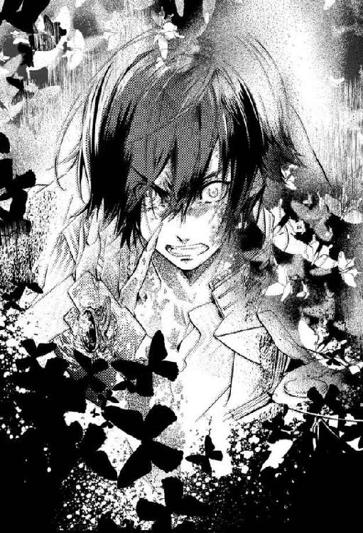
そんな場違いなことに思いを巡らせていたアイは、ふと、燃え盛る黒炎の中に金色に煌く何かを見つけた。
異形の右手首。そこに見慣れた金細工のアクセサリーが光っている。
（えっ......!?）
声には出さず、アイは大きく瞳を見開いた。それとほぼ同時に、漆黒の化け物も目を開ける。
焼け爛れた瞼の奥に覗く、燃えるような真紅の瞳。
......間違いない。あれは──緋影だ。
「き......サ、ま、ラぁあああああああああああ!!」
憤激した館の主の咆哮に、館全体が鳴動する。
「ちっ、しつけぇんだよ......！」
同じ結論に至ったらしいタクヤが毒づく。
緋影は苦悶に喘ぎつつ、鋭い眼差しでアイたちを睥睨する。視線だけで人を殺せそうな目。しかし彼は何故かその場から動こうとも、銃を生み出して攻撃を加えようともしない。
（動かない......？ ううん、きっと動けないんだ──）
緋影の身体にはゾッとするほどの数の黒蝶が群がり、彼を奈落へ引きずり込もうとしている。緋影はそれに対処するのに手一杯で、とてもアイたちを相手取る余裕はないのだ。
「ふザケる、な......！ ここマで来て、マんゲきょウ、万華鏡を......ッ!!」
緋影は全身を掻き毟り、身体じゅうを覆い尽くす黒蝶を握り潰し、振り払う。命の瀬戸際だ。闇に抗って生き残ろうとする緋影の意思と、奈落へ連行しようとする狭間の力が激しく拮抗する。
「僕ハ、復讐......今度こそ、あいつラへの復、讐......」
固唾を呑んで見守るアイたちの耳に、突然「パンッ！」と何かが弾け飛ぶ音が聞こえた。
直後、緋影が悲鳴じみた声を上げる。彼の右手首からどす黒い炎が一気に膨張し、炸裂。そして──
「それ」は突如として凶悪な本性を表した。
大理石の床が轟音と共に崩落する。崩落？ いや、消滅だ。緋影を中心にして、まるでコンパスの円をくり貫くように辺りの岩盤が消滅した。大広間の中央にぽっかりと開いた巨大な穴は、出現と同時に引き潮の如き強烈な旋風を巻き起こし、銃撃戦で生じた無数の瓦礫を宙に舞い上げ、中心にいた緋影ごと地の底へ吸い込んでいく。
「......ッ！」
アイは咄嗟に身を伏せた。吹き荒れる狂風が、髪を、衣服を思うさま翻弄する。声を上げる余裕すらない。
そんな時間が、どれくらい続いただろう。
一連の騒乱が治まった頃、アイは恐る恐る顔を上げた。
「............」
緩慢な仕草で周囲を見回す。室内は一転、不気味なほどの静寂に包まれていた。
「っ......何だってんだ、一体──」
アイと同様、身体を低く伏せていたタクヤが起き上がり、呻く。アキやカズヤも同じように身を起こし、眼前の光景を唖然とした表情で見つめている。
仲間たちの無事な姿に、アイはひとまず安堵の息をついた。
「それ......穴？ どうなってんの？」
アキが重々しい動きで身を乗り出す。どうやら彼の位置からは見えにくいらしい。
脚を負傷したアキに代わって、カズヤが慎重に大穴の淵へと歩み寄る。眼下をしげしげと凝視した彼は、やがて小さく頭を横に振った。
「......わからない。でも、下の階に落ちたってわけじゃ、ないみたい......」
長年この館にいたカズヤでさえ、その正体を図りかねて首を傾げている。アイも改めて、目の前に現れた大穴を見つめた。
先程までの騒々しさはどこ吹く風。唐突に姿を現したその穴は、あたかも最初からそこに存在していたかのように、何食わぬ様子でぽっかりと口を開いている。
真上にいた緋影と、万華鏡を呑み込んで。
「もしかして......これが」
「奈落です」
アイの脳裏を過ぎった予感を、背後から響く少女の声が肯定した。
その鈴の音のような声音には覚えがある。
「ウサギちゃん！」
振り返ると、広間の入り口に赤い瞳の女の子が立っていた。
アイ以外の人間も居合わせているにもかかわらず、彼女は代名詞でもあるウサギの面を身につけていない。そのことに気づき、アイは少しだけ驚いた。
ウェーブがかった金髪を揺らし、ウサギは真っ直ぐに部屋を横切る。訝しげに眉を顰めるアキたちをよそに、彼女は緋影の消えた穴へと小走りに近づいていった。
「ウサギちゃん......ごめん、私──」
「いいんです紅百合さん。皆さんの目的を優先してほしいと言ったのは私です。それに、謝るべきは約束に間に合わなかった私のほう......どうか気を落とさないでください」
アイの言わんとしていることを素早く察し、ウサギが頑なな口調で告げた。
「......お兄様は、ここに？」
断崖絶壁を見下ろす少女に、アイは黙って頷く。ウサギの愛らしい顔が痛ましげに歪んだ。
一方タクヤたちは、唐突に乱入してきた「館の主の使い」に非常に当惑しているようだった。アイが打ち解けた態度で接しているため、余計に混乱しているのだろう。ウサギに強い警戒の眼差しを送りつつも、取るべき手段を選べずにいる。
「奈落って......前にウサギちゃんが話してた──」
「そうです」
ウサギは大きく首肯した。
「普通の人が普通に逝く『あの世』とは違う、虚無の空間。絶望に染まった魂が堕ちていく最果ての世界......それが奈落だと聞いています。天も地も、終わりもなくて......一度堕ちたが最後、どうなってしまうかわからない未知の空間」
少女の強張った声に、アイは思わず固唾を呑んで身構える。
「そんなものが、どうしてここに......」
「......皆さんの戦いを見ていないので、断言はできませんが──」
険しい顔つきのまま、ウサギは言葉を続ける。大切な人の窮地にも取り乱すことなく凛としたその横顔は、どことなく冷静沈着な彼女の兄、緋影を思わせた。
「きっと、お兄様が溜め込んできた負の力が呼び寄せたのでしょう」
「負の力......」
「この世界で長い時を過ごす間、お兄様は常人の何十倍もの穢れを浴びてきました。それはお守りであるアクセサリーに吸収され、溜め込まれていましたが......恐らく、限界だったのだと思います」
確かに奈落が出現する寸前、アイは硬質な何かが砕け散る音を聞いていた。
あれは、内包する負の力に耐え切れなくなった緋影のアクセサリーが、粉々に四散する音だったのだ。
「......ところで紅百合さん。万華鏡はどちらに？」
緋影が何より大事にしていた至宝。それが失われていることに気づき、ウサギが周囲に視線を巡らす。しかしどこにも見当たらない。
「まさか......」
「......うん。たぶん、緋影くんと一緒に......」
奈落に吸い込まれてしまったのだと言外に告げると、ウサギは「そんな......」とその場に立ち尽くす。ここに来て初めて見る、彼女の打ちひしがれた姿。
......が、それも束の間のこと。
ウサギはすぐに面を上げ、決然とした瞳で順々にアイたちを見回した。
それから全員に向かって深々とお辞儀をする。
「皆さん、長らくご迷惑をおかけしました。私たちがしてきたことを思えば、どんなに謝罪しても、とても許されるものではありませんが......」
頭を垂れたままつらつらと叙述した少女は、そこで再び顔を上げた。
「どうか、償う機会を私にください。私はこの館の案内人......せめて館の最後の客人である貴方がただけは、然るべき世界まで送り届けてみせます」
悲壮感すら漂う峻厳な決意。そこに異論を挟める者など、誰もいはしなかった。
「必ず万華鏡を取ってきます。それまで皆さんもう少しだけ、ここでお待ちください」
「......待って」
たったひとりで穴の中に身を投じようとするウサギを、アイの手と声が制す。
「私も行く。何が起こるかわからない場所に、ウサギちゃんひとりを行かせられないよ」
「ですが──」
戸惑ったウサギは、落ち着きなく辺りに目線を彷徨わせる。
「......やっぱり駄目です、紅百合さん。危険すぎます」
「だったら尚のこと一緒にいたほうがいいよ。それに......」
ウサギの華奢な背中に手を添え、アイは巨大な空洞を見つめた。
ブラックホールを連想させる空虚な闇。そこから吹き上げる生温かい微風が、撫でるように頬を掠めていく。
「ほら、中から風を感じるでしょ？」
「......はい」
「まるで外の世界に繋がってるみたい。......怖いけど、それだけじゃない。果てがない奈落の向こうにも、何かがあるような気がするの。それがわかれば、きっとこの闇からも戻ってこられる」
ウサギの大きな瞳を正面から見据え、アイは言った。
「行こう、ウサギちゃん。ウサギちゃんは遅れてなんかない。約束は守れてる。今からでも間に合うよ」
励ますように笑みを浮かべ、右手を差し出す。無言のままアイを見上げるウサギの目が、本当にいいのかと尋ねてくる。こちらも黙って頷けば、彼女はきゅっと唇を噛み、差し出された手を取った。
「おい、アイ！」
「待ってアイちゃん！」
仲間たちに背を向けたアイを、タクヤとアキが呼び止める。
銃弾を受け、動くこともままならない彼らは、言うことを聞かない肉体の代わりに、強い意志を宿した眼差しでアイを制止した。
「......アイ」
仲間の意を汲み取ったのか、傍らのカズヤも口を開く。
「俺も、一緒に......一緒に行く！」
幼子にも似た仕草で、カズヤはアイの袖を摘む。後ろにいるタクヤたちも、険しい表情でそのやり取りを見守っていた。
「俺、まだ戦える。......戦うしかできない。アイのこと、今度こそちゃんと守るから......」
「カズヤくん──」
自分には、この館で身につけた戦いの技術しかないのだと。それを発揮できないなら、もはや存在する意味など何もないと。カズヤの瞳は、彼自身が見出した悲壮な価値観を保つべく揺れていた。
......そんなふうに思う必要なんて全くないのに。
「戦うだけじゃないよ。カズヤくんは、もっと大事なものを他にもいっぱい持ってる」
カズヤは不思議そうな顔をした。到底信じられないとでもいうふうに。
「本当だよ。もしカズヤくんが戦えなくなっちゃったとしても、それで私たちが離れていったり、置いていったりすることはない。ちゃんと背負って連れていく」
それに、自分たちは現世へ戻ると決めたのだ。この殺伐とした館と別れ、元いた世界で平凡を愛して生きていくと。
カズヤが拠り所としている「戦い」の場は、そこにはない。
「私なら大丈夫。ウサギちゃんがいてくれるし、カズヤくんが守ってくれたリボンもあるし。ね」
「アイ......」
「それより、タクヤくんとアキちゃんの傍にいてあげて。この場所も安全かどうかわからないし......ふたりとも怪我がひどいから、何かあった時に自分で身を守れない」
アイが肩越しにタクヤたちを見遣ると、カズヤもそれに倣って後ろを振り返った。彼らとアイ、どちらを優先すべきか。それは苦渋の選択だったに違いないが、カズヤは一瞬だけきつく目を閉じた後、すぐに決断を下した。
「......わかった。タクヤたちのことは任せて」
迷っている時間はない。恐らくそう考えたのだろう。カズヤの出した答えに、アイは心の底から感謝した。
「でも、約束。......絶対、絶対、戻ってきて」
アイの袖を掴む手に、ぐっと力が込められる。
「うん、約束。ありがとう、カズヤくん」
送り出すと決めたカズヤの表情に、不安や迷いの色はなかった。あるのはただ、絶対的な信頼と祈り。
「......カズヤさん」
それまでひと言も発することなく佇んでいたウサギが、不意にカズヤを見上げて口を開いた。
「貴方には、どう謝ったらいいのか......本当に言葉も見つからないのですが──」
「............いい」
いつもどおり、口数少なにカズヤは応じる。唇にほんの微かな笑みを湛えて。
「......お前もお面、取れたんだな」
瞬間、ウサギは面食らったようにピタリと動きを止めた。が、すぐに言われたことの意味を理解したらしく控え目にはにかんでみせる。
両者の関係を思えば、満面の笑顔を交わすことはどうしても憚られたのだろう。
「カズヤさん。現世に戻ったら、どうかこの館で過ごした何倍もの時を笑って過ごしてください。......ご多幸をお祈りしています」
お元気で、とひとつ頭を下げてから、彼女は無言でアイに目配せしてきた。アイもすかさず首肯で応える。
「それじゃあ、行ってきます」
ウサギの小さな手をしっかりと握り、アイは底知れぬ闇の中へと身を躍らせた。
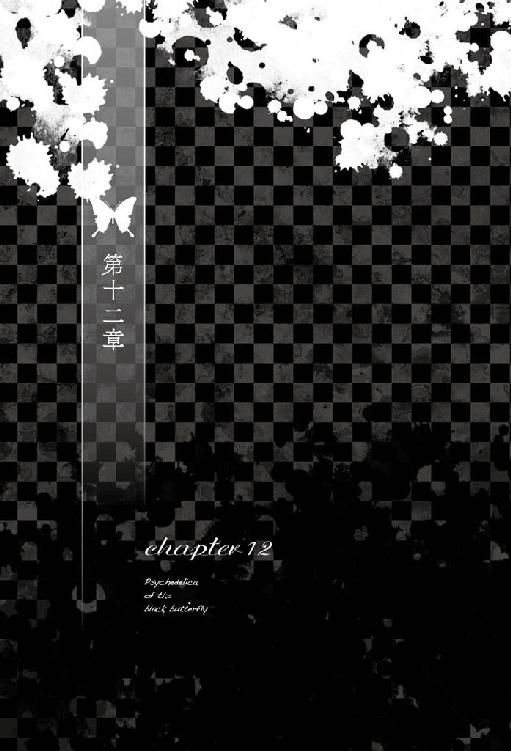
第十二章 黒蝶のサイケデリカ
大穴に飛び込んだ直後、視界は暗黒に染め上げられ、何も見えなくなった。着地の音もしなければ、地面に触れた感触もない。落下が終わったのか、はたまた続いているのか。それすら定かでなかった。
目を開けているはずなのに、閉じているような。立っているはずなのに、水中を漂っているような......そんな寄る辺のない不安定な感覚が全身を包む。
目印になり得るものが何もないせいで、上も下も右も左もわからない。方向感覚はたちまち失われ、自分がどこにいるのか、どこへ向かうべきなのかも見当がつかなかった。
このままこの世界に身を置いていたら、遠からず正気も失くすだろう。──ひとりだったなら。
「ウサギちゃん、大丈夫？」
繋いだ手の確かな温かさに内心で安堵しつつ、アイは傍らの少女に尋ねる。
「は、はい！ 大丈夫、です」
圧倒されたような声が返ってきた。ウサギの細い指先に、少しだけ力がこもる。その感触と皮膚を通じて伝わってくる熱が、アイに『自分』以外の存在を教えてくれた。
「......真っ暗だね。ウサギちゃんの部屋に通じる道も、こんな感じだったけど......」
あそこには石段を踏みしめる感覚と、靴音があった。そのどちらもここにはない。
「真っ暗......というわけでもないですよ」
ウサギの意外な返答に、アイは「え？」と問い返す。
「あ、紅百合さんからは見えないかもしれません。ええと......髪留めが、光っているんです。紅百合さんの。ほんの微かにですが」
「そうなの？」
ウサギの言うとおり、アイ自身にその光は見えない。恐らく角度的な問題だろう。自覚のないまま、そっとヘアピンに触れてみる。
「もしかしたら、奈落のどこかにある万華鏡に反応しているのかも......」
ウサギにしては珍しく根拠のない台詞だ。が、他に進むべき道の手掛かりになりそうなものも見当たらない。
「......とりあえず、歩いてみようか」
こうして立ち尽くしていても仕方がないと、アイは傍らの少女を促す。この世界で「停滞」は危険だ。何がなくとも動かねばならない──そう直感が告げていた。
そして、どうやらウサギも同じ予感がしていたらしい。
「そうですね......行きましょう」
今はただ、唯一の手掛かりを......手掛かりと思しきものを信じて進むしかない。
互いにきゅっと指を握り直し心を決めると、ふたりは道なき道を歩み始めた。
なんの手応えも感じられないまま、アイたちはただ足を動かし続ける。ずっと同じ場所で足踏みしている気もするし、ずいぶん遠くまで来てしまった気もする。
黙っていると余計なことを考えてしまいそうなのは、ふたりとも一緒のようだ。アイたちは互い違いに言葉を交わしながら歩を進めていた。
「......紅百合さん。ひとつお聞きしてもいいですか」
「うん。なに？」
「先程、広間に鉤翅さんの姿が見えませんでした。......彼は──」
聞かずとも、あらかた答えを予想しているかのような口ぶり。
アイは「うん」と小さく微笑んだ。
「私が、撃ったの。緋影くんごと......。ナッちゃんの、最初で最後の我儘だったから......」
「......そう、ですか」
ウサギはさして驚きもせず、平静として事実を受け止めたようだった。淡々とした声に、ただ少しだけ哀惜を滲ませて。
「......愛する人との狭間での再会など、本来なら望むべきものではありません。......けれど」
ゆっくりと一拍置いて、ウサギは再び口を開いた。
「いけないことと知っていても......私は、お兄様に会えて嬉しかった」
「............」
「きっと鉤翅さん──ナツキさんも同じ気持ちだったと思います。たとえ束の間だろうと、貴女と共に時を刻めたこと......それこそが何よりの餞だったのだと」
「............うん」
ナツキと同じく待ち人を持つウサギの言葉を、アイは静かに瞑目し、噛み締めた。
そうだったら嬉しい。
仕組まれた出会いも、偽りの日々も、ナツキにとって全て意味のあるものだったとしたら、本当に。
「......髪留めの光が、さっきより強くなってますね。どうやらこの方向で合っているみたいです」
「そっか。じゃあ、もうちょっとこのまま進んでみよう」
微かな光を頼りにアイたちは歩き続ける。途方もない闇の中でも、ふたりの気勢はまるで衰えを知らない。足取りは依然、しっかりとして勇ましい。
気力を削がれない理由は明らかだ。一見、先行きの見えない旅路だが、この道行きには必ず終わりがあることを、アイもウサギも理解していた。
ふたりが目指すのは、あるかどうかもわからない「奈落の果て」ではない。
確かにこの世界に落ちたはずの万華鏡と......それを持っているであろう青年だ。
（............？ あれ？）
しばらく無心で歩を進めていたアイは、周囲の微かな異変に気づいて辺りを見回した。
「ねえウサギちゃん。なんか急にひんやりしてきたような......」
「紅百合さんもそう思いますか？ なら、私の勘違いじゃないんですね」
互いの共感を得たふたりは、そこで一旦立ち止まる。
「風が吹いているわけでもないのに......なんでしょう、この寒さは」
「うん。......変な感覚。ここに立ってるとすごく鳥肌が立つのに、なんとなく嫌な感じがしない」
冷気に曝されたことによる生理的な鳥肌とは、少し違うように思えた。
もっと内側から湧き上がるような。
肉体ではなく精神を──奥底の琴線を直接揺さぶる「何か」が迫っていると、心がざわついているような。
「......あ......」
ぴちゃん、と。
たまたま上を向いていたアイの頬に、水滴らしき何かが当たった。
その直後、聞いたことのない声が頭の中に響き、色褪せた映像が一方的に映し出される。
そこは、どこかの洋館のようだった。
可憐な装飾が施された、子供部屋と思しき場所。その真ん中に、ひとりの女の子が座っている。
緩くウェーブがかった色素の薄い髪。大粒の瞳。膝には開きかけの絵本。
少女は戸口に立つ『こちら』の存在に気づくなり、花が綻ぶような笑顔を見せた。
「お帰りなさい、お兄様」
本を閉じる間ももどかしげに立ち上がった彼女は、ぱたぱたと『こちら』へ駆け寄ると、細い腕を目一杯伸ばして抱きついてきた。
「お兄様、私、約束どおりちゃんといい子でお留守番してたのよ。今日は泊まってゆけるの？ それとも、またすぐに出かけてしまう......？」
少女がおずおずと見上げてくる。赤い瞳。色の白い肌。お人形のように整った面立ち。
それが『誰』なのかを理解した瞬間、視界が弾けた。
「──ッ、は......！」
はっと我に返る。何が起きたのかと慌てて周囲に視線を巡らせるも、そこは変わらぬ闇の世界。
「......何だったんだろう──今の」
「記憶、です」
独白めいたアイの台詞に、ウサギがぽつりと答えた。
「あれはお兄様の記憶。私たちが......まだ現世で生きていた頃の」
穏やかでありながら、ウサギの声音は微かに震えていた。泣くのをどうにか堪えているかのように。
そうしている間にも、水滴はぴちゃん、ぴちゃんと音を立て、奈落のあちこちに波紋を広げていく。
（これひとつひとつが、全部......緋影くんの記憶なんだ）
先ほど頬に落ちてきた水滴を、アイは指先でそっと拭った。
そして──ぴちゃん。ぴちゃん。
続けざまに頬に水滴を受けたアイは、次に来るはずの『記憶』に備えて目を閉じた。
自分の知らない、緋影の過去に想いを馳せる。
（......教えて、緋影くん）
本当の貴方を──
黒く焼け爛れた身体を引きずって、彼は尚も歩いていた。
「う......くっ、は......！」
乱れた長い黒髪が視界を遮る。それを払うこともせず、一歩、また一歩と何もない足元を踏みしめていく。負の力に侵食された肉体は見るも無残で、剥き出しになった足は獣じみた変形をしていた。指先に力を入れる度に鋭く突き立つ長い爪。それを支えに、倒れそうになる身体を辛うじて維持する。
辺りは見渡す限りの闇。
（ここは......どこだ）
この光に見放された世界が何なのかも、自分がそこに落ちた理由も、彼は既に忘却してしまっていた。
ただ、両腕で抱き締めるように抱えている金色の『何か』。それだけは決して手放してはならないと、彼の中の誰かが執拗にがなり立てていた。
この美しい金色の『何か』を奪おうと、追っ手が迫っているのは知っている。もしも彼らに奪われたらどうなるか。わからない。わからないが、ただ怖かった。
この名前も使い方も知らない『何か』だけが今の自分の全てなのだと、彼は──館の主と呼ばれていた男は理解していた。
（僕は......誰だ？ なんのために、こんなことをしている......？）
雑然とした頭の中を、答えを求めて探っていく。......ああそうだ。俺の本当の名前はユウキ。十年越しの論文が完成間近というところで僚友に殺され、研究資料ごと奪われた。無念だ。悔しい。
いや違う。今のは偽物だ。この館で咀嚼してきた有象無象の残りカスにすぎない。
僕の本当の名前はシュウイチ。伝染病で隔離され、病棟とも呼べぬ小汚い部屋で虐待されて死んだ。憎い。あの施設の奴ら全員、呪い殺してやる。
............待てよ、それも別人の記憶だ──
焦げた皮膚と共に、偽りの記憶も剥げ落ちていく。
塵や芥のようにボロボロと崩れ、取り除かれる虚像。
そうして最後に残ったのは、元始の記憶。
彼が彼になる前の記憶。
（ああ、そうか......思い出した）
僕の最初の名は──
「その顔をあたしに見せるな！ あっちへ行け!!」
ピシャリ、と耳元で高い音が弾ける。身体がわずかに浮く感覚がして、横向きに畳に転がった。直後、頬に燃えるような熱さとヒリヒリとした痛みを感じ、彼は自分が激しく打ち据えられたことを知る。
伸び放題に伸びた前髪の隙間から、暴力を振るった相手を無言で見上げた。乱れた着衣と、そこから覗く痩せた四肢。手負いの野獣めいた鼻息を上げ、その女性は肩を荒く上下させている。
それまで俯いていた彼女はこちらの視線に気がつくと、ギラついた眼を向けてきた。
「なんだその目は......馬鹿にしてるのか！ お前も！ あたしを!!」
被害妄想だらけの言いがかりをつけて、女が大股で近づいてくる。胸倉を掴まれ、今度は逆の頬を殴打された。彼は声を上げない。抗議は意味を成さないし、泣けばもっと殴られる。ただ歯を食いしばって無抵抗を貫くより他にない。
しばらく彼を叩き続けていた彼女だが、やがて飽きたのか、無造作に拳を広げて彼を放した。女は力なく、ぺたんとその場に崩れ落ちる。獰猛な息遣いが、啜り泣きへと変わっていく。
金切り声を上げて突っ伏した女を、彼はやはりじっと見つめていた。それ以外に術がないのだ。
同情は反感を買い、慰めは拒絶され、黙って寄り添うことすら許されなかった。
実の母親であるはずの人。しかしその腕は、彼を抱き締めることではなく痛めつけるためだけに使われ、唇は子守唄の代わりに呪詛を紡いだ。瞳に宿るのは愛情ではなく敵意だった。
......きっと望まず身籠ったのだ。自分という存在は、彼女にとって重荷と苦痛でしかないのだろう。毎日のように癇癪を起こし、彼女はままならない人生への当てつけの如く我が子を嬲った。
暗く閉ざされた日々が、これから先もずっと続いていくのだと思っていた。自分が大人になる未来など想像もつかない。彼女が死ぬか、自分が死ぬか。それしか終わる手段はないように感じられた。
そうして何年かの月日が流れた頃、転機は唐突に訪れた。
異国風の格好をした見知らぬ男が、彼の住むあばら家を訪ねてきたのだ。
シワひとつない立派な洋装と、洗練された身のこなしが印象的な紳士だった。貧民街で暮らす自分とは住む世界の違う人種だと、ひと目でハッキリわかる。
実の父親だと名乗ったその男は呆然と立ち尽くす彼の腕を取り、その場を立ち去ろうとした。強引な手法に当惑していると、男は「母親とはもう話がついている」と、背広の内ポケットから取り出した札束をぽいと畳の上に放り投げた。
見たこともない枚数の紙幣に驚愕すると同時に、彼はその金の意味するところを知る。
（ああ、僕は......）
売られたのか。もともと少ない私物を纏める時間すら与えず、着の身着のまま見知らぬ男に連れて行かれる様は、迎えに来たというより拉致に等しかった。
数日の旅を経て辿り着いたのは、見渡す限りの森と湖に囲まれた長閑な場所。一幅の風景画を思わす自然の中に、真新しい西洋風の建物があった。
一国主の居城であっても遜色ないその屋敷が、今日から彼の家になるのだという。天と地がひっくり返るような人生の大逆転。想像だにしなかった展開が現実のものだと信じられず、彼はただ眼前の光景に魅入られる。
あばら家に残してきた母のことが頭から消え去るほどの衝撃。実父と名乗る男への不信感が一瞬だけ途切れ、この館で始まる新たな暮らしに胸が躍った。
しかし、それも束の間のこと。
洋館に足を踏み入れ、招かれるまま奥へと進むに従い、彼の心に再び不気味な暗雲が立ち込めていく。
清楚な外観とは裏腹に、白亜の館の内観はひどく歪で不穏だった。有り余る金にモノを言わせてあらゆる贅を詰め込んだと言わんばかりの装飾は、貧しい育ちの彼には馴染みがなく、居心地の悪さを感じさせた。
広く取られた窓からはたっぷりと陽の光が注いでいるのに、歩くにつれてどんどん魔境へと迷い込んでいく心地。このままどこへ行くのかと不安を抱き始めた矢先、先導する男がある扉の前で立ち止まる。
屋敷の最奥と思しきその場所は、大勢いる使用人の行き来もなく、押し殺したような静けさの中にあった。明らかに他とは気配が違う。何か特別なものが隠されているのだと直感した。
前置きもせず、男が扉を押し開く。
白を基調とした繊細な作りの家具に囲まれ、ひとりの少女が座っていた。柔らかそうな絨毯の上でしゃがみ、読みかけと思しき絵本を開いたまま、少女は大粒の瞳を驚きに見開かせてこちらを凝視している。
「この子は今日からお前の兄になる。仲良くしなさい」
その台詞で、彼は自分たち三人を繋ぐ関係性を知った。
「よろしくお願いします──お兄様」
「......よろしく」
かくして、新天地での新たな人生が幕を開けた。
父が雇った家庭教師たちによる詰め込みの英才教育と......そして、継母となった女の陰惨な虐めが始まった。
継母の容易に他を寄せ付けない印象の顔立ちは冷たくも美しく、身なりも相応に整っていたが、性格は実母以上に醜悪だった。三度の飯に虫を混ぜるなど日常茶飯事。とても食べられないと残せば「食べ物を粗末にするなど罰当たりな」と罵声が飛び、それはすぐさま文となって父のもとへと報告された。食事を拒んだ罰として、三食の飯を与えられないことも珍しくなかった。
箪笥を開けてみれば仕立てたばかりの衣装がずたずたに引き裂かれ、教師から熟読を指示されていた書物がいつの間にか捨てられている......そんなこともままあった。
こんな仕打ちを受ける理由に、彼も心当たりがないわけではない。
継母からしてみれば、彼の存在は夫の不義の証そのものである。あまつさえそれを跡継ぎとして迎え、我が子のように育てよという父の「命令」は、妻として女として母として、最悪の屈辱だったに違いない。
この館で、彼女が女手ひとつで守ってきた平穏な暮らし。血の繋がらない息子の登場は、それを無慈悲にも一撃で粉砕した。憎くて仕方なかったろう。
早朝から夜遅くまでびっしりと組まれた授業の合間を縫って、彼は妹の部屋を訪ねた。
兄に対する母の陰湿な行いを、少女はまるで知らないようだった。生まれつき病弱な彼女は私室からほとんど出ることもなく、またそこを訪ねる者も少なく、同じ屋根の下で起こっていることもほとんど把握していないらしい。過保護というのとはまた違う。完全に蚊帳の外だった。
......が、皮肉にもその隔離状態によって、彼女が実の母のおぞましい本性を知らずに済んでいるのも確かだ。それはある種の救いかもしれなかった。知らなくていい。報せようとも思わない。
一方、滅多に顔を見せることのない父親は、館に戻ると欠かさず息子の出来栄えを査定した。家庭教師たちに細かく注文をつける傍ら、商いの場に息子を連れ出し、自ら帝王学を教えることもあった。
徹底した実利主義者。世の中の全てを算盤で測る悪魔的頭脳の持ち主──それが父だった。至るところで辣腕を発揮し収益を増やしていくも、他者を踏みつけ、法の網目を嘲笑いながら抜ける手法は、利益と同時に同業者の反目も多くもたらしていた。
名家の長男となった彼には、父のやり方を丸ごと踏襲することが求められた。父や義母にとって、彼に「跡取り」以上の価値がないことは明白だ。彼らに「都合のいい存在」であること......それだけが、彼があの家で市民権を得る唯一の方法だった。
成績優秀、品行方正。とにかく良い息子、自慢の跡継ぎを演じ続ける。最初こそ少し息苦しかったものの、すぐに何の抵抗もなくなった。
そんな中......ただひとり、腹違いの妹だけは何の打算もなく彼のことを慕ってくれた。家庭内や俗世に渦巻く仄暗さから完全に隔たれた少女。彼女と触れ合うことで、彼は身の内に溜まる暗澹とした感情が浄化されていくのを感じた。
振り返る暇もないほど忙しない日々。いつしか貧民街に置いてきた実母のことも忘れ、彼はこの家の長子としての務めに没頭した。
......ふと、あばら家を去る際の出来事を思い出す。
父が「息子」を得るのと引き換えに置いて行った札束。極貧の只中にあった当時こそ目を丸くして驚いたが......今にして思えば、人ひとりの値段としてははした金だ。あれが自分という人間の価値だったのだと、さしたる感慨もなく彼は思った。これからの人生も含めた、彼という命の値段......
やがて努力は実を結び、彼は極めて優秀な上流階級の長男として衆目を浴びるようになっていく。社交界への顔見せも果たし、父が主催する悪趣味な夜会に参加して客を持て成すことも増えた。
全ては順調に見えた。しかし彼の躍進と逆行するかの如く、身体の弱い妹は次第に床に臥すようになる。
長年妹を診てきた主治医すら何の手立ても打てないことに業を煮やし、彼は自ら医者と薬を探し始めた。
名医がいると噂に聞けば遠方まで足を延ばし、様々な薬を試した。種類が変わったり量が増えたりする度に今回こそはと願ったが、落胆と失望だけが繰り返された。それどころか予期せぬ副作用が現れることもあり、彼はまるで大事な妹を実験台にしているかのような感覚に苛まれた。
数年後、彼は父の仕事のツテを頼って異国の医学に助けを求めた。幸運なことに薬はすぐに見つかった。しかし新たな問題が頭をもたげる。舶来の薬は非常に高価で、彼の家の財をもってしても継続的に手に入れることは困難だった。
不幸は続く。父が事業に失敗し、莫大な借金を作ったのだ。もともと人望の乏しい父のこと。財力を失った途端、取引相手はもとより付き合いの深かった親戚にまでも一斉に手のひらを返された。それこそ待っていましたとばかりに、周囲は一家の転落を遠くから嘲笑した。
薬探しの旅が一息ついた直後、金を無心する日々が始まる。豪華な家具や美術品でごった返していた屋敷は、すぐに見る影もなくなった。妹の身の回りの物を残し、売れるものは肉叉一本に至るまで売った。訪ねる者もなく、かつて華やかな夜会が催された広大な館は伽藍堂と化した。
心身ともに疲弊しきっているはずなのに、それでも妹と二人でいる時だけは、ただ喜びと安らぎだけがあった。
（この子といれば、僕はきっと平気だ）
枯れ果てかけた勇気と気力が満ちていく。もう動けないと思った足で再び立ち上がる。何度も何度も。
外の世界での苦労など、無論おくびにも出さなかった。醜い怒りや憎しみは、あどけない妹には似合わない。そんなものは全て自分が引き受けるから、彼女にはこの静穏な部屋の中で、綺麗なものだけを見ていてほしかった。
（この子を日向に生かすためなら......僕は日陰で構わない）
「お兄様......」
霞んだ目をとろんとさせ、妹が夢うつつといった様子で呟く。
「大丈夫だよ」
弱々しく伸ばされた手を、彼はしっかりと握った。
「大丈夫。もう少しの辛抱だ。必ず助かるから......」
「うん......。叔父様が、薬の手配をしてくださったのよね......」
蒼白の顔で淡く微笑む彼女に、彼は力強く頷く。
「ああそうだ。だからもう何も心配いらないよ」
「......ねえお兄様。昔読んでくれたあのお話、憶えている？」
「うん？ ......さあ、どの話かな。君には毎日のようにせがまれて、それは沢山の本を読んで聞かせたからね」
「ふふ......お兄様って時々、意地悪よね......。私にはいいけど、他の人には控えてね？ じゃないと嫌われてしまうわ」
「別に構わないさ。君以外の人間には、もうすっかり嫌われているから」
眠りに落ちるまでのひと時を、ふたりは他愛ない会話で埋めていく。
幼い頃、同じ布団に包まってそうしたように。
「......黒い蝶と白い蝶のお話よ。憶えているでしょう？」
「もちろん。君の一番のお気に入りだった。表紙が擦り切れるまで読んだ覚えがあるよ」
今だって暗唱できるくらいだ、と彼が悪戯っぽく笑うと、妹もつられるように小さく微笑んだ。しかしすぐに儚げな顔つきに戻り、彼女は微かに俯いて続けた。
「サイケデリカみたいな世界が、本当にあればいいのに......大切な人と永遠に別れることのない、祝福された死者の楽園......幸福だけに満たされた、温かな光の世界」
「............そうだね。でも、たとえそんな世界があったとしても、君がそこに行くのは早いよ」
「うん、わかってる。私の病は、お兄様が絶対に治してくれるもの」
布団の上に置かれた少女の手が、弱々しく握り込まれた。
「お兄様がいてくれて、私の人生は幸運だった。でも......お兄様は運が悪かったと思う。お父様に連れて来られたせいで、この家や、私のために自分の時間を使ってしまって......」
「そんなことはないよ。父上に見込んでもらえなければ、僕はあの貧民街で野垂れ死んでいたかもしれない。この家に来て、僕は隙間風の吹かない家や満足な食事、高い教育を受けられるようになったんだ。それに何より、僕を慕ってくれる妹ができた。僕は自分の運命に感謝こそすれ、何も不満はないよ」
強がりに聞こえたかもしれないが、それは概ね彼の偽らざる本心だった。けれど彼女は頑なに目を閉じ、首を横に振った。
「......いつか──お兄様には、自分の人生を取り戻してほしいの。何にも縛られることなく、自由に......」
少女の赤い瞳が彼を仰ぐ。
「幸せに、なってほしいの」
「......ああ、わかった。君が良くなったら、そうしよう」
「............うん」
妹は小さく頷いた。そうしてようやく安心したのか、喋り疲れたのか......彼女は目尻から一雫だけ涙を零すと、そのまま何も言わずに眠りに落ちる。
「──......っ！」
瞬間、彼は堪え切れずに項垂れた。歯を食いしばって嗚咽を噛み殺す。真っ白いベッドにぱたぱたと涙の粒が落ちた。
（ごめん......ごめん......っ！）
君が辛いことも、苦しんでいることも、とっくに疲れ果てていることも知っている。それでも僕は、君にまだ生きていてほしいんだ。
君のことを一生懸命に考えているつもりで、本当は全部、僕の我儘なんだ。他の誰でもない僕自身が、どうしようもなく君を失いたくないだけなんだ。
そのために、小さな体があんなに痩せ細るまで頑張らせて......
（なんて......愚かなんだろう）
柱時計の分銅が、カチリ、コチリと無常に時を刻んでいく。
それを遠目に眺めながら、時間なんて止まってしまえばいいと思った。
未来なんかいらない。
このまま世界が終わればいいのに。
......一体どのくらいそうしていたのか。
どこからともなく小鳥の囀りが聞こえた気がして、彼ははっと瞼を開いた。
不覚にもベッドに突っ伏して眠っていたらしい。慌てて身を起こし、すぐ傍で横になっているはずの妹の姿を確かめる。
表情は穏やかだ。布団に包まれた痩躯の胸の辺りが静かに上下しているのを見て、彼はほっと溜め息をつく。
ナイトテーブルの上に置いた懐中時計を見遣ると、時刻は朝の六時前。開放的なガラス窓からは、薄手のカーテンを透過して白みがかった光が差し込んでいる。そろそろ朝食の支度をする頃合だ。
「............ん──」
小さく呻いた妹が、わずかに身体をよじり、目を開けた。
「おにいさま......？」
「ごめん、いつの間にか寝てたみたいだ」
言いながら、彼は妹に水を飲ませようとコップを手に取った。が、水差しを持ち上げたところで「ああ」と呟きその手を止める。
「水がすっかり温くなってしまってるね。換えを用意するよ。すぐ戻るから、少しだけ待っていて」
少女はほんのわずかに頷いたように見えた。彼は笑顔で彼女の髪をひと撫ですると立ち上がり、足早に階下の台所へと向かった。
ややあって妹の部屋に戻ると、再びベッドサイドの椅子に掛けて妹に話しかける。
「お待たせ。寝覚ましに一口くらい飲んだほうがいい。すぐに朝食の支度もするよ」
だが、返事がない。怪訝に思った彼がコップを片手に妹の顔を覗き見ると、彼女は穏やかな表情で目を閉じていた。どうやら彼が留守にしたほんの短い間に再び寝入ってしまったようだ。
仕方ないな、と微苦笑を浮かべ、彼は妹の安らかな寝顔を見つめる。しかし......
「......？」
奇妙な違和感があった。全ていつもと同じに見えて、決定的に「いつもとは違う」と、彼の中の何かが目の前にある異変を報せる。忍び寄る不安に急き立てられ、彼は妹の名を呼んだ。
一度。二度。
やはり返事はない。
「............」
唇が震える。歯の根が合わずカチカチと音を立てる。
彼は痙攣したように戦慄く手を動かして、恐る恐る妹の頬に触れた。温かい。柔らかい。
束の間の安堵もそこそこに、指先を下へと移動させる。細い首筋に二本の指を添え、息を殺して様子を窺う。
「......──」
数十秒の無言の時を経て、彼はようやく妹の身体から手を放した。尻餅をつくように椅子に腰掛け、大きく見開いた眼で呆然と少女を凝視する。
柔らかな布団に身を横たえた妹は、やはりどこからどう見ても、眠っているとしか思えない。
ただ......息をするのを忘れただけで。
彼はもう一度妹の名を呼んだ。少女は応えず、ただ満ち足りた顔で微笑んでいる。
名前を呼ぶ。
もう一度。
もう一度。
もう一度。
「........................どうして、動かない？」
首を傾げ、阿呆のようなことを尋ねる。いつも煩いほどの時計の音が、おかしなことに全く聞こえない。
壊れたブリキを思わせる動作で、彼は卓上の懐中時計を見る。
針は午前六時──卯の刻を指し示していた。
何もかもが澄みきった、嘘みたいに美しい朝のことだった。
ひときわ大きな雨粒が、奈落を行くアイの身体に降り注ぐ。
しとどに頬を濡らす雫が緋影の涙雨なのか、それとも自分の涙なのか......アイにはわからなかった。
彼ら兄妹を襲った人生の不条理。そのあらましは、ウサギから聞いて知っている。
けれどあくまで「聞いた」だけだ。
奈落という空間がもたらす追体験は、アイの思い描いていた苦しみを途方もなく凌駕していた。
そして──この先に待ち受ける緋影の選択と末路もまた、アイは知っている。
暗闇に向かって伸ばした掌の上で、ぽたりと水滴が弾ける。
先程まで微かに温かかった雨粒は、氷のように冷えきっていた。
無人のベッドを見つめながら、彼は日がな一日ぼんやりと過ごしていた。
枕元には、妹が大切に眺めていた写真が、小さな額に収めて置いてある。果たしていつ撮影したものだったか。きちんと身なりを整えた兄妹が、揃って微笑を浮かべながらこちらを見ていた。
椅子に座った妹は白百合を、その後ろに立つ自分は鮮やかな紅百合を携えている。それらの様子からして、多分きちんとした写真館で撮影したものなのだろう。まだ、妹が動けなくなる前に。
「............」
写真の中の少女の頬に触れ、髪を撫でた。指先で繰り返し輪郭をなぞる。
彼女が息を引き取ったその瞬間、たったひとつの祈りは死に、言葉は意味を失くした。
多くの嘘をついてきた。けれど──
『大丈夫』。それだけは『嘘』であってはいけなかったのに。
（............嘘）
ふと、彼はあることを思い出して顔を上げる。
そうだ、薬。叔父が手配してくれた薬はどうなったのだろう。約束した期日などとっくに過ぎているし、妹が死んだ以上、もう必要ないものではあるが......
（......ああ、そうか）
七曜表を眺めながら、彼はようやく気がついた。
（僕は、騙されたのか......）
いくら待っても来ないはずだ。叔父は最初から、薬を用意するつもりなどなかったのだ。葬儀の席にあいつは来たか？ どうだった？ 思い出せ。間に合わなかったことへの侘びはあったか？ 妹の早世を悔やむ言葉は？
「......はは。ははははははっ」
カラカラと乾いた笑い声が漏れる。次の瞬間、彼は椅子を蹴散らす勢いで部屋を飛び出した。そのまままっしぐらに父の書斎へ駆け込むと、引き出しの奥底に眠っていた護身用の拳銃を探り出す。
初めて手にしたそれはいかにも装飾的な作りをしていたが、中にはちゃんと実弾が込められていた。
硬質で冷たい感触と、ずっしりとした金属の重みを確かめる。口元に喜悦の笑みが浮かび、身体じゅうが武者震いした。
（そうだ。僕には、まだやるべきことが残っているじゃないか）
眩暈すら覚える美しい凶器と狂気を胸に抱え、彼はタガの外れた心身を館の外へと解き放った。
そこから再び記憶が飛ぶ。気がつくと、彼は復讐の対象である叔父の家の前に立っていた。
あの屈辱の日と同じように、夜の闇の中、土砂降りの雨に身を曝しながら。
懐から銃を抜き放ち、彼は土足のまま縁側に飛び乗った。別段、物音に気を払おうとは思わなかった。我が物顔で踏み入って、素知らぬ顔で凶行に及ぶ。これは正当な応報だ。コソコソする必要はないし、そんなことをすれば妹に申し訳ない気さえした。
深夜まで酒盛りをしていたらしく、屋内には濃厚な酒気が立ち込めている。時折聞こえてくる鼾を除けば家じゅうが静まり返っていて、彼の足音を察して起きてくる者もいなかった。
拍子抜けするほど簡単に、彼は家主である叔父の寝室へと辿り着いた。
布団を半分ほど跳ね除けて、叔父は大の字で熟睡している。このまま撃てば確実だが、それでは復讐の意味がない。
「叔父さん。ねえ叔父さん。起きてくださいよ」
畳に膝をつき、彼は睦言でも告げるように叔父の耳元で告げた。そっと肩に手を乗せると、叔父はようやく目を見開いて彼を凝視した。
咄嗟に起き上がろうとした叔父の眉間に、ゴツリと銃口を押し当てる。
闇の中でも、額に押し当てられたものの正体と、その意味を理解したのだろう。叔父はピタリと全身を硬直させ、恐怖に引き攣った目線だけを彼に向けてくる。
「こんばんは、叔父さん。こんな時間にお騒がせしてすみません。でもお礼は早いほうがいいと思って」
「お、お前......なに、を」
「だから礼だと言っているだろう。もっとも、礼は礼でもお礼参りだ」
冷や汗でびっしょり濡れた男の顔に、彼はニコリと笑いかけた。
「薬の件、騙してくれてありがとう。知っているだろうけど妹は死んだよ」
「ま、待て......約束のことなら、私は」
「こんなことになるなんて残念だ。僕は貴方を信頼して頭を下げて頼むと言った。あの雨の夜に。覚えているだろう？ でも貴方は容赦しなかった。だから僕も容赦しない」
渦巻く興奮とは裏腹に、恨み節を紡ぐ声はひどく淡々としていた。
「私を......殺す、のか」
「もちろん」
嬉々として、彼は笑顔で即答する。叔父の喉がひくりと震えた。
「この......化け物、が......！」
「お前みたいなのを人間と呼ぶのなら、僕は化け物で構わないよ」
カチリ、と引き金を引く。叔父の最期の呪詛は、静寂を引き裂く銃声に掻き消された。
ざあざあと、雨音が絶え間なく響く。
叶うなら、強く正しく、生きたかった。
脇道なんかに逸れることなく、真っ直ぐに。
明るい陽の下を、あの子と一緒に。
『おにいさま......』
臨終の前夜に聞いた妹の声が、不意に脳裏を過ぎっていく。
『......いつか──お兄様には、自分の人生を取り戻してほしいの』
彼女は言った。何にも縛られることなく、自由に......
幸せに、なってほしいと。
「......そんなの、無理だ」
人の形をした魑魅魍魎が跋扈する現世に、期待するものなど何もない。
彼女の笑顔がない世界に、用などないのだ。
ただの憂さ晴らしにしかならなかった復讐の後、彼は妹と再会する術を探り始めた。
嘘で塗り固められた人生に、たったひとつの真実を打ち立てる。
妹に『大丈夫』だと言ったその嘘を、彼は真実にしたいと思った。
死者と再び見える術を探し、彼は次第に人間の道を踏み外していく。
落ちていく。
堕ちていく。
墜ちていく──
落ちてくる。
落ちてくる。
落ちてくる──
水滴が、記憶が、想いが。アイは黙祷するように、立ち止まって瞑目した。
同じだ、とアイは思った。
幼い日にナツキを失くし、そこから立ち上がれなかった自分と同じように......緋影もまた、大事な妹の死を引きずり、ついに最期まで乗り越えることができなかった。
ただひとつ、アイと決定的に違ったのは──緋影の「運」だ。
アイには、苦しみを共有しようとしてくれる仲間が、背中を押そうと力づけてくれる仲間がいた。
一度失ったものは、もう戻ってはこない。それはどうしようもないことなのだ。何かを失い、心にぽっかりと穴が開き、人生の大切なピースが欠けてしまったとしても、それでも生きていくしかないのだと、彼らはアイに教えてくれた。何度も何度も、繰り返して。
だが、緋影はどうか。
生まれ育った環境、人との巡り合わせ......そういったことに、彼は絶望的なまでに運がなかった。
世の中には、どれほど幸せになろうと努めても、叶わない人間が確かにいる。けれど──
困難に抗い続けて狂った緋影と、彼が背負わされた壮絶な運命。その血と涙に濡れた生涯を単に「運が悪かった」で片付けてしまうのは、あまりにも救いがなかった。
アイは考える。自分に何ができるだろうかと。本当の緋影を知りたいと願ったのは、決して弱音を吐かない彼の力になりたいと思ったから。そう、それが全ての原点だった。
アイは停止していた歩みを再開する。
（待っていて......すぐに見つけて会いに行く）
すべきことは、もうはっきりわかっていた。
黒く穢れざるを得なかった貴方の魂が、せめて正しく逝けるように。
......せめて最期は笑えるように。
一歩、また一歩と、永遠に続きそうな闇を踏みしめ前へと進む。それにつれて寒さはいっそう深まり、骨の髄まで染みこんで来るようだった。
凍った湖を漂うような冷え込み。アイとウサギは凍える指をきつく絡め、襲い来る寒気に支えられながら歩き続けた。
「寒さ」の存在は僥倖だった。この場所には温度がある。つまり奈落というのはウサギたちが言っていたような虚無ではなく、ただどうしようもなく暗いだけの空間なのだ。
「あっ......！」
突如、アイの側頭部で金色の光が弾けた。今までとは比べ物にならないほどの目映い閃光が、暗闇に慣れた眼を鋭く灼く。
「ウサギちゃ──これ......!?」
「は、はい！ 紅百合さんの髪留めが──」
かざした掌で視界を守りつつ、ウサギがアイを見上げた。そうしている間にも光はどんどん膨張し、辺り一帯の闇を瞬く間に端へと追いやっていく。
「......──あっ！」
光の世界に目を遣ったウサギが、何かを見つけたように声を上げた。
「紅百合さん、あれ......！」
華奢な腕をめいっぱい前に伸ばして、ウサギが何かを指し示す。アイも必死で薄目を凝らした。
眩しい視界の真ん中で、薄ぼんやりとした黒い陽炎が蠢いている。
注意深く凝視すると、それは金色に光る『何か』を抱えて蹲る人影のように見えた。
「お兄様......？ お兄様!!」
アイの手を離し、ウサギが一直線に駆けていく。やや遅れて『黒い人影』の正体に気づいたアイも、彼の名を叫んで走り出した。
「緋影くん！」
「来るなッ!!」
獣じみた手で顔を覆った緋影が、わずかな指の隙間から覗く真紅の眼をギラつかせる。未だ黒煙を上げて熱く燻る身体を丸め、緋影は苦しげに歯を食いしばって激痛を堪えていた。
その腕に、しっかりと万華鏡を抱きかかえながら。
「お兄様......」
怒号にも等しい緋影の忠告に、ウサギの足が止まる。が、彼女は意を決したように胸元でぎゅっと手を握ると、迷いのない足取りで兄のもとへと歩み寄り、愕然とする緋影に構いもせず炭化した身体を抱き締めた。
ジュウ、と焼きごてを押し当てるような嫌な音がして、ウサギが苦痛に顔を歪ませる。緋影の全身から立ち上る黒い蝶は火煙の如くウサギを包み込み、兄を救い出そうとする少女の痩躯を焼き焦がしていく。
煤けた臭いが辺りに広がり、それでもウサギは怯むどころか、なお一層、絶対に離れまいと緋影に強くしがみついた。
「に、さま......お兄様、っ......！」
「駄目だ、早く離れろ......！ 頼む紅百合、その子を──その子だけは！」
兄は妹を、妹は兄を。自らの命も顧みずに助けようと手を伸ばす。彼ら兄妹の気持ちを全く同じ強さで受け取ったアイは、ひとつ頷くと、ポケットの中に入れておいた菫色のリボンを取り出した。それをぐるぐると左手に巻きつけ、ぐっと唇を噛んで走り始める。
「紅百合!?」
「紅百合さん......!?」
全く同じ表情で愕然とする兄妹を、彼らを包む黒煙ごとまとめて抱き締めた。
「う......っううううぁあああ!!」
声を出すまいとしても、食いしばった歯の間から悲鳴が漏れてしまう。炎の蛇が全身の血管を駆け巡り、身体の内部から灼き尽くされていく感覚。激痛に理性が飛びそうになる。
酸素が足りずに忙しなく呼吸するが、肺が楽になることはなく、それどころか泥土を飲んだかの如く息が詰まっていく。
アイは必死に左手のリボンを握り締めた。カズヤを十年ものあいだ穢れから守り続けてくれたリボン。
美しい光沢をまとった細い布は最期の力を振り絞るように激しく発光し、今にもはち切れんばかりに膨張していた。
（お母さん......お願い！ 仲間を......私の仲間を助けて!!）
リボンに向かって、アイが強く念じた直後。ひときわ目映い光が三人を包んだ。
アイは固く瞼を閉じ、ありったけの力で緋影とウサギを抱え込む。ふたりを守ろうと必死の彼女は、全身を包む激痛が唐突に消失したことにもしばらく気がつかなかった。
（あ、れ......？ 痛くない......）
鮮烈な光が和らいできた頃、アイはゆっくりと目を開いた。ウサギはキョトンとした顔で何度も瞳を瞬かせ、緋影は──燻り続ける黒炎から解放された緋影は、不思議そうに自らの両手を凝視していた。
ちょうどタクヤの変異が治まったのと同じ光景だ。人外のモノへと成り果てつつあった緋影だが、彼を包んでいた闇の炎は今やすっかり消え失せている。どうやら劇的な変化は鎮まったようだ。
が、タクヤがそうだったように、やはり完全にもとの姿に戻ることはできなかったらしい。長く伸びた髪も、鋭い爪もそのままだ。衣服が焼け落ち、露出した肌には点々と黒い染みが広がっていた。
「お兄様......!!」
容姿の変貌などまるで気にも留めずに、ウサギが歓喜の声と共に緋影の胸へと飛び込んでいく。煤や涙でぐしゃぐしゃに乱れた少女の顔を、緋影は唖然とした様子で食い入るように見つめ、やがて──
「......、......──？」
乾いてひび割れた唇が、誰かの名前らしき音を紡いだ。ウサギが大きく目を見開いて動きを止める。瞬きすら忘れた瞳からぽろぽろと堰を切ったように涙が溢れ、彼女はそれを拭うこともせず、ただ「そうです、そうです」と何度も何度も頷いていた。
緋影は信じられないものを目にしたかの如く小刻みに身体を震わせながら、ひどくもどかしい動きで手を伸ばし、恐る恐るといったふうに妹の頬に触れた。ウサギはその手を愛おしげに両手で包み込む。
「お兄様......ああ、お兄様だわ。ずっと探していた......とても懐かしい──」
目を閉じ、ウサギは満ち足りた笑みを浮かべながら恍惚と呟いた。そんな彼女の髪を、緋影は黒く焼け焦げたもう一方の手で丁寧に丁寧に梳いてやる。
途方もない歳月を経て、不可能と思われた再会を果たした兄と妹。
その光景を、アイは微笑を浮かべて見守っていた。
掌に巻きつけていた形見のリボンは、膨大な負の力を跳ね除けた代償として千切れかけていた。
でも、それでよかった。大切な仲間を守るために使ったのなら、きっと母も許してくれると思う。
潔く、心の美しい女性だったから......
妹の実在を確かめるように、緋影はしばらくの間、無言で眼前の少女と視線を交し合った。
自分と違い、生前となんら変わらぬあどけない容貌。彼女がその顔を隠し続けなければいけなくなった理由をも完全に思い出し、緋影は心臓を貫かれるような痛恨の自責に襲われた。
「......緋影くん」
ややあって、紅百合が遠慮がちに呼びかけてくる。彼はそれに応えるべく、緩慢な動作で顔を上げた。
「............何から、話せばいいのか──」
復元された本当の記憶は、これまでの緋影を根底から覆すものだった。理由すらわからないまま彼を突き動かした怨念も、ひたすら万華鏡の欠片を追い求めたわけも、万華鏡を完成させて何をしたかったのかも......何もかもが、狭間での永劫とも思える時間の中で歪曲され、狂ってしまっていた。
多くの魂を騙し、館に君臨する絶対的王者を自負していながら、その実......他ならぬ自分こそが、誰よりも「狭間」の世界に呑まれ、騙されていたのだ。
「......君の言ったとおりだったな、紅百合。僕が万華鏡に固執していた本当の理由は、狭間の破壊なんかじゃなかった。そんな事なんかどうだってよかったのに、どうして......」
どうして忘れてしまったんだろう。
はじまりの願いを。最も純粋だった気持ちを。
ことここに至って初めて、「館の主」は自らが身を置く世界の恐ろしさに慄然とした。
「緋影くんは......大切な妹に、どうしても会いたかっただけなんだよね？ 万華鏡の効果だってちゃんと知ってて、だからずっと探してた。完成だってすぐそこで──」
紅百合の言葉に聞き入って、緋影は目を閉じたまま黙って頷いた。
「......そう。確かに僕は、万華鏡を完成させることには成功していた。あとは万華鏡の模様を湖に映し出せば、そこがあの世の入り口になる」
遠い昔を手繰り寄せるように、緋影は双眸をふっと細めた。
「あの夜......僕は意を決して湖を訪れ、万華鏡を駆使し......ついにあの世の──サイケデリカの入り口に辿り着いたんだ」
サイケデリカ。
離別も悲しみも存在しない、幸福だけが満ち満ちた、祝福された世界。
それは妹が息を引き取る前日、死の苦痛の中で夢見た死者の楽園だった。
「けれど......覗き込んだ水面に映っていたのは、目だけを異様に血走らせた、しわだらけの醜い老人だった。それが自分だと理解して初めて......僕は周りの人間に狂人呼ばわりされる本当の理由を知ったよ」
あれはまさしく気狂いの形相だった。既に妹の知る「兄」の面影などどこにも見つからない。
「サイケデリカを探し続ける中で、僕もまた絵本の蝶と同じく、すっかり別物に成り果てていたんだ。......それに気づいてしまったが最後、僕はもう......とても妹に会いに行くことなんてできなくなった」
「......サイケデリカの目の前で引き返した、あの黒い蝶みたいに......？」
紅百合の問いに、緋影は「そうだ」と頷いた。
「はは......まったく愚の骨頂だ。生涯を賭した願いだったのに、あと一歩のところで恐れをなして手放したんだから」
紅百合は何も言わず、遠い時代の昔話に耳を傾けている。悲痛な面持ちの彼女が言うべき台詞に苦慮して思い悩む前に、緋影は淡々と言葉を続けた。
「妹を生き返らせるという悲願は叶わなかった。その事実と、なにより穢れ果てた自分自身に絶望した僕は......懐の銃で、自らの頭を撃ち抜いた」
破壊したはずの万華鏡が、不完全な形で動き始めていたとも知らずに。
「そうして......辿り着いたんだ。サイケデリカには程遠い、この暗く冷たい狭間の世界に」
あろうことか、常世に召されたはずの妹さえも巻き込んで。
「......僕はわかってなかった。何もわかっていなかった」
小さな両手で縋るように胸元を掴む妹。その細い顎に指を掛けて上を向かせ、緋影は涙に濡れた顔を正視する。
「差し迫る死を感じていた君に、僕がすべきだったのは......あのだだっ広い屋敷に君を残して、何ヶ月も金策に奔走することじゃなかった。そんなことじゃなかったんだ、きっと──」
朱色の瞳の奥に、二度と戻れないあの日を想う。
短い生涯の中で、この子はやりたいことをどれだけやれただろう。思い残すことも少なくはなかったはずだ。晩年は貧しい暮らしをさせてしまったが、薬を買う金でお腹いっぱい好きなものを食べさせてやったほうが良かったのではないか。窓の外の景色しか知らない彼女だったから、一緒に旅行に行っても良かったかもしれない。大丈夫だと励ましてベッドの上で延々帰りを待たせるより、ふたりで過ごす時を大切にして、少しでも笑顔を増やせば良かった。
「最期の瞬間だってそうだ......あの朝、部屋を出て行くべきじゃなかったんだ。そのせいで、君を独りで逝かせてしまった......」
「お兄様──」
「僕は......いちばん傍にいるべき時に、何の役にも立てずに......」
緋影は俯き、自らの痛恨の過ちを責めた。兄として家族として、最も大切なことを見失った愚かさを。
自分が傍若無人な館の主として振る舞っていた時、この子はどんな思いでそれを見つめていたのだろう。主の使いとして常に傍に置かれつつ、どんな気持ちで──
「お兄様。私のことなら、もういいの」
項垂れた緋影の頬を、少女の手が包み込む。現世で命を終えた頃から全く変わらない、小さな掌。
「私、お兄様に言いました。私やあの家のために費やしてしまったお兄様の人生を、いつか取り戻してほしいって。何にも縛られず、自由に生きて......幸せになってほしいって」
少女は泣きながら笑って、緋影を見上げた。
「私が最期の瞬間に願ったことは、本当にそれだけだった......お兄様が心から笑えるようになってくれるなら、私の存在なんて......お兄様の中から跡形もなく消えてしまっても、構わなかったの」
「............」
「館で過ごすうちにお兄様は確かに変わっていってしまったけれど......でも、お兄様がどんなに人を憎んでいても、自分を嫌悪していても......お兄様は私にとって大事な人──大切でかけがえのない、たったひとりだった」
「──っ！」
声は言葉にならなかった。悲嘆と憎悪に負けてしまった愚昧な自分のせいで、彼女は安らかな世界から転落してしまったというのに。それでも尚、彼女は妹として兄を案じ続けてくれていたのだ。
「......ウサギちゃんね、いつも緋影くんのことを気にかけてた」
兄妹の会話を静かに見つめていた紅百合が、穏やかな声音で言った。
「私が何気なく緋影くんについて話すと、ウサギちゃん、目を輝かせて嬉しそうに聞いてた。どんな他愛ない内容でも、飽きもしないでずっと......一喜一憂ってこういうことなんだなって思うくらい、笑ったり、落ち込んだり、そわそわしたり......緋影くんとウサギちゃんの関係を知る前から、ウサギちゃんにとって緋影くんは特別なんだなってよくわかったよ」
「............そうか」
緋影はごく短く答え、瞼を閉じた。紅百合から告げられた事実を深く深く噛み締める。
しばしの間を置き、緋影はゆっくりと目を開いて赤い髪の少女を見据えた。
「そうか......この子には、紅百合──君がいてくれたのか......」
緋影にぴったりとくっついていた妹も、そこで大きく頷いた。
「はい。紅百合さんが勇気を出して会いに来てくれたあの日から......私はずっと、ひとりではありませんでした」
「......そんなふうに言われると照れるっていうか、なんだか恐縮っていうか......私だって、最初は館の主のことが知りたくてウサギちゃんに会おうとしてたわけだし......」
黙っていればいいものを、紅百合は馬鹿正直に白状しながら必死に謙遜してみせる。
隠れ家で『仲間』として過ごしていた頃となんら変わらぬ彼女の行動に、緋影は不覚にも口元を緩ませた。
「......ありがとう、紅百合。他人からの打算のない好意に不慣れな僕は、君の気遣いを邪険にし、拒み、挙句に冷罵すらした......なのに君はそんな僕ばかりか、孤独だった妹のことも思い遣り、共感して寄り添ってくれた」
緋影は紅百合と正面から向き合う形で立ち止まると、その場で深く頭を下げた。「えっ、え？」と動揺する声が頭上から聞こえてくるが、今は応じない。
「......酷いことをしてすまなかった。それと──」
顔を上げ、緋影は自分と同様にお辞儀をしている妹の肩を叩いた。
「気づかせてくれてありがとう。君が引き合わせてくれたから、僕らはこうして再び会うことができた」
「そんな、私は......」
「もし僕が『ウサギ』の正体を知らないままだったら......僕が自らの手でこの子を撃つという結末だって──そんな幕引きだって、可能性としては十分にあり得たんだ」
かけがえのない存在を二度も失う地獄に、果たして自分は耐えられただろうか。無理だ、と緋影は思う。一度目でさえ人生と人格が狂うほどだったのに、次はどうなるかなど想像すらできない。ましてや自分の手で殺めてしまった時のことなど──
「......よかったね、緋影くん」
あり得たかもしれない「もしも」の世界に慄然としていた緋影は、紅百合のホッとしたような声音に思考を引き戻された。
「少し怖がりで、でも妹想いの優しい緋影くん。......それが『本当の緋影くん』なんだね」
紅百合がふわりと笑う。緋影は少し目を見開くと、傍らの妹と顔を見合わせ──それからおもむろに溜め息をついた。
「そう言う君は本当にお節介で、人のことをやたらと嗅ぎ回るわ、勝手に掻き乱すわ、いくら注意しても馬鹿を繰り返すわ......」
「え......それはその、ごめ──」
以前のように容赦のない毒舌家を気取ってみせてから、緋影はふっと瞳を細めた。
「けれど、そんな愚直で一生懸命な君が生前、僕の傍にいたのなら......僕の嘘の数々は、きっと暴かれていただろう。僕は僕のまま現実を直視することになり、自分に正直にならざるを得なかったはずだ」
そうして緋影は、もうひとつの「もしも」に思いを馳せる。
それは現実にあり得たかもしれない最悪の結末とは別の、決してあり得ない完全な「もしも」の話。
......もし彼女が自分たちと同じ時代、同じ場所に存在していたら、と。
「できることなら......生きているうちに君と会いたかった」
そんなことを口走り、意味もない空想をする自分が何だかおかしくて、緋影は笑った。何もかも計算づくで取捨選択してきた自分らしくなく、妙に不似合いな感覚がくすぐったい。
以前ならくだらないと一蹴していたはずの夢物語。決して実現することのない無価値な想像。それが今はとても温かく、幸福に感じられた。
けれどその温もりは......ここに置いていかねばならない類のものだ。
緋影はそっと紅百合に近づき、手を伸ばして彼女の頬に触れた。真っ直ぐに絡めた視線が、昆虫針の如く紅百合の動きを縫い止める。
緋影はふっと微笑んでから、指先を彼女の髪留めに移した。ここに最後の欠片がある。
痛がらせないよう慎重に指を使ってヘアピンを外す。パチン、という軽やかな音を合図に、まるで暗示が解けたように紅百合が表情をはっとさせた。
「最後の欠片だ。これで万華鏡が完成し、現世と狭間を結ぶ道が再び拓かれる」
髪留めから小さな破片を取り出して、緋影はそれを、足元にある万華鏡の中へと落とし込んだ。
「君は......君たちは、待っている人のもとへ帰るんだ」
瞬間、万華鏡が歓喜に打ち震えるかのように、かつてない強い光を迸らせる。紅百合が反射的に腕を使って視界を庇い、緋影とウサギ──ウサギと呼ばれた少女は、無言で金色の波を見つめていた。
万華鏡から放たれた光は狂喜乱舞といった様子で奈落の闇を一掃する。しばらくしてようやく興奮も収まったのか、光は次第に落ち着いていき、やがて暗黒の世界にふた筋の分かれ道を残して収束した。
万華鏡を起点として伸びた二股の道は、まるで金色の線路のように、果てしない暗闇の奥へとどこまでも続いている。
「......？ これは──」
眼前に現れた二本の道を、紅百合がきょろきょろと見比べる。
「現世と狭間、そして常世を結ぶ橋だ。この道を進んでいけば、然るべき場所に辿り着ける」
「でも、道が分れて......」
「紅百合さんたちは、そちらです。私たちは、こっち......」
黒手袋に覆われた少女の指が、まずは左、次いで右の道を指し示す。
「ウサギちゃん、わかるの？」
振り返って尋ねる紅百合に、少女は迷いなく「はい」と頷いた。
「見えるんです。目を凝らすと......眩しい光の世界が」
「ここでお別れだ、紅百合」
緋影が告げると、紅百合は咄嗟に口を開いて何かを言いかけ......そして、やめた。かすかに俯き、喉まで出かかっていたであろう台詞を必死に飲み下している。
「いいんだ、仕方ないさ。僕たちの肉体は既に朽ちている......現世に戻ることはできない」
きっと彼女もわかっていたはずだ。なのにどうしようもなく悲しげな顔をしているのは、ここでの別れが永遠の離別になるだろうと理解してるから。
「紅百合さん......どうか笑って見送ってください。これは死ではなく、私たちの新しい旅の始まりなのですから」
「ウサギちゃん......」
強がりでもなんでもない。旅立ちを喜ぶ心からの言葉にさえ、紅百合はすぐには応じられずにいた。そんな『友人』を気遣って、少女は更にやんわりと続ける。
「大丈夫です、紅百合さん。確かに長いお別れにはなるでしょう。でも、私たちが逝くのは常世。いつか貴女が現世での生を全うした時、あちらの世界で再会することもあるかもしれません」
「あ......」
「そういう意味では、なるべく長いお別れになったらいいなと思います。皆さんには幸せに......長生きしてほしいから。私たちはいつまでも、また会える日を楽しみに待っています」
満面の笑みを浮かべる少女に、紅百合もゆっくりと笑顔の花を咲かせていく。
「うん......うん！ 私も楽しみにしてる。その時まで、一生懸命生きるから。約束する」
少女は「はい！」と声を弾ませ、それから緋影の手をぎゅっと握って引っ張った。行こう、ということなのだろう。だが──
「............お兄様？」
一向に動く気配のない兄を、妹は怪訝そうに振り返った。緋影は静かにそれを見下ろす。
微動だにしない兄と、その凪いだような眼差しに、不吉な何かを感じ取ったのだろう。少女が段々と真顔に戻っていく。緋影は無言のまま、少女が歩こうとした右側の道と、その先を見遣った。
「ごめん。僕には、君の言う『眩しい光の世界』が見えないんだ。だから多分──ここまでなんだろう」
「........................」
赤い双眸で緋影を見つめ、少女は随分と長いこと黙っていたが......ややあって、薄紅色の唇を開いた。
「私......この館に来た時から、ずっと考えていたの。お兄様が現世で命を絶った時、どうして私も狭間の中に引きずり込まれてしまったのかを。私がこの世界にやって来た意味を」
そこまで言って、少女は白い衣装のポケットから四つ折になった紙を取り出す。
見るからに古びてボロボロの紙を、彼女は丁寧に開いていった。
露わになったのは一枚の絵。その絵に、緋影は確かな見覚えがあった。
「......お兄様の書斎に飾ってあったの。覚えている？ 私の一番好きだった絵本の、最後の頁......」
「ああ......ああ。覚えている。僕はこの話の結末を知っていたはずなのに、いつの間にか忘れて......物語の終わりを歪曲したまま記憶していた」
懐かしい切り絵調の挿絵を眺めていると、少女は「そう」と頷いた。
「砂漠で力尽きた黒蝶は、その後、サイケデリカから迎えに来た白い蝶と共に楽園へと飛び立つの」
「............」
「お兄様。黒い蝶がいくら拒んでも......私はお兄様を迎えに来て、必ず行くべき場所へと連れて行く。それが、私がこの世界に落ちてきたことの意味なんだと思うから」
緋影の逡巡すら許さぬ、強い眼差し。
......あの時、自分は病床に伏した彼女の傍にいてやれなかった。この子が息を引き取る瞬間にさえ。
「──わかった」
自分勝手なあらゆる迷いを捨てて、緋影は頷いた。
今こそ、この子の願いを叶える時だ。
緋影たちは互いに頷き合うと、揃って紅百合に向き直った。
「......行くの？」
「ああ。君には兄妹ともども世話を掛けた」
ふるふると、弱々しく首を横に振る紅百合に、緋影は念のため釘を刺しておくことにする。
「紅百合、間違っても僕らの後をついてくるんじゃない。君は仲間と一緒にそっちの道を行くんだ。いいね？」
「うん。......でもちょっと不安だな。私もこの道の先に、何も見えないの。ちゃんとお父さんたちのところに帰れるのかな......」
「『大丈夫』だ」
緋影はきっぱりと頷く。確信を込めた即答だった。
「君は迷わない。いつものように愚直に、素直に、まっすぐ進め」
「......うん」
屈託のない笑顔が戻ったのを見届けると、緋影は妹を促して踵を返し、紅百合に背を向けた。
ようやく掴んだ手を離さぬようしっかりと握り締め、光の道を歩いていく。やはり花園は見えないが、少しずつ前方が明るくなっていくのがわかる。金色の入日に向かって進んでいる感覚だ。全身がほのかに温かくなるのも感じる。
ふと思い立って、緋影はすぐ横の妹を見遣った。
「館では何度も見送ってきたけれど......見送られるのは初めてだね」
「そういえば、そうね」
ふふっと楽しげに妹が笑う。それにつられて、緋影の唇が弧を描いた。
光はいっそう輝きを増していく。しかし不思議と不快ではない。眼を射抜くような鋭い光ではなく、ただただ優しい祝福が全身を包み、自分という存在の輪郭が曖昧になっていく。
いよいよだ。
そう悟った緋影は、最後にほんの少しだけ、肩越しに背後を振り返った。
「......戻ったら忘れてしまえ、僕のことなど。君の未来に僕はいらない」
もう声音すら、溶けて消えてしまいそうだけれど。
「......さようなら、紅百合」
届いても、届かなくても。本当の、自分の声で。
「君は、僕の────」
人影が、消えた。
離れることなく寄り添いながら遠ざかっていったふたつの影は、見送るアイの前で、金色の太陽を思わす光に混ざり、消えていった。
その最後の一瞬、緋影がこちらを振り返って何かを呟いたのが見えた。
声は聞こえない。逆光のせいで表情もわからない。
目元の二連黒子はあったと思う。しかしその容貌はアイの見知った『緋影』ではなく、全くの別人のものだったように思えた。
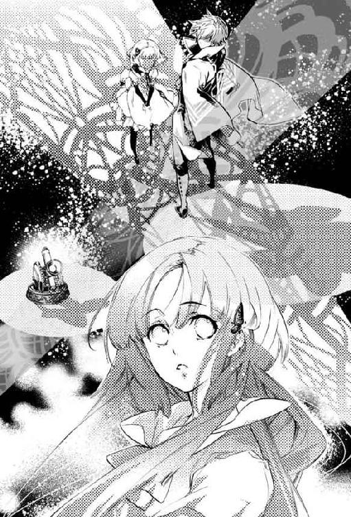
きっとあれが『神田和也』という仮面を剥いだ、生前の緋影の顔だったのだろう。
（......行っちゃった──）
兄妹が消えた道を眺めながら、アイは頬の涙を拭う。
逝ってしまった。
本当の姿も、名前も、何ひとつ明かすことなく。
まるで最初から存在していなかったかのように、何も残さず消えてしまった。
......緋影らしい、とアイは微笑う。
これから現世へ戻ろうというアイに、余計な未練や執着を与えたくなかったのだろう。奈落や狭間の世界では、それらの想いが特別な意味をもって作用することを、彼は誰より熟知していたはずだから。
その気遣いが優しくて、嬉しくて、悲しくて......アイはまた、密やかに涙を流した。
「っ、アイちゃん!?」
「アイ!!」
唐突に後ろから聞こえてきた声に、驚きつつ振り返る。足場のない闇の中を、三人の仲間たちが互いの怪我を庇いながら歩いてくる姿が見えた。
「皆、どうして......」
館で何かあったのだろうか？ アイが尋ねるより早く、その疑問を読み取ったらしいアキが口を開く。
「いや、最初はあの場所で待ってたんだけどさ。しばらくしたら、アイちゃんが飛び込んだ穴からスッゲー光が噴き出して。どっからか集まってきた白い蝶が大群でそっちに押し寄せてくし、ああこれは、って思って追いかけてきたんだよ」
身振り手振りを交えつつ、アキが抑揚も豊かに当時の様子を語ってみせる。奈落に入ってからは、たぶん万華鏡が放つ光を頼りにここまで来たのだと思うが、この空間で無事に合流できたことにアイは心底安堵した。
「アイ、大丈夫？ 怪我、してない？」
「うん、平気だよ。ありがとう」
「............」
そわそわしながらこちらの身を案じるカズヤに笑顔で答えるも、彼は何やら沈痛な面持ちでアイを見つめ、無言で伸ばした指先でそっと目尻に触れてきた。
「......うん。大丈夫だよ、カズヤくん」
今日という一日だけで、一生分の涙を流した気さえする。けれどもそれは辛く悲しいだけの痛哭ではない。
痛みと同じだけの優しさが、温もりが、そこにはあった。
だから──大丈夫だ。
「っつーか、何が起きたんだ？ これ。万華鏡、完成したのか？」
足元の万華鏡を、タクヤが訝しげに凝視する。元の形を取り戻した金色の術具は、今はただ穏やかに呼吸するように、音もなく明滅を繰り返していた。
「うん。最後の欠片を入れたから、もう完成だよ」
タクヤの問いに答えざま、アイは二股に伸びる道の片方を目線で示した。
「私たちは、こっちを行けばいいんだって。......緋影くんとウサギちゃんが教えてくれた」
「......あの二人は？」
光の道を見つめながら、カズヤがぽつりと尋ねてくる。恐らく答えは予測できているのだろう。そんな口ぶりだった。
「......行っちゃった。しばらくはお別れみたい」
アイが言うと、それを聞いたアキが「しばらくかぁ～」と疲労感たっぷりに苦笑して、大袈裟に伸びをしてみせた。
「オレはできれば二度とお目に掛かりたくないけどね。一期一会ってことでいいや」
それが本心からの台詞なのかそうでないのかは、アイにはやはりわからない。アキに関してはいつもそうだ。以前は彼の裏の読めなさを恐れ、忌避したりもしたが......今は、わからないことはわからないままでいいのだと思う。
相手の全ては理解できないとわかった上で、理解する努力を続けること──大事なのはきっと、そういうことだ。
「んじゃま、いつまでもこうして突っ立ってても仕方ないし？ ......行こうか。オレたちの世界へ」
ニヤリと歯を見せて笑うアキに、仲間たちも揃って頷いた。
「......ねえ。皆と手を繋いでもいい？」
アイの突然の要求に、アキたちが顔を見合わせる。
「もし途中で道がわからなくなっちゃっても、手を繋いでれば、誰もはぐれずに歩いて行けるでしょ？」
意図を解した幼馴染たちは、少しだけキョトンとした顔をして──
「うん。そうだね」
「......ほら」
「これで、大丈夫......」
誰からともなく互いの手と手を取り合った。アイも差し出された手を握り、温かさを確かめる。
（......戻ろう。元の世界へ......）
四人一緒に、光の道を歩いていく。
「............」
「どうした？ カズヤ」
しばらく黙々と歩を進めていると、弟の浮かない顔に気づいたタクヤが声を上げた。
アイたちも異変に気づいてそちらを見遣る。
「......俺、戻れるのかな」
俯いたカズヤの視線の先で、ドス黒く染まったペンダントトップが揺れていた。彼が抱える不安の深さを承知しているだけに、アイとアキは軽々しい励ましの一切を封じられてしまう。
が──
「大丈夫だ」
カズヤの銀髪をがしがしと乱暴に掻き乱して、タクヤが即座に言ってのけた。
「なんも心配すんな。嫌だっつっても俺が連れてく」
「タクヤ──」
「父さんも母さんも驚くだろうな。十年も眠り続けてたお前が目ぇ覚ましたら」
弟の懸念を振り払うかの如く、タクヤは真っ直ぐ前を向いたままカズヤの髪を弄り続ける。彼らがまだ『紋白』と『山都』だった頃、よくそうしていたように。
「そういえば、私たちが幼稚園くらいだった時も、こうやって手を繋いで歩いてたよね」
「あーそうそう。あの公園で遊ぶ時とか、迷子が出ないようにそうしてたね。はは、懐かしー」
アイが昔話をすれば、同じ記憶を引き出されたアキが笑う。そんなふうにしながら歩いているうちに、道の先にある光も徐々に輝きを増して広がっていく。
「......？ なんか、足元が変わった」
何か不思議な手応えでもあったのか、カズヤが立ち止まって足踏みする。
「そうか？ なんも感じねぇけど」
「もう少し、歩けばわかる」
妙に確信めいた様子で、カズヤはぐいぐいと兄の手を引っ張っていく。彼が持つある種獣じみた感覚の鋭さは、皆よく知るところである。アイたちはカズヤに導かれるまま、どんどん歩みを進めていく。
すると、爪先がわずかに上向きになり、かかとに負荷が掛かる感触があった。
カズヤの言っていた「足元が変わった」とは、これのことだったのかと得心する。
「これって......坂を上ってるってこと？ 上に向かってるみたい」
ずっと平坦だった道が、緩やかな上り坂に変化している。
「出口が近いのかねー？」
「......わからない。でも、なにかあるのかもしれない」
アキの問いには首を横に振って、カズヤは紫紺の瞳で前を見据えた。
そのまま歩き続けていくと、なだらかだった坂道は次第に傾斜を増し、いつしか急な山道並にまでなっていく。と同時に、不思議な気配が強まっていくのをアイは感じた。
急激に『なにか』に近づいている──あるいは近づかれている感覚。その『なにか』は圧倒的で、ひどく懐かしい。
（そうだ。これは......）
誰に何を教えられたわけでもないのに、本能的に直感する。
これは『世界』だ。
自分たちが元いた、帰るべき『世界』。
......そして。
「あっ......！」
何の前触れもなく、それは視界に映った。
「水面──......!?」
アイたちの遥か上方。奈落の暗闇に覆われていたはずの場所が、まるで海面のようにキラキラと波打っている。
南の海を思わす透き通った青と、そこに反射する目映い純白の粒。
それは館に来た日から焦がれ続けてきた、紛うことなき太陽の光だった。
見れば仲間たちも水面を仰ぎ、言葉を発することさえ忘れて眩しい陽射しに目を細めている。
（ああ......わかった。あそこが出口だ......）
そう理解した瞬間、足場がなくなった。戸惑う間もなくアイの身体は浮力を得て上昇を開始する。
ふわり、ふわりと。
蝶になって舞っているような浮遊感だった。
これで終わる。
このまま水面まで浮かび上がれば、そこがゴールだ。
アイは迷うことなく光の世界へと手を伸ばす。
......が。
「う......くっ......」
苦しげな呻き声が聞こえた。同時に、カズヤと繋いでいた左手が下方に引っ張られる感覚がして、アイはそちらへ視線を移す。
見れば、カズヤが険しい表情で自らの足元を凝視していた。
「カズヤくん？ どうしたの？ そこに何か──」
言いかけて、アイはハッと息を呑む。
水面へと浮上しようとするカズヤの足に、びっしりと、夥しい数の黒い蝶が群がっていた。
ひしめき合い、絶えず蠢く蝶の大群は、カズヤを奈落へと引き戻そうとする無数の黒い腕のようにも見え、思わず背筋が凍りつく。
「カズヤっ!!」
危急に気づいたタクヤが、両手で弟の腕を掴む。同じくアキが、もう一方──アイが握っているほうの腕を引いた。アキと一緒に、アイも懸命に力を込めるものの......
ずるずる、ずるずると。
まるで底なし沼に沈み込むかの如く、カズヤの身体はそれを支える仲間ごと奈落の闇へと沈んでいく。
どうして彼だけが、とは思わなかった。黒蝶の動きに呼応するかのように、カズヤの真っ黒いペンダントトップが不気味な輝きを放っていたからだ。
ひときわ穢れを溜め込んでいる彼だけでも、闇の世界に堕とそうとしているのだろう。
「カズヤ、しっかり掴まってろ!! ぜってぇ離すんじゃねぇぞ!!」
兄の呼び掛けに励まされ、カズヤが歯を食いしばりながら蝶の大群を振り解こうとする。けれどアイたちが渾身の力で引っ張っても蝶の群れは引き離せるどころか、ますますカズヤの足を絡め取り、徐々に下半身を呑み込んでいった。
「畜生、ここまで来て冗談じゃねぇぞ......！ 渡すもんかよ!!」
「タクヤ......」
必死の形相で汗を滲ませるタクヤを──仲間を、カズヤが見上げた。
透徹した紫の瞳。あどけない子供のような眼が、次の瞬間、明確な意思の炎を宿して燃える。
カズヤの白い手が、しっかりとタクヤとアキの腕を握り直した。
けれどもアイたちを嘲笑うかのように、黒蝶の群れは下へ下へと五人を引きずり込んでいく。このままでは全員が奈落に下ろされてしまう。
（ああ、どうすればいいの......どうすれば......!?）
アイは祈るように瞼を閉じる。
──その時だった。
アイの頬を、ふと、温かい風が掠めた。
（えっ......？）
直後、不意に身体が軽くなったのを感じ、閉じていた目を瞬かせる。誰かに後ろから引っ張られる感覚がして、アイの体が再び浮上を始めた。
（あ......）
知っている。
この感触と絶対的な安心感を、自分は知っている。
十年前のあの日。湖で溺れたアイの身体を、背後からしっかりと抱え込んだ腕。湖畔へと導く力強い泳ぎ。
（ああ......ああ!!）
想いは言葉にならなかった。力を貸してくれたことへの感謝と慕情が溢れ、ただただ泣き出すのを堪えて笑みを浮かべる。
後ろは振り向かない。彼が来てくれたことの意味を汲み取らなければ。
（私はもう流されたりしない。迷ったりしない。力強く生きるんだ......！）
右手でカズヤの腕を掴み、左手を水面に向かって真っ直ぐに伸ばした。
きらきらと揺らめく世界。あと少し。もう少し。手繰り寄せるように指先を動かす。
「────っ！」
開いた五指が水面に触れた。
瞬間、波が引くように視界が割れる。
白い閃光が爆ぜ、視界が真っ白に灼けた。
............ナッちゃん。
ナッちゃん......まだ、そこにいる？
『......うん。いるよ』
よかった......どうしても、お礼を言いたかったの。
......力を貸してくれてありがとう。
『いいんだ。僕も皆を助けたかったし──』
『それに、僕のほうこそお礼を言わなきゃいけない』
え......？
『......僕を解放してくれてありがとう』
『僕を「水谷夏樹」にしてくれて......ありがとう』
......うん。
............。
......叶うなら......ナッちゃんと一緒に帰りたかったな......
『そうだね......でも僕は、これでよかったって思ってるよ』
『考えてみたら、僕が現世で叶えたかった夢は......あの館でほとんど叶っていたんだから』
......あの館で？
『うん』
『......君と一緒に生活できた。君におはようを言えて、おやすみを言えた』
『行ってらっしゃい、って見送ってもらえて、お帰りなさいって出迎えてもらえた』
『君の手料理を食べられた。君に温かいココアを淹れてあげられた』
『君と一緒に怒って、泣いて、笑って──』
『あの場所で......僕は確かに「生きて」いた』
......うん。
うん、そうだね。
私も、ナッちゃんと一緒に過ごせて嬉しかった。
楽しかったし......──幸せだったよ。
『......そう』
『君がそう思ってくれるなら、よかった』
『......実は、ちょっと心配だったんだ』
『現世で深い傷を負わせてしまったみたいに、今回もまた......君を傷つけただけで終わるんじゃないかって』
そんなことないよ。
たとえ二度目のお別れになってしまうとしても......
私は、ナッちゃんと会えてよかった。
夢みたいだったの。本当に。
............
『......？ アイちゃん？』
起きたら、忘れちゃうのかな。
......忘れたくないな。
ナッちゃんと過ごした時間も、緋影くんやウサギちゃんのことも......
ぜんぶ持って生きたいよ。
今度は、ちゃんと。
『うん......僕も』
『これから行く世界でも──君や皆のこと、覚えていたいな』
......本当はね、少し怖いの。
ナッちゃんのいない世界に戻って、生きていくこと。
今まで、ずっと傍にいてくれたのに......
『......大丈夫』
『今の君なら、きっと......強く生きていってくれるって、僕は信じてるよ』
............うん。
『僕を見つけてくれてありがとう。狭間で出会ってくれてありがとう』
『僕が好きになった女性が、君でよかった』
『......君を好きになって、よかった』
ナッちゃん......
『さあ、そろそろ起きる時間だよ』
『アイちゃん。君が明るい太陽の下で、笑って幸せになる......これが僕の最後の願いだ』
『だから、ね。笑って？』
......うん。
ありがとう、ナッちゃん......絶対、絶対、忘れないよ......
『......僕も』
『さようなら、アイちゃん。どうか幸せに──』
さようなら、ナッちゃん......
今度こそ......さよなら──
結章 ある悲喜劇の終焉
駅の構外へ一歩出ると、ぎらぎらと輝く太陽が容赦なく照りつけてきた。車のボンネットやアスファルトからは陽炎が立ちのぼっていて、視覚的にも真夏日の暑さを演出している。
雲ひとつなく晴れ上がった空を見上げ、アイは小さく吐息を漏らした。
......狭間の世界に別れを告げ、奇跡的な生還を果たしてから早一ヶ月。日々はあっという間に過ぎていった。
現世に戻ったアイが最初に目にしたのは、独特な雰囲気の真っ白い天井。どことなく見覚えがあるような、ないような......回らない頭で考えながらぼんやりと眺めていると、次第に無機質な機械音が聞こえてくる。
それが傍らの計器が発するモニター音だと理解した時、彼女はようやく、ここが病棟の一室なのだと気がついた。
が、どうして自分がベッドの上に寝かされているのかがわからない。アイが首を傾げていると、たまたま担当の看護師が巡回に来た。彼女は患者の覚醒に驚喜しつつも、ごく簡潔にこれまでの経緯を教えてくれた。
アイがバス事故に巻き込まれ、この病院に緊急搬送されてきたこと。更に詳しく言えば、アイの乗っていたバスの運転手が何らかの理由で意識を失い、それによってコントロールをなくした車体が山道のカーブを曲がりきれず、ガードレールを突き破って崖下の湖へと乗客ごと転落したのだという。
テレビでもかなり大きな事故として扱われ、しばらくは病院にも取材の申し込みが殺到していたとか。ニュースでは毎日のようにバス会社の社長のお詫び会見が流され、昼の情報番組ではあの湖で昔から起こっている不可解な事件、事故を関連づけた、オカルトじみた報道までされていたらしい。
曰く、湖に沈んだまま引き揚げられることのない亡者の魂が、寂しさのあまり仲間を手繰り寄せているのだとか、なんとか......
看護師は苦笑いしていたが、アイは複雑な気持ちで彼女の話を聞いていた。
恐らくその情報番組の取材班は、ナツキのことも調べて知っているのだろう。流れ出ることのない湖にもかかわらず彼の遺体は見つからないまま、捜索も打ち切られて久しい。
看護師との雑談もそこそこに検査や処置を受けていると、父と妹が息を弾ませながら部屋に駆け込んできた。病院からの連絡を受け、大急ぎで駆けつけたらしい。
ふたりは目覚めたアイを見るなり、人目も憚らず泣き出した。
父の涙など、母が亡くなったその日にしか見たことがない。いつも我儘ばかりの妹が、姉を想って泣く姿も、やはり見たことがない。
そんな家族がアイの目の前で「よかった、よかった」と繰り返し、力いっぱい抱き締めてくる。
痛いくらいの抱擁。父の肩口に顔を埋め、その体温を感じながら......アイはその時はじめて「帰ってきた」ことを痛切に実感した。
直後、それまで麻痺していた涙腺が唐突に緩み、まるで栓でも抜けたかのように止め処なく涙が溢れ出す。
──帰ってきた。帰ってきたのだ。十年前と同じく、ナツキを失うことと引き換えにして。
解き放たれた心のままに、アイはまるで子供のように父の胸に縋りながら、ただただ涙を流し続けた。
......一方の病院はというと、こちらはてんてこ舞いだった。
バス事故に遭ったアイたちが運び込まれたのは、偶然にもカズヤが長らく入院していて、アイも幾度となく通ったあの総合病院で......当然の如く、一緒に湖から救助されたタクヤ、アキのふたりも、別室に入院していた。
アイの覚醒から少し遅れて、生きるか死ぬかの瀬戸際にいたはずの彼らと、それに加えて十年間昏睡状態にあったカズヤまでもが何事もなかったかの如く一斉に目を覚ましたのだ。
患者の家族や医療関係者たちは、これを奇跡と呼んで大喜びした。
......だが、アイは──アイたちだけは知っている。
これは、あの夏の日から続いていた長い長い探検が、終わっただけなのだ......と。
事故の規模の割に大きな怪我もなかったアイたちは、数日の検査入院を経てすぐに帰宅することができた。ただし、十年という長い眠りから覚めたカズヤだけは身体の衰えが激しく、引き続き病院に残ってリハビリを続けている。
訓練は、咀嚼や発声といったごく初歩的な段階から始まった。それすらもカズヤにとっては苦痛を伴う過酷な試練だったはずだが、彼は誰もが舌を巻く努力で少しずつ肉体の機能を取り戻していった。
カズヤ自身も、それを支える兄のタクヤも笑顔だった。
......とはいえ、リハビリルームにいるカズヤの姿をアイはほとんど見たことがない。曰く、恥ずかしいからあまり見ないでほしいのだとか。
（って言う割には、アキちゃんには平気で補助させてたりするんだけど......）
見舞われること自体は嫌ではないらしく、病室で帰りを待つアイに気づいた時などはパッと花開くように笑って、ただいまを言ってくれる。
リハビリに関して、カズヤが弱音を吐くことは一切ない。ただ時折、不思議そうに手を握ったり閉じたりしながら「変な感じ」と首を傾げるだけだ。
彼が『紋白』だった頃の人間離れした身体能力や、思わず魅了されるほどの洗練された戦い方は、今でもアイの脳裏に鮮明に焼きついている。あれだけ自在に動いていた手足が急に言うことを聞かなくなったのだから、さぞかし歯痒いに違いない。
（......館にいた時は、あんなに必死に元の世界に戻りたいって思ってたのに......）
交差点の信号が青になり、雑踏が流れていく。うだるような熱気の中を、アイは人混みに紛れて歩き始めた。
（隠れ家で過ごした日々が、今はなんだか懐かしいな、なんて──）
心の中で呟いて、アイは人知れず苦笑する。
忘れたくない、という願いが届いたのだろうか。館で経験した物語の全ては、微塵も欠けることなくアイの中にしっかりと息づいている。
それは仲間たちも同様で、あの異世界での出来事を皆それぞれに思い返し、昇華しながら、平穏な日常へと立ち返ろうとしていた。
カズヤの努力に比べれば瑣末なことではあるものの、アイたちにも全く苦労がないわけではなかった。随分と進んでしまった授業や、久方ぶりの学校の雰囲気に適応するのは予想以上に骨が折れ、帰宅する頃には心身ともにクタクタになってしまう消耗戦のような日々が続いた。
そのお陰で、過度に感慨に浸る時間もなかったわけだけれども。
ようやく一息つけたのは、夏休みに入ってから。程なくカズヤの退院も決まり、アイはホッと胸を撫で下ろしながら退院祝いのプレゼントについて考えていた。
......そんなある日のこと。
アイのもとに一通のメールが届いた。
『もう一度、皆でナッちゃんを弔いに行かない？』
......アキからだった。過去に囚われ、罪悪感という泥沼に浸かることにある種の居心地の良ささえ見出していたアイやタクヤ。その薄弱な本心を見抜いたアキは、以前にも同じ提案をしてアイたちを前に進ませようとした。その荒療治ともいえる行動は、当時のアイに当惑と恐怖の念しかもたらさなかったが......今回は、その誘いに対する印象がはっきりと違った。
行こう、とアイは即答する。
今度は自分のためなんかじゃない。最後の瞬間まで力を貸して助けてくれた、心優しいあの人のために。
横断歩道を渡りきり、最寄りのフラワーショップで白い百合の花束を頼んだ。店員は気さくに話を振りながら素早く花を見繕い、慣れた手つきで剪定していく。十分ほどで清楚なリボンの愛らしい花束が仕上がり、アイは代金を支払って店を出た。
腕時計を確かめると、待ち合わせまで少し余裕がある。
「......──」
涼を求め、待ち合わせ場所である駅に引き返してもよかったのだが......なんとはなしに、アイは再び商店街を歩き始めた。
メインストリートに立ち並ぶビル群には目もくれず、陽の当たらぬ路地裏を覗き込むようにして進むことしばし。目的の露店に行き着いたアイは、店の主である老齢の男性を見つめた。
前に会った時と同じく、店主は煌びやかな宝飾品を机に広げたまま無防備に微睡んでいる。
（モーニングジュエリー......死者を悼むためのアクセサリー）
足音を忍ばせて距離を詰め、見事な細工の商品を覗き見る。と、その視界に予期せぬものが映り込んだことに気づき、アイは大きく目を見開いた。
こっくりこっくりと船を漕ぐ老人の膝。そこに、確かに見たことのある装丁の本が乗っていたのだ。
擦り切れてしまったその『絵本』の表題を、アイは知っている。
「おや......お嬢さんは、いつぞやの」
本に釘付けになっていると、不意に店主の老人が顔を上げた。
アイのことを覚えていたらしく、老人は小さく首を傾げてまじまじと客人を凝視してきた。それからやや目線を上げ、アイの髪に飾られた蝶のヘアピンを見て愛おしそうに眦を下げる。
「あ、あの......ちょっとお聞きしてもいいですか？」
「この本のことかね？」
アイの思考を見透かしたかの如く、老人が痣のある骨ばった手の甲でポン、と黒い革表紙を叩いてみせた。
「ここから少し行ったところにある湖の廃墟で見つけたんだよ。永年の失せ物だったのだが、ようやく手元に戻ってきてくれた......」
「............」
「この本に見覚えがおありかね？ もしも読んだことがあるとしたら、君の出会った黒白の蝶は、どんな結末を迎えたのだろう」
老人はそう言ってふふっと笑った。
......永年の失せ物だった？ では、この本の本来の所有者はこの老人だということ？ それに──
（私が出会った黒白の蝶......それは絵本の？ それとも）
老人の、やけに俯瞰した物言いが引っ掛かる。
まるで......人知を超えた存在が、ちっぽけな人間の娘と相対しているかのようだ。
「......貴方は──」
何者？ と言いかけたアイの口元に、枯れ枝じみた細い指が当てられた。
「人の人生はふたつとない物語だ。そして謎というものは、物語を魅力的に彩るアクセントになる......。明かされぬまま終わる謎というのも、なかなか味わい深いと思わないかね。今の物語を選んだのならなおのこと」
「............」
落ち窪み、濁った双眸がアイを見据える。どう反応したらいいのかわからず、アイはただただ立ち尽くした。
「戻ってこられて良かったね、お嬢さん。その髪留めも、よく似合っているよ」
「え、あ......」
戻ってこられた？ それはどういう意味かと問い質そうとアイが口を開いた直後──
「あー！ アイちゃん見っけ!!」
まるでかくれんぼの鬼が獲物を発見したかのような大仰な名指しを受け、アイはびくりと肩を跳ね上げた。
「こんなトコでなに油売ってたのさ？ 待ち合わせの時間、とっくに過ぎてるんですけどー」
唇を尖らせたアキが、わざと嫌味な口調で言いながら近づいてくる。
「ご、ごめんアキちゃん......！ ちょっとお爺さんと話し込んじゃって──」
そんなに時間が経っているとは思っていなかった、と付け加えようとしたところで、アイは自分を見つめるアキの訝しげな眼差しに気がついた。
「お爺さん？ ......アイちゃん、暑さで頭やられちゃった？ 大丈夫？」
「え......？」
「オレのほうが『え？』だよ。お爺さんなんてどこにもいないじゃん」
アキのあっけらかんとした台詞に驚き、アイは慌てて辺りを見回す。しかしアキの言葉どおり、ついさっきまで目の前に広げられていた美しいアクセサリーの数々も、店主の老人も、神隠しにでも遭ったかのように痕跡ひとつ残さず消え失せていた。
「嘘......」
「大丈夫？ いや、揶揄ってるわけじゃなく本気で。今日、一段と暑いしね」
アキはシャツの首元を広げ、右手でパタパタと扇いでみせる。いまひとつ釈然としないアイが憮然とした表情で立ち尽くしていると、アキは「うーん......」と首を傾げてこう言った。
「じゃ、言い方を変えようか。......世の中には、オレらの理解の範疇を超えた物事がごまんと存在してるのかもしれないね。狭間での出来事みたいにさ。......これでいい？」
「............うん」
「『うん』ってゆー割には中々すっごい顔してんねーアイちゃん」
少なからずショックを受けたのか、アキが半眼で見据えてくる。
館での『鴉翅』にさんざん振り回された名残なのか、アキに対してはついつい身構えてしまうアイである。裏で何を考えているのか、とか、自分の知らない何かを知っているのでは？ と勘繰ることもしばしばだ。
「......『鴉翅』はオシマイだってば。安心しなよ」
オレだって、あんな損な役回りなんか金輪際ご免だし......とぶつぶつ呟くアキを追って、アイも路地裏を出てメインストリートを歩いていく。
「............」
雑踏の中、自分より大きくなった幼馴染の背中を見つめる。少年時代、弱虫ヒメちゃんと渾名されていた男の子の姿は、そこにはなかった。......頑張ったんだな、と思う。
「──ごめんね、アキちゃん」
何の脈絡もない謝罪を受けたアキが、器用に片方の眉を下げて「はぁ？」と振り返ってくる。
「ごめんって、何がさ？」
「私......自分のことばっかりで、アキちゃんの気持ちぜんぜん考えてなかった......」
いつも自分目線で、アキの警告や助言にも、一方的に傷つけられたと悲しむばかりだった。
彼の悲壮な表情、叱咤しつつも苦しげな声音が、何を意味しているのかなんて知ろうともせずに。
「私は──ただもう一度、あの頃の私たちに戻りたいだけだったの」
ぽつり、ぽつりと雨垂れのように零れる言葉を、アキは前を向いて歩きながら何も言わずに聞いている。
「形だけ同じにしても中身まで一緒にはならないんだって、わかってた。でも、それでもいいと思った。見掛けだけでも似せていれば、いつかあの頃みたいになれるような気がして......」
「............」
「そして、傷つけた。見た目だけ繕ったものなんて、アキちゃんは望んでなかったのに」
束の間の静寂があった。道行く人々の靴音や喋り声が、近づいては離れていく。
「......いいよ、もう」
怒っているのでも、辟易しているのでもない。なんだか肩の荷が下りたといった様子で、アキはふうと吐息を漏らした。
「もう気にしないでよ。アイちゃんがこうして歩き出してくれた......それだけで十分だよ。オレはさ」
青年の横顔には、困っているような喜んでいるような、複雑な色が浮かんでいた。
「それに、自分本位だったのは何もキミだけじゃない。アイちゃんがオレに謝んなら、オレもアイちゃんに謝んないと」
「え......？」
「忘れたの？ オレ、狭間でけっこー酷い態度してたハズなんだけど。キミに」
軽やかな動きで、アキがくるりと振り返ってくる。
（......もちろん忘れたわけじゃない。でも──）
後になって深く考えれば考えるほど、彼の辛辣な物言いや振る舞いは全てアイを守るためのものだったのだとわかってしまって、それからは感謝の念しかない。
「アイちゃんのために良かれと思って散々ちょっかい出したけど......それ、ホントは全部オレのエゴだったんだよね」
いかにもバツが悪そうに、アキはぐしゃぐしゃと髪を掻く。
「事故のこと引き摺ってるキミたちのこと、見てらんなくて......辛くて、苦しくて、苛々して。だから早く立ち直ってほしくて、執拗に発破をかけまくった。『オレ』が嫌だったから自分の都合のいい形に持っていこうとしてただけなのに、それをあたかもキミのためみたいな顔してたんだから、アイちゃんなんかよりよっぽどタチ悪いっしょ」
もう一度、アキは溜め息をついた。今度は先程よりも大きく、深く。
「......ほんと、わかってなかったのはオレのほうだよ。だって、そうでしょ？ 十年前、ナッちゃんとカズヤが自分の目の前で沈んでくのを藻掻きながら見ていたキミと、それを岸から傍観してただけのオレとは、事故で受けた印象も全く違うものだったはずなんだ。ちょっと想像すればわかることなんだよ」
「............」
「それなのに同じ土俵で考えて、足踏みしてるキミを弱く情けないと決め付けた。本当に弱かったのも、情けなかったのも、あのとき岸から一歩も動けず、仲間を助けに行くこともしなかったオレだったのに」
思い返すだに悔しいのだろう。アキはぎゅっと唇を噛み、拳を握り締めた。
「何もかも終わった後、キミを置いてさっさと遠くへ引っ越しちゃったオレに、キミを糾弾する権利なんてあるわけなかったんだ」
苦渋を滲ませたアキの顔を、アイはしばし無言で見つめ......
それから、ふっと微笑んだ。
「......ねえ。知ってる？ アキちゃん。アキちゃんが『ごめん』って言う時は、アキちゃんは悪くない時なんだよ。......昔からそうだった」
いじめっ子に責められていても「ごめん」。それを助けたアイにも「ごめん」。貶されても「ごめん」、褒められても「ごめん」──
「私、感謝してるよ。高校で再会してからずっと背中を押してくれたことも、館で私や皆を守ろうと頑張ってくれたことも......ありがとうって思ってる。私の前に、アキちゃんが現れてくれてよかった」
少し照れ臭くはあるけれど、こういう機会でもなければ言い逃してしまいそうで。
アイの心からの本音と笑顔に、アキは面食らったように硬直していたが──やがて何があったのか、「あ゛ー!!」と妙な叫び声を上げて頭を掻き毟った。
「もうホント、そーゆーの勘弁して！ キミのこと逃げられないくらい幸せにしてやりたくなるでしょ!!」
「え......？」
「だーかーら、『え？』じゃなくて！ ああああもう!!」
もどかしげに地団駄を踏んだアキは、大股で歩み寄ると有無を言わさずアイの手を取って歩き出した。
「ほら、行くよ！ 待ち合わせとっくに遅刻だよ！ カズヤもいるんだからこれ以上遅れたらオレがタクヤにどつかれる!!」
アイが目を丸くする勢いで捲くし立て、アキは人混みを掻き分けながら商店街をずんずんと進んでいく。
バスターミナルに到着すると、時刻表に寄り掛かったタクヤと日陰のベンチに背を預けたカズヤが揃ってこちらを向いた。
タクヤが半眼でじろりとアイたちを捉える。約束の時刻から、既に一五分ほどが経過していた。
「お、遅れてごめん......」
アイが思わず尻込みしていると、傍らのアキがすかさず「花屋が激混みだったんだってさ」と嘯く。タクヤはアイの手に提げられた花束を一瞥し、ならば仕方がないとばかりに嘆息した。
「まあいいけどよ。バスだって次のに乗りゃいいし」
「タクヤ......俺のことなら、気にしないで。大丈夫、だから......」
自分を気遣うあまり兄がピリピリしていると思ったのだろう。カズヤが穏やかに笑ってみせた。
「アイ、アキ。この間は退院祝いありがとう」
「うん、......でも、本当にあれでよかったの？」
アイの問いに、カズヤは大きくコクリと頷く。
病み上がりのカズヤができることは限られていた。何を贈るべきかアイとアキで相談し合ったが、なかなかコレといったものが思い当たらず......変なものを選んでしまうよりはと、結局カズヤ本人に希望を訊いたのだ。
カズヤは少し考えてから「それなら皆で美味しいものを食べに行きたい」と答えた。
アイたちに遠慮したのかとも思ったが、どうやらそういうわけでもないらしい。最終的に、高校生にはやや高級なレストランに招待することで落ち着いた。
ウェイトレスが運んできたハンバーグとオムライスを前に、それはもうキラキラと輝いていたカズヤの瞳が忘れられない。まだまだ回復途中の彼がひとりで食べきるには量が多く、いささか行儀が悪いのは承知の上で皆で分け合って「うまい」「おいしい」と笑顔を交わしたのもいい思い出だ。
「それにしても、ハンバーグとオムライスかー」
「......？ 何か、変？」
意味ありげなアキの台詞に、カズヤが首を傾げる。
「変じゃないよ。ただなんてゆーか、印象的だっただけ」
にっこりとアキが笑う。まあ、彼が言わんとしていることもわからないでもない。けれど十年前から館に閉じ込められていたカズヤの嗜好が子供の頃のまま止まっているのは、納得できることだ。
半ば諦めかけていた現世への帰還を果たしたカズヤはひたすら生きることに貪欲で、肉体的なリハビリの他に勉強にも力を入れている。乞われるまま、タクヤが付きっ切りで教えているらしい。
「教えるっつっても、小学生の算数レベルからだけどな」
タクヤは苦笑するが、まんざらでもなさそうだ。
ずっと暇潰しでやってきた勉強が思いがけず弟の役に立ったことは、彼の人生観に大きな影響を与えたようだった。最近は「教職ってのも悪くねえかもな」などと漏らすようにもなっている。
かつてカズヤを世話するためにサッカー選手の夢を断念した彼が、目を覚ましたカズヤによって新たな進路を見出した事実はとても意義深く思えた。無論、アイにとってもこの上なく嬉しいことだ。
そんなふうに他愛のない会話を交わしているうちにバスが来て、アイたちは順々に昇降口を上っていく。四人並んで最後尾の席に座った。
アキが「夏休みに入っても補習ばっかだ」とボヤけば、カズヤがキョトンとした顔で「アキ、勉強苦手？ 俺と一緒にタクヤに習う？」と尋ね、それを聞いたタクヤが大袈裟に噴き出す。アイは「それいいなぁ。私も授業に追いつけてないんだよね」と呟けば「お前になら付き合ってもいいが」とタクヤが言って、妙案だとばかりにカズヤがうんうんと頷いた。ひとり除け者にされたアキが「別にいいし！ ひとりでできるし！」とそっぽを向く。
始終なごやかに時は進み、バスはあっという間に終着駅であるキャンプ場へと辿り着いた。一分一秒がスローモーションのように重々しく感じた前回とは、何もかもが違う。
天候も崩れる気配すらなく、一行は昼食を兼ねた小休止を経て、いよいよ湖へと続く山道へと足を踏み入れた。
蝉の声がけたたましく木立に響き、青々と茂った葉っぱの間を縫って目映い光が差し込んでくる。
......夏の森。
全てのものが茹だってしまいそうな暑さの中を、アイたちは歩いていく。
「ぜい......ぜい......おい、まだ着かねぇのかよ」
カズヤを背におぶったタクヤが、荒い息遣いの合間から苦しげに声を絞り出す。かたや、大人しく兄に背負われたカズヤはダラリと伸ばした手で地図を広げ「うーん、あとちょっと」と曖昧な言葉を返す。
厳しい訓練の甲斐あって、普通に歩く程度はこなせるようになったものの、さすがに未整備の悪路を何十分も進み続けることは難しい。ましてやこんな凸凹道では車椅子も使えない。
「ちょっと、か......さっきも同じこと聞いたな。マジで方角あってんだよな？」
「............うん」
「なんだよ、その間は」
傍から見ると漫才のようなやり取りだが、本人たちは至って真面目だ。特に汗だく、息も絶え絶えのタクヤのほうは。
「タクヤくん、すごい汗だよ！ どこかで一休みする？」
「いや、中途半端に休むと逆に疲れっから」
アイの問いを断って、タクヤは弟をぐっと背負い直す。顎や髪の先端から玉の汗が滴り落ちた。
「オマエ、体力ないんだなー。その筋肉は見掛け倒し？」
「うるせ！ お前だって俺の身になりゃこうなるっての！」
ククッと意地悪く含み笑いするアキを、タクヤが噛み付くように怒鳴りつけた。
「っつーか、さっきからなんも見えねぇどころか、道、険しくなってねえか？」
「......じゃあ、あっちかも？」
「は？ 『じゃあ』って何だよ！ お前、ちゃんと地図読めてんのか!?」
「........................うん」
「だから間、ありすぎだろ！ なあ!!」
タクヤが背中を揺さぶって声を上げる。若干、涙声になっているのは気のせいだろうか。カズヤは眉間にしわを寄せ、地図を回転させながら眼前に伸びる小道と見比べている。その様がやっぱり漫才に見えてしまって、アイは密かに笑いを噛み殺した。
「まー、時間はたっぷりあるし？ テキトーにゆっくりでいいんじゃん？」
呑気な口調で言いながら、アキが大きく伸びをする。
「第一、文句あるならタクヤが地図見ればいいのに」
「だーかーらー。こいつ負ぶってるから無理なんだって！ できるなら最初からそうする！」
ふたりのやり取りを見ていたカズヤが、どことなくしゅんと肩を落とした。
「......ねえ、カズヤくん。地図、私にも見せて？」
「ん......」
アイはカズヤの横に並ぶと、手元の地図を覗き見る。
（子供の頃は探検気分だったから気付かなかったけど......地図を見る限り、あの湖ってキャンプ場から結構離れたところにあるんだよね）
当時の体力でよくもったと感心してしまった。遊びに夢中になった子供の集中力は凄まじい。
「アイ、わかる......？」
「うん。多分、この道で合ってるよ」
アイの言葉に、カズヤが安心した様子で表情を緩めた。
「まだ、不自由なことも多いと思うけど......外に出られるくらい元気になって、よかったね。カズヤくん」
「......うん」
「気分悪くない？ 大丈夫？」
「......悪くない。大丈夫」
生い茂る草木を掻き分け、一歩一歩地面を踏みしめていく。
やがて──
「あっ......！」
唐突に、視界が開けた。
陽の光を反射して輝く水面。穏やかに凪いだ湖の中央には、野草の生い茂った小島がぽつんと浮かんでいる。
清々しく風光明媚な光景は、まるで深緑の木々を額縁にした一枚の絵画のようだった。
（これが......）
十年前、自分たちが見た景色。
......数十年前、緋影とウサギが見ていた景色。
「──やっと着いたな」
湖を見つめたまま、タクヤがぽつりと呟いた。「やっと着いた」。その短い台詞には、単純な字面以上の意味が込められているようにアイには感じられた。
「館......壊されちゃったんだ」
カズヤがどこか寂しげに瞼を伏せる。
「みたいだね。今はなんにもない......ただの浮き島だ」
「............」
アキの言葉に返事をすることもなく、カズヤはじっと、彼方に浮かぶ島を──正確には、そこに存在していたはずの洋館を見つめていた。
「......降りる」
「えっ？ 立てるのか？」
唐突なカズヤの台詞に、タクヤが驚いたように聞き返す。
「無理。でも座ってるのは、平気」
「けど──」
「ちょっとぐらい、平気」
珍しく頑なに言うと、カズヤはあまり気が進まないらしい兄の肩に手を掛けた。タクヤの背中をゆっくりと滑り降りていく。
草の上にしゃがみ込み、カズヤは再び島の方に視線を向ける。
この世界で生きた年月よりも長い時間を、彼はあの館で過ごしてきた。好むと好まざるとにかかわらず、カズヤにとって狭間は第二の故郷とも呼べるものになっているのだろう。
複雑な感情はあるにせよ......いや、だからこそ、そんな『特別な』場所が存在ごと消滅していることに喪失感を抱いているのかもしれない。
アイたちが笑い、泣き、喜び、悲しみ、戦い、生き抜いた場所。
出会いと別れの世界。
「......あの館、いつ壊されたんだろう？」
アキやタクヤたちのように引っ越さず、ずっと同じ街で暮らしていたアイですら、館が撤去された話はまるで聞かなかった。だから当然、他の皆も知りはしないと思っていたが──
「......十年前の事故の直後らしーよ」
意外にもアキが口を開いた。一同の目線が彼に集中する。
「母親に聞いたんだ。まだあの街で暮らしてた頃、うち、地域会の役員やってたんだけど......その時の繋がりがまだあるらしくて、いろいろ情報通でさ。聞かなくても教えてもらえるってワケ」
「そうなんだ......」
初耳だった。引っ越してしまった幼馴染とはアイのほうから連絡を取ることがなかったので、てっきり彼らもあらゆる縁を断って姿を消したとばかり思っていたのだ。
「今回のことでニュースになったりしてたでしょ？ この湖、昔から妙に水難事故が多くって、いわゆる心霊スポット扱いされてる曰くつきの場所だったって」
「うん。だから地元の人は、誰も近寄ろうとしなかったんだよね？」
アイの確認に、アキは小さく頷いた。
「でも、そんなの全然しらない子供のオレらが近づいて、また事故に遭った。それで本格的に解体されたらしいよ。今は瓦礫がちょっと残ってる程度だってさ」
ことの顛末を話し終え、アキが再び押し黙る。
（......もし、もっと早くにあの屋敷が取り壊されていたら......）
そうしたら、事故は起きていなかっただろうか。
幼い日に心奪われた、幻想的な洋館の風景を思い出す。
花に惹き寄せられる蝶のように、退廃的な館に魅了されて近づいた人々は多かったのかもしれない。
そして、そのまま異界へ誘われてしまった人も......
「......アイ。そろそろ」
「あ、うん」
カズヤに促され、アイはふっと我に返った。持参した花束を手に湖へと進み出て、岸辺に屈む。
そして、透き通った水面にそっと白百合の花を乗せた。
「ナッちゃん、会いに来たよ。......お花、受け取ってくれる？」
水に浮かんだ弔いの花は、涼風に吹かれて緩やかに彼岸へ流れていく。
──あの事故で沈んだナツキの亡骸は、それからずっと行方知れずだった。
それが、アイが目を覚ましたのと同じ日に......どこからともなく、浮かび上がってきたのだという。
キャンプ場の管理人が偶然発見し、空っぽだった墓にやっと入れることができたと、ナツキの祖母の親戚だという女性から連絡があった。
けれど、アイはまだナツキの墓には行っていない。
あの館から飛び立っていった彼の魂を弔うには、この湖に来るのが一番だと思ったからだ。
（......ナッちゃん......）
目を閉じて名前を呼ぶ。子供の頃から勇気づけてくれた、優しい人。
現世でも、狭間でも、自らの全てを擲ってアイを守ってくれた。
（私の──初恋の人）
今でも時折考える。運命がほんの少しでも違っていたら、と。
水谷夏樹はまだ生きていて、自分の隣にいたかもしれない。そんな未来があったかもしれない。
（......別の未来、か......）
様々な可能性が浮かんでは、泡沫のように消えていく。
（でも、私はこの『今』を生きている）
目の前で二度も愛しい人を失ったこの世界が、アイの生きる現実だ。
......ナツキのことが好きだった。今だって好きだ。
それだけを自分自身に確認して、アイはなんとなく嬉しくなる。そう、それだけだ。
たとえ深い悲しみに打ちひしがれたとしても、誰かを大切に想う気持ちまで否定したり、忘れたり、捨て去ってしまう必要はないのだ。
（そのことに気がついていれば、きっと、彼も──）
失意と絶望に彩られた、紅い瞳を思い返す。
彼と交わした最後の会話は、今でもはっきり覚えている。
もしも同じ時代、同じ場所に生きていたら。
それがただの夢物語でしかないことは、他ならない緋影自身が誰よりもよくわかっていただろう。わかっていたからこそ、冷徹な現実主義者である彼は敢えて言葉に表したのだ。ほんの少しの未練を込めて。
本来ならば決して見えることのなかった者同士が、時空を越えて共に過ごした。それ自体が既に紛れもない奇跡だったのだ。
さようならと微笑んだ彼が、もう二度と会わないつもりでその台詞を口にしたのは理解している。
でもひょっとしたら、またどこかで偶然顔を合わせることもあるかもしれない。
そう、ちょうど初めて出会った時のように。
そんな未来を想像して、アイは微かに笑った。
（私......前に進んでるよ）
広大な湖を一望する。澄んだ湖面は巨大な鏡となって、晴れ渡る青空を映していた。
上を見ても下を見ても、真っ青な空。
──世界の境界にいるようだった。
（ナッちゃんや......皆からもらった勇気で、これからもちゃんと歩いていくから......）
水面が静かに波打って、穏やかな微風がアイの頬を撫でていく。髪を束ねていたリボンがフワリと揺れ、アイはそっと指先を添えた。
自分たちが癒えない傷に苦しみながら足掻いたように。
今は廃墟になったあの館で、懸命に生きていた兄妹がいた。
この世界に息づいてきた全ての魂に、命の炎を燃やし、翅を羽ばたかせた過去がある。
その中で出会い、そして別れた魂たちに想いを馳せ、アイはまた歩いていく。
顔を上げ、胸を張り、誇らしげに微笑みながら、前へ前へと。
いつか命の翅が散る、その時まで──
（終わり）
あとがき
※ネタバレあり。できれば小説読後にお読みください。
Ａを救えばＢが漏れて、Ｂを選べばＡを失う。そんな二律背反が覆らないシビアさが『黒蝶』最大の魅力だと思うのですが、小説版の終わり方は（ご都合主義には配慮したにせよ）その「最大の魅力」を自ら放棄しかねないものであり、これには相当悩みました。
ノベルという性質上、ゲームのように「途中からリトライ」はできません。誰を贔屓することもせず、全員を平等に扱うことを心がけると、皆を物語の終わりまでちゃんと連れて行く必要がある。特に今回は「攻略キャラ視点」に重点を置いたことで、原作中の紅百合と同じように、彼らにも「選択肢を選ぶ」権利が与えられることになりました。キャラたちの全員が全員、それぞれのパートでベストな選択をした場合にのみ訪れる特殊エンド......そんな位置づけに、この下巻は帰着したように思います。
本作はプロットから担当させていただいたのですが、かなりの自由裁量を与えてもらえ、お陰様で楽しく、かつ絶え間ない緊張感をもって臨むことができました。
主様フィーバーの瞬間に大きな肩の荷が下りたのも束の間、上巻で様々なキャラのルートを織り交ぜたツケが丸ごと回ってきた、この下巻。整合性を合わせるため、あまり望ましくないとは思いつつ、繋ぎ目部分にオリジナルシーンを入れる必要性も出てしまいました。
ゲームにない部分にイラストを多く配置したのもそのためです。原作（結賀先生）の力で、原作との乖離を極力抑えようという魂胆でした。
挿絵を入れたいなーと感じる部分にはゲームのほうでキッチリスチルが入っていたので、ダブらせるのが単純に勿体無いと思ったのもあります。折角の描き下ろしですから！
色々と冒険だらけの本著ですが、皆様に『黒蝶』キャラの魅力をより深く感じていただけたら光栄です。
さて、最後になりましたが、長い期間ご指導を頂いた担当者さま方。上下巻になることは当初から決まっていたとはいえ、大幅な容量オーバーにもかかわらずほとんどカットの指示なく採用していただけたのは、話の構成上本当に有難いことでした。
そして素敵なイラストを描いてくださった結賀先生。下巻表紙の緋影の表情、これが全てですね。有難うございます。また、ここまでお付き合い頂いた読者の皆様。心よりお礼申し上げます。
それでは、アイや緋影たちの未来に幸多きことを願って。
秋月鈴音
著者／秋月鈴音
上巻の厚さに茶を吹いた。あとがきを読み返したら、あろうことか結賀先生にお礼申し上げるのを失念していて死ぬかと思った。取り急ぎ先生のいらっしゃる方角に五体投身したいのですが、結賀先生いまどちらにおられますか......
イラスト／結賀さとる
漫画家・イラストレーター。
「黒蝶のサイケデリカ」でゲームキャラクターデザイン・原画初参加。
黒蝶のサイケデリカ 下巻
電子版発行 ２０１７年２月10日
著 者 秋月鈴音
イラスト 結賀さとる
監 修 アイディアファクトリー株式会社
発行者 長谷川 洋
発行・発売 株式会社一二三書房
〒１０２－００７２
東京都千代田区飯田橋２－14－２ 雄邦ビル
電 話 ０３－３２６５－１８８１
デザイン erika
©IDEA FACTORY
©HIFUMI SHOBO/OFFICE SIX
本書の無断複製（コピー）は、著作権上の例外を除き、禁じられています。
●本書は『黒蝶のサイケデリカ 下巻』（２０１６年12月16日 初版第１刷）に基づいて制作されました。